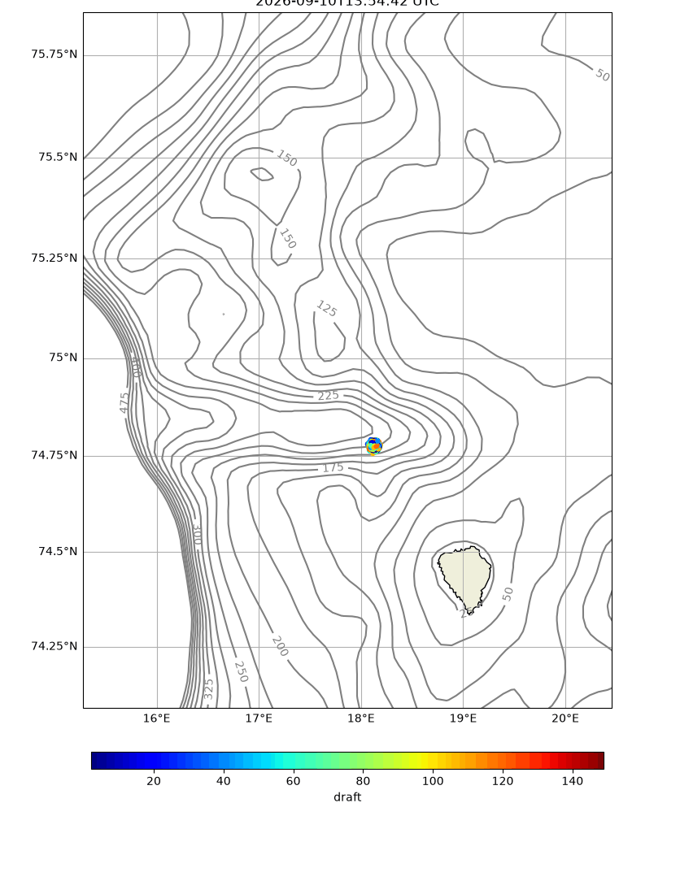
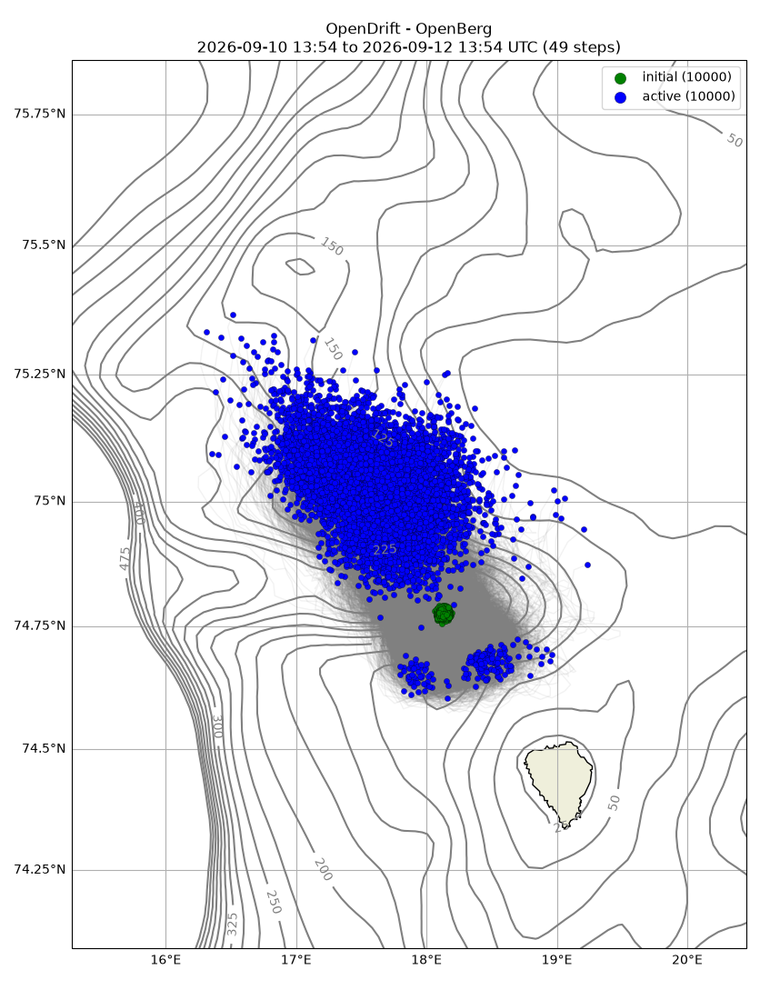
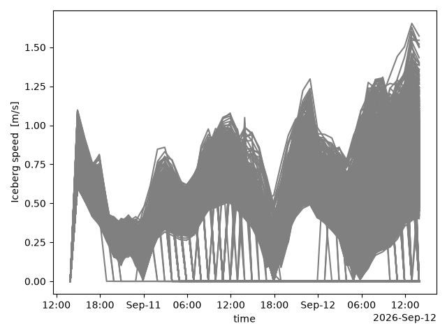

Note
Go to the end to download the full example code.
Icebergs (openberg)
from datetime import datetime, timedelta
import numpy as np
import matplotlib.pyplot as plt
import opendrift
from opendrift.models.openberg import OpenBerg
Currents and wind forcing
forcing = ['https://thredds.met.no/thredds/dodsC/fou-hi/barents_eps_zdepth_be',
'https://pae-paha.pacioos.hawaii.edu/thredds/dodsC/ncep_global/NCEP_Global_Atmospheric_Model_best.ncd']
A permutation of iceberg sizes/dimensions
n = 10
lengths = np.linspace(50, 500, n)
widths = np.linspace(20, 200, n)
sails = np.linspace(5, 50, n)
drafts = np.linspace(2, 120, n)
lengths, widths, sails, drafts = np.meshgrid(lengths, widths, sails, drafts)
icebergs = {'lon': 18.127, 'lat': 74.776, 'time': datetime.now(),
'number': lengths.size, 'radius': 500,
'sail': sails, 'draft': drafts, 'length': lengths, 'width': widths}
Simulating drift for 48 hours
o = OpenBerg()
o.set_config('drift:vertical_profile', False)
o.set_config('drift:horizontal_diffusivity', 100)
o.add_readers_from_list(forcing)
o.seed_elements(**icebergs)
o.run(duration=timedelta(hours=48))
o.animation(color='draft', contourlines=np.arange(0, 500, 25))
09:31:53 DEBUG opendrift.config:168: Adding 18 config items from __init__
09:31:53 DEBUG opendrift.config:178: Overwriting config item readers:max_number_of_fails
09:31:53 DEBUG opendrift.config:168: Adding 13 config items from __init__
09:31:53 INFO opendrift:569: OpenDriftSimulation initialised (version 1.14.3 / v1.14.3-46-g60beecd)
09:31:53 DEBUG opendrift.config:168: Adding 11 config items from openberg
09:31:53 DEBUG opendrift.readers.reader_lazy:37: Delaying initialisation of LazyReader: https://thredds.met.no/thredds/dodsC/fou-hi/barents_eps_zdepth_be
09:31:53 DEBUG opendrift.readers.reader_lazy:37: Delaying initialisation of LazyReader: https://pae-paha.pacioos.hawaii.edu/thredds/dodsC/ncep_global/NCEP_Global_Atmospheric_Model_best.ncd
09:31:53 DEBUG opendrift.models.basemodel.environment:313: Added reader LazyReader: https://thredds.met.no/thredds/dodsC/fou-hi/barents_eps_zdepth_be
09:31:53 DEBUG opendrift.models.basemodel.environment:313: Added reader LazyReader: https://pae-paha.pacioos.hawaii.edu/thredds/dodsC/ncep_global/NCEP_Global_Atmospheric_Model_best.ncd
09:31:53 INFO opendrift.models.basemodel.environment:206: Adding a global landmask from GSHHG
09:31:53 DEBUG opendrift.readers.basereader:186: Variable mapping: ['sea_floor_depth_below_sea_level'] -> ['land_binary_mask'] is not activated
09:31:58 DEBUG opendrift.models.basemodel.environment:313: Added reader global_landmask
09:31:58 INFO opendrift.models.basemodel.environment:229: Fallback values will be used for the following variables which have no readers:
09:31:58 INFO opendrift.models.basemodel.environment:232: sea_floor_depth_below_sea_level: 10000.000000
09:31:58 INFO opendrift.models.basemodel.environment:232: sea_surface_height: 0.000000
09:31:58 INFO opendrift.models.basemodel.environment:232: sea_surface_x_slope: 0.000000
09:31:58 INFO opendrift.models.basemodel.environment:232: sea_surface_y_slope: 0.000000
09:31:58 INFO opendrift.models.basemodel.environment:232: sea_surface_wave_significant_height: 0.000000
09:31:58 INFO opendrift.models.basemodel.environment:232: sea_surface_wave_from_direction: 0.000000
09:31:58 INFO opendrift.models.basemodel.environment:232: sea_surface_wave_stokes_drift_x_velocity: 0.000000
09:31:58 INFO opendrift.models.basemodel.environment:232: sea_surface_wave_stokes_drift_y_velocity: 0.000000
09:31:58 INFO opendrift.models.basemodel.environment:232: sea_water_temperature: 2.000000
09:31:58 INFO opendrift.models.basemodel.environment:232: sea_water_salinity: 35.000000
09:31:58 INFO opendrift.models.basemodel.environment:232: sea_ice_area_fraction: 0.000000
09:31:58 INFO opendrift.models.basemodel.environment:232: sea_ice_thickness: 0.000000
09:31:58 INFO opendrift.models.basemodel.environment:232: sea_ice_x_velocity: 0.000000
09:31:58 INFO opendrift.models.basemodel.environment:232: sea_ice_y_velocity: 0.000000
09:31:58 DEBUG opendrift:157: Changed mode from Mode.Config to Mode.Ready
09:31:58 DEBUG opendrift.elements.elements:138: array sail is multidimensional -> flattening with ravel
09:31:58 DEBUG opendrift.elements.elements:138: array draft is multidimensional -> flattening with ravel
09:31:58 DEBUG opendrift.elements.elements:138: array length is multidimensional -> flattening with ravel
09:31:58 DEBUG opendrift.elements.elements:138: array width is multidimensional -> flattening with ravel
09:31:58 DEBUG opendrift:157: Changed mode from Mode.Ready to Mode.Run
09:31:58 DEBUG opendrift:1755:
------------------------------------------------------
Software and hardware:
OpenDrift version 1.14.3
Platform: Linux, 6.8.0-1039-aws
4.0 GB memory
36 processors (x86_64)
NumPy version 2.3.3
SciPy version 1.16.2
Matplotlib version 3.10.7
NetCDF4 version 1.7.3
Xarray version 2025.10.1
ADIOS (adios_db) version 1.2.5
Copernicusmarine version 2.2.3
Python version 3.13.9 | packaged by conda-forge | (main, Oct 16 2025, 10:31:39) [GCC 14.3.0]
------------------------------------------------------
09:31:58 DEBUG opendrift:1768: No output file is specified, neglecting export_buffer_length
09:31:58 INFO opendrift:1794: Storing previous values of element property lon because of condition (('general:coastline_action', 'in', ['stranding', 'previous']), 'or', ('general:seafloor_action', 'in', ['previous']))
09:31:58 INFO opendrift:1794: Storing previous values of element property lat because of condition (('general:coastline_action', 'in', ['stranding', 'previous']), 'or', ('general:seafloor_action', 'in', ['previous']))
09:31:58 DEBUG opendrift:1917: Finalizing environment and preparing readers for simulation coverage ([12.13479867 73.19932387 24.12024245 76.34887101]) and time (2025-10-22 09:31:52.912341 to 2025-10-24 09:31:52.912341)
09:31:58 DEBUG opendrift.models.basemodel.environment:168: Preparing LazyReader: https://thredds.met.no/thredds/dodsC/fou-hi/barents_eps_zdepth_be for extent [12.13479867 73.19932387 24.12024245 76.34887101]
09:31:58 DEBUG opendrift.models.basemodel.environment:168: Preparing LazyReader: https://pae-paha.pacioos.hawaii.edu/thredds/dodsC/ncep_global/NCEP_Global_Atmospheric_Model_best.ncd for extent [12.13479867 73.19932387 24.12024245 76.34887101]
09:31:58 DEBUG opendrift.models.basemodel.environment:168: Preparing global_landmask for extent [12.13479867 73.19932387 24.12024245 76.34887101]
09:31:58 DEBUG opendrift.readers.basereader.variables:555: Nothing more to prepare for global_landmask
09:31:58 DEBUG opendrift:2013: Initial self.result, size Frozen({'trajectory': 10000, 'time': 49})
09:31:58 INFO opendrift:945: Using existing reader for land_binary_mask to move elements to ocean
09:31:58 DEBUG opendrift.models.basemodel.environment:592: ----------------------------------------
09:31:58 DEBUG opendrift.models.basemodel.environment:593: Variable group ['land_binary_mask']
09:31:58 DEBUG opendrift.models.basemodel.environment:594: ----------------------------------------
09:31:58 DEBUG opendrift.models.basemodel.environment:598: Calling reader global_landmask
09:31:58 DEBUG opendrift.models.basemodel.environment:599: ----------------------------------------
09:31:58 DEBUG opendrift.models.basemodel.environment:615: Data needed for 10000 elements
09:31:58 DEBUG opendrift.readers.basereader.variables:761: Fetching variables from global_landmask covering 10000 elements
09:31:58 DEBUG opendrift.readers.basereader.continuous:37: Fetched env-before
09:31:58 DEBUG opendrift.readers.basereader.variables:639: Checking land_binary_mask for invalid values
09:31:58 DEBUG opendrift.readers.basereader.variables:797: Reader projection is latlon - rotation of vectors is not needed.
09:31:58 DEBUG opendrift.models.basemodel.environment:749: Obtained data for all elements.
09:31:58 DEBUG opendrift.models.basemodel.environment:762: ---------------------------------------
09:31:58 DEBUG opendrift.models.basemodel.environment:763: Finished processing all variable groups
09:31:58 DEBUG opendrift.models.basemodel.environment:888: ------------ SUMMARY -------------
09:31:58 DEBUG opendrift.models.basemodel.environment:890: land_binary_mask: 0 (min) 0 (max)
09:31:58 DEBUG opendrift.models.basemodel.environment:892: ---------------------------------
09:31:58 INFO opendrift:975: All points are in ocean
09:31:58 DEBUG opendrift:902: to be seeded: 10000, already seeded 0
09:31:58 DEBUG opendrift:924: Released 10000 new elements.
09:31:58 DEBUG opendrift:2089: ======================================================================
09:31:58 INFO opendrift:2090: 2025-10-22 09:31:52.912341 - step 1 of 48 - 10000 active elements (0 deactivated)
09:31:58 DEBUG opendrift:2096: 0 elements scheduled.
09:31:58 DEBUG opendrift:2098: ======================================================================
09:31:58 DEBUG opendrift:2109: 74.7560806274414 <- latitude -> 74.7921142578125
09:31:58 DEBUG opendrift:2109: 18.063207626342773 <- longitude -> 18.19183349609375
09:31:58 DEBUG opendrift:2107: z = 0.0
09:31:58 DEBUG opendrift:2110: ---------------------------------
09:31:58 DEBUG opendrift.models.basemodel.environment:566: Variables not covered by any reader: ['sea_surface_wave_significant_height', 'y_wind', 'sea_surface_y_slope', 'sea_surface_wave_stokes_drift_y_velocity', 'sea_ice_area_fraction', 'sea_water_temperature', 'y_sea_water_velocity', 'sea_surface_x_slope', 'sea_floor_depth_below_sea_level', 'sea_water_salinity', 'sea_surface_wave_from_direction', 'x_sea_water_velocity', 'sea_surface_height', 'sea_surface_wave_stokes_drift_x_velocity', 'sea_ice_thickness', 'x_wind']
09:31:58 DEBUG opendrift.readers.reader_lazy:56: Initialising: LazyReader: https://thredds.met.no/thredds/dodsC/fou-hi/barents_eps_zdepth_be
09:31:58 DEBUG opendrift.readers:154: Testing reader <module 'opendrift.readers.reader_netCDF_CF_generic' from '/root/project/opendrift/readers/reader_netCDF_CF_generic.py'>
09:31:58 INFO opendrift.readers:63: Opening file with xr.open_dataset
09:31:58 DEBUG findlibs:301: about to search for libeccodes.so/eccodeslib in <function _find_in_package at 0x7f4b09109800>
09:31:58 DEBUG findlibs:301: about to search for libeccodes.so/eccodeslib in <function _find_in_python at 0x7f4b091098a0>
09:31:58 DEBUG findlibs:303: found libeccodes.so/eccodeslib in <function _find_in_python at 0x7f4b091098a0>
09:31:58 DEBUG gribapi.bindings:98: eccodes lib search: findlibs returned /opt/conda/envs/opendrift/lib/libeccodes.so
09:32:00 DEBUG opendrift.readers.reader_netCDF_CF_generic:128: Finding coordinate variables.
09:32:00 DEBUG opendrift.readers.reader_netCDF_CF_generic:143: Parsing CF grid mapping dictionary: {'grid_mapping_name': 'lambert_conformal_conic', 'standard_parallel': array([77.5, 77.5], dtype=float32), 'longitude_of_central_meridian': np.float32(-25.0), 'latitude_of_projection_origin': np.float32(77.5), 'earth_radius': np.float32(6.371e+06), 'proj4': '+proj=lcc +lat_0=77.5 +lon_0=-25 +lat_1=77.5 +lat_2=77.5 +no_defs +R=6.371e+06'}
09:32:00 DEBUG pyproj:40: PROJ_ERROR: proj_create: several objects matching this name: Krovak (Greenwich), Equal Earth Greenwich, Laborde Grid (Greenwich), Modified Krovak (Greenwich), Krovak East North (Greenwich), Modified Krovak East North (Greenwich), ...
09:32:00 INFO opendrift.readers.reader_netCDF_CF_generic:332: Detected dimensions: {'x': 'X', 'y': 'Y', 'z': 'depth', 'time': 'time'}
09:32:00 DEBUG opendrift.readers.reader_netCDF_CF_generic:368: Skipped variables without standard_name: ['angle']
09:32:00 DEBUG opendrift.readers.basereader.variables:614: Setting buffer size 10 for reader https://thredds.met.no/thredds/dodsC/fou-hi/barents_eps_zdepth_be, assuming a maximum average speed of 5 m/s and time span of 1:00:00
09:32:00 INFO opendrift.readers.basereader:176: Variable x_sea_water_velocity will be rotated from eastward_sea_water_velocity
09:32:00 INFO opendrift.readers.basereader:176: Variable y_sea_water_velocity will be rotated from northward_sea_water_velocity
09:32:00 DEBUG opendrift.readers.basereader:186: Variable mapping: ['sea_floor_depth_below_sea_level'] -> ['land_binary_mask'] is not activated
09:32:00 DEBUG opendrift.readers.basereader.variables:569: Adding variable mapping: ['x_wind', 'y_wind'] -> wind_speed
09:32:00 DEBUG opendrift.readers.basereader.variables:569: Adding variable mapping: ['sea_ice_x_velocity', 'sea_ice_y_velocity'] -> sea_ice_speed
09:32:00 DEBUG opendrift.readers.basereader.variables:569: Adding variable mapping: ['x_sea_water_velocity', 'y_sea_water_velocity'] -> sea_water_speed
09:32:00 DEBUG opendrift.readers.basereader.structured:151: Clearing cache for reader https://thredds.met.no/thredds/dodsC/fou-hi/barents_eps_zdepth_be before starting new simulation
09:32:00 DEBUG opendrift.readers.basereader.variables:614: Setting buffer size 4 for reader https://thredds.met.no/thredds/dodsC/fou-hi/barents_eps_zdepth_be, assuming a maximum average speed of 1 m/s and time span of 1:00:00
09:32:00 DEBUG opendrift.readers.basereader.variables:555: Nothing more to prepare for https://thredds.met.no/thredds/dodsC/fou-hi/barents_eps_zdepth_be
09:32:00 DEBUG opendrift.readers.reader_lazy:71: Reader initialised: https://thredds.met.no/thredds/dodsC/fou-hi/barents_eps_zdepth_be
09:32:00 DEBUG opendrift.readers.basereader.variables:614: Setting buffer size 4 for reader https://thredds.met.no/thredds/dodsC/fou-hi/barents_eps_zdepth_be, assuming a maximum average speed of 1 m/s and time span of 1:00:00
09:32:00 DEBUG opendrift.readers.reader_lazy:56: Initialising: LazyReader: https://pae-paha.pacioos.hawaii.edu/thredds/dodsC/ncep_global/NCEP_Global_Atmospheric_Model_best.ncd
09:32:00 DEBUG opendrift.readers:154: Testing reader <module 'opendrift.readers.reader_netCDF_CF_generic' from '/root/project/opendrift/readers/reader_netCDF_CF_generic.py'>
09:32:00 INFO opendrift.readers:63: Opening file with xr.open_dataset
09:32:02 DEBUG opendrift.readers.reader_netCDF_CF_generic:128: Finding coordinate variables.
09:32:02 DEBUG opendrift.readers.reader_netCDF_CF_generic:262: Lon and lat are 1D arrays - using as projection coordinates
09:32:02 INFO opendrift.readers.reader_netCDF_CF_generic:332: Detected dimensions: {'time': 'time', 'x': 'longitude', 'y': 'latitude'}
09:32:02 DEBUG opendrift.readers.basereader.variables:614: Setting buffer size 3 for reader https://pae-paha.pacioos.hawaii.edu/thredds/dodsC/ncep_global/NCEP_Global_Atmospheric_Model_best.ncd, assuming a maximum average speed of 5 m/s and time span of 3:00:00
09:32:02 INFO opendrift.readers.basereader:176: Variable x_wind will be rotated from eastward_wind
09:32:02 INFO opendrift.readers.basereader:176: Variable y_wind will be rotated from northward_wind
09:32:02 DEBUG opendrift.readers.basereader:186: Variable mapping: ['sea_floor_depth_below_sea_level'] -> ['land_binary_mask'] is not activated
09:32:02 DEBUG opendrift.readers.basereader.variables:569: Adding variable mapping: ['x_wind', 'y_wind'] -> wind_speed
09:32:02 DEBUG opendrift.readers.basereader.structured:151: Clearing cache for reader https://pae-paha.pacioos.hawaii.edu/thredds/dodsC/ncep_global/NCEP_Global_Atmospheric_Model_best.ncd before starting new simulation
09:32:02 DEBUG opendrift.readers.basereader.variables:614: Setting buffer size 3 for reader https://pae-paha.pacioos.hawaii.edu/thredds/dodsC/ncep_global/NCEP_Global_Atmospheric_Model_best.ncd, assuming a maximum average speed of 1 m/s and time span of 3:00:00
09:32:02 DEBUG opendrift.readers.basereader.variables:555: Nothing more to prepare for https://pae-paha.pacioos.hawaii.edu/thredds/dodsC/ncep_global/NCEP_Global_Atmospheric_Model_best.ncd
09:32:02 DEBUG opendrift.readers.reader_lazy:71: Reader initialised: https://pae-paha.pacioos.hawaii.edu/thredds/dodsC/ncep_global/NCEP_Global_Atmospheric_Model_best.ncd
09:32:02 DEBUG opendrift.readers.basereader.variables:614: Setting buffer size 3 for reader https://pae-paha.pacioos.hawaii.edu/thredds/dodsC/ncep_global/NCEP_Global_Atmospheric_Model_best.ncd, assuming a maximum average speed of 1 m/s and time span of 3:00:00
09:32:02 DEBUG opendrift.models.basemodel.environment:592: ----------------------------------------
09:32:02 DEBUG opendrift.models.basemodel.environment:593: Variable group ['land_binary_mask']
09:32:02 DEBUG opendrift.models.basemodel.environment:594: ----------------------------------------
09:32:02 DEBUG opendrift.models.basemodel.environment:598: Calling reader global_landmask
09:32:02 DEBUG opendrift.models.basemodel.environment:599: ----------------------------------------
09:32:02 DEBUG opendrift.models.basemodel.environment:615: Data needed for 10000 elements
09:32:02 DEBUG opendrift.readers.basereader.variables:761: Fetching variables from global_landmask covering 10000 elements
09:32:02 DEBUG opendrift.readers.basereader.continuous:37: Fetched env-before
09:32:02 DEBUG opendrift.readers.basereader.variables:639: Checking land_binary_mask for invalid values
09:32:02 DEBUG opendrift.readers.basereader.variables:797: Reader projection is latlon - rotation of vectors is not needed.
09:32:02 DEBUG opendrift.models.basemodel.environment:749: Obtained data for all elements.
09:32:02 DEBUG opendrift.models.basemodel.environment:592: ----------------------------------------
09:32:02 DEBUG opendrift.models.basemodel.environment:593: Variable group ['sea_floor_depth_below_sea_level', 'sea_ice_area_fraction', 'sea_ice_thickness', 'sea_ice_x_velocity', 'sea_ice_y_velocity', 'sea_water_salinity', 'sea_water_temperature', 'sea_surface_height', 'x_sea_water_velocity', 'y_sea_water_velocity']
09:32:02 DEBUG opendrift.models.basemodel.environment:594: ----------------------------------------
09:32:02 DEBUG opendrift.models.basemodel.environment:598: Calling reader https://thredds.met.no/thredds/dodsC/fou-hi/barents_eps_zdepth_be
09:32:02 DEBUG opendrift.models.basemodel.environment:599: ----------------------------------------
09:32:02 DEBUG opendrift.models.basemodel.environment:615: Data needed for 10000 elements
09:32:02 DEBUG opendrift.readers.basereader.variables:761: Fetching variables from https://thredds.met.no/thredds/dodsC/fou-hi/barents_eps_zdepth_be covering 10000 elements
09:32:02 DEBUG opendrift.readers.basereader.structured:220: Reader time:
2025-10-22 09:00:00 (before)
2025-10-22 10:00:00 (after)
09:32:04 DEBUG opendrift.readers.reader_netCDF_CF_generic:450: Using eastward_sea_water_velocity to retrieve x_sea_water_velocity
09:32:04 DEBUG opendrift.readers.reader_netCDF_CF_generic:450: Using northward_sea_water_velocity to retrieve y_sea_water_velocity
09:32:05 DEBUG opendrift.readers.reader_netCDF_CF_generic:582: Rotating vector from east/north to xy orientation: ['x_sea_water_velocity', 'y_sea_water_velocity']
09:32:05 DEBUG opendrift.readers.basereader.variables:100: Rotating vectors between -42.53997553957136 and -41.47306265087688 degrees.
09:32:05 DEBUG opendrift.readers.basereader.variables:639: Checking sea_floor_depth_below_sea_level for invalid values
09:32:05 DEBUG opendrift.readers.basereader.variables:639: Checking x_sea_water_velocity for invalid values
09:32:05 DEBUG opendrift.readers.basereader.variables:639: Checking y_sea_water_velocity for invalid values
09:32:05 DEBUG opendrift.readers.basereader.structured:290: Fetched env-block (size 11x9x7) for time before (2025-10-22 09:00:00)
09:32:06 DEBUG opendrift.readers.reader_netCDF_CF_generic:450: Using eastward_sea_water_velocity to retrieve x_sea_water_velocity
09:32:06 DEBUG opendrift.readers.reader_netCDF_CF_generic:450: Using northward_sea_water_velocity to retrieve y_sea_water_velocity
09:32:07 DEBUG opendrift.readers.reader_netCDF_CF_generic:582: Rotating vector from east/north to xy orientation: ['x_sea_water_velocity', 'y_sea_water_velocity']
09:32:07 DEBUG opendrift.readers.basereader.variables:100: Rotating vectors between -42.53997553957136 and -41.47306265087688 degrees.
09:32:07 DEBUG opendrift.readers.basereader.variables:639: Checking sea_floor_depth_below_sea_level for invalid values
09:32:07 DEBUG opendrift.readers.basereader.variables:639: Checking x_sea_water_velocity for invalid values
09:32:07 DEBUG opendrift.readers.basereader.variables:639: Checking y_sea_water_velocity for invalid values
09:32:07 DEBUG opendrift.readers.basereader.structured:313: Fetched env-block (size 11x9x7) for time after (2025-10-22 10:00:00)
09:32:07 DEBUG opendrift.readers.basereader.structured:334: Interpolating before (2025-10-22 09:00:00) in space (linearNDFast)
09:32:07 DEBUG opendrift.readers.interpolation.structured:97: Initialising interpolator.
09:32:07 DEBUG opendrift.readers.basereader.structured:340: Interpolating after (2025-10-22 10:00:00) in space (linearNDFast)
09:32:07 DEBUG opendrift.readers.interpolation.structured:97: Initialising interpolator.
09:32:07 DEBUG opendrift.readers.basereader.structured:355: Interpolating before (2025-10-22 09:00:00, weight 0.47) and
after (2025-10-22 10:00:00, weight 0.53) in time
09:32:07 DEBUG opendrift.readers.basereader.structured:368: Interpolating profiles in time
09:32:07 DEBUG opendrift.readers.basereader.variables:100: Rotating vectors between 42.05566531895647 and 42.18125751143569 degrees.
09:32:07 DEBUG opendrift.readers.basereader.variables:100: Rotating vectors between 42.05566531895647 and 42.18125751143569 degrees.
09:32:07 DEBUG opendrift.readers.basereader.variables:100: Rotating vectors between 42.05566531895647 and 42.18125751143569 degrees.
09:32:07 DEBUG opendrift.models.basemodel.environment:749: Obtained data for all elements.
09:32:07 DEBUG opendrift.models.basemodel.environment:592: ----------------------------------------
09:32:07 DEBUG opendrift.models.basemodel.environment:593: Variable group ['x_wind', 'y_wind']
09:32:07 DEBUG opendrift.models.basemodel.environment:594: ----------------------------------------
09:32:07 DEBUG opendrift.models.basemodel.environment:598: Calling reader https://thredds.met.no/thredds/dodsC/fou-hi/barents_eps_zdepth_be
09:32:07 DEBUG opendrift.models.basemodel.environment:599: ----------------------------------------
09:32:07 DEBUG opendrift.models.basemodel.environment:615: Data needed for 10000 elements
09:32:07 DEBUG opendrift.readers.basereader.variables:761: Fetching variables from https://thredds.met.no/thredds/dodsC/fou-hi/barents_eps_zdepth_be covering 10000 elements
09:32:07 DEBUG opendrift.readers.basereader.structured:220: Reader time:
2025-10-22 09:00:00 (before)
2025-10-22 10:00:00 (after)
09:32:07 DEBUG opendrift.readers.basereader.variables:639: Checking x_wind for invalid values
09:32:07 DEBUG opendrift.readers.basereader.variables:639: Checking y_wind for invalid values
09:32:07 DEBUG opendrift.readers.basereader.structured:290: Fetched env-block (size 11x9x2) for time before (2025-10-22 09:00:00)
09:32:07 DEBUG opendrift.readers.basereader.variables:639: Checking x_wind for invalid values
09:32:07 DEBUG opendrift.readers.basereader.variables:639: Checking y_wind for invalid values
09:32:07 DEBUG opendrift.readers.basereader.structured:313: Fetched env-block (size 11x9x2) for time after (2025-10-22 10:00:00)
09:32:07 DEBUG opendrift.readers.basereader.structured:334: Interpolating before (2025-10-22 09:00:00) in space (linearNDFast)
09:32:07 DEBUG opendrift.readers.interpolation.structured:97: Initialising interpolator.
09:32:07 DEBUG opendrift.readers.basereader.structured:340: Interpolating after (2025-10-22 10:00:00) in space (linearNDFast)
09:32:07 DEBUG opendrift.readers.interpolation.structured:97: Initialising interpolator.
09:32:07 DEBUG opendrift.readers.basereader.structured:355: Interpolating before (2025-10-22 09:00:00, weight 0.47) and
after (2025-10-22 10:00:00, weight 0.53) in time
09:32:07 DEBUG opendrift.readers.basereader.variables:100: Rotating vectors between 42.05566531895647 and 42.18125751143569 degrees.
09:32:07 DEBUG opendrift.models.basemodel.environment:749: Obtained data for all elements.
09:32:07 DEBUG opendrift.models.basemodel.environment:762: ---------------------------------------
09:32:07 DEBUG opendrift.models.basemodel.environment:763: Finished processing all variable groups
09:32:07 DEBUG opendrift.models.basemodel.environment:799: Using fallback value 2 for sea_water_temperature for 0 profiles
09:32:07 DEBUG opendrift.models.basemodel.environment:799: Using fallback value 35 for sea_water_salinity for 0 profiles
09:32:07 DEBUG opendrift.models.basemodel.environment:888: ------------ SUMMARY -------------
09:32:07 DEBUG opendrift.models.basemodel.environment:890: x_sea_water_velocity: -0.367194 (min) -0.327092 (max)
09:32:07 DEBUG opendrift.models.basemodel.environment:890: y_sea_water_velocity: -0.122579 (min) -0.0947184 (max)
09:32:07 DEBUG opendrift.models.basemodel.environment:890: sea_floor_depth_below_sea_level: 227.6 (min) 266.329 (max)
09:32:07 DEBUG opendrift.models.basemodel.environment:890: sea_surface_height: -0.573582 (min) -0.568407 (max)
09:32:07 DEBUG opendrift.models.basemodel.environment:890: sea_surface_x_slope: 0 (min) 0 (max)
09:32:07 DEBUG opendrift.models.basemodel.environment:890: sea_surface_y_slope: 0 (min) 0 (max)
09:32:07 DEBUG opendrift.models.basemodel.environment:890: x_wind: -3.74784 (min) -3.51043 (max)
09:32:07 DEBUG opendrift.models.basemodel.environment:890: y_wind: 5.71701 (min) 5.78364 (max)
09:32:07 DEBUG opendrift.models.basemodel.environment:890: sea_surface_wave_significant_height: 0 (min) 0 (max)
09:32:07 DEBUG opendrift.models.basemodel.environment:890: sea_surface_wave_from_direction: 0 (min) 0 (max)
09:32:07 DEBUG opendrift.models.basemodel.environment:890: sea_surface_wave_stokes_drift_x_velocity: 0 (min) 0 (max)
09:32:07 DEBUG opendrift.models.basemodel.environment:890: sea_surface_wave_stokes_drift_y_velocity: 0 (min) 0 (max)
09:32:07 DEBUG opendrift.models.basemodel.environment:890: sea_water_temperature: 4.87472 (min) 5.01706 (max)
09:32:07 DEBUG opendrift.models.basemodel.environment:890: sea_water_salinity: 34.5771 (min) 34.5836 (max)
09:32:07 DEBUG opendrift.models.basemodel.environment:890: sea_ice_area_fraction: 0 (min) 0 (max)
09:32:07 DEBUG opendrift.models.basemodel.environment:890: sea_ice_thickness: 0 (min) 0 (max)
09:32:07 DEBUG opendrift.models.basemodel.environment:890: sea_ice_x_velocity: 0 (min) 0 (max)
09:32:07 DEBUG opendrift.models.basemodel.environment:890: sea_ice_y_velocity: 0 (min) 0 (max)
09:32:07 DEBUG opendrift.models.basemodel.environment:890: land_binary_mask: 0 (min) 0 (max)
09:32:07 DEBUG opendrift.models.basemodel.environment:892: ---------------------------------
09:32:07 DEBUG opendrift.models.physics_methods:810: Calculating Hs from wind, min: 1.112888, mean: 1.140393, max: 1.165521
09:32:07 DEBUG opendrift:689: No elements hit coastline.
09:32:07 DEBUG opendrift:760: No elements hit seafloor.
09:32:08 DEBUG opendrift:1687: No elements to deactivate
09:32:08 DEBUG opendrift:2146: Calling OpenBerg.update()
09:32:08 DEBUG opendrift.models.openberg:585: Rolling over : 3615 icebergs ...
09:32:08 DEBUG opendrift.models.openberg:540: Melting is disabled
09:32:08 DEBUG opendrift.models.openberg:453: Advection with surface currents
09:32:08 DEBUG opendrift.models.openberg:512: No grounded icebergs detected in this timestep
09:32:11 DEBUG opendrift:1649: Moving elements according to horizontal diffusivity of 100.0, with speeds between 0.0034749393865888857 and 1.105526129491915 m/s
09:32:11 DEBUG opendrift:902: to be seeded: 0, already seeded 10000
09:32:11 DEBUG opendrift:2089: ======================================================================
09:32:11 INFO opendrift:2090: 2025-10-22 10:31:52.912341 - step 2 of 48 - 10000 active elements (0 deactivated)
09:32:11 DEBUG opendrift:2096: 0 elements scheduled.
09:32:11 DEBUG opendrift:2098: ======================================================================
09:32:11 DEBUG opendrift:2109: 74.74987420130665 <- latitude -> 74.8203627647327
09:32:11 DEBUG opendrift:2109: 17.93568730348578 <- longitude -> 18.212820968088124
09:32:11 DEBUG opendrift:2107: z = 0.0
09:32:11 DEBUG opendrift:2110: ---------------------------------
09:32:11 DEBUG opendrift.models.basemodel.environment:592: ----------------------------------------
09:32:11 DEBUG opendrift.models.basemodel.environment:593: Variable group ['land_binary_mask']
09:32:11 DEBUG opendrift.models.basemodel.environment:594: ----------------------------------------
09:32:11 DEBUG opendrift.models.basemodel.environment:598: Calling reader global_landmask
09:32:11 DEBUG opendrift.models.basemodel.environment:599: ----------------------------------------
09:32:11 DEBUG opendrift.models.basemodel.environment:615: Data needed for 10000 elements
09:32:11 DEBUG opendrift.readers.basereader.variables:761: Fetching variables from global_landmask covering 10000 elements
09:32:11 DEBUG opendrift.readers.basereader.continuous:37: Fetched env-before
09:32:11 DEBUG opendrift.readers.basereader.variables:639: Checking land_binary_mask for invalid values
09:32:11 DEBUG opendrift.readers.basereader.variables:797: Reader projection is latlon - rotation of vectors is not needed.
09:32:11 DEBUG opendrift.models.basemodel.environment:749: Obtained data for all elements.
09:32:11 DEBUG opendrift.models.basemodel.environment:592: ----------------------------------------
09:32:11 DEBUG opendrift.models.basemodel.environment:593: Variable group ['sea_floor_depth_below_sea_level', 'sea_ice_area_fraction', 'sea_ice_thickness', 'sea_ice_x_velocity', 'sea_ice_y_velocity', 'sea_water_salinity', 'sea_water_temperature', 'sea_surface_height', 'x_sea_water_velocity', 'y_sea_water_velocity']
09:32:11 DEBUG opendrift.models.basemodel.environment:594: ----------------------------------------
09:32:11 DEBUG opendrift.models.basemodel.environment:598: Calling reader https://thredds.met.no/thredds/dodsC/fou-hi/barents_eps_zdepth_be
09:32:11 DEBUG opendrift.models.basemodel.environment:599: ----------------------------------------
09:32:11 DEBUG opendrift.models.basemodel.environment:615: Data needed for 10000 elements
09:32:11 DEBUG opendrift.readers.basereader.variables:761: Fetching variables from https://thredds.met.no/thredds/dodsC/fou-hi/barents_eps_zdepth_be covering 10000 elements
09:32:11 DEBUG opendrift.readers.basereader.structured:220: Reader time:
2025-10-22 10:00:00 (before)
2025-10-22 11:00:00 (after)
09:32:12 DEBUG opendrift.readers.reader_netCDF_CF_generic:450: Using eastward_sea_water_velocity to retrieve x_sea_water_velocity
09:32:13 DEBUG opendrift.readers.reader_netCDF_CF_generic:450: Using northward_sea_water_velocity to retrieve y_sea_water_velocity
09:32:13 DEBUG opendrift.readers.reader_netCDF_CF_generic:582: Rotating vector from east/north to xy orientation: ['x_sea_water_velocity', 'y_sea_water_velocity']
09:32:13 DEBUG opendrift.readers.basereader.variables:100: Rotating vectors between -42.59642831712202 and -41.35521674401701 degrees.
09:32:13 DEBUG opendrift.readers.basereader.variables:639: Checking sea_floor_depth_below_sea_level for invalid values
09:32:13 DEBUG opendrift.readers.basereader.variables:639: Checking x_sea_water_velocity for invalid values
09:32:13 DEBUG opendrift.readers.basereader.variables:639: Checking y_sea_water_velocity for invalid values
09:32:13 DEBUG opendrift.readers.basereader.structured:313: Fetched env-block (size 12x11x7) for time after (2025-10-22 11:00:00)
09:32:13 DEBUG opendrift.readers.basereader.structured:334: Interpolating before (2025-10-22 10:00:00) in space (linearNDFast)
09:32:13 DEBUG opendrift.readers.interpolation.structured:97: Initialising interpolator.
09:32:13 DEBUG opendrift.readers.basereader.structured:340: Interpolating after (2025-10-22 11:00:00) in space (linearNDFast)
09:32:13 DEBUG opendrift.readers.interpolation.structured:97: Initialising interpolator.
09:32:13 DEBUG opendrift.readers.basereader.structured:355: Interpolating before (2025-10-22 10:00:00, weight 0.47) and
after (2025-10-22 11:00:00, weight 0.53) in time
09:32:13 DEBUG opendrift.readers.basereader.structured:368: Interpolating profiles in time
09:32:13 DEBUG opendrift.readers.basereader.variables:100: Rotating vectors between 41.93117685782521 and 42.20172159802339 degrees.
09:32:13 DEBUG opendrift.readers.basereader.variables:100: Rotating vectors between 41.93117685782521 and 42.20172159802339 degrees.
09:32:13 DEBUG opendrift.readers.basereader.variables:100: Rotating vectors between 41.93117685782521 and 42.20172159802339 degrees.
09:32:13 DEBUG opendrift.models.basemodel.environment:749: Obtained data for all elements.
09:32:13 DEBUG opendrift.models.basemodel.environment:592: ----------------------------------------
09:32:13 DEBUG opendrift.models.basemodel.environment:593: Variable group ['x_wind', 'y_wind']
09:32:13 DEBUG opendrift.models.basemodel.environment:594: ----------------------------------------
09:32:13 DEBUG opendrift.models.basemodel.environment:598: Calling reader https://thredds.met.no/thredds/dodsC/fou-hi/barents_eps_zdepth_be
09:32:13 DEBUG opendrift.models.basemodel.environment:599: ----------------------------------------
09:32:13 DEBUG opendrift.models.basemodel.environment:615: Data needed for 10000 elements
09:32:13 DEBUG opendrift.readers.basereader.variables:761: Fetching variables from https://thredds.met.no/thredds/dodsC/fou-hi/barents_eps_zdepth_be covering 10000 elements
09:32:13 DEBUG opendrift.readers.basereader.structured:220: Reader time:
2025-10-22 10:00:00 (before)
2025-10-22 11:00:00 (after)
09:32:14 DEBUG opendrift.readers.basereader.variables:639: Checking x_wind for invalid values
09:32:14 DEBUG opendrift.readers.basereader.variables:639: Checking y_wind for invalid values
09:32:14 DEBUG opendrift.readers.basereader.structured:313: Fetched env-block (size 12x11x2) for time after (2025-10-22 11:00:00)
09:32:14 DEBUG opendrift.readers.basereader.structured:334: Interpolating before (2025-10-22 10:00:00) in space (linearNDFast)
09:32:14 DEBUG opendrift.readers.interpolation.structured:97: Initialising interpolator.
09:32:14 DEBUG opendrift.readers.basereader.structured:340: Interpolating after (2025-10-22 11:00:00) in space (linearNDFast)
09:32:14 DEBUG opendrift.readers.interpolation.structured:97: Initialising interpolator.
09:32:14 DEBUG opendrift.readers.basereader.structured:355: Interpolating before (2025-10-22 10:00:00, weight 0.47) and
after (2025-10-22 11:00:00, weight 0.53) in time
09:32:14 DEBUG opendrift.readers.basereader.variables:100: Rotating vectors between 41.93117685782521 and 42.20172159802339 degrees.
09:32:14 DEBUG opendrift.models.basemodel.environment:749: Obtained data for all elements.
09:32:14 DEBUG opendrift.models.basemodel.environment:762: ---------------------------------------
09:32:14 DEBUG opendrift.models.basemodel.environment:763: Finished processing all variable groups
09:32:14 DEBUG opendrift.models.basemodel.environment:799: Using fallback value 2 for sea_water_temperature for 0 profiles
09:32:14 DEBUG opendrift.models.basemodel.environment:799: Using fallback value 35 for sea_water_salinity for 0 profiles
09:32:14 DEBUG opendrift.models.basemodel.environment:888: ------------ SUMMARY -------------
09:32:14 DEBUG opendrift.models.basemodel.environment:890: x_sea_water_velocity: -0.355436 (min) -0.289768 (max)
09:32:14 DEBUG opendrift.models.basemodel.environment:890: y_sea_water_velocity: 0.037758 (min) 0.0951338 (max)
09:32:14 DEBUG opendrift.models.basemodel.environment:890: sea_floor_depth_below_sea_level: 221.003 (min) 282.184 (max)
09:32:14 DEBUG opendrift.models.basemodel.environment:890: sea_surface_height: -0.320788 (min) -0.306991 (max)
09:32:14 DEBUG opendrift.models.basemodel.environment:890: sea_surface_x_slope: 0 (min) 0 (max)
09:32:14 DEBUG opendrift.models.basemodel.environment:890: sea_surface_y_slope: 0 (min) 0 (max)
09:32:14 DEBUG opendrift.models.basemodel.environment:890: x_wind: -4.38905 (min) -3.56596 (max)
09:32:14 DEBUG opendrift.models.basemodel.environment:890: y_wind: 5.78704 (min) 5.99817 (max)
09:32:14 DEBUG opendrift.models.basemodel.environment:890: sea_surface_wave_significant_height: 0 (min) 0 (max)
09:32:14 DEBUG opendrift.models.basemodel.environment:890: sea_surface_wave_from_direction: 0 (min) 0 (max)
09:32:14 DEBUG opendrift.models.basemodel.environment:890: sea_surface_wave_stokes_drift_x_velocity: 0 (min) 0 (max)
09:32:14 DEBUG opendrift.models.basemodel.environment:890: sea_surface_wave_stokes_drift_y_velocity: 0 (min) 0 (max)
09:32:14 DEBUG opendrift.models.basemodel.environment:890: sea_water_temperature: 4.69978 (min) 5.04754 (max)
09:32:14 DEBUG opendrift.models.basemodel.environment:890: sea_water_salinity: 34.5712 (min) 34.5847 (max)
09:32:14 DEBUG opendrift.models.basemodel.environment:890: sea_ice_area_fraction: 0 (min) 0 (max)
09:32:14 DEBUG opendrift.models.basemodel.environment:890: sea_ice_thickness: 0 (min) 0 (max)
09:32:14 DEBUG opendrift.models.basemodel.environment:890: sea_ice_x_velocity: 0 (min) 0 (max)
09:32:14 DEBUG opendrift.models.basemodel.environment:890: sea_ice_y_velocity: 0 (min) 0 (max)
09:32:14 DEBUG opendrift.models.basemodel.environment:890: land_binary_mask: 0 (min) 0 (max)
09:32:14 DEBUG opendrift.models.basemodel.environment:892: ---------------------------------
09:32:14 DEBUG opendrift.models.physics_methods:810: Calculating Hs from wind, min: 1.144279, mean: 1.264958, max: 1.357291
09:32:14 DEBUG opendrift:689: No elements hit coastline.
09:32:14 DEBUG opendrift:760: No elements hit seafloor.
09:32:14 DEBUG opendrift:1687: No elements to deactivate
09:32:14 DEBUG opendrift:2146: Calling OpenBerg.update()
09:32:14 DEBUG opendrift.models.openberg:540: Melting is disabled
09:32:14 DEBUG opendrift.models.openberg:453: Advection with surface currents
09:32:14 DEBUG opendrift.models.openberg:512: No grounded icebergs detected in this timestep
09:32:18 DEBUG opendrift:1649: Moving elements according to horizontal diffusivity of 100.0, with speeds between 0.0036326958526624563 and 1.3010692822175616 m/s
09:32:18 DEBUG opendrift:902: to be seeded: 0, already seeded 10000
09:32:18 DEBUG opendrift:2089: ======================================================================
09:32:18 INFO opendrift:2090: 2025-10-22 11:31:52.912341 - step 3 of 48 - 10000 active elements (0 deactivated)
09:32:18 DEBUG opendrift:2096: 0 elements scheduled.
09:32:18 DEBUG opendrift:2098: ======================================================================
09:32:18 DEBUG opendrift:2109: 74.75119829953533 <- latitude -> 74.85201510534668
09:32:18 DEBUG opendrift:2109: 17.89649757358074 <- longitude -> 18.20867883289869
09:32:18 DEBUG opendrift:2107: z = 0.0
09:32:18 DEBUG opendrift:2110: ---------------------------------
09:32:18 DEBUG opendrift.models.basemodel.environment:592: ----------------------------------------
09:32:18 DEBUG opendrift.models.basemodel.environment:593: Variable group ['land_binary_mask']
09:32:18 DEBUG opendrift.models.basemodel.environment:594: ----------------------------------------
09:32:18 DEBUG opendrift.models.basemodel.environment:598: Calling reader global_landmask
09:32:18 DEBUG opendrift.models.basemodel.environment:599: ----------------------------------------
09:32:18 DEBUG opendrift.models.basemodel.environment:615: Data needed for 10000 elements
09:32:18 DEBUG opendrift.readers.basereader.variables:761: Fetching variables from global_landmask covering 10000 elements
09:32:18 DEBUG opendrift.readers.basereader.continuous:37: Fetched env-before
09:32:18 DEBUG opendrift.readers.basereader.variables:639: Checking land_binary_mask for invalid values
09:32:18 DEBUG opendrift.readers.basereader.variables:797: Reader projection is latlon - rotation of vectors is not needed.
09:32:18 DEBUG opendrift.models.basemodel.environment:749: Obtained data for all elements.
09:32:18 DEBUG opendrift.models.basemodel.environment:592: ----------------------------------------
09:32:18 DEBUG opendrift.models.basemodel.environment:593: Variable group ['sea_floor_depth_below_sea_level', 'sea_ice_area_fraction', 'sea_ice_thickness', 'sea_ice_x_velocity', 'sea_ice_y_velocity', 'sea_water_salinity', 'sea_water_temperature', 'sea_surface_height', 'x_sea_water_velocity', 'y_sea_water_velocity']
09:32:18 DEBUG opendrift.models.basemodel.environment:594: ----------------------------------------
09:32:18 DEBUG opendrift.models.basemodel.environment:598: Calling reader https://thredds.met.no/thredds/dodsC/fou-hi/barents_eps_zdepth_be
09:32:18 DEBUG opendrift.models.basemodel.environment:599: ----------------------------------------
09:32:18 DEBUG opendrift.models.basemodel.environment:615: Data needed for 10000 elements
09:32:18 DEBUG opendrift.readers.basereader.variables:761: Fetching variables from https://thredds.met.no/thredds/dodsC/fou-hi/barents_eps_zdepth_be covering 10000 elements
09:32:18 DEBUG opendrift.readers.basereader.structured:220: Reader time:
2025-10-22 11:00:00 (before)
2025-10-22 12:00:00 (after)
09:32:19 DEBUG opendrift.readers.reader_netCDF_CF_generic:450: Using eastward_sea_water_velocity to retrieve x_sea_water_velocity
09:32:20 DEBUG opendrift.readers.reader_netCDF_CF_generic:450: Using northward_sea_water_velocity to retrieve y_sea_water_velocity
09:32:20 DEBUG opendrift.readers.reader_netCDF_CF_generic:582: Rotating vector from east/north to xy orientation: ['x_sea_water_velocity', 'y_sea_water_velocity']
09:32:20 DEBUG opendrift.readers.basereader.variables:100: Rotating vectors between -42.65300234697458 and -41.292488187236685 degrees.
09:32:20 DEBUG opendrift.readers.basereader.variables:639: Checking sea_floor_depth_below_sea_level for invalid values
09:32:20 DEBUG opendrift.readers.basereader.variables:639: Checking x_sea_water_velocity for invalid values
09:32:20 DEBUG opendrift.readers.basereader.variables:639: Checking y_sea_water_velocity for invalid values
09:32:20 DEBUG opendrift.readers.basereader.structured:313: Fetched env-block (size 13x12x7) for time after (2025-10-22 12:00:00)
09:32:20 DEBUG opendrift.readers.basereader.structured:334: Interpolating before (2025-10-22 11:00:00) in space (linearNDFast)
09:32:20 DEBUG opendrift.readers.interpolation.structured:97: Initialising interpolator.
09:32:20 DEBUG opendrift.readers.basereader.structured:340: Interpolating after (2025-10-22 12:00:00) in space (linearNDFast)
09:32:20 DEBUG opendrift.readers.interpolation.structured:97: Initialising interpolator.
09:32:20 DEBUG opendrift.readers.basereader.structured:355: Interpolating before (2025-10-22 11:00:00, weight 0.47) and
after (2025-10-22 12:00:00, weight 0.53) in time
09:32:20 DEBUG opendrift.readers.basereader.structured:368: Interpolating profiles in time
09:32:20 DEBUG opendrift.readers.basereader.variables:100: Rotating vectors between 41.89287960845176 and 42.19765067614088 degrees.
09:32:20 DEBUG opendrift.readers.basereader.variables:100: Rotating vectors between 41.89287960845176 and 42.19765067614088 degrees.
09:32:20 DEBUG opendrift.readers.basereader.variables:100: Rotating vectors between 41.89287960845176 and 42.19765067614088 degrees.
09:32:20 DEBUG opendrift.models.basemodel.environment:749: Obtained data for all elements.
09:32:20 DEBUG opendrift.models.basemodel.environment:592: ----------------------------------------
09:32:20 DEBUG opendrift.models.basemodel.environment:593: Variable group ['x_wind', 'y_wind']
09:32:20 DEBUG opendrift.models.basemodel.environment:594: ----------------------------------------
09:32:20 DEBUG opendrift.models.basemodel.environment:598: Calling reader https://thredds.met.no/thredds/dodsC/fou-hi/barents_eps_zdepth_be
09:32:20 DEBUG opendrift.models.basemodel.environment:599: ----------------------------------------
09:32:20 DEBUG opendrift.models.basemodel.environment:615: Data needed for 10000 elements
09:32:20 DEBUG opendrift.readers.basereader.variables:761: Fetching variables from https://thredds.met.no/thredds/dodsC/fou-hi/barents_eps_zdepth_be covering 10000 elements
09:32:20 DEBUG opendrift.readers.basereader.structured:220: Reader time:
2025-10-22 11:00:00 (before)
2025-10-22 12:00:00 (after)
09:32:20 DEBUG opendrift.readers.basereader.variables:639: Checking x_wind for invalid values
09:32:20 DEBUG opendrift.readers.basereader.variables:639: Checking y_wind for invalid values
09:32:20 DEBUG opendrift.readers.basereader.structured:313: Fetched env-block (size 13x12x2) for time after (2025-10-22 12:00:00)
09:32:20 DEBUG opendrift.readers.basereader.structured:334: Interpolating before (2025-10-22 11:00:00) in space (linearNDFast)
09:32:20 DEBUG opendrift.readers.interpolation.structured:97: Initialising interpolator.
09:32:20 DEBUG opendrift.readers.basereader.structured:340: Interpolating after (2025-10-22 12:00:00) in space (linearNDFast)
09:32:20 DEBUG opendrift.readers.interpolation.structured:97: Initialising interpolator.
09:32:20 DEBUG opendrift.readers.basereader.structured:355: Interpolating before (2025-10-22 11:00:00, weight 0.47) and
after (2025-10-22 12:00:00, weight 0.53) in time
09:32:20 DEBUG opendrift.readers.basereader.variables:100: Rotating vectors between 41.89287960845176 and 42.19765067614088 degrees.
09:32:20 DEBUG opendrift.models.basemodel.environment:749: Obtained data for all elements.
09:32:20 DEBUG opendrift.models.basemodel.environment:762: ---------------------------------------
09:32:20 DEBUG opendrift.models.basemodel.environment:763: Finished processing all variable groups
09:32:20 DEBUG opendrift.models.basemodel.environment:799: Using fallback value 2 for sea_water_temperature for 0 profiles
09:32:20 DEBUG opendrift.models.basemodel.environment:799: Using fallback value 35 for sea_water_salinity for 0 profiles
09:32:20 DEBUG opendrift.models.basemodel.environment:888: ------------ SUMMARY -------------
09:32:20 DEBUG opendrift.models.basemodel.environment:890: x_sea_water_velocity: -0.240337 (min) -0.180111 (max)
09:32:20 DEBUG opendrift.models.basemodel.environment:890: y_sea_water_velocity: 0.184423 (min) 0.26352 (max)
09:32:20 DEBUG opendrift.models.basemodel.environment:890: sea_floor_depth_below_sea_level: 221.951 (min) 291.651 (max)
09:32:20 DEBUG opendrift.models.basemodel.environment:890: sea_surface_height: -0.0999569 (min) -0.0829636 (max)
09:32:20 DEBUG opendrift.models.basemodel.environment:890: sea_surface_x_slope: 0 (min) 0 (max)
09:32:20 DEBUG opendrift.models.basemodel.environment:890: sea_surface_y_slope: 0 (min) 0 (max)
09:32:20 DEBUG opendrift.models.basemodel.environment:890: x_wind: -5.93708 (min) -3.96252 (max)
09:32:20 DEBUG opendrift.models.basemodel.environment:890: y_wind: 4.59615 (min) 5.28743 (max)
09:32:20 DEBUG opendrift.models.basemodel.environment:890: sea_surface_wave_significant_height: 0 (min) 0 (max)
09:32:20 DEBUG opendrift.models.basemodel.environment:890: sea_surface_wave_from_direction: 0 (min) 0 (max)
09:32:20 DEBUG opendrift.models.basemodel.environment:890: sea_surface_wave_stokes_drift_x_velocity: 0 (min) 0 (max)
09:32:20 DEBUG opendrift.models.basemodel.environment:890: sea_surface_wave_stokes_drift_y_velocity: 0 (min) 0 (max)
09:32:20 DEBUG opendrift.models.basemodel.environment:890: sea_water_temperature: 4.5158 (min) 5.04735 (max)
09:32:20 DEBUG opendrift.models.basemodel.environment:890: sea_water_salinity: 34.5635 (min) 34.5842 (max)
09:32:20 DEBUG opendrift.models.basemodel.environment:890: sea_ice_area_fraction: 0 (min) 0 (max)
09:32:20 DEBUG opendrift.models.basemodel.environment:890: sea_ice_thickness: 0 (min) 0 (max)
09:32:20 DEBUG opendrift.models.basemodel.environment:890: sea_ice_x_velocity: 0 (min) 0 (max)
09:32:20 DEBUG opendrift.models.basemodel.environment:890: sea_ice_y_velocity: 0 (min) 0 (max)
09:32:20 DEBUG opendrift.models.basemodel.environment:890: land_binary_mask: 0 (min) 0 (max)
09:32:20 DEBUG opendrift.models.basemodel.environment:892: ---------------------------------
09:32:20 DEBUG opendrift.models.physics_methods:810: Calculating Hs from wind, min: 0.978843, mean: 1.271838, max: 1.458972
09:32:20 DEBUG opendrift:689: No elements hit coastline.
09:32:20 DEBUG opendrift:760: No elements hit seafloor.
09:32:21 DEBUG opendrift:1687: No elements to deactivate
09:32:21 DEBUG opendrift:2146: Calling OpenBerg.update()
09:32:21 DEBUG opendrift.models.openberg:540: Melting is disabled
09:32:21 DEBUG opendrift.models.openberg:453: Advection with surface currents
09:32:21 DEBUG opendrift.models.openberg:512: No grounded icebergs detected in this timestep
09:32:25 DEBUG opendrift:1649: Moving elements according to horizontal diffusivity of 100.0, with speeds between 0.0020962482474473475 and 1.0050923494063644 m/s
09:32:25 DEBUG opendrift:902: to be seeded: 0, already seeded 10000
09:32:25 DEBUG opendrift:2089: ======================================================================
09:32:25 INFO opendrift:2090: 2025-10-22 12:31:52.912341 - step 4 of 48 - 10000 active elements (0 deactivated)
09:32:25 DEBUG opendrift:2096: 0 elements scheduled.
09:32:25 DEBUG opendrift:2098: ======================================================================
09:32:25 DEBUG opendrift:2109: 74.76226003590462 <- latitude -> 74.89400571586606
09:32:25 DEBUG opendrift:2109: 17.837930000964352 <- longitude -> 18.216145987944746
09:32:25 DEBUG opendrift:2107: z = 0.0
09:32:25 DEBUG opendrift:2110: ---------------------------------
09:32:25 DEBUG opendrift.models.basemodel.environment:592: ----------------------------------------
09:32:25 DEBUG opendrift.models.basemodel.environment:593: Variable group ['land_binary_mask']
09:32:25 DEBUG opendrift.models.basemodel.environment:594: ----------------------------------------
09:32:25 DEBUG opendrift.models.basemodel.environment:598: Calling reader global_landmask
09:32:25 DEBUG opendrift.models.basemodel.environment:599: ----------------------------------------
09:32:25 DEBUG opendrift.models.basemodel.environment:615: Data needed for 10000 elements
09:32:25 DEBUG opendrift.readers.basereader.variables:761: Fetching variables from global_landmask covering 10000 elements
09:32:25 DEBUG opendrift.readers.basereader.continuous:37: Fetched env-before
09:32:25 DEBUG opendrift.readers.basereader.variables:639: Checking land_binary_mask for invalid values
09:32:25 DEBUG opendrift.readers.basereader.variables:797: Reader projection is latlon - rotation of vectors is not needed.
09:32:25 DEBUG opendrift.models.basemodel.environment:749: Obtained data for all elements.
09:32:25 DEBUG opendrift.models.basemodel.environment:592: ----------------------------------------
09:32:25 DEBUG opendrift.models.basemodel.environment:593: Variable group ['sea_floor_depth_below_sea_level', 'sea_ice_area_fraction', 'sea_ice_thickness', 'sea_ice_x_velocity', 'sea_ice_y_velocity', 'sea_water_salinity', 'sea_water_temperature', 'sea_surface_height', 'x_sea_water_velocity', 'y_sea_water_velocity']
09:32:25 DEBUG opendrift.models.basemodel.environment:594: ----------------------------------------
09:32:25 DEBUG opendrift.models.basemodel.environment:598: Calling reader https://thredds.met.no/thredds/dodsC/fou-hi/barents_eps_zdepth_be
09:32:25 DEBUG opendrift.models.basemodel.environment:599: ----------------------------------------
09:32:25 DEBUG opendrift.models.basemodel.environment:615: Data needed for 10000 elements
09:32:25 DEBUG opendrift.readers.basereader.variables:761: Fetching variables from https://thredds.met.no/thredds/dodsC/fou-hi/barents_eps_zdepth_be covering 10000 elements
09:32:25 DEBUG opendrift.readers.basereader.structured:220: Reader time:
2025-10-22 12:00:00 (before)
2025-10-22 13:00:00 (after)
09:32:26 DEBUG opendrift.readers.reader_netCDF_CF_generic:450: Using eastward_sea_water_velocity to retrieve x_sea_water_velocity
09:32:27 DEBUG opendrift.readers.reader_netCDF_CF_generic:450: Using northward_sea_water_velocity to retrieve y_sea_water_velocity
09:32:27 DEBUG opendrift.readers.reader_netCDF_CF_generic:582: Rotating vector from east/north to xy orientation: ['x_sea_water_velocity', 'y_sea_water_velocity']
09:32:27 DEBUG opendrift.readers.basereader.variables:100: Rotating vectors between -42.648151504905016 and -41.166668271681765 degrees.
09:32:27 DEBUG opendrift.readers.basereader.variables:639: Checking sea_floor_depth_below_sea_level for invalid values
09:32:27 DEBUG opendrift.readers.basereader.variables:639: Checking x_sea_water_velocity for invalid values
09:32:27 DEBUG opendrift.readers.basereader.variables:639: Checking y_sea_water_velocity for invalid values
09:32:27 DEBUG opendrift.readers.basereader.structured:313: Fetched env-block (size 14x13x7) for time after (2025-10-22 13:00:00)
09:32:27 DEBUG opendrift.readers.basereader.structured:334: Interpolating before (2025-10-22 12:00:00) in space (linearNDFast)
09:32:27 DEBUG opendrift.readers.interpolation.structured:97: Initialising interpolator.
09:32:27 DEBUG opendrift.readers.basereader.structured:340: Interpolating after (2025-10-22 13:00:00) in space (linearNDFast)
09:32:27 DEBUG opendrift.readers.interpolation.structured:97: Initialising interpolator.
09:32:27 DEBUG opendrift.readers.basereader.structured:355: Interpolating before (2025-10-22 12:00:00, weight 0.47) and
after (2025-10-22 13:00:00, weight 0.53) in time
09:32:27 DEBUG opendrift.readers.basereader.structured:368: Interpolating profiles in time
09:32:27 DEBUG opendrift.readers.basereader.variables:100: Rotating vectors between 41.83564089471874 and 42.20490573918867 degrees.
09:32:27 DEBUG opendrift.readers.basereader.variables:100: Rotating vectors between 41.83564089471874 and 42.20490573918867 degrees.
09:32:27 DEBUG opendrift.readers.basereader.variables:100: Rotating vectors between 41.83564089471874 and 42.20490573918867 degrees.
09:32:27 DEBUG opendrift.models.basemodel.environment:749: Obtained data for all elements.
09:32:27 DEBUG opendrift.models.basemodel.environment:592: ----------------------------------------
09:32:27 DEBUG opendrift.models.basemodel.environment:593: Variable group ['x_wind', 'y_wind']
09:32:27 DEBUG opendrift.models.basemodel.environment:594: ----------------------------------------
09:32:27 DEBUG opendrift.models.basemodel.environment:598: Calling reader https://thredds.met.no/thredds/dodsC/fou-hi/barents_eps_zdepth_be
09:32:27 DEBUG opendrift.models.basemodel.environment:599: ----------------------------------------
09:32:27 DEBUG opendrift.models.basemodel.environment:615: Data needed for 10000 elements
09:32:27 DEBUG opendrift.readers.basereader.variables:761: Fetching variables from https://thredds.met.no/thredds/dodsC/fou-hi/barents_eps_zdepth_be covering 10000 elements
09:32:27 DEBUG opendrift.readers.basereader.structured:220: Reader time:
2025-10-22 12:00:00 (before)
2025-10-22 13:00:00 (after)
09:32:28 DEBUG opendrift.readers.basereader.variables:639: Checking x_wind for invalid values
09:32:28 DEBUG opendrift.readers.basereader.variables:639: Checking y_wind for invalid values
09:32:28 DEBUG opendrift.readers.basereader.structured:313: Fetched env-block (size 14x13x2) for time after (2025-10-22 13:00:00)
09:32:28 DEBUG opendrift.readers.basereader.structured:334: Interpolating before (2025-10-22 12:00:00) in space (linearNDFast)
09:32:28 DEBUG opendrift.readers.interpolation.structured:97: Initialising interpolator.
09:32:28 DEBUG opendrift.readers.basereader.structured:340: Interpolating after (2025-10-22 13:00:00) in space (linearNDFast)
09:32:28 DEBUG opendrift.readers.interpolation.structured:97: Initialising interpolator.
09:32:28 DEBUG opendrift.readers.basereader.structured:355: Interpolating before (2025-10-22 12:00:00, weight 0.47) and
after (2025-10-22 13:00:00, weight 0.53) in time
09:32:28 DEBUG opendrift.readers.basereader.variables:100: Rotating vectors between 41.83564089471874 and 42.20490573918867 degrees.
09:32:28 DEBUG opendrift.models.basemodel.environment:749: Obtained data for all elements.
09:32:28 DEBUG opendrift.models.basemodel.environment:762: ---------------------------------------
09:32:28 DEBUG opendrift.models.basemodel.environment:763: Finished processing all variable groups
09:32:28 DEBUG opendrift.models.basemodel.environment:799: Using fallback value 2 for sea_water_temperature for 0 profiles
09:32:28 DEBUG opendrift.models.basemodel.environment:799: Using fallback value 35 for sea_water_salinity for 0 profiles
09:32:28 DEBUG opendrift.models.basemodel.environment:888: ------------ SUMMARY -------------
09:32:28 DEBUG opendrift.models.basemodel.environment:890: x_sea_water_velocity: -0.0666155 (min) -0.0119469 (max)
09:32:28 DEBUG opendrift.models.basemodel.environment:890: y_sea_water_velocity: 0.265014 (min) 0.381402 (max)
09:32:28 DEBUG opendrift.models.basemodel.environment:890: sea_floor_depth_below_sea_level: 200.038 (min) 295.397 (max)
09:32:28 DEBUG opendrift.models.basemodel.environment:890: sea_surface_height: 0.010427 (min) 0.0274693 (max)
09:32:28 DEBUG opendrift.models.basemodel.environment:890: sea_surface_x_slope: 0 (min) 0 (max)
09:32:28 DEBUG opendrift.models.basemodel.environment:890: sea_surface_y_slope: 0 (min) 0 (max)
09:32:28 DEBUG opendrift.models.basemodel.environment:890: x_wind: -4.74381 (min) -2.89242 (max)
09:32:28 DEBUG opendrift.models.basemodel.environment:890: y_wind: 4.28096 (min) 5.73769 (max)
09:32:28 DEBUG opendrift.models.basemodel.environment:890: sea_surface_wave_significant_height: 0 (min) 0 (max)
09:32:28 DEBUG opendrift.models.basemodel.environment:890: sea_surface_wave_from_direction: 0 (min) 0 (max)
09:32:28 DEBUG opendrift.models.basemodel.environment:890: sea_surface_wave_stokes_drift_x_velocity: 0 (min) 0 (max)
09:32:28 DEBUG opendrift.models.basemodel.environment:890: sea_surface_wave_stokes_drift_y_velocity: 0 (min) 0 (max)
09:32:28 DEBUG opendrift.models.basemodel.environment:890: sea_water_temperature: 4.26492 (min) 5.03448 (max)
09:32:28 DEBUG opendrift.models.basemodel.environment:890: sea_water_salinity: 34.5385 (min) 34.5828 (max)
09:32:28 DEBUG opendrift.models.basemodel.environment:890: sea_ice_area_fraction: 0 (min) 0 (max)
09:32:28 DEBUG opendrift.models.basemodel.environment:890: sea_ice_thickness: 0 (min) 0 (max)
09:32:28 DEBUG opendrift.models.basemodel.environment:890: sea_ice_x_velocity: 0 (min) 0 (max)
09:32:28 DEBUG opendrift.models.basemodel.environment:890: sea_ice_y_velocity: 0 (min) 0 (max)
09:32:28 DEBUG opendrift.models.basemodel.environment:890: land_binary_mask: 0 (min) 0 (max)
09:32:28 DEBUG opendrift.models.basemodel.environment:892: ---------------------------------
09:32:28 DEBUG opendrift.models.physics_methods:810: Calculating Hs from wind, min: 0.662014, mean: 1.097478, max: 1.324229
09:32:28 DEBUG opendrift:689: No elements hit coastline.
09:32:28 DEBUG opendrift:760: No elements hit seafloor.
09:32:28 DEBUG opendrift:1687: No elements to deactivate
09:32:28 DEBUG opendrift:2146: Calling OpenBerg.update()
09:32:28 DEBUG opendrift.models.openberg:540: Melting is disabled
09:32:28 DEBUG opendrift.models.openberg:453: Advection with surface currents
09:32:28 DEBUG opendrift.models.openberg:512: No grounded icebergs detected in this timestep
09:32:32 DEBUG opendrift:1649: Moving elements according to horizontal diffusivity of 100.0, with speeds between 0.004456933434311514 and 0.9963995384733544 m/s
09:32:32 DEBUG opendrift:902: to be seeded: 0, already seeded 10000
09:32:32 DEBUG opendrift:2089: ======================================================================
09:32:32 INFO opendrift:2090: 2025-10-22 13:31:52.912341 - step 5 of 48 - 10000 active elements (0 deactivated)
09:32:32 DEBUG opendrift:2096: 0 elements scheduled.
09:32:32 DEBUG opendrift:2098: ======================================================================
09:32:32 DEBUG opendrift:2109: 74.76370679593788 <- latitude -> 74.93893917075735
09:32:32 DEBUG opendrift:2109: 17.80362897668642 <- longitude -> 18.25859651213157
09:32:32 DEBUG opendrift:2107: z = 0.0
09:32:32 DEBUG opendrift:2110: ---------------------------------
09:32:32 DEBUG opendrift.models.basemodel.environment:592: ----------------------------------------
09:32:32 DEBUG opendrift.models.basemodel.environment:593: Variable group ['land_binary_mask']
09:32:32 DEBUG opendrift.models.basemodel.environment:594: ----------------------------------------
09:32:32 DEBUG opendrift.models.basemodel.environment:598: Calling reader global_landmask
09:32:32 DEBUG opendrift.models.basemodel.environment:599: ----------------------------------------
09:32:32 DEBUG opendrift.models.basemodel.environment:615: Data needed for 10000 elements
09:32:32 DEBUG opendrift.readers.basereader.variables:761: Fetching variables from global_landmask covering 10000 elements
09:32:32 DEBUG opendrift.readers.basereader.continuous:37: Fetched env-before
09:32:32 DEBUG opendrift.readers.basereader.variables:639: Checking land_binary_mask for invalid values
09:32:32 DEBUG opendrift.readers.basereader.variables:797: Reader projection is latlon - rotation of vectors is not needed.
09:32:32 DEBUG opendrift.models.basemodel.environment:749: Obtained data for all elements.
09:32:32 DEBUG opendrift.models.basemodel.environment:592: ----------------------------------------
09:32:32 DEBUG opendrift.models.basemodel.environment:593: Variable group ['sea_floor_depth_below_sea_level', 'sea_ice_area_fraction', 'sea_ice_thickness', 'sea_ice_x_velocity', 'sea_ice_y_velocity', 'sea_water_salinity', 'sea_water_temperature', 'sea_surface_height', 'x_sea_water_velocity', 'y_sea_water_velocity']
09:32:32 DEBUG opendrift.models.basemodel.environment:594: ----------------------------------------
09:32:32 DEBUG opendrift.models.basemodel.environment:598: Calling reader https://thredds.met.no/thredds/dodsC/fou-hi/barents_eps_zdepth_be
09:32:32 DEBUG opendrift.models.basemodel.environment:599: ----------------------------------------
09:32:32 DEBUG opendrift.models.basemodel.environment:615: Data needed for 10000 elements
09:32:32 DEBUG opendrift.readers.basereader.variables:761: Fetching variables from https://thredds.met.no/thredds/dodsC/fou-hi/barents_eps_zdepth_be covering 10000 elements
09:32:32 DEBUG opendrift.readers.basereader.structured:220: Reader time:
2025-10-22 13:00:00 (before)
2025-10-22 14:00:00 (after)
09:32:34 DEBUG opendrift.readers.reader_netCDF_CF_generic:450: Using eastward_sea_water_velocity to retrieve x_sea_water_velocity
09:32:34 DEBUG opendrift.readers.reader_netCDF_CF_generic:450: Using northward_sea_water_velocity to retrieve y_sea_water_velocity
09:32:35 DEBUG opendrift.readers.reader_netCDF_CF_generic:582: Rotating vector from east/north to xy orientation: ['x_sea_water_velocity', 'y_sea_water_velocity']
09:32:35 DEBUG opendrift.readers.basereader.variables:100: Rotating vectors between -42.76188899352224 and -41.10357651733382 degrees.
09:32:35 DEBUG opendrift.readers.basereader.variables:639: Checking sea_floor_depth_below_sea_level for invalid values
09:32:35 DEBUG opendrift.readers.basereader.variables:639: Checking x_sea_water_velocity for invalid values
09:32:35 DEBUG opendrift.readers.basereader.variables:639: Checking y_sea_water_velocity for invalid values
09:32:35 DEBUG opendrift.readers.basereader.structured:313: Fetched env-block (size 15x15x7) for time after (2025-10-22 14:00:00)
09:32:35 DEBUG opendrift.readers.basereader.structured:334: Interpolating before (2025-10-22 13:00:00) in space (linearNDFast)
09:32:35 DEBUG opendrift.readers.interpolation.structured:97: Initialising interpolator.
09:32:35 DEBUG opendrift.readers.basereader.structured:340: Interpolating after (2025-10-22 14:00:00) in space (linearNDFast)
09:32:35 DEBUG opendrift.readers.interpolation.structured:97: Initialising interpolator.
09:32:35 DEBUG opendrift.readers.basereader.structured:355: Interpolating before (2025-10-22 13:00:00, weight 0.47) and
after (2025-10-22 14:00:00, weight 0.53) in time
09:32:35 DEBUG opendrift.readers.basereader.structured:368: Interpolating profiles in time
09:32:35 DEBUG opendrift.readers.basereader.variables:100: Rotating vectors between 41.802152250988435 and 42.24631381267681 degrees.
09:32:35 DEBUG opendrift.readers.basereader.variables:100: Rotating vectors between 41.802152250988435 and 42.24631381267681 degrees.
09:32:35 DEBUG opendrift.readers.basereader.variables:100: Rotating vectors between 41.802152250988435 and 42.24631381267681 degrees.
09:32:35 DEBUG opendrift.models.basemodel.environment:749: Obtained data for all elements.
09:32:35 DEBUG opendrift.models.basemodel.environment:592: ----------------------------------------
09:32:35 DEBUG opendrift.models.basemodel.environment:593: Variable group ['x_wind', 'y_wind']
09:32:35 DEBUG opendrift.models.basemodel.environment:594: ----------------------------------------
09:32:35 DEBUG opendrift.models.basemodel.environment:598: Calling reader https://thredds.met.no/thredds/dodsC/fou-hi/barents_eps_zdepth_be
09:32:35 DEBUG opendrift.models.basemodel.environment:599: ----------------------------------------
09:32:35 DEBUG opendrift.models.basemodel.environment:615: Data needed for 10000 elements
09:32:35 DEBUG opendrift.readers.basereader.variables:761: Fetching variables from https://thredds.met.no/thredds/dodsC/fou-hi/barents_eps_zdepth_be covering 10000 elements
09:32:35 DEBUG opendrift.readers.basereader.structured:220: Reader time:
2025-10-22 13:00:00 (before)
2025-10-22 14:00:00 (after)
09:32:35 DEBUG opendrift.readers.basereader.variables:639: Checking x_wind for invalid values
09:32:35 DEBUG opendrift.readers.basereader.variables:639: Checking y_wind for invalid values
09:32:35 DEBUG opendrift.readers.basereader.structured:313: Fetched env-block (size 15x15x2) for time after (2025-10-22 14:00:00)
09:32:35 DEBUG opendrift.readers.basereader.structured:334: Interpolating before (2025-10-22 13:00:00) in space (linearNDFast)
09:32:35 DEBUG opendrift.readers.interpolation.structured:97: Initialising interpolator.
09:32:35 DEBUG opendrift.readers.basereader.structured:340: Interpolating after (2025-10-22 14:00:00) in space (linearNDFast)
09:32:35 DEBUG opendrift.readers.interpolation.structured:97: Initialising interpolator.
09:32:35 DEBUG opendrift.readers.basereader.structured:355: Interpolating before (2025-10-22 13:00:00, weight 0.47) and
after (2025-10-22 14:00:00, weight 0.53) in time
09:32:35 DEBUG opendrift.readers.basereader.variables:100: Rotating vectors between 41.802152250988435 and 42.24631381267681 degrees.
09:32:35 DEBUG opendrift.models.basemodel.environment:749: Obtained data for all elements.
09:32:35 DEBUG opendrift.models.basemodel.environment:762: ---------------------------------------
09:32:35 DEBUG opendrift.models.basemodel.environment:763: Finished processing all variable groups
09:32:35 DEBUG opendrift.models.basemodel.environment:799: Using fallback value 2 for sea_water_temperature for 0 profiles
09:32:35 DEBUG opendrift.models.basemodel.environment:799: Using fallback value 35 for sea_water_salinity for 0 profiles
09:32:35 DEBUG opendrift.models.basemodel.environment:888: ------------ SUMMARY -------------
09:32:35 DEBUG opendrift.models.basemodel.environment:890: x_sea_water_velocity: 0.0919772 (min) 0.199948 (max)
09:32:35 DEBUG opendrift.models.basemodel.environment:890: y_sea_water_velocity: 0.269389 (min) 0.371567 (max)
09:32:35 DEBUG opendrift.models.basemodel.environment:890: sea_floor_depth_below_sea_level: 167.9 (min) 296.78 (max)
09:32:35 DEBUG opendrift.models.basemodel.environment:890: sea_surface_height: -0.0544914 (min) -0.0357205 (max)
09:32:35 DEBUG opendrift.models.basemodel.environment:890: sea_surface_x_slope: 0 (min) 0 (max)
09:32:35 DEBUG opendrift.models.basemodel.environment:890: sea_surface_y_slope: 0 (min) 0 (max)
09:32:35 DEBUG opendrift.models.basemodel.environment:890: x_wind: -4.10627 (min) -1.8092 (max)
09:32:35 DEBUG opendrift.models.basemodel.environment:890: y_wind: 4.44373 (min) 6.16831 (max)
09:32:35 DEBUG opendrift.models.basemodel.environment:890: sea_surface_wave_significant_height: 0 (min) 0 (max)
09:32:35 DEBUG opendrift.models.basemodel.environment:890: sea_surface_wave_from_direction: 0 (min) 0 (max)
09:32:35 DEBUG opendrift.models.basemodel.environment:890: sea_surface_wave_stokes_drift_x_velocity: 0 (min) 0 (max)
09:32:35 DEBUG opendrift.models.basemodel.environment:890: sea_surface_wave_stokes_drift_y_velocity: 0 (min) 0 (max)
09:32:35 DEBUG opendrift.models.basemodel.environment:890: sea_water_temperature: 4.16894 (min) 5.02906 (max)
09:32:35 DEBUG opendrift.models.basemodel.environment:890: sea_water_salinity: 34.5224 (min) 34.5816 (max)
09:32:35 DEBUG opendrift.models.basemodel.environment:890: sea_ice_area_fraction: 0 (min) 0 (max)
09:32:35 DEBUG opendrift.models.basemodel.environment:890: sea_ice_thickness: 0 (min) 0 (max)
09:32:35 DEBUG opendrift.models.basemodel.environment:890: sea_ice_x_velocity: 0 (min) 0 (max)
09:32:35 DEBUG opendrift.models.basemodel.environment:890: sea_ice_y_velocity: 0 (min) 0 (max)
09:32:35 DEBUG opendrift.models.basemodel.environment:890: land_binary_mask: 0 (min) 0 (max)
09:32:35 DEBUG opendrift.models.basemodel.environment:892: ---------------------------------
09:32:35 DEBUG opendrift.models.physics_methods:810: Calculating Hs from wind, min: 0.566291, mean: 1.045592, max: 1.349601
09:32:35 DEBUG opendrift:689: No elements hit coastline.
09:32:35 DEBUG opendrift:760: No elements hit seafloor.
09:32:35 DEBUG opendrift:1687: No elements to deactivate
09:32:35 DEBUG opendrift:2146: Calling OpenBerg.update()
09:32:35 DEBUG opendrift.models.openberg:540: Melting is disabled
09:32:35 DEBUG opendrift.models.openberg:453: Advection with surface currents
09:32:35 DEBUG opendrift.models.openberg:512: No grounded icebergs detected in this timestep
09:32:39 DEBUG opendrift:1649: Moving elements according to horizontal diffusivity of 100.0, with speeds between 0.0022201040374701577 and 1.0604002543977697 m/s
09:32:39 DEBUG opendrift:902: to be seeded: 0, already seeded 10000
09:32:39 DEBUG opendrift:2089: ======================================================================
09:32:39 INFO opendrift:2090: 2025-10-22 14:31:52.912341 - step 6 of 48 - 10000 active elements (0 deactivated)
09:32:39 DEBUG opendrift:2096: 0 elements scheduled.
09:32:39 DEBUG opendrift:2098: ======================================================================
09:32:39 DEBUG opendrift:2109: 74.76410258580833 <- latitude -> 74.97846115447405
09:32:39 DEBUG opendrift:2109: 17.817232226731665 <- longitude -> 18.32241136526616
09:32:39 DEBUG opendrift:2107: z = 0.0
09:32:39 DEBUG opendrift:2110: ---------------------------------
09:32:39 DEBUG opendrift.models.basemodel.environment:592: ----------------------------------------
09:32:39 DEBUG opendrift.models.basemodel.environment:593: Variable group ['land_binary_mask']
09:32:39 DEBUG opendrift.models.basemodel.environment:594: ----------------------------------------
09:32:39 DEBUG opendrift.models.basemodel.environment:598: Calling reader global_landmask
09:32:39 DEBUG opendrift.models.basemodel.environment:599: ----------------------------------------
09:32:39 DEBUG opendrift.models.basemodel.environment:615: Data needed for 10000 elements
09:32:39 DEBUG opendrift.readers.basereader.variables:761: Fetching variables from global_landmask covering 10000 elements
09:32:39 DEBUG opendrift.readers.basereader.continuous:37: Fetched env-before
09:32:39 DEBUG opendrift.readers.basereader.variables:639: Checking land_binary_mask for invalid values
09:32:39 DEBUG opendrift.readers.basereader.variables:797: Reader projection is latlon - rotation of vectors is not needed.
09:32:39 DEBUG opendrift.models.basemodel.environment:749: Obtained data for all elements.
09:32:39 DEBUG opendrift.models.basemodel.environment:592: ----------------------------------------
09:32:39 DEBUG opendrift.models.basemodel.environment:593: Variable group ['sea_floor_depth_below_sea_level', 'sea_ice_area_fraction', 'sea_ice_thickness', 'sea_ice_x_velocity', 'sea_ice_y_velocity', 'sea_water_salinity', 'sea_water_temperature', 'sea_surface_height', 'x_sea_water_velocity', 'y_sea_water_velocity']
09:32:39 DEBUG opendrift.models.basemodel.environment:594: ----------------------------------------
09:32:39 DEBUG opendrift.models.basemodel.environment:598: Calling reader https://thredds.met.no/thredds/dodsC/fou-hi/barents_eps_zdepth_be
09:32:39 DEBUG opendrift.models.basemodel.environment:599: ----------------------------------------
09:32:39 DEBUG opendrift.models.basemodel.environment:615: Data needed for 10000 elements
09:32:39 DEBUG opendrift.readers.basereader.variables:761: Fetching variables from https://thredds.met.no/thredds/dodsC/fou-hi/barents_eps_zdepth_be covering 10000 elements
09:32:39 DEBUG opendrift.readers.basereader.structured:220: Reader time:
2025-10-22 14:00:00 (before)
2025-10-22 15:00:00 (after)
09:32:41 DEBUG opendrift.readers.reader_netCDF_CF_generic:450: Using eastward_sea_water_velocity to retrieve x_sea_water_velocity
09:32:41 DEBUG opendrift.readers.reader_netCDF_CF_generic:450: Using northward_sea_water_velocity to retrieve y_sea_water_velocity
09:32:42 DEBUG opendrift.readers.reader_netCDF_CF_generic:582: Rotating vector from east/north to xy orientation: ['x_sea_water_velocity', 'y_sea_water_velocity']
09:32:42 DEBUG opendrift.readers.basereader.variables:100: Rotating vectors between -42.88051660111752 and -41.09550574605303 degrees.
09:32:42 DEBUG opendrift.readers.basereader.variables:639: Checking sea_floor_depth_below_sea_level for invalid values
09:32:42 DEBUG opendrift.readers.basereader.variables:639: Checking x_sea_water_velocity for invalid values
09:32:42 DEBUG opendrift.readers.basereader.variables:639: Checking y_sea_water_velocity for invalid values
09:32:42 DEBUG opendrift.readers.basereader.structured:313: Fetched env-block (size 17x15x7) for time after (2025-10-22 15:00:00)
09:32:42 DEBUG opendrift.readers.basereader.structured:334: Interpolating before (2025-10-22 14:00:00) in space (linearNDFast)
09:32:42 DEBUG opendrift.readers.interpolation.structured:97: Initialising interpolator.
09:32:42 DEBUG opendrift.readers.basereader.structured:340: Interpolating after (2025-10-22 15:00:00) in space (linearNDFast)
09:32:42 DEBUG opendrift.readers.interpolation.structured:97: Initialising interpolator.
09:32:42 DEBUG opendrift.readers.basereader.structured:355: Interpolating before (2025-10-22 14:00:00, weight 0.47) and
after (2025-10-22 15:00:00, weight 0.53) in time
09:32:42 DEBUG opendrift.readers.basereader.structured:368: Interpolating profiles in time
09:32:42 DEBUG opendrift.readers.basereader.variables:100: Rotating vectors between 41.81542387643611 and 42.30857890018028 degrees.
09:32:42 DEBUG opendrift.readers.basereader.variables:100: Rotating vectors between 41.81542387643611 and 42.30857890018028 degrees.
09:32:42 DEBUG opendrift.readers.basereader.variables:100: Rotating vectors between 41.81542387643611 and 42.30857890018028 degrees.
09:32:42 DEBUG opendrift.models.basemodel.environment:749: Obtained data for all elements.
09:32:42 DEBUG opendrift.models.basemodel.environment:592: ----------------------------------------
09:32:42 DEBUG opendrift.models.basemodel.environment:593: Variable group ['x_wind', 'y_wind']
09:32:42 DEBUG opendrift.models.basemodel.environment:594: ----------------------------------------
09:32:42 DEBUG opendrift.models.basemodel.environment:598: Calling reader https://thredds.met.no/thredds/dodsC/fou-hi/barents_eps_zdepth_be
09:32:42 DEBUG opendrift.models.basemodel.environment:599: ----------------------------------------
09:32:42 DEBUG opendrift.models.basemodel.environment:615: Data needed for 10000 elements
09:32:42 DEBUG opendrift.readers.basereader.variables:761: Fetching variables from https://thredds.met.no/thredds/dodsC/fou-hi/barents_eps_zdepth_be covering 10000 elements
09:32:42 DEBUG opendrift.readers.basereader.structured:220: Reader time:
2025-10-22 14:00:00 (before)
2025-10-22 15:00:00 (after)
09:32:42 DEBUG opendrift.readers.basereader.variables:639: Checking x_wind for invalid values
09:32:42 DEBUG opendrift.readers.basereader.variables:639: Checking y_wind for invalid values
09:32:42 DEBUG opendrift.readers.basereader.structured:313: Fetched env-block (size 17x15x2) for time after (2025-10-22 15:00:00)
09:32:42 DEBUG opendrift.readers.basereader.structured:334: Interpolating before (2025-10-22 14:00:00) in space (linearNDFast)
09:32:42 DEBUG opendrift.readers.interpolation.structured:97: Initialising interpolator.
09:32:42 DEBUG opendrift.readers.basereader.structured:340: Interpolating after (2025-10-22 15:00:00) in space (linearNDFast)
09:32:42 DEBUG opendrift.readers.interpolation.structured:97: Initialising interpolator.
09:32:42 DEBUG opendrift.readers.basereader.structured:355: Interpolating before (2025-10-22 14:00:00, weight 0.47) and
after (2025-10-22 15:00:00, weight 0.53) in time
09:32:42 DEBUG opendrift.readers.basereader.variables:100: Rotating vectors between 41.81542387643611 and 42.30857890018028 degrees.
09:32:42 DEBUG opendrift.models.basemodel.environment:749: Obtained data for all elements.
09:32:42 DEBUG opendrift.models.basemodel.environment:762: ---------------------------------------
09:32:42 DEBUG opendrift.models.basemodel.environment:763: Finished processing all variable groups
09:32:42 DEBUG opendrift.models.basemodel.environment:799: Using fallback value 2 for sea_water_temperature for 0 profiles
09:32:42 DEBUG opendrift.models.basemodel.environment:799: Using fallback value 35 for sea_water_salinity for 0 profiles
09:32:42 DEBUG opendrift.models.basemodel.environment:888: ------------ SUMMARY -------------
09:32:42 DEBUG opendrift.models.basemodel.environment:890: x_sea_water_velocity: 0.211048 (min) 0.374222 (max)
09:32:42 DEBUG opendrift.models.basemodel.environment:890: y_sea_water_velocity: 0.208767 (min) 0.3041 (max)
09:32:42 DEBUG opendrift.models.basemodel.environment:890: sea_floor_depth_below_sea_level: 125.537 (min) 296.326 (max)
09:32:42 DEBUG opendrift.models.basemodel.environment:890: sea_surface_height: -0.267053 (min) -0.248425 (max)
09:32:42 DEBUG opendrift.models.basemodel.environment:890: sea_surface_x_slope: 0 (min) 0 (max)
09:32:42 DEBUG opendrift.models.basemodel.environment:890: sea_surface_y_slope: 0 (min) 0 (max)
09:32:42 DEBUG opendrift.models.basemodel.environment:890: x_wind: -3.7143 (min) -2.83811 (max)
09:32:42 DEBUG opendrift.models.basemodel.environment:890: y_wind: 4.16388 (min) 6.03763 (max)
09:32:42 DEBUG opendrift.models.basemodel.environment:890: sea_surface_wave_significant_height: 0 (min) 0 (max)
09:32:42 DEBUG opendrift.models.basemodel.environment:890: sea_surface_wave_from_direction: 0 (min) 0 (max)
09:32:42 DEBUG opendrift.models.basemodel.environment:890: sea_surface_wave_stokes_drift_x_velocity: 0 (min) 0 (max)
09:32:42 DEBUG opendrift.models.basemodel.environment:890: sea_surface_wave_stokes_drift_y_velocity: 0 (min) 0 (max)
09:32:42 DEBUG opendrift.models.basemodel.environment:890: sea_water_temperature: 4.01032 (min) 5.01787 (max)
09:32:42 DEBUG opendrift.models.basemodel.environment:890: sea_water_salinity: 34.4896 (min) 34.5809 (max)
09:32:42 DEBUG opendrift.models.basemodel.environment:890: sea_ice_area_fraction: 0 (min) 0 (max)
09:32:42 DEBUG opendrift.models.basemodel.environment:890: sea_ice_thickness: 0 (min) 0 (max)
09:32:42 DEBUG opendrift.models.basemodel.environment:890: sea_ice_x_velocity: 0 (min) 0 (max)
09:32:42 DEBUG opendrift.models.basemodel.environment:890: sea_ice_y_velocity: 0 (min) 0 (max)
09:32:42 DEBUG opendrift.models.basemodel.environment:890: land_binary_mask: 0 (min) 0 (max)
09:32:42 DEBUG opendrift.models.basemodel.environment:892: ---------------------------------
09:32:42 DEBUG opendrift.models.physics_methods:810: Calculating Hs from wind, min: 0.643370, mean: 1.030113, max: 1.220943
09:32:42 DEBUG opendrift:689: No elements hit coastline.
09:32:42 DEBUG opendrift:760: No elements hit seafloor.
09:32:42 DEBUG opendrift:1687: No elements to deactivate
09:32:42 DEBUG opendrift:2146: Calling OpenBerg.update()
09:32:42 DEBUG opendrift.models.openberg:540: Melting is disabled
09:32:42 DEBUG opendrift.models.openberg:453: Advection with surface currents
09:32:42 DEBUG opendrift.models.openberg:512: No grounded icebergs detected in this timestep
09:32:47 DEBUG opendrift:1649: Moving elements according to horizontal diffusivity of 100.0, with speeds between 0.00425812164921163 and 0.9264911264631978 m/s
09:32:47 DEBUG opendrift:902: to be seeded: 0, already seeded 10000
09:32:47 DEBUG opendrift:2089: ======================================================================
09:32:47 INFO opendrift:2090: 2025-10-22 15:31:52.912341 - step 7 of 48 - 10000 active elements (0 deactivated)
09:32:47 DEBUG opendrift:2096: 0 elements scheduled.
09:32:47 DEBUG opendrift:2098: ======================================================================
09:32:47 DEBUG opendrift:2109: 74.77381327723714 <- latitude -> 75.02824155077822
09:32:47 DEBUG opendrift:2109: 17.831993818505467 <- longitude -> 18.410017464070098
09:32:47 DEBUG opendrift:2107: z = 0.0
09:32:47 DEBUG opendrift:2110: ---------------------------------
09:32:47 DEBUG opendrift.models.basemodel.environment:592: ----------------------------------------
09:32:47 DEBUG opendrift.models.basemodel.environment:593: Variable group ['land_binary_mask']
09:32:47 DEBUG opendrift.models.basemodel.environment:594: ----------------------------------------
09:32:47 DEBUG opendrift.models.basemodel.environment:598: Calling reader global_landmask
09:32:47 DEBUG opendrift.models.basemodel.environment:599: ----------------------------------------
09:32:47 DEBUG opendrift.models.basemodel.environment:615: Data needed for 10000 elements
09:32:47 DEBUG opendrift.readers.basereader.variables:761: Fetching variables from global_landmask covering 10000 elements
09:32:47 DEBUG opendrift.readers.basereader.continuous:37: Fetched env-before
09:32:47 DEBUG opendrift.readers.basereader.variables:639: Checking land_binary_mask for invalid values
09:32:47 DEBUG opendrift.readers.basereader.variables:797: Reader projection is latlon - rotation of vectors is not needed.
09:32:47 DEBUG opendrift.models.basemodel.environment:749: Obtained data for all elements.
09:32:47 DEBUG opendrift.models.basemodel.environment:592: ----------------------------------------
09:32:47 DEBUG opendrift.models.basemodel.environment:593: Variable group ['sea_floor_depth_below_sea_level', 'sea_ice_area_fraction', 'sea_ice_thickness', 'sea_ice_x_velocity', 'sea_ice_y_velocity', 'sea_water_salinity', 'sea_water_temperature', 'sea_surface_height', 'x_sea_water_velocity', 'y_sea_water_velocity']
09:32:47 DEBUG opendrift.models.basemodel.environment:594: ----------------------------------------
09:32:47 DEBUG opendrift.models.basemodel.environment:598: Calling reader https://thredds.met.no/thredds/dodsC/fou-hi/barents_eps_zdepth_be
09:32:47 DEBUG opendrift.models.basemodel.environment:599: ----------------------------------------
09:32:47 DEBUG opendrift.models.basemodel.environment:615: Data needed for 10000 elements
09:32:47 DEBUG opendrift.readers.basereader.variables:761: Fetching variables from https://thredds.met.no/thredds/dodsC/fou-hi/barents_eps_zdepth_be covering 10000 elements
09:32:47 DEBUG opendrift.readers.basereader.structured:220: Reader time:
2025-10-22 15:00:00 (before)
2025-10-22 16:00:00 (after)
09:32:48 DEBUG opendrift.readers.reader_netCDF_CF_generic:450: Using eastward_sea_water_velocity to retrieve x_sea_water_velocity
09:32:49 DEBUG opendrift.readers.reader_netCDF_CF_generic:450: Using northward_sea_water_velocity to retrieve y_sea_water_velocity
09:32:49 DEBUG opendrift.readers.reader_netCDF_CF_generic:582: Rotating vector from east/north to xy orientation: ['x_sea_water_velocity', 'y_sea_water_velocity']
09:32:49 DEBUG opendrift.readers.basereader.variables:100: Rotating vectors between -42.93341542515364 and -41.09550574605303 degrees.
09:32:49 DEBUG opendrift.readers.basereader.variables:639: Checking sea_floor_depth_below_sea_level for invalid values
09:32:49 DEBUG opendrift.readers.basereader.variables:639: Checking x_sea_water_velocity for invalid values
09:32:49 DEBUG opendrift.readers.basereader.variables:639: Checking y_sea_water_velocity for invalid values
09:32:49 DEBUG opendrift.readers.interpolation.structured:70: Filled NaN-values toward seafloor for :['sea_water_temperature', 'sea_water_salinity', 'x_sea_water_velocity', 'y_sea_water_velocity']
09:32:49 DEBUG opendrift.readers.basereader.structured:313: Fetched env-block (size 16x17x7) for time after (2025-10-22 16:00:00)
09:32:49 DEBUG opendrift.readers.basereader.structured:334: Interpolating before (2025-10-22 15:00:00) in space (linearNDFast)
09:32:49 DEBUG opendrift.readers.interpolation.structured:97: Initialising interpolator.
09:32:49 DEBUG opendrift.readers.basereader.structured:340: Interpolating after (2025-10-22 16:00:00) in space (linearNDFast)
09:32:49 DEBUG opendrift.readers.interpolation.structured:97: Initialising interpolator.
09:32:49 DEBUG opendrift.readers.basereader.structured:355: Interpolating before (2025-10-22 15:00:00, weight 0.47) and
after (2025-10-22 16:00:00, weight 0.53) in time
09:32:49 DEBUG opendrift.readers.basereader.structured:368: Interpolating profiles in time
09:32:49 DEBUG opendrift.readers.basereader.variables:100: Rotating vectors between 41.82984205282277 and 42.39408155572826 degrees.
09:32:49 DEBUG opendrift.readers.basereader.variables:100: Rotating vectors between 41.82984205282277 and 42.39408155572826 degrees.
09:32:49 DEBUG opendrift.readers.basereader.variables:100: Rotating vectors between 41.82984205282277 and 42.39408155572826 degrees.
09:32:49 DEBUG opendrift.models.basemodel.environment:749: Obtained data for all elements.
09:32:49 DEBUG opendrift.models.basemodel.environment:592: ----------------------------------------
09:32:49 DEBUG opendrift.models.basemodel.environment:593: Variable group ['x_wind', 'y_wind']
09:32:49 DEBUG opendrift.models.basemodel.environment:594: ----------------------------------------
09:32:49 DEBUG opendrift.models.basemodel.environment:598: Calling reader https://thredds.met.no/thredds/dodsC/fou-hi/barents_eps_zdepth_be
09:32:49 DEBUG opendrift.models.basemodel.environment:599: ----------------------------------------
09:32:49 DEBUG opendrift.models.basemodel.environment:615: Data needed for 10000 elements
09:32:49 DEBUG opendrift.readers.basereader.variables:761: Fetching variables from https://thredds.met.no/thredds/dodsC/fou-hi/barents_eps_zdepth_be covering 10000 elements
09:32:49 DEBUG opendrift.readers.basereader.structured:220: Reader time:
2025-10-22 15:00:00 (before)
2025-10-22 16:00:00 (after)
09:32:50 DEBUG opendrift.readers.basereader.variables:639: Checking x_wind for invalid values
09:32:50 DEBUG opendrift.readers.basereader.variables:639: Checking y_wind for invalid values
09:32:50 DEBUG opendrift.readers.basereader.structured:313: Fetched env-block (size 16x17x2) for time after (2025-10-22 16:00:00)
09:32:50 DEBUG opendrift.readers.basereader.structured:334: Interpolating before (2025-10-22 15:00:00) in space (linearNDFast)
09:32:50 DEBUG opendrift.readers.interpolation.structured:97: Initialising interpolator.
09:32:50 DEBUG opendrift.readers.basereader.structured:340: Interpolating after (2025-10-22 16:00:00) in space (linearNDFast)
09:32:50 DEBUG opendrift.readers.interpolation.structured:97: Initialising interpolator.
09:32:50 DEBUG opendrift.readers.basereader.structured:355: Interpolating before (2025-10-22 15:00:00, weight 0.47) and
after (2025-10-22 16:00:00, weight 0.53) in time
09:32:50 DEBUG opendrift.readers.basereader.variables:100: Rotating vectors between 41.82984205282277 and 42.39408155572826 degrees.
09:32:50 DEBUG opendrift.models.basemodel.environment:749: Obtained data for all elements.
09:32:50 DEBUG opendrift.models.basemodel.environment:762: ---------------------------------------
09:32:50 DEBUG opendrift.models.basemodel.environment:763: Finished processing all variable groups
09:32:50 DEBUG opendrift.models.basemodel.environment:799: Using fallback value 2 for sea_water_temperature for 0 profiles
09:32:50 DEBUG opendrift.models.basemodel.environment:799: Using fallback value 35 for sea_water_salinity for 0 profiles
09:32:50 DEBUG opendrift.models.basemodel.environment:888: ------------ SUMMARY -------------
09:32:50 DEBUG opendrift.models.basemodel.environment:890: x_sea_water_velocity: 0.272746 (min) 0.440824 (max)
09:32:50 DEBUG opendrift.models.basemodel.environment:890: y_sea_water_velocity: -0.0259231 (min) 0.176614 (max)
09:32:50 DEBUG opendrift.models.basemodel.environment:890: sea_floor_depth_below_sea_level: 92.976 (min) 295.683 (max)
09:32:50 DEBUG opendrift.models.basemodel.environment:890: sea_surface_height: -0.541847 (min) -0.527021 (max)
09:32:50 DEBUG opendrift.models.basemodel.environment:890: sea_surface_x_slope: 0 (min) 0 (max)
09:32:50 DEBUG opendrift.models.basemodel.environment:890: sea_surface_y_slope: 0 (min) 0 (max)
09:32:50 DEBUG opendrift.models.basemodel.environment:890: x_wind: -3.15296 (min) -2.08544 (max)
09:32:50 DEBUG opendrift.models.basemodel.environment:890: y_wind: 4.44469 (min) 6.03846 (max)
09:32:50 DEBUG opendrift.models.basemodel.environment:890: sea_surface_wave_significant_height: 0 (min) 0 (max)
09:32:50 DEBUG opendrift.models.basemodel.environment:890: sea_surface_wave_from_direction: 0 (min) 0 (max)
09:32:50 DEBUG opendrift.models.basemodel.environment:890: sea_surface_wave_stokes_drift_x_velocity: 0 (min) 0 (max)
09:32:50 DEBUG opendrift.models.basemodel.environment:890: sea_surface_wave_stokes_drift_y_velocity: 0 (min) 0 (max)
09:32:50 DEBUG opendrift.models.basemodel.environment:890: sea_water_temperature: 3.90951 (min) 5.0309 (max)
09:32:50 DEBUG opendrift.models.basemodel.environment:890: sea_water_salinity: 34.464 (min) 34.5818 (max)
09:32:50 DEBUG opendrift.models.basemodel.environment:890: sea_ice_area_fraction: 0 (min) 0 (max)
09:32:50 DEBUG opendrift.models.basemodel.environment:890: sea_ice_thickness: 0 (min) 0 (max)
09:32:50 DEBUG opendrift.models.basemodel.environment:890: sea_ice_x_velocity: 0 (min) 0 (max)
09:32:50 DEBUG opendrift.models.basemodel.environment:890: sea_ice_y_velocity: 0 (min) 0 (max)
09:32:50 DEBUG opendrift.models.basemodel.environment:890: land_binary_mask: 0 (min) 0 (max)
09:32:50 DEBUG opendrift.models.basemodel.environment:892: ---------------------------------
09:32:50 DEBUG opendrift.models.physics_methods:810: Calculating Hs from wind, min: 0.608146, mean: 0.833880, max: 1.122362
09:32:50 DEBUG opendrift:689: No elements hit coastline.
09:32:50 DEBUG opendrift:760: No elements hit seafloor.
09:32:50 DEBUG opendrift:1687: No elements to deactivate
09:32:50 DEBUG opendrift:2146: Calling OpenBerg.update()
09:32:50 DEBUG opendrift.models.openberg:540: Melting is disabled
09:32:50 DEBUG opendrift.models.openberg:453: Advection with surface currents
09:32:50 DEBUG opendrift.models.openberg:512: No grounded icebergs detected in this timestep
09:32:54 DEBUG opendrift:1649: Moving elements according to horizontal diffusivity of 100.0, with speeds between 0.0018596662743043228 and 0.949709506556256 m/s
09:32:54 DEBUG opendrift:902: to be seeded: 0, already seeded 10000
09:32:54 DEBUG opendrift:2089: ======================================================================
09:32:54 INFO opendrift:2090: 2025-10-22 16:31:52.912341 - step 8 of 48 - 10000 active elements (0 deactivated)
09:32:54 DEBUG opendrift:2096: 0 elements scheduled.
09:32:54 DEBUG opendrift:2098: ======================================================================
09:32:54 DEBUG opendrift:2109: 74.78599589914323 <- latitude -> 75.04816537338868
09:32:54 DEBUG opendrift:2109: 17.853945590598574 <- longitude -> 18.43979643851156
09:32:54 DEBUG opendrift:2107: z = 0.0
09:32:54 DEBUG opendrift:2110: ---------------------------------
09:32:54 DEBUG opendrift.models.basemodel.environment:592: ----------------------------------------
09:32:54 DEBUG opendrift.models.basemodel.environment:593: Variable group ['land_binary_mask']
09:32:54 DEBUG opendrift.models.basemodel.environment:594: ----------------------------------------
09:32:54 DEBUG opendrift.models.basemodel.environment:598: Calling reader global_landmask
09:32:54 DEBUG opendrift.models.basemodel.environment:599: ----------------------------------------
09:32:54 DEBUG opendrift.models.basemodel.environment:615: Data needed for 10000 elements
09:32:54 DEBUG opendrift.readers.basereader.variables:761: Fetching variables from global_landmask covering 10000 elements
09:32:54 DEBUG opendrift.readers.basereader.continuous:37: Fetched env-before
09:32:54 DEBUG opendrift.readers.basereader.variables:639: Checking land_binary_mask for invalid values
09:32:54 DEBUG opendrift.readers.basereader.variables:797: Reader projection is latlon - rotation of vectors is not needed.
09:32:54 DEBUG opendrift.models.basemodel.environment:749: Obtained data for all elements.
09:32:54 DEBUG opendrift.models.basemodel.environment:592: ----------------------------------------
09:32:54 DEBUG opendrift.models.basemodel.environment:593: Variable group ['sea_floor_depth_below_sea_level', 'sea_ice_area_fraction', 'sea_ice_thickness', 'sea_ice_x_velocity', 'sea_ice_y_velocity', 'sea_water_salinity', 'sea_water_temperature', 'sea_surface_height', 'x_sea_water_velocity', 'y_sea_water_velocity']
09:32:54 DEBUG opendrift.models.basemodel.environment:594: ----------------------------------------
09:32:54 DEBUG opendrift.models.basemodel.environment:598: Calling reader https://thredds.met.no/thredds/dodsC/fou-hi/barents_eps_zdepth_be
09:32:54 DEBUG opendrift.models.basemodel.environment:599: ----------------------------------------
09:32:54 DEBUG opendrift.models.basemodel.environment:615: Data needed for 10000 elements
09:32:54 DEBUG opendrift.readers.basereader.variables:761: Fetching variables from https://thredds.met.no/thredds/dodsC/fou-hi/barents_eps_zdepth_be covering 10000 elements
09:32:54 DEBUG opendrift.readers.basereader.structured:220: Reader time:
2025-10-22 16:00:00 (before)
2025-10-22 17:00:00 (after)
09:32:55 DEBUG opendrift.readers.reader_netCDF_CF_generic:450: Using eastward_sea_water_velocity to retrieve x_sea_water_velocity
09:32:55 DEBUG opendrift.readers.reader_netCDF_CF_generic:450: Using northward_sea_water_velocity to retrieve y_sea_water_velocity
09:32:56 DEBUG opendrift.readers.reader_netCDF_CF_generic:582: Rotating vector from east/north to xy orientation: ['x_sea_water_velocity', 'y_sea_water_velocity']
09:32:56 DEBUG opendrift.readers.basereader.variables:100: Rotating vectors between -43.10999336833742 and -41.09550574605303 degrees.
09:32:56 DEBUG opendrift.readers.basereader.variables:639: Checking sea_floor_depth_below_sea_level for invalid values
09:32:56 DEBUG opendrift.readers.basereader.variables:639: Checking x_sea_water_velocity for invalid values
09:32:56 DEBUG opendrift.readers.basereader.variables:639: Checking y_sea_water_velocity for invalid values
09:32:56 DEBUG opendrift.readers.interpolation.structured:70: Filled NaN-values toward seafloor for :['sea_water_temperature', 'sea_water_salinity', 'x_sea_water_velocity', 'y_sea_water_velocity']
09:32:56 DEBUG opendrift.readers.basereader.structured:313: Fetched env-block (size 17x19x7) for time after (2025-10-22 17:00:00)
09:32:56 DEBUG opendrift.readers.basereader.structured:334: Interpolating before (2025-10-22 16:00:00) in space (linearNDFast)
09:32:56 DEBUG opendrift.readers.interpolation.structured:97: Initialising interpolator.
09:32:56 DEBUG opendrift.readers.basereader.structured:340: Interpolating after (2025-10-22 17:00:00) in space (linearNDFast)
09:32:56 DEBUG opendrift.readers.interpolation.structured:97: Initialising interpolator.
09:32:56 DEBUG opendrift.readers.basereader.structured:355: Interpolating before (2025-10-22 16:00:00, weight 0.47) and
after (2025-10-22 17:00:00, weight 0.53) in time
09:32:56 DEBUG opendrift.readers.basereader.structured:368: Interpolating profiles in time
09:32:56 DEBUG opendrift.readers.basereader.variables:100: Rotating vectors between 41.851257756476656 and 42.42326629251153 degrees.
09:32:56 DEBUG opendrift.readers.basereader.variables:100: Rotating vectors between 41.851257756476656 and 42.42326629251153 degrees.
09:32:56 DEBUG opendrift.readers.basereader.variables:100: Rotating vectors between 41.851257756476656 and 42.42326629251153 degrees.
09:32:56 DEBUG opendrift.models.basemodel.environment:749: Obtained data for all elements.
09:32:56 DEBUG opendrift.models.basemodel.environment:592: ----------------------------------------
09:32:56 DEBUG opendrift.models.basemodel.environment:593: Variable group ['x_wind', 'y_wind']
09:32:56 DEBUG opendrift.models.basemodel.environment:594: ----------------------------------------
09:32:56 DEBUG opendrift.models.basemodel.environment:598: Calling reader https://thredds.met.no/thredds/dodsC/fou-hi/barents_eps_zdepth_be
09:32:56 DEBUG opendrift.models.basemodel.environment:599: ----------------------------------------
09:32:56 DEBUG opendrift.models.basemodel.environment:615: Data needed for 10000 elements
09:32:56 DEBUG opendrift.readers.basereader.variables:761: Fetching variables from https://thredds.met.no/thredds/dodsC/fou-hi/barents_eps_zdepth_be covering 10000 elements
09:32:56 DEBUG opendrift.readers.basereader.structured:220: Reader time:
2025-10-22 16:00:00 (before)
2025-10-22 17:00:00 (after)
09:32:56 DEBUG opendrift.readers.basereader.variables:639: Checking x_wind for invalid values
09:32:56 DEBUG opendrift.readers.basereader.variables:639: Checking y_wind for invalid values
09:32:56 DEBUG opendrift.readers.basereader.structured:313: Fetched env-block (size 17x19x2) for time after (2025-10-22 17:00:00)
09:32:56 DEBUG opendrift.readers.basereader.structured:334: Interpolating before (2025-10-22 16:00:00) in space (linearNDFast)
09:32:56 DEBUG opendrift.readers.interpolation.structured:97: Initialising interpolator.
09:32:56 DEBUG opendrift.readers.basereader.structured:340: Interpolating after (2025-10-22 17:00:00) in space (linearNDFast)
09:32:56 DEBUG opendrift.readers.interpolation.structured:97: Initialising interpolator.
09:32:56 DEBUG opendrift.readers.basereader.structured:355: Interpolating before (2025-10-22 16:00:00, weight 0.47) and
after (2025-10-22 17:00:00, weight 0.53) in time
09:32:56 DEBUG opendrift.readers.basereader.variables:100: Rotating vectors between 41.851257756476656 and 42.42326629251153 degrees.
09:32:56 DEBUG opendrift.models.basemodel.environment:749: Obtained data for all elements.
09:32:56 DEBUG opendrift.models.basemodel.environment:762: ---------------------------------------
09:32:56 DEBUG opendrift.models.basemodel.environment:763: Finished processing all variable groups
09:32:56 DEBUG opendrift.models.basemodel.environment:799: Using fallback value 2 for sea_water_temperature for 0 profiles
09:32:56 DEBUG opendrift.models.basemodel.environment:799: Using fallback value 35 for sea_water_salinity for 0 profiles
09:32:56 DEBUG opendrift.models.basemodel.environment:888: ------------ SUMMARY -------------
09:32:56 DEBUG opendrift.models.basemodel.environment:890: x_sea_water_velocity: 0.262891 (min) 0.399629 (max)
09:32:56 DEBUG opendrift.models.basemodel.environment:890: y_sea_water_velocity: -0.253342 (min) 0.0321049 (max)
09:32:56 DEBUG opendrift.models.basemodel.environment:890: sea_floor_depth_below_sea_level: 73.3449 (min) 294.475 (max)
09:32:56 DEBUG opendrift.models.basemodel.environment:890: sea_surface_height: -0.782718 (min) -0.772054 (max)
09:32:56 DEBUG opendrift.models.basemodel.environment:890: sea_surface_x_slope: 0 (min) 0 (max)
09:32:56 DEBUG opendrift.models.basemodel.environment:890: sea_surface_y_slope: 0 (min) 0 (max)
09:32:56 DEBUG opendrift.models.basemodel.environment:890: x_wind: -2.75895 (min) -1.88306 (max)
09:32:56 DEBUG opendrift.models.basemodel.environment:890: y_wind: 4.05426 (min) 5.90741 (max)
09:32:56 DEBUG opendrift.models.basemodel.environment:890: sea_surface_wave_significant_height: 0 (min) 0 (max)
09:32:56 DEBUG opendrift.models.basemodel.environment:890: sea_surface_wave_from_direction: 0 (min) 0 (max)
09:32:56 DEBUG opendrift.models.basemodel.environment:890: sea_surface_wave_stokes_drift_x_velocity: 0 (min) 0 (max)
09:32:56 DEBUG opendrift.models.basemodel.environment:890: sea_surface_wave_stokes_drift_y_velocity: 0 (min) 0 (max)
09:32:56 DEBUG opendrift.models.basemodel.environment:890: sea_water_temperature: 3.8242 (min) 5.05068 (max)
09:32:56 DEBUG opendrift.models.basemodel.environment:890: sea_water_salinity: 34.4385 (min) 34.5835 (max)
09:32:56 DEBUG opendrift.models.basemodel.environment:890: sea_ice_area_fraction: 0 (min) 0 (max)
09:32:56 DEBUG opendrift.models.basemodel.environment:890: sea_ice_thickness: 0 (min) 0 (max)
09:32:56 DEBUG opendrift.models.basemodel.environment:890: sea_ice_x_velocity: 0 (min) 0 (max)
09:32:56 DEBUG opendrift.models.basemodel.environment:890: sea_ice_y_velocity: 0 (min) 0 (max)
09:32:56 DEBUG opendrift.models.basemodel.environment:890: land_binary_mask: 0 (min) 0 (max)
09:32:56 DEBUG opendrift.models.basemodel.environment:892: ---------------------------------
09:32:56 DEBUG opendrift.models.physics_methods:810: Calculating Hs from wind, min: 0.551232, mean: 0.722934, max: 1.012062
09:32:56 DEBUG opendrift:689: No elements hit coastline.
09:32:56 DEBUG opendrift:760: No elements hit seafloor.
09:32:56 DEBUG opendrift:1687: No elements to deactivate
09:32:56 DEBUG opendrift:2146: Calling OpenBerg.update()
09:32:56 DEBUG opendrift.models.openberg:540: Melting is disabled
09:32:56 DEBUG opendrift.models.openberg:453: Advection with surface currents
09:32:56 DEBUG opendrift.models.openberg:512: No grounded icebergs detected in this timestep
09:32:59 DEBUG opendrift:1649: Moving elements according to horizontal diffusivity of 100.0, with speeds between 0.0022786464767777406 and 1.1145762514903608 m/s
09:32:59 DEBUG opendrift:902: to be seeded: 0, already seeded 10000
09:32:59 DEBUG opendrift:2089: ======================================================================
09:32:59 INFO opendrift:2090: 2025-10-22 17:31:52.912341 - step 9 of 48 - 10000 active elements (0 deactivated)
09:32:59 DEBUG opendrift:2096: 0 elements scheduled.
09:32:59 DEBUG opendrift:2098: ======================================================================
09:32:59 DEBUG opendrift:2109: 74.78334730655726 <- latitude -> 75.06842166031502
09:32:59 DEBUG opendrift:2109: 17.85997074913836 <- longitude -> 18.496259307666065
09:32:59 DEBUG opendrift:2107: z = 0.0
09:32:59 DEBUG opendrift:2110: ---------------------------------
09:32:59 DEBUG opendrift.models.basemodel.environment:592: ----------------------------------------
09:32:59 DEBUG opendrift.models.basemodel.environment:593: Variable group ['land_binary_mask']
09:32:59 DEBUG opendrift.models.basemodel.environment:594: ----------------------------------------
09:32:59 DEBUG opendrift.models.basemodel.environment:598: Calling reader global_landmask
09:32:59 DEBUG opendrift.models.basemodel.environment:599: ----------------------------------------
09:32:59 DEBUG opendrift.models.basemodel.environment:615: Data needed for 10000 elements
09:32:59 DEBUG opendrift.readers.basereader.variables:761: Fetching variables from global_landmask covering 10000 elements
09:32:59 DEBUG opendrift.readers.basereader.continuous:37: Fetched env-before
09:32:59 DEBUG opendrift.readers.basereader.variables:639: Checking land_binary_mask for invalid values
09:32:59 DEBUG opendrift.readers.basereader.variables:797: Reader projection is latlon - rotation of vectors is not needed.
09:32:59 DEBUG opendrift.models.basemodel.environment:749: Obtained data for all elements.
09:32:59 DEBUG opendrift.models.basemodel.environment:592: ----------------------------------------
09:32:59 DEBUG opendrift.models.basemodel.environment:593: Variable group ['sea_floor_depth_below_sea_level', 'sea_ice_area_fraction', 'sea_ice_thickness', 'sea_ice_x_velocity', 'sea_ice_y_velocity', 'sea_water_salinity', 'sea_water_temperature', 'sea_surface_height', 'x_sea_water_velocity', 'y_sea_water_velocity']
09:32:59 DEBUG opendrift.models.basemodel.environment:594: ----------------------------------------
09:32:59 DEBUG opendrift.models.basemodel.environment:598: Calling reader https://thredds.met.no/thredds/dodsC/fou-hi/barents_eps_zdepth_be
09:32:59 DEBUG opendrift.models.basemodel.environment:599: ----------------------------------------
09:32:59 DEBUG opendrift.models.basemodel.environment:615: Data needed for 10000 elements
09:32:59 DEBUG opendrift.readers.basereader.variables:761: Fetching variables from https://thredds.met.no/thredds/dodsC/fou-hi/barents_eps_zdepth_be covering 10000 elements
09:32:59 DEBUG opendrift.readers.basereader.structured:220: Reader time:
2025-10-22 17:00:00 (before)
2025-10-22 18:00:00 (after)
09:33:01 DEBUG opendrift.readers.reader_netCDF_CF_generic:450: Using eastward_sea_water_velocity to retrieve x_sea_water_velocity
09:33:01 DEBUG opendrift.readers.reader_netCDF_CF_generic:450: Using northward_sea_water_velocity to retrieve y_sea_water_velocity
09:33:02 DEBUG opendrift.readers.reader_netCDF_CF_generic:582: Rotating vector from east/north to xy orientation: ['x_sea_water_velocity', 'y_sea_water_velocity']
09:33:02 DEBUG opendrift.readers.basereader.variables:100: Rotating vectors between -43.22916567219428 and -41.09550574605303 degrees.
09:33:02 DEBUG opendrift.readers.basereader.variables:639: Checking sea_floor_depth_below_sea_level for invalid values
09:33:02 DEBUG opendrift.readers.basereader.variables:639: Checking x_sea_water_velocity for invalid values
09:33:02 DEBUG opendrift.readers.basereader.variables:639: Checking y_sea_water_velocity for invalid values
09:33:02 DEBUG opendrift.readers.interpolation.structured:70: Filled NaN-values toward seafloor for :['sea_water_temperature', 'sea_water_salinity', 'x_sea_water_velocity', 'y_sea_water_velocity']
09:33:02 DEBUG opendrift.readers.basereader.structured:313: Fetched env-block (size 18x20x7) for time after (2025-10-22 18:00:00)
09:33:02 DEBUG opendrift.readers.basereader.structured:334: Interpolating before (2025-10-22 17:00:00) in space (linearNDFast)
09:33:02 DEBUG opendrift.readers.interpolation.structured:97: Initialising interpolator.
09:33:02 DEBUG opendrift.readers.basereader.structured:340: Interpolating after (2025-10-22 18:00:00) in space (linearNDFast)
09:33:02 DEBUG opendrift.readers.interpolation.structured:97: Initialising interpolator.
09:33:02 DEBUG opendrift.readers.basereader.structured:355: Interpolating before (2025-10-22 17:00:00, weight 0.47) and
after (2025-10-22 18:00:00, weight 0.53) in time
09:33:02 DEBUG opendrift.readers.basereader.structured:368: Interpolating profiles in time
09:33:02 DEBUG opendrift.readers.basereader.variables:100: Rotating vectors between 41.857099293001234 and 42.478284275521276 degrees.
09:33:02 DEBUG opendrift.readers.basereader.variables:100: Rotating vectors between 41.857099293001234 and 42.478284275521276 degrees.
09:33:02 DEBUG opendrift.readers.basereader.variables:100: Rotating vectors between 41.857099293001234 and 42.478284275521276 degrees.
09:33:02 DEBUG opendrift.models.basemodel.environment:749: Obtained data for all elements.
09:33:02 DEBUG opendrift.models.basemodel.environment:592: ----------------------------------------
09:33:02 DEBUG opendrift.models.basemodel.environment:593: Variable group ['x_wind', 'y_wind']
09:33:02 DEBUG opendrift.models.basemodel.environment:594: ----------------------------------------
09:33:02 DEBUG opendrift.models.basemodel.environment:598: Calling reader https://thredds.met.no/thredds/dodsC/fou-hi/barents_eps_zdepth_be
09:33:02 DEBUG opendrift.models.basemodel.environment:599: ----------------------------------------
09:33:02 DEBUG opendrift.models.basemodel.environment:615: Data needed for 10000 elements
09:33:02 DEBUG opendrift.readers.basereader.variables:761: Fetching variables from https://thredds.met.no/thredds/dodsC/fou-hi/barents_eps_zdepth_be covering 10000 elements
09:33:02 DEBUG opendrift.readers.basereader.structured:220: Reader time:
2025-10-22 17:00:00 (before)
2025-10-22 18:00:00 (after)
09:33:02 DEBUG opendrift.readers.basereader.variables:639: Checking x_wind for invalid values
09:33:02 DEBUG opendrift.readers.basereader.variables:639: Checking y_wind for invalid values
09:33:02 DEBUG opendrift.readers.basereader.structured:313: Fetched env-block (size 18x20x2) for time after (2025-10-22 18:00:00)
09:33:02 DEBUG opendrift.readers.basereader.structured:334: Interpolating before (2025-10-22 17:00:00) in space (linearNDFast)
09:33:02 DEBUG opendrift.readers.interpolation.structured:97: Initialising interpolator.
09:33:02 DEBUG opendrift.readers.basereader.structured:340: Interpolating after (2025-10-22 18:00:00) in space (linearNDFast)
09:33:02 DEBUG opendrift.readers.interpolation.structured:97: Initialising interpolator.
09:33:02 DEBUG opendrift.readers.basereader.structured:355: Interpolating before (2025-10-22 17:00:00, weight 0.47) and
after (2025-10-22 18:00:00, weight 0.53) in time
09:33:02 DEBUG opendrift.readers.basereader.variables:100: Rotating vectors between 41.857099293001234 and 42.478284275521276 degrees.
09:33:02 DEBUG opendrift.models.basemodel.environment:749: Obtained data for all elements.
09:33:02 DEBUG opendrift.models.basemodel.environment:762: ---------------------------------------
09:33:02 DEBUG opendrift.models.basemodel.environment:763: Finished processing all variable groups
09:33:02 DEBUG opendrift.models.basemodel.environment:799: Using fallback value 2 for sea_water_temperature for 0 profiles
09:33:02 DEBUG opendrift.models.basemodel.environment:799: Using fallback value 35 for sea_water_salinity for 0 profiles
09:33:02 DEBUG opendrift.models.basemodel.environment:888: ------------ SUMMARY -------------
09:33:02 DEBUG opendrift.models.basemodel.environment:890: x_sea_water_velocity: 0.115455 (min) 0.301433 (max)
09:33:02 DEBUG opendrift.models.basemodel.environment:890: y_sea_water_velocity: -0.412614 (min) -0.103561 (max)
09:33:02 DEBUG opendrift.models.basemodel.environment:890: sea_floor_depth_below_sea_level: 61.9563 (min) 295.077 (max)
09:33:02 DEBUG opendrift.models.basemodel.environment:890: sea_surface_height: -0.929529 (min) -0.910418 (max)
09:33:02 DEBUG opendrift.models.basemodel.environment:890: sea_surface_x_slope: 0 (min) 0 (max)
09:33:02 DEBUG opendrift.models.basemodel.environment:890: sea_surface_y_slope: 0 (min) 0 (max)
09:33:02 DEBUG opendrift.models.basemodel.environment:890: x_wind: -2.78407 (min) -1.13919 (max)
09:33:02 DEBUG opendrift.models.basemodel.environment:890: y_wind: 4.30296 (min) 5.75527 (max)
09:33:02 DEBUG opendrift.models.basemodel.environment:890: sea_surface_wave_significant_height: 0 (min) 0 (max)
09:33:02 DEBUG opendrift.models.basemodel.environment:890: sea_surface_wave_from_direction: 0 (min) 0 (max)
09:33:02 DEBUG opendrift.models.basemodel.environment:890: sea_surface_wave_stokes_drift_x_velocity: 0 (min) 0 (max)
09:33:02 DEBUG opendrift.models.basemodel.environment:890: sea_surface_wave_stokes_drift_y_velocity: 0 (min) 0 (max)
09:33:02 DEBUG opendrift.models.basemodel.environment:890: sea_water_temperature: 3.80124 (min) 5.03772 (max)
09:33:02 DEBUG opendrift.models.basemodel.environment:890: sea_water_salinity: 34.4165 (min) 34.5827 (max)
09:33:02 DEBUG opendrift.models.basemodel.environment:890: sea_ice_area_fraction: 0 (min) 0 (max)
09:33:02 DEBUG opendrift.models.basemodel.environment:890: sea_ice_thickness: 0 (min) 0 (max)
09:33:02 DEBUG opendrift.models.basemodel.environment:890: sea_ice_x_velocity: 0 (min) 0 (max)
09:33:02 DEBUG opendrift.models.basemodel.environment:890: sea_ice_y_velocity: 0 (min) 0 (max)
09:33:02 DEBUG opendrift.models.basemodel.environment:890: land_binary_mask: 0 (min) 0 (max)
09:33:02 DEBUG opendrift.models.basemodel.environment:892: ---------------------------------
09:33:02 DEBUG opendrift.models.physics_methods:810: Calculating Hs from wind, min: 0.578260, mean: 0.686563, max: 0.944344
09:33:02 DEBUG opendrift:689: No elements hit coastline.
09:33:02 DEBUG opendrift:760: No elements hit seafloor.
09:33:02 DEBUG opendrift:1687: No elements to deactivate
09:33:02 DEBUG opendrift:2146: Calling OpenBerg.update()
09:33:02 DEBUG opendrift.models.openberg:540: Melting is disabled
09:33:02 DEBUG opendrift.models.openberg:453: Advection with surface currents
09:33:02 DEBUG opendrift.models.openberg:507: Grounding condition: Icebergs grounded = 1, hwall = [0.857] meters
09:33:05 DEBUG opendrift:1649: Moving elements according to horizontal diffusivity of 100.0, with speeds between 0.0 and 1.004492225096837 m/s
09:33:05 DEBUG opendrift:902: to be seeded: 0, already seeded 10000
09:33:05 DEBUG opendrift:2089: ======================================================================
09:33:05 INFO opendrift:2090: 2025-10-22 18:31:52.912341 - step 10 of 48 - 10000 active elements (0 deactivated)
09:33:05 DEBUG opendrift:2096: 0 elements scheduled.
09:33:05 DEBUG opendrift:2098: ======================================================================
09:33:05 DEBUG opendrift:2109: 74.77268656105501 <- latitude -> 75.0642217038949
09:33:05 DEBUG opendrift:2109: 17.86486990985486 <- longitude -> 18.54716223009049
09:33:05 DEBUG opendrift:2107: z = 0.0
09:33:05 DEBUG opendrift:2110: ---------------------------------
09:33:05 DEBUG opendrift.models.basemodel.environment:592: ----------------------------------------
09:33:05 DEBUG opendrift.models.basemodel.environment:593: Variable group ['land_binary_mask']
09:33:05 DEBUG opendrift.models.basemodel.environment:594: ----------------------------------------
09:33:05 DEBUG opendrift.models.basemodel.environment:598: Calling reader global_landmask
09:33:05 DEBUG opendrift.models.basemodel.environment:599: ----------------------------------------
09:33:05 DEBUG opendrift.models.basemodel.environment:615: Data needed for 10000 elements
09:33:05 DEBUG opendrift.readers.basereader.variables:761: Fetching variables from global_landmask covering 10000 elements
09:33:05 DEBUG opendrift.readers.basereader.continuous:37: Fetched env-before
09:33:05 DEBUG opendrift.readers.basereader.variables:639: Checking land_binary_mask for invalid values
09:33:05 DEBUG opendrift.readers.basereader.variables:797: Reader projection is latlon - rotation of vectors is not needed.
09:33:05 DEBUG opendrift.models.basemodel.environment:749: Obtained data for all elements.
09:33:05 DEBUG opendrift.models.basemodel.environment:592: ----------------------------------------
09:33:05 DEBUG opendrift.models.basemodel.environment:593: Variable group ['sea_floor_depth_below_sea_level', 'sea_ice_area_fraction', 'sea_ice_thickness', 'sea_ice_x_velocity', 'sea_ice_y_velocity', 'sea_water_salinity', 'sea_water_temperature', 'sea_surface_height', 'x_sea_water_velocity', 'y_sea_water_velocity']
09:33:05 DEBUG opendrift.models.basemodel.environment:594: ----------------------------------------
09:33:05 DEBUG opendrift.models.basemodel.environment:598: Calling reader https://thredds.met.no/thredds/dodsC/fou-hi/barents_eps_zdepth_be
09:33:05 DEBUG opendrift.models.basemodel.environment:599: ----------------------------------------
09:33:05 DEBUG opendrift.models.basemodel.environment:615: Data needed for 10000 elements
09:33:05 DEBUG opendrift.readers.basereader.variables:761: Fetching variables from https://thredds.met.no/thredds/dodsC/fou-hi/barents_eps_zdepth_be covering 10000 elements
09:33:05 DEBUG opendrift.readers.basereader.structured:220: Reader time:
2025-10-22 18:00:00 (before)
2025-10-22 19:00:00 (after)
09:33:07 DEBUG opendrift.readers.reader_netCDF_CF_generic:450: Using eastward_sea_water_velocity to retrieve x_sea_water_velocity
09:33:07 DEBUG opendrift.readers.reader_netCDF_CF_generic:450: Using northward_sea_water_velocity to retrieve y_sea_water_velocity
09:33:07 DEBUG opendrift.readers.reader_netCDF_CF_generic:582: Rotating vector from east/north to xy orientation: ['x_sea_water_velocity', 'y_sea_water_velocity']
09:33:07 DEBUG opendrift.readers.basereader.variables:100: Rotating vectors between -43.22916567219428 and -41.03215389790973 degrees.
09:33:07 DEBUG opendrift.readers.basereader.variables:639: Checking sea_floor_depth_below_sea_level for invalid values
09:33:07 DEBUG opendrift.readers.basereader.variables:639: Checking x_sea_water_velocity for invalid values
09:33:07 DEBUG opendrift.readers.basereader.variables:639: Checking y_sea_water_velocity for invalid values
09:33:07 DEBUG opendrift.readers.interpolation.structured:70: Filled NaN-values toward seafloor for :['sea_water_temperature', 'sea_water_salinity', 'x_sea_water_velocity', 'y_sea_water_velocity']
09:33:07 DEBUG opendrift.readers.basereader.structured:313: Fetched env-block (size 19x20x7) for time after (2025-10-22 19:00:00)
09:33:07 DEBUG opendrift.readers.basereader.structured:334: Interpolating before (2025-10-22 18:00:00) in space (linearNDFast)
09:33:07 DEBUG opendrift.readers.interpolation.structured:97: Initialising interpolator.
09:33:07 DEBUG opendrift.readers.basereader.structured:340: Interpolating after (2025-10-22 19:00:00) in space (linearNDFast)
09:33:07 DEBUG opendrift.readers.interpolation.structured:97: Initialising interpolator.
09:33:07 DEBUG opendrift.readers.basereader.structured:355: Interpolating before (2025-10-22 18:00:00, weight 0.47) and
after (2025-10-22 19:00:00, weight 0.53) in time
09:33:07 DEBUG opendrift.readers.basereader.structured:368: Interpolating profiles in time
09:33:07 DEBUG opendrift.readers.basereader.variables:100: Rotating vectors between 41.86184704645504 and 42.52798280173292 degrees.
09:33:07 DEBUG opendrift.readers.basereader.variables:100: Rotating vectors between 41.86184704645504 and 42.52798280173292 degrees.
09:33:07 DEBUG opendrift.readers.basereader.variables:100: Rotating vectors between 41.86184704645504 and 42.52798280173292 degrees.
09:33:07 DEBUG opendrift.models.basemodel.environment:749: Obtained data for all elements.
09:33:07 DEBUG opendrift.models.basemodel.environment:592: ----------------------------------------
09:33:07 DEBUG opendrift.models.basemodel.environment:593: Variable group ['x_wind', 'y_wind']
09:33:07 DEBUG opendrift.models.basemodel.environment:594: ----------------------------------------
09:33:07 DEBUG opendrift.models.basemodel.environment:598: Calling reader https://thredds.met.no/thredds/dodsC/fou-hi/barents_eps_zdepth_be
09:33:07 DEBUG opendrift.models.basemodel.environment:599: ----------------------------------------
09:33:07 DEBUG opendrift.models.basemodel.environment:615: Data needed for 10000 elements
09:33:07 DEBUG opendrift.readers.basereader.variables:761: Fetching variables from https://thredds.met.no/thredds/dodsC/fou-hi/barents_eps_zdepth_be covering 10000 elements
09:33:07 DEBUG opendrift.readers.basereader.structured:220: Reader time:
2025-10-22 18:00:00 (before)
2025-10-22 19:00:00 (after)
09:33:08 DEBUG opendrift.readers.basereader.variables:639: Checking x_wind for invalid values
09:33:08 DEBUG opendrift.readers.basereader.variables:639: Checking y_wind for invalid values
09:33:08 DEBUG opendrift.readers.basereader.structured:313: Fetched env-block (size 19x20x2) for time after (2025-10-22 19:00:00)
09:33:08 DEBUG opendrift.readers.basereader.structured:334: Interpolating before (2025-10-22 18:00:00) in space (linearNDFast)
09:33:08 DEBUG opendrift.readers.interpolation.structured:97: Initialising interpolator.
09:33:08 DEBUG opendrift.readers.basereader.structured:340: Interpolating after (2025-10-22 19:00:00) in space (linearNDFast)
09:33:08 DEBUG opendrift.readers.interpolation.structured:97: Initialising interpolator.
09:33:08 DEBUG opendrift.readers.basereader.structured:355: Interpolating before (2025-10-22 18:00:00, weight 0.47) and
after (2025-10-22 19:00:00, weight 0.53) in time
09:33:08 DEBUG opendrift.readers.basereader.variables:100: Rotating vectors between 41.86184704645504 and 42.52798280173292 degrees.
09:33:08 DEBUG opendrift.models.basemodel.environment:749: Obtained data for all elements.
09:33:08 DEBUG opendrift.models.basemodel.environment:762: ---------------------------------------
09:33:08 DEBUG opendrift.models.basemodel.environment:763: Finished processing all variable groups
09:33:08 DEBUG opendrift.models.basemodel.environment:799: Using fallback value 2 for sea_water_temperature for 0 profiles
09:33:08 DEBUG opendrift.models.basemodel.environment:799: Using fallback value 35 for sea_water_salinity for 0 profiles
09:33:08 DEBUG opendrift.models.basemodel.environment:888: ------------ SUMMARY -------------
09:33:08 DEBUG opendrift.models.basemodel.environment:890: x_sea_water_velocity: -0.172009 (min) 0.157892 (max)
09:33:08 DEBUG opendrift.models.basemodel.environment:890: y_sea_water_velocity: -0.477229 (min) -0.200381 (max)
09:33:08 DEBUG opendrift.models.basemodel.environment:890: sea_floor_depth_below_sea_level: 61.6352 (min) 293.752 (max)
09:33:08 DEBUG opendrift.models.basemodel.environment:890: sea_surface_height: -0.973483 (min) -0.939882 (max)
09:33:08 DEBUG opendrift.models.basemodel.environment:890: sea_surface_x_slope: 0 (min) 0 (max)
09:33:08 DEBUG opendrift.models.basemodel.environment:890: sea_surface_y_slope: 0 (min) 0 (max)
09:33:08 DEBUG opendrift.models.basemodel.environment:890: x_wind: -3.24889 (min) -0.753967 (max)
09:33:08 DEBUG opendrift.models.basemodel.environment:890: y_wind: 3.30971 (min) 5.19774 (max)
09:33:08 DEBUG opendrift.models.basemodel.environment:890: sea_surface_wave_significant_height: 0 (min) 0 (max)
09:33:08 DEBUG opendrift.models.basemodel.environment:890: sea_surface_wave_from_direction: 0 (min) 0 (max)
09:33:08 DEBUG opendrift.models.basemodel.environment:890: sea_surface_wave_stokes_drift_x_velocity: 0 (min) 0 (max)
09:33:08 DEBUG opendrift.models.basemodel.environment:890: sea_surface_wave_stokes_drift_y_velocity: 0 (min) 0 (max)
09:33:08 DEBUG opendrift.models.basemodel.environment:890: sea_water_temperature: 3.79084 (min) 5.03117 (max)
09:33:08 DEBUG opendrift.models.basemodel.environment:890: sea_water_salinity: 34.4107 (min) 34.5824 (max)
09:33:08 DEBUG opendrift.models.basemodel.environment:890: sea_ice_area_fraction: 0 (min) 0 (max)
09:33:08 DEBUG opendrift.models.basemodel.environment:890: sea_ice_thickness: 0 (min) 0 (max)
09:33:08 DEBUG opendrift.models.basemodel.environment:890: sea_ice_x_velocity: 0 (min) 0 (max)
09:33:08 DEBUG opendrift.models.basemodel.environment:890: sea_ice_y_velocity: 0 (min) 0 (max)
09:33:08 DEBUG opendrift.models.basemodel.environment:890: land_binary_mask: 0 (min) 0 (max)
09:33:08 DEBUG opendrift.models.basemodel.environment:892: ---------------------------------
09:33:08 DEBUG opendrift.models.physics_methods:810: Calculating Hs from wind, min: 0.439366, mean: 0.562670, max: 0.759024
09:33:08 DEBUG opendrift:689: No elements hit coastline.
09:33:08 DEBUG opendrift:760: No elements hit seafloor.
09:33:08 DEBUG opendrift:1687: No elements to deactivate
09:33:08 DEBUG opendrift:2146: Calling OpenBerg.update()
09:33:08 DEBUG opendrift.models.openberg:540: Melting is disabled
09:33:08 DEBUG opendrift.models.openberg:453: Advection with surface currents
09:33:08 DEBUG opendrift.models.openberg:507: Grounding condition: Icebergs grounded = 1, hwall = [0.891] meters
09:33:10 DEBUG opendrift:1649: Moving elements according to horizontal diffusivity of 100.0, with speeds between 0.0 and 1.173489137978291 m/s
09:33:10 DEBUG opendrift:902: to be seeded: 0, already seeded 10000
09:33:10 DEBUG opendrift:2089: ======================================================================
09:33:10 INFO opendrift:2090: 2025-10-22 19:31:52.912341 - step 11 of 48 - 10000 active elements (0 deactivated)
09:33:10 DEBUG opendrift:2096: 0 elements scheduled.
09:33:10 DEBUG opendrift:2098: ======================================================================
09:33:10 DEBUG opendrift:2109: 74.77446598938418 <- latitude -> 75.06825055464006
09:33:10 DEBUG opendrift:2109: 17.83974089020195 <- longitude -> 18.554384116089132
09:33:10 DEBUG opendrift:2107: z = 0.0
09:33:10 DEBUG opendrift:2110: ---------------------------------
09:33:10 DEBUG opendrift.models.basemodel.environment:592: ----------------------------------------
09:33:10 DEBUG opendrift.models.basemodel.environment:593: Variable group ['land_binary_mask']
09:33:10 DEBUG opendrift.models.basemodel.environment:594: ----------------------------------------
09:33:10 DEBUG opendrift.models.basemodel.environment:598: Calling reader global_landmask
09:33:10 DEBUG opendrift.models.basemodel.environment:599: ----------------------------------------
09:33:10 DEBUG opendrift.models.basemodel.environment:615: Data needed for 10000 elements
09:33:10 DEBUG opendrift.readers.basereader.variables:761: Fetching variables from global_landmask covering 10000 elements
09:33:10 DEBUG opendrift.readers.basereader.continuous:37: Fetched env-before
09:33:10 DEBUG opendrift.readers.basereader.variables:639: Checking land_binary_mask for invalid values
09:33:10 DEBUG opendrift.readers.basereader.variables:797: Reader projection is latlon - rotation of vectors is not needed.
09:33:10 DEBUG opendrift.models.basemodel.environment:749: Obtained data for all elements.
09:33:10 DEBUG opendrift.models.basemodel.environment:592: ----------------------------------------
09:33:10 DEBUG opendrift.models.basemodel.environment:593: Variable group ['sea_floor_depth_below_sea_level', 'sea_ice_area_fraction', 'sea_ice_thickness', 'sea_ice_x_velocity', 'sea_ice_y_velocity', 'sea_water_salinity', 'sea_water_temperature', 'sea_surface_height', 'x_sea_water_velocity', 'y_sea_water_velocity']
09:33:10 DEBUG opendrift.models.basemodel.environment:594: ----------------------------------------
09:33:10 DEBUG opendrift.models.basemodel.environment:598: Calling reader https://thredds.met.no/thredds/dodsC/fou-hi/barents_eps_zdepth_be
09:33:10 DEBUG opendrift.models.basemodel.environment:599: ----------------------------------------
09:33:10 DEBUG opendrift.models.basemodel.environment:615: Data needed for 10000 elements
09:33:10 DEBUG opendrift.readers.basereader.variables:761: Fetching variables from https://thredds.met.no/thredds/dodsC/fou-hi/barents_eps_zdepth_be covering 10000 elements
09:33:10 DEBUG opendrift.readers.basereader.structured:220: Reader time:
2025-10-22 19:00:00 (before)
2025-10-22 20:00:00 (after)
09:33:12 DEBUG opendrift.readers.reader_netCDF_CF_generic:450: Using eastward_sea_water_velocity to retrieve x_sea_water_velocity
09:33:12 DEBUG opendrift.readers.reader_netCDF_CF_generic:450: Using northward_sea_water_velocity to retrieve y_sea_water_velocity
09:33:13 DEBUG opendrift.readers.reader_netCDF_CF_generic:582: Rotating vector from east/north to xy orientation: ['x_sea_water_velocity', 'y_sea_water_velocity']
09:33:13 DEBUG opendrift.readers.basereader.variables:100: Rotating vectors between -43.29053619425379 and -41.03215389790973 degrees.
09:33:13 DEBUG opendrift.readers.basereader.variables:639: Checking sea_floor_depth_below_sea_level for invalid values
09:33:13 DEBUG opendrift.readers.basereader.variables:639: Checking x_sea_water_velocity for invalid values
09:33:13 DEBUG opendrift.readers.basereader.variables:639: Checking y_sea_water_velocity for invalid values
09:33:13 DEBUG opendrift.readers.interpolation.structured:70: Filled NaN-values toward seafloor for :['sea_water_temperature', 'sea_water_salinity', 'x_sea_water_velocity', 'y_sea_water_velocity']
09:33:13 DEBUG opendrift.readers.basereader.structured:313: Fetched env-block (size 20x20x7) for time after (2025-10-22 20:00:00)
09:33:13 DEBUG opendrift.readers.basereader.structured:334: Interpolating before (2025-10-22 19:00:00) in space (linearNDFast)
09:33:13 DEBUG opendrift.readers.interpolation.structured:97: Initialising interpolator.
09:33:13 DEBUG opendrift.readers.basereader.structured:340: Interpolating after (2025-10-22 20:00:00) in space (linearNDFast)
09:33:13 DEBUG opendrift.readers.interpolation.structured:97: Initialising interpolator.
09:33:13 DEBUG opendrift.readers.basereader.structured:355: Interpolating before (2025-10-22 19:00:00, weight 0.47) and
after (2025-10-22 20:00:00, weight 0.53) in time
09:33:13 DEBUG opendrift.readers.basereader.structured:368: Interpolating profiles in time
09:33:13 DEBUG opendrift.readers.basereader.variables:100: Rotating vectors between 41.83722205295747 and 42.53511125283738 degrees.
09:33:13 DEBUG opendrift.readers.basereader.variables:100: Rotating vectors between 41.83722205295747 and 42.53511125283738 degrees.
09:33:13 DEBUG opendrift.readers.basereader.variables:100: Rotating vectors between 41.83722205295747 and 42.53511125283738 degrees.
09:33:13 DEBUG opendrift.models.basemodel.environment:749: Obtained data for all elements.
09:33:13 DEBUG opendrift.models.basemodel.environment:592: ----------------------------------------
09:33:13 DEBUG opendrift.models.basemodel.environment:593: Variable group ['x_wind', 'y_wind']
09:33:13 DEBUG opendrift.models.basemodel.environment:594: ----------------------------------------
09:33:13 DEBUG opendrift.models.basemodel.environment:598: Calling reader https://thredds.met.no/thredds/dodsC/fou-hi/barents_eps_zdepth_be
09:33:13 DEBUG opendrift.models.basemodel.environment:599: ----------------------------------------
09:33:13 DEBUG opendrift.models.basemodel.environment:615: Data needed for 10000 elements
09:33:13 DEBUG opendrift.readers.basereader.variables:761: Fetching variables from https://thredds.met.no/thredds/dodsC/fou-hi/barents_eps_zdepth_be covering 10000 elements
09:33:13 DEBUG opendrift.readers.basereader.structured:220: Reader time:
2025-10-22 19:00:00 (before)
2025-10-22 20:00:00 (after)
09:33:13 DEBUG opendrift.readers.basereader.variables:639: Checking x_wind for invalid values
09:33:13 DEBUG opendrift.readers.basereader.variables:639: Checking y_wind for invalid values
09:33:13 DEBUG opendrift.readers.basereader.structured:313: Fetched env-block (size 20x20x2) for time after (2025-10-22 20:00:00)
09:33:13 DEBUG opendrift.readers.basereader.structured:334: Interpolating before (2025-10-22 19:00:00) in space (linearNDFast)
09:33:13 DEBUG opendrift.readers.interpolation.structured:97: Initialising interpolator.
09:33:13 DEBUG opendrift.readers.basereader.structured:340: Interpolating after (2025-10-22 20:00:00) in space (linearNDFast)
09:33:13 DEBUG opendrift.readers.interpolation.structured:97: Initialising interpolator.
09:33:13 DEBUG opendrift.readers.basereader.structured:355: Interpolating before (2025-10-22 19:00:00, weight 0.47) and
after (2025-10-22 20:00:00, weight 0.53) in time
09:33:13 DEBUG opendrift.readers.basereader.variables:100: Rotating vectors between 41.83722205295747 and 42.53511125283738 degrees.
09:33:13 DEBUG opendrift.models.basemodel.environment:749: Obtained data for all elements.
09:33:13 DEBUG opendrift.models.basemodel.environment:762: ---------------------------------------
09:33:13 DEBUG opendrift.models.basemodel.environment:763: Finished processing all variable groups
09:33:13 DEBUG opendrift.models.basemodel.environment:799: Using fallback value 2 for sea_water_temperature for 0 profiles
09:33:13 DEBUG opendrift.models.basemodel.environment:799: Using fallback value 35 for sea_water_salinity for 0 profiles
09:33:13 DEBUG opendrift.models.basemodel.environment:888: ------------ SUMMARY -------------
09:33:13 DEBUG opendrift.models.basemodel.environment:890: x_sea_water_velocity: -0.466336 (min) -0.0205618 (max)
09:33:13 DEBUG opendrift.models.basemodel.environment:890: y_sea_water_velocity: -0.382322 (min) -0.228403 (max)
09:33:13 DEBUG opendrift.models.basemodel.environment:890: sea_floor_depth_below_sea_level: 63.3254 (min) 293.687 (max)
09:33:13 DEBUG opendrift.models.basemodel.environment:890: sea_surface_height: -0.930422 (min) -0.885218 (max)
09:33:13 DEBUG opendrift.models.basemodel.environment:890: sea_surface_x_slope: 0 (min) 0 (max)
09:33:13 DEBUG opendrift.models.basemodel.environment:890: sea_surface_y_slope: 0 (min) 0 (max)
09:33:13 DEBUG opendrift.models.basemodel.environment:890: x_wind: -3.66497 (min) -1.02368 (max)
09:33:13 DEBUG opendrift.models.basemodel.environment:890: y_wind: 2.34997 (min) 4.82907 (max)
09:33:13 DEBUG opendrift.models.basemodel.environment:890: sea_surface_wave_significant_height: 0 (min) 0 (max)
09:33:13 DEBUG opendrift.models.basemodel.environment:890: sea_surface_wave_from_direction: 0 (min) 0 (max)
09:33:13 DEBUG opendrift.models.basemodel.environment:890: sea_surface_wave_stokes_drift_x_velocity: 0 (min) 0 (max)
09:33:13 DEBUG opendrift.models.basemodel.environment:890: sea_surface_wave_stokes_drift_y_velocity: 0 (min) 0 (max)
09:33:13 DEBUG opendrift.models.basemodel.environment:890: sea_water_temperature: 3.76958 (min) 4.99743 (max)
09:33:13 DEBUG opendrift.models.basemodel.environment:890: sea_water_salinity: 34.3974 (min) 34.5793 (max)
09:33:13 DEBUG opendrift.models.basemodel.environment:890: sea_ice_area_fraction: 0 (min) 0 (max)
09:33:13 DEBUG opendrift.models.basemodel.environment:890: sea_ice_thickness: 0 (min) 0 (max)
09:33:13 DEBUG opendrift.models.basemodel.environment:890: sea_ice_x_velocity: 0 (min) 0 (max)
09:33:13 DEBUG opendrift.models.basemodel.environment:890: sea_ice_y_velocity: 0 (min) 0 (max)
09:33:13 DEBUG opendrift.models.basemodel.environment:890: land_binary_mask: 0 (min) 0 (max)
09:33:13 DEBUG opendrift.models.basemodel.environment:892: ---------------------------------
09:33:13 DEBUG opendrift.models.physics_methods:810: Calculating Hs from wind, min: 0.314059, mean: 0.503189, max: 0.716799
09:33:13 DEBUG opendrift:689: No elements hit coastline.
09:33:13 DEBUG opendrift:760: No elements hit seafloor.
09:33:13 DEBUG opendrift:1687: No elements to deactivate
09:33:13 DEBUG opendrift:2146: Calling OpenBerg.update()
09:33:13 DEBUG opendrift.models.openberg:540: Melting is disabled
09:33:13 DEBUG opendrift.models.openberg:453: Advection with surface currents
09:33:13 DEBUG opendrift.models.openberg:507: Grounding condition: Icebergs grounded = 1, hwall = [0.842] meters
09:33:16 DEBUG opendrift:1649: Moving elements according to horizontal diffusivity of 100.0, with speeds between 0.0 and 1.012063467011659 m/s
09:33:16 DEBUG opendrift:902: to be seeded: 0, already seeded 10000
09:33:16 DEBUG opendrift:2089: ======================================================================
09:33:16 INFO opendrift:2090: 2025-10-22 20:31:52.912341 - step 12 of 48 - 10000 active elements (0 deactivated)
09:33:16 DEBUG opendrift:2096: 0 elements scheduled.
09:33:16 DEBUG opendrift:2098: ======================================================================
09:33:16 DEBUG opendrift:2109: 74.76026257420041 <- latitude -> 75.07514395586372
09:33:16 DEBUG opendrift:2109: 17.777022845898934 <- longitude -> 18.51557754270221
09:33:16 DEBUG opendrift:2107: z = 0.0
09:33:16 DEBUG opendrift:2110: ---------------------------------
09:33:16 DEBUG opendrift.models.basemodel.environment:592: ----------------------------------------
09:33:16 DEBUG opendrift.models.basemodel.environment:593: Variable group ['land_binary_mask']
09:33:16 DEBUG opendrift.models.basemodel.environment:594: ----------------------------------------
09:33:16 DEBUG opendrift.models.basemodel.environment:598: Calling reader global_landmask
09:33:16 DEBUG opendrift.models.basemodel.environment:599: ----------------------------------------
09:33:16 DEBUG opendrift.models.basemodel.environment:615: Data needed for 10000 elements
09:33:16 DEBUG opendrift.readers.basereader.variables:761: Fetching variables from global_landmask covering 10000 elements
09:33:16 DEBUG opendrift.readers.basereader.continuous:37: Fetched env-before
09:33:16 DEBUG opendrift.readers.basereader.variables:639: Checking land_binary_mask for invalid values
09:33:16 DEBUG opendrift.readers.basereader.variables:797: Reader projection is latlon - rotation of vectors is not needed.
09:33:16 DEBUG opendrift.models.basemodel.environment:749: Obtained data for all elements.
09:33:16 DEBUG opendrift.models.basemodel.environment:592: ----------------------------------------
09:33:16 DEBUG opendrift.models.basemodel.environment:593: Variable group ['sea_floor_depth_below_sea_level', 'sea_ice_area_fraction', 'sea_ice_thickness', 'sea_ice_x_velocity', 'sea_ice_y_velocity', 'sea_water_salinity', 'sea_water_temperature', 'sea_surface_height', 'x_sea_water_velocity', 'y_sea_water_velocity']
09:33:16 DEBUG opendrift.models.basemodel.environment:594: ----------------------------------------
09:33:16 DEBUG opendrift.models.basemodel.environment:598: Calling reader https://thredds.met.no/thredds/dodsC/fou-hi/barents_eps_zdepth_be
09:33:16 DEBUG opendrift.models.basemodel.environment:599: ----------------------------------------
09:33:16 DEBUG opendrift.models.basemodel.environment:615: Data needed for 10000 elements
09:33:16 DEBUG opendrift.readers.basereader.variables:761: Fetching variables from https://thredds.met.no/thredds/dodsC/fou-hi/barents_eps_zdepth_be covering 10000 elements
09:33:16 DEBUG opendrift.readers.basereader.structured:220: Reader time:
2025-10-22 20:00:00 (before)
2025-10-22 21:00:00 (after)
09:33:17 DEBUG opendrift.readers.reader_netCDF_CF_generic:450: Using eastward_sea_water_velocity to retrieve x_sea_water_velocity
09:33:18 DEBUG opendrift.readers.reader_netCDF_CF_generic:450: Using northward_sea_water_velocity to retrieve y_sea_water_velocity
09:33:18 DEBUG opendrift.readers.reader_netCDF_CF_generic:582: Rotating vector from east/north to xy orientation: ['x_sea_water_velocity', 'y_sea_water_velocity']
09:33:18 DEBUG opendrift.readers.basereader.variables:100: Rotating vectors between -43.29053619425379 and -41.03215389790973 degrees.
09:33:18 DEBUG opendrift.readers.basereader.variables:639: Checking sea_floor_depth_below_sea_level for invalid values
09:33:18 DEBUG opendrift.readers.basereader.variables:639: Checking x_sea_water_velocity for invalid values
09:33:18 DEBUG opendrift.readers.basereader.variables:639: Checking y_sea_water_velocity for invalid values
09:33:18 DEBUG opendrift.readers.interpolation.structured:70: Filled NaN-values toward seafloor for :['sea_water_temperature', 'sea_water_salinity', 'x_sea_water_velocity', 'y_sea_water_velocity']
09:33:18 DEBUG opendrift.readers.basereader.structured:313: Fetched env-block (size 20x20x7) for time after (2025-10-22 21:00:00)
09:33:18 DEBUG opendrift.readers.basereader.structured:334: Interpolating before (2025-10-22 20:00:00) in space (linearNDFast)
09:33:18 DEBUG opendrift.readers.interpolation.structured:97: Initialising interpolator.
09:33:18 DEBUG opendrift.readers.basereader.structured:340: Interpolating after (2025-10-22 21:00:00) in space (linearNDFast)
09:33:18 DEBUG opendrift.readers.interpolation.structured:97: Initialising interpolator.
09:33:18 DEBUG opendrift.readers.basereader.structured:355: Interpolating before (2025-10-22 20:00:00, weight 0.47) and
after (2025-10-22 21:00:00, weight 0.53) in time
09:33:18 DEBUG opendrift.readers.basereader.structured:368: Interpolating profiles in time
09:33:18 DEBUG opendrift.readers.basereader.variables:100: Rotating vectors between 41.77599800864039 and 42.497250975450896 degrees.
09:33:18 DEBUG opendrift.readers.basereader.variables:100: Rotating vectors between 41.77599800864039 and 42.497250975450896 degrees.
09:33:18 DEBUG opendrift.readers.basereader.variables:100: Rotating vectors between 41.77599800864039 and 42.497250975450896 degrees.
09:33:18 DEBUG opendrift.models.basemodel.environment:749: Obtained data for all elements.
09:33:18 DEBUG opendrift.models.basemodel.environment:592: ----------------------------------------
09:33:18 DEBUG opendrift.models.basemodel.environment:593: Variable group ['x_wind', 'y_wind']
09:33:18 DEBUG opendrift.models.basemodel.environment:594: ----------------------------------------
09:33:18 DEBUG opendrift.models.basemodel.environment:598: Calling reader https://thredds.met.no/thredds/dodsC/fou-hi/barents_eps_zdepth_be
09:33:18 DEBUG opendrift.models.basemodel.environment:599: ----------------------------------------
09:33:18 DEBUG opendrift.models.basemodel.environment:615: Data needed for 10000 elements
09:33:18 DEBUG opendrift.readers.basereader.variables:761: Fetching variables from https://thredds.met.no/thredds/dodsC/fou-hi/barents_eps_zdepth_be covering 10000 elements
09:33:18 DEBUG opendrift.readers.basereader.structured:220: Reader time:
2025-10-22 20:00:00 (before)
2025-10-22 21:00:00 (after)
09:33:18 DEBUG opendrift.readers.basereader.variables:639: Checking x_wind for invalid values
09:33:18 DEBUG opendrift.readers.basereader.variables:639: Checking y_wind for invalid values
09:33:18 DEBUG opendrift.readers.basereader.structured:313: Fetched env-block (size 20x20x2) for time after (2025-10-22 21:00:00)
09:33:18 DEBUG opendrift.readers.basereader.structured:334: Interpolating before (2025-10-22 20:00:00) in space (linearNDFast)
09:33:18 DEBUG opendrift.readers.interpolation.structured:97: Initialising interpolator.
09:33:18 DEBUG opendrift.readers.basereader.structured:340: Interpolating after (2025-10-22 21:00:00) in space (linearNDFast)
09:33:18 DEBUG opendrift.readers.interpolation.structured:97: Initialising interpolator.
09:33:18 DEBUG opendrift.readers.basereader.structured:355: Interpolating before (2025-10-22 20:00:00, weight 0.47) and
after (2025-10-22 21:00:00, weight 0.53) in time
09:33:18 DEBUG opendrift.readers.basereader.variables:100: Rotating vectors between 41.77599800864039 and 42.497250975450896 degrees.
09:33:18 DEBUG opendrift.models.basemodel.environment:749: Obtained data for all elements.
09:33:18 DEBUG opendrift.models.basemodel.environment:762: ---------------------------------------
09:33:18 DEBUG opendrift.models.basemodel.environment:763: Finished processing all variable groups
09:33:18 DEBUG opendrift.models.basemodel.environment:799: Using fallback value 2 for sea_water_temperature for 0 profiles
09:33:18 DEBUG opendrift.models.basemodel.environment:799: Using fallback value 35 for sea_water_salinity for 0 profiles
09:33:18 DEBUG opendrift.models.basemodel.environment:888: ------------ SUMMARY -------------
09:33:18 DEBUG opendrift.models.basemodel.environment:890: x_sea_water_velocity: -0.676513 (min) -0.173456 (max)
09:33:18 DEBUG opendrift.models.basemodel.environment:890: y_sea_water_velocity: -0.31218 (min) -0.119465 (max)
09:33:18 DEBUG opendrift.models.basemodel.environment:890: sea_floor_depth_below_sea_level: 63.9713 (min) 293.028 (max)
09:33:18 DEBUG opendrift.models.basemodel.environment:890: sea_surface_height: -0.823007 (min) -0.775531 (max)
09:33:18 DEBUG opendrift.models.basemodel.environment:890: sea_surface_x_slope: 0 (min) 0 (max)
09:33:18 DEBUG opendrift.models.basemodel.environment:890: sea_surface_y_slope: 0 (min) 0 (max)
09:33:18 DEBUG opendrift.models.basemodel.environment:890: x_wind: -3.66274 (min) -1.78543 (max)
09:33:18 DEBUG opendrift.models.basemodel.environment:890: y_wind: 2.09987 (min) 4.78055 (max)
09:33:18 DEBUG opendrift.models.basemodel.environment:890: sea_surface_wave_significant_height: 0 (min) 0 (max)
09:33:18 DEBUG opendrift.models.basemodel.environment:890: sea_surface_wave_from_direction: 0 (min) 0 (max)
09:33:18 DEBUG opendrift.models.basemodel.environment:890: sea_surface_wave_stokes_drift_x_velocity: 0 (min) 0 (max)
09:33:18 DEBUG opendrift.models.basemodel.environment:890: sea_surface_wave_stokes_drift_y_velocity: 0 (min) 0 (max)
09:33:18 DEBUG opendrift.models.basemodel.environment:890: sea_water_temperature: 3.76901 (min) 4.9958 (max)
09:33:18 DEBUG opendrift.models.basemodel.environment:890: sea_water_salinity: 34.3775 (min) 34.5787 (max)
09:33:18 DEBUG opendrift.models.basemodel.environment:890: sea_ice_area_fraction: 0 (min) 0 (max)
09:33:18 DEBUG opendrift.models.basemodel.environment:890: sea_ice_thickness: 0 (min) 0 (max)
09:33:18 DEBUG opendrift.models.basemodel.environment:890: sea_ice_x_velocity: 0 (min) 0 (max)
09:33:18 DEBUG opendrift.models.basemodel.environment:890: sea_ice_y_velocity: 0 (min) 0 (max)
09:33:18 DEBUG opendrift.models.basemodel.environment:890: land_binary_mask: 0 (min) 0 (max)
09:33:18 DEBUG opendrift.models.basemodel.environment:892: ---------------------------------
09:33:18 DEBUG opendrift.models.physics_methods:810: Calculating Hs from wind, min: 0.327926, mean: 0.497282, max: 0.769585
09:33:18 DEBUG opendrift:689: No elements hit coastline.
09:33:18 DEBUG opendrift:760: No elements hit seafloor.
09:33:19 DEBUG opendrift:1687: No elements to deactivate
09:33:19 DEBUG opendrift:2146: Calling OpenBerg.update()
09:33:19 DEBUG opendrift.models.openberg:540: Melting is disabled
09:33:19 DEBUG opendrift.models.openberg:453: Advection with surface currents
09:33:19 DEBUG opendrift.models.openberg:507: Grounding condition: Icebergs grounded = 1, hwall = [0.732] meters
09:33:21 DEBUG opendrift:1649: Moving elements according to horizontal diffusivity of 100.0, with speeds between 0.0 and 0.9642788028411083 m/s
09:33:21 DEBUG opendrift:902: to be seeded: 0, already seeded 10000
09:33:21 DEBUG opendrift:2089: ======================================================================
09:33:21 INFO opendrift:2090: 2025-10-22 21:31:52.912341 - step 13 of 48 - 10000 active elements (0 deactivated)
09:33:21 DEBUG opendrift:2096: 0 elements scheduled.
09:33:21 DEBUG opendrift:2098: ======================================================================
09:33:21 DEBUG opendrift:2109: 74.74415720512614 <- latitude -> 75.09017262944526
09:33:21 DEBUG opendrift:2109: 17.6910651936665 <- longitude -> 18.505084838101588
09:33:21 DEBUG opendrift:2107: z = 0.0
09:33:21 DEBUG opendrift:2110: ---------------------------------
09:33:21 DEBUG opendrift.models.basemodel.environment:592: ----------------------------------------
09:33:21 DEBUG opendrift.models.basemodel.environment:593: Variable group ['land_binary_mask']
09:33:21 DEBUG opendrift.models.basemodel.environment:594: ----------------------------------------
09:33:21 DEBUG opendrift.models.basemodel.environment:598: Calling reader global_landmask
09:33:21 DEBUG opendrift.models.basemodel.environment:599: ----------------------------------------
09:33:21 DEBUG opendrift.models.basemodel.environment:615: Data needed for 10000 elements
09:33:21 DEBUG opendrift.readers.basereader.variables:761: Fetching variables from global_landmask covering 10000 elements
09:33:21 DEBUG opendrift.readers.basereader.continuous:37: Fetched env-before
09:33:21 DEBUG opendrift.readers.basereader.variables:639: Checking land_binary_mask for invalid values
09:33:21 DEBUG opendrift.readers.basereader.variables:797: Reader projection is latlon - rotation of vectors is not needed.
09:33:21 DEBUG opendrift.models.basemodel.environment:749: Obtained data for all elements.
09:33:21 DEBUG opendrift.models.basemodel.environment:592: ----------------------------------------
09:33:21 DEBUG opendrift.models.basemodel.environment:593: Variable group ['sea_floor_depth_below_sea_level', 'sea_ice_area_fraction', 'sea_ice_thickness', 'sea_ice_x_velocity', 'sea_ice_y_velocity', 'sea_water_salinity', 'sea_water_temperature', 'sea_surface_height', 'x_sea_water_velocity', 'y_sea_water_velocity']
09:33:21 DEBUG opendrift.models.basemodel.environment:594: ----------------------------------------
09:33:21 DEBUG opendrift.models.basemodel.environment:598: Calling reader https://thredds.met.no/thredds/dodsC/fou-hi/barents_eps_zdepth_be
09:33:21 DEBUG opendrift.models.basemodel.environment:599: ----------------------------------------
09:33:21 DEBUG opendrift.models.basemodel.environment:615: Data needed for 10000 elements
09:33:21 DEBUG opendrift.readers.basereader.variables:761: Fetching variables from https://thredds.met.no/thredds/dodsC/fou-hi/barents_eps_zdepth_be covering 10000 elements
09:33:21 DEBUG opendrift.readers.basereader.structured:220: Reader time:
2025-10-22 21:00:00 (before)
2025-10-22 22:00:00 (after)
09:33:22 DEBUG opendrift.readers.reader_netCDF_CF_generic:450: Using eastward_sea_water_velocity to retrieve x_sea_water_velocity
09:33:23 DEBUG opendrift.readers.reader_netCDF_CF_generic:450: Using northward_sea_water_velocity to retrieve y_sea_water_velocity
09:33:23 DEBUG opendrift.readers.reader_netCDF_CF_generic:582: Rotating vector from east/north to xy orientation: ['x_sea_water_velocity', 'y_sea_water_velocity']
09:33:23 DEBUG opendrift.readers.basereader.variables:100: Rotating vectors between -43.29053619425379 and -40.91357170324177 degrees.
09:33:23 DEBUG opendrift.readers.basereader.variables:639: Checking sea_floor_depth_below_sea_level for invalid values
09:33:23 DEBUG opendrift.readers.basereader.variables:639: Checking x_sea_water_velocity for invalid values
09:33:23 DEBUG opendrift.readers.basereader.variables:639: Checking y_sea_water_velocity for invalid values
09:33:23 DEBUG opendrift.readers.interpolation.structured:70: Filled NaN-values toward seafloor for :['sea_water_temperature', 'sea_water_salinity', 'x_sea_water_velocity', 'y_sea_water_velocity']
09:33:23 DEBUG opendrift.readers.basereader.structured:313: Fetched env-block (size 21x21x7) for time after (2025-10-22 22:00:00)
09:33:23 DEBUG opendrift.readers.basereader.structured:334: Interpolating before (2025-10-22 21:00:00) in space (linearNDFast)
09:33:23 DEBUG opendrift.readers.interpolation.structured:97: Initialising interpolator.
09:33:23 DEBUG opendrift.readers.basereader.structured:340: Interpolating after (2025-10-22 22:00:00) in space (linearNDFast)
09:33:23 DEBUG opendrift.readers.interpolation.structured:97: Initialising interpolator.
09:33:23 DEBUG opendrift.readers.basereader.structured:355: Interpolating before (2025-10-22 21:00:00, weight 0.47) and
after (2025-10-22 22:00:00, weight 0.53) in time
09:33:23 DEBUG opendrift.readers.basereader.structured:368: Interpolating profiles in time
09:33:23 DEBUG opendrift.readers.basereader.variables:100: Rotating vectors between 41.692039597917834 and 42.48696826825794 degrees.
09:33:23 DEBUG opendrift.readers.basereader.variables:100: Rotating vectors between 41.692039597917834 and 42.48696826825794 degrees.
09:33:23 DEBUG opendrift.readers.basereader.variables:100: Rotating vectors between 41.692039597917834 and 42.48696826825794 degrees.
09:33:23 DEBUG opendrift.models.basemodel.environment:749: Obtained data for all elements.
09:33:23 DEBUG opendrift.models.basemodel.environment:592: ----------------------------------------
09:33:23 DEBUG opendrift.models.basemodel.environment:593: Variable group ['x_wind', 'y_wind']
09:33:23 DEBUG opendrift.models.basemodel.environment:594: ----------------------------------------
09:33:23 DEBUG opendrift.models.basemodel.environment:598: Calling reader https://thredds.met.no/thredds/dodsC/fou-hi/barents_eps_zdepth_be
09:33:23 DEBUG opendrift.models.basemodel.environment:599: ----------------------------------------
09:33:23 DEBUG opendrift.models.basemodel.environment:615: Data needed for 10000 elements
09:33:23 DEBUG opendrift.readers.basereader.variables:761: Fetching variables from https://thredds.met.no/thredds/dodsC/fou-hi/barents_eps_zdepth_be covering 10000 elements
09:33:23 DEBUG opendrift.readers.basereader.structured:220: Reader time:
2025-10-22 21:00:00 (before)
2025-10-22 22:00:00 (after)
09:33:24 DEBUG opendrift.readers.basereader.variables:639: Checking x_wind for invalid values
09:33:24 DEBUG opendrift.readers.basereader.variables:639: Checking y_wind for invalid values
09:33:24 DEBUG opendrift.readers.basereader.structured:313: Fetched env-block (size 21x21x2) for time after (2025-10-22 22:00:00)
09:33:24 DEBUG opendrift.readers.basereader.structured:334: Interpolating before (2025-10-22 21:00:00) in space (linearNDFast)
09:33:24 DEBUG opendrift.readers.interpolation.structured:97: Initialising interpolator.
09:33:24 DEBUG opendrift.readers.basereader.structured:340: Interpolating after (2025-10-22 22:00:00) in space (linearNDFast)
09:33:24 DEBUG opendrift.readers.interpolation.structured:97: Initialising interpolator.
09:33:24 DEBUG opendrift.readers.basereader.structured:355: Interpolating before (2025-10-22 21:00:00, weight 0.47) and
after (2025-10-22 22:00:00, weight 0.53) in time
09:33:24 DEBUG opendrift.readers.basereader.variables:100: Rotating vectors between 41.692039597917834 and 42.48696826825794 degrees.
09:33:24 DEBUG opendrift.models.basemodel.environment:749: Obtained data for all elements.
09:33:24 DEBUG opendrift.models.basemodel.environment:762: ---------------------------------------
09:33:24 DEBUG opendrift.models.basemodel.environment:763: Finished processing all variable groups
09:33:24 DEBUG opendrift.models.basemodel.environment:799: Using fallback value 2 for sea_water_temperature for 0 profiles
09:33:24 DEBUG opendrift.models.basemodel.environment:799: Using fallback value 35 for sea_water_salinity for 0 profiles
09:33:24 DEBUG opendrift.models.basemodel.environment:888: ------------ SUMMARY -------------
09:33:24 DEBUG opendrift.models.basemodel.environment:890: x_sea_water_velocity: -0.707107 (min) -0.257431 (max)
09:33:24 DEBUG opendrift.models.basemodel.environment:890: y_sea_water_velocity: -0.205254 (min) 0.153521 (max)
09:33:24 DEBUG opendrift.models.basemodel.environment:890: sea_floor_depth_below_sea_level: 71.2384 (min) 295.366 (max)
09:33:24 DEBUG opendrift.models.basemodel.environment:890: sea_surface_height: -0.641826 (min) -0.597617 (max)
09:33:24 DEBUG opendrift.models.basemodel.environment:890: sea_surface_x_slope: 0 (min) 0 (max)
09:33:24 DEBUG opendrift.models.basemodel.environment:890: sea_surface_y_slope: 0 (min) 0 (max)
09:33:24 DEBUG opendrift.models.basemodel.environment:890: x_wind: -3.29926 (min) -2.21292 (max)
09:33:24 DEBUG opendrift.models.basemodel.environment:890: y_wind: 3.17687 (min) 4.2151 (max)
09:33:24 DEBUG opendrift.models.basemodel.environment:890: sea_surface_wave_significant_height: 0 (min) 0 (max)
09:33:24 DEBUG opendrift.models.basemodel.environment:890: sea_surface_wave_from_direction: 0 (min) 0 (max)
09:33:24 DEBUG opendrift.models.basemodel.environment:890: sea_surface_wave_stokes_drift_x_velocity: 0 (min) 0 (max)
09:33:24 DEBUG opendrift.models.basemodel.environment:890: sea_surface_wave_stokes_drift_y_velocity: 0 (min) 0 (max)
09:33:24 DEBUG opendrift.models.basemodel.environment:890: sea_water_temperature: 3.75813 (min) 4.99032 (max)
09:33:24 DEBUG opendrift.models.basemodel.environment:890: sea_water_salinity: 34.376 (min) 34.5783 (max)
09:33:24 DEBUG opendrift.models.basemodel.environment:890: sea_ice_area_fraction: 0 (min) 0 (max)
09:33:24 DEBUG opendrift.models.basemodel.environment:890: sea_ice_thickness: 0 (min) 0 (max)
09:33:24 DEBUG opendrift.models.basemodel.environment:890: sea_ice_x_velocity: 0 (min) 0 (max)
09:33:24 DEBUG opendrift.models.basemodel.environment:890: sea_ice_y_velocity: 0 (min) 0 (max)
09:33:24 DEBUG opendrift.models.basemodel.environment:890: land_binary_mask: 0 (min) 0 (max)
09:33:24 DEBUG opendrift.models.basemodel.environment:892: ---------------------------------
09:33:24 DEBUG opendrift.models.physics_methods:810: Calculating Hs from wind, min: 0.431080, mean: 0.472371, max: 0.704845
09:33:24 DEBUG opendrift:689: No elements hit coastline.
09:33:24 DEBUG opendrift:760: No elements hit seafloor.
09:33:24 DEBUG opendrift:1687: No elements to deactivate
09:33:24 DEBUG opendrift:2146: Calling OpenBerg.update()
09:33:24 DEBUG opendrift.models.openberg:540: Melting is disabled
09:33:24 DEBUG opendrift.models.openberg:453: Advection with surface currents
09:33:24 DEBUG opendrift.models.openberg:507: Grounding condition: Icebergs grounded = 1, hwall = [0.551] meters
09:33:27 DEBUG opendrift:1649: Moving elements according to horizontal diffusivity of 100.0, with speeds between 0.0 and 0.9552100924992034 m/s
09:33:27 DEBUG opendrift:902: to be seeded: 0, already seeded 10000
09:33:27 DEBUG opendrift:2089: ======================================================================
09:33:27 INFO opendrift:2090: 2025-10-22 22:31:52.912341 - step 14 of 48 - 10000 active elements (0 deactivated)
09:33:27 DEBUG opendrift:2096: 0 elements scheduled.
09:33:27 DEBUG opendrift:2098: ======================================================================
09:33:27 DEBUG opendrift:2109: 74.73140544190619 <- latitude -> 75.11290226066254
09:33:27 DEBUG opendrift:2109: 17.66953677662007 <- longitude -> 18.474613260403462
09:33:27 DEBUG opendrift:2107: z = 0.0
09:33:27 DEBUG opendrift:2110: ---------------------------------
09:33:27 DEBUG opendrift.models.basemodel.environment:592: ----------------------------------------
09:33:27 DEBUG opendrift.models.basemodel.environment:593: Variable group ['land_binary_mask']
09:33:27 DEBUG opendrift.models.basemodel.environment:594: ----------------------------------------
09:33:27 DEBUG opendrift.models.basemodel.environment:598: Calling reader global_landmask
09:33:27 DEBUG opendrift.models.basemodel.environment:599: ----------------------------------------
09:33:27 DEBUG opendrift.models.basemodel.environment:615: Data needed for 10000 elements
09:33:27 DEBUG opendrift.readers.basereader.variables:761: Fetching variables from global_landmask covering 10000 elements
09:33:27 DEBUG opendrift.readers.basereader.continuous:37: Fetched env-before
09:33:27 DEBUG opendrift.readers.basereader.variables:639: Checking land_binary_mask for invalid values
09:33:27 DEBUG opendrift.readers.basereader.variables:797: Reader projection is latlon - rotation of vectors is not needed.
09:33:27 DEBUG opendrift.models.basemodel.environment:749: Obtained data for all elements.
09:33:27 DEBUG opendrift.models.basemodel.environment:592: ----------------------------------------
09:33:27 DEBUG opendrift.models.basemodel.environment:593: Variable group ['sea_floor_depth_below_sea_level', 'sea_ice_area_fraction', 'sea_ice_thickness', 'sea_ice_x_velocity', 'sea_ice_y_velocity', 'sea_water_salinity', 'sea_water_temperature', 'sea_surface_height', 'x_sea_water_velocity', 'y_sea_water_velocity']
09:33:27 DEBUG opendrift.models.basemodel.environment:594: ----------------------------------------
09:33:27 DEBUG opendrift.models.basemodel.environment:598: Calling reader https://thredds.met.no/thredds/dodsC/fou-hi/barents_eps_zdepth_be
09:33:27 DEBUG opendrift.models.basemodel.environment:599: ----------------------------------------
09:33:27 DEBUG opendrift.models.basemodel.environment:615: Data needed for 10000 elements
09:33:27 DEBUG opendrift.readers.basereader.variables:761: Fetching variables from https://thredds.met.no/thredds/dodsC/fou-hi/barents_eps_zdepth_be covering 10000 elements
09:33:27 DEBUG opendrift.readers.basereader.structured:220: Reader time:
2025-10-22 22:00:00 (before)
2025-10-22 23:00:00 (after)
09:33:28 DEBUG opendrift.readers.reader_netCDF_CF_generic:450: Using eastward_sea_water_velocity to retrieve x_sea_water_velocity
09:33:29 DEBUG opendrift.readers.reader_netCDF_CF_generic:450: Using northward_sea_water_velocity to retrieve y_sea_water_velocity
09:33:29 DEBUG opendrift.readers.reader_netCDF_CF_generic:582: Rotating vector from east/north to xy orientation: ['x_sea_water_velocity', 'y_sea_water_velocity']
09:33:29 DEBUG opendrift.readers.basereader.variables:100: Rotating vectors between -43.29053619425379 and -40.849992927148605 degrees.
09:33:29 DEBUG opendrift.readers.basereader.variables:639: Checking sea_floor_depth_below_sea_level for invalid values
09:33:29 DEBUG opendrift.readers.basereader.variables:639: Checking x_sea_water_velocity for invalid values
09:33:29 DEBUG opendrift.readers.basereader.variables:639: Checking y_sea_water_velocity for invalid values
09:33:29 DEBUG opendrift.readers.interpolation.structured:70: Filled NaN-values toward seafloor for :['sea_water_temperature', 'sea_water_salinity', 'x_sea_water_velocity', 'y_sea_water_velocity']
09:33:29 DEBUG opendrift.readers.basereader.structured:313: Fetched env-block (size 22x21x7) for time after (2025-10-22 23:00:00)
09:33:29 DEBUG opendrift.readers.basereader.structured:334: Interpolating before (2025-10-22 22:00:00) in space (linearNDFast)
09:33:29 DEBUG opendrift.readers.interpolation.structured:97: Initialising interpolator.
09:33:29 DEBUG opendrift.readers.basereader.structured:340: Interpolating after (2025-10-22 23:00:00) in space (linearNDFast)
09:33:29 DEBUG opendrift.readers.interpolation.structured:97: Initialising interpolator.
09:33:29 DEBUG opendrift.readers.basereader.structured:355: Interpolating before (2025-10-22 22:00:00, weight 0.47) and
after (2025-10-22 23:00:00, weight 0.53) in time
09:33:29 DEBUG opendrift.readers.basereader.structured:368: Interpolating profiles in time
09:33:29 DEBUG opendrift.readers.basereader.variables:100: Rotating vectors between 41.671011221082146 and 42.45718743795209 degrees.
09:33:29 DEBUG opendrift.readers.basereader.variables:100: Rotating vectors between 41.671011221082146 and 42.45718743795209 degrees.
09:33:29 DEBUG opendrift.readers.basereader.variables:100: Rotating vectors between 41.671011221082146 and 42.45718743795209 degrees.
09:33:29 DEBUG opendrift.models.basemodel.environment:749: Obtained data for all elements.
09:33:29 DEBUG opendrift.models.basemodel.environment:592: ----------------------------------------
09:33:29 DEBUG opendrift.models.basemodel.environment:593: Variable group ['x_wind', 'y_wind']
09:33:29 DEBUG opendrift.models.basemodel.environment:594: ----------------------------------------
09:33:29 DEBUG opendrift.models.basemodel.environment:598: Calling reader https://thredds.met.no/thredds/dodsC/fou-hi/barents_eps_zdepth_be
09:33:29 DEBUG opendrift.models.basemodel.environment:599: ----------------------------------------
09:33:29 DEBUG opendrift.models.basemodel.environment:615: Data needed for 10000 elements
09:33:29 DEBUG opendrift.readers.basereader.variables:761: Fetching variables from https://thredds.met.no/thredds/dodsC/fou-hi/barents_eps_zdepth_be covering 10000 elements
09:33:29 DEBUG opendrift.readers.basereader.structured:220: Reader time:
2025-10-22 22:00:00 (before)
2025-10-22 23:00:00 (after)
09:33:30 DEBUG opendrift.readers.basereader.variables:639: Checking x_wind for invalid values
09:33:30 DEBUG opendrift.readers.basereader.variables:639: Checking y_wind for invalid values
09:33:30 DEBUG opendrift.readers.basereader.structured:313: Fetched env-block (size 22x21x2) for time after (2025-10-22 23:00:00)
09:33:30 DEBUG opendrift.readers.basereader.structured:334: Interpolating before (2025-10-22 22:00:00) in space (linearNDFast)
09:33:30 DEBUG opendrift.readers.interpolation.structured:97: Initialising interpolator.
09:33:30 DEBUG opendrift.readers.basereader.structured:340: Interpolating after (2025-10-22 23:00:00) in space (linearNDFast)
09:33:30 DEBUG opendrift.readers.interpolation.structured:97: Initialising interpolator.
09:33:30 DEBUG opendrift.readers.basereader.structured:355: Interpolating before (2025-10-22 22:00:00, weight 0.47) and
after (2025-10-22 23:00:00, weight 0.53) in time
09:33:30 DEBUG opendrift.readers.basereader.variables:100: Rotating vectors between 41.671011221082146 and 42.45718743795209 degrees.
09:33:30 DEBUG opendrift.models.basemodel.environment:749: Obtained data for all elements.
09:33:30 DEBUG opendrift.models.basemodel.environment:762: ---------------------------------------
09:33:30 DEBUG opendrift.models.basemodel.environment:763: Finished processing all variable groups
09:33:30 DEBUG opendrift.models.basemodel.environment:799: Using fallback value 2 for sea_water_temperature for 0 profiles
09:33:30 DEBUG opendrift.models.basemodel.environment:799: Using fallback value 35 for sea_water_salinity for 0 profiles
09:33:30 DEBUG opendrift.models.basemodel.environment:888: ------------ SUMMARY -------------
09:33:30 DEBUG opendrift.models.basemodel.environment:890: x_sea_water_velocity: -0.627834 (min) -0.249341 (max)
09:33:30 DEBUG opendrift.models.basemodel.environment:890: y_sea_water_velocity: -0.0535124 (min) 0.43362 (max)
09:33:30 DEBUG opendrift.models.basemodel.environment:890: sea_floor_depth_below_sea_level: 78.4919 (min) 296.632 (max)
09:33:30 DEBUG opendrift.models.basemodel.environment:890: sea_surface_height: -0.390741 (min) -0.346317 (max)
09:33:30 DEBUG opendrift.models.basemodel.environment:890: sea_surface_x_slope: 0 (min) 0 (max)
09:33:30 DEBUG opendrift.models.basemodel.environment:890: sea_surface_y_slope: 0 (min) 0 (max)
09:33:30 DEBUG opendrift.models.basemodel.environment:890: x_wind: -3.49101 (min) -2.50931 (max)
09:33:30 DEBUG opendrift.models.basemodel.environment:890: y_wind: 3.26199 (min) 4.1624 (max)
09:33:30 DEBUG opendrift.models.basemodel.environment:890: sea_surface_wave_significant_height: 0 (min) 0 (max)
09:33:30 DEBUG opendrift.models.basemodel.environment:890: sea_surface_wave_from_direction: 0 (min) 0 (max)
09:33:30 DEBUG opendrift.models.basemodel.environment:890: sea_surface_wave_stokes_drift_x_velocity: 0 (min) 0 (max)
09:33:30 DEBUG opendrift.models.basemodel.environment:890: sea_surface_wave_stokes_drift_y_velocity: 0 (min) 0 (max)
09:33:30 DEBUG opendrift.models.basemodel.environment:890: sea_water_temperature: 3.72939 (min) 4.96702 (max)
09:33:30 DEBUG opendrift.models.basemodel.environment:890: sea_water_salinity: 34.3779 (min) 34.5767 (max)
09:33:30 DEBUG opendrift.models.basemodel.environment:890: sea_ice_area_fraction: 0 (min) 0 (max)
09:33:30 DEBUG opendrift.models.basemodel.environment:890: sea_ice_thickness: 0 (min) 0 (max)
09:33:30 DEBUG opendrift.models.basemodel.environment:890: sea_ice_x_velocity: 0 (min) 0 (max)
09:33:30 DEBUG opendrift.models.basemodel.environment:890: sea_ice_y_velocity: 0 (min) 0 (max)
09:33:30 DEBUG opendrift.models.basemodel.environment:890: land_binary_mask: 0 (min) 0 (max)
09:33:30 DEBUG opendrift.models.basemodel.environment:892: ---------------------------------
09:33:30 DEBUG opendrift.models.physics_methods:810: Calculating Hs from wind, min: 0.467730, mean: 0.486329, max: 0.659280
09:33:30 DEBUG opendrift:689: No elements hit coastline.
09:33:30 DEBUG opendrift:760: No elements hit seafloor.
09:33:30 DEBUG opendrift:1687: No elements to deactivate
09:33:30 DEBUG opendrift:2146: Calling OpenBerg.update()
09:33:30 DEBUG opendrift.models.openberg:540: Melting is disabled
09:33:30 DEBUG opendrift.models.openberg:453: Advection with surface currents
09:33:30 DEBUG opendrift.models.openberg:507: Grounding condition: Icebergs grounded = 1, hwall = [0.305] meters
09:33:33 DEBUG opendrift:1649: Moving elements according to horizontal diffusivity of 100.0, with speeds between 0.0 and 0.9691181465344076 m/s
09:33:33 DEBUG opendrift:902: to be seeded: 0, already seeded 10000
09:33:33 DEBUG opendrift:2089: ======================================================================
09:33:33 INFO opendrift:2090: 2025-10-22 23:31:52.912341 - step 15 of 48 - 10000 active elements (0 deactivated)
09:33:33 DEBUG opendrift:2096: 0 elements scheduled.
09:33:33 DEBUG opendrift:2098: ======================================================================
09:33:33 DEBUG opendrift:2109: 74.74402608908265 <- latitude -> 75.15454238013321
09:33:33 DEBUG opendrift:2109: 17.61488279444766 <- longitude -> 18.446035177187404
09:33:33 DEBUG opendrift:2107: z = 0.0
09:33:33 DEBUG opendrift:2110: ---------------------------------
09:33:33 DEBUG opendrift.models.basemodel.environment:592: ----------------------------------------
09:33:33 DEBUG opendrift.models.basemodel.environment:593: Variable group ['land_binary_mask']
09:33:33 DEBUG opendrift.models.basemodel.environment:594: ----------------------------------------
09:33:33 DEBUG opendrift.models.basemodel.environment:598: Calling reader global_landmask
09:33:33 DEBUG opendrift.models.basemodel.environment:599: ----------------------------------------
09:33:33 DEBUG opendrift.models.basemodel.environment:615: Data needed for 10000 elements
09:33:33 DEBUG opendrift.readers.basereader.variables:761: Fetching variables from global_landmask covering 10000 elements
09:33:33 DEBUG opendrift.readers.basereader.continuous:37: Fetched env-before
09:33:33 DEBUG opendrift.readers.basereader.variables:639: Checking land_binary_mask for invalid values
09:33:33 DEBUG opendrift.readers.basereader.variables:797: Reader projection is latlon - rotation of vectors is not needed.
09:33:33 DEBUG opendrift.models.basemodel.environment:749: Obtained data for all elements.
09:33:33 DEBUG opendrift.models.basemodel.environment:592: ----------------------------------------
09:33:33 DEBUG opendrift.models.basemodel.environment:593: Variable group ['sea_floor_depth_below_sea_level', 'sea_ice_area_fraction', 'sea_ice_thickness', 'sea_ice_x_velocity', 'sea_ice_y_velocity', 'sea_water_salinity', 'sea_water_temperature', 'sea_surface_height', 'x_sea_water_velocity', 'y_sea_water_velocity']
09:33:33 DEBUG opendrift.models.basemodel.environment:594: ----------------------------------------
09:33:33 DEBUG opendrift.models.basemodel.environment:598: Calling reader https://thredds.met.no/thredds/dodsC/fou-hi/barents_eps_zdepth_be
09:33:33 DEBUG opendrift.models.basemodel.environment:599: ----------------------------------------
09:33:33 DEBUG opendrift.models.basemodel.environment:615: Data needed for 10000 elements
09:33:33 DEBUG opendrift.readers.basereader.variables:761: Fetching variables from https://thredds.met.no/thredds/dodsC/fou-hi/barents_eps_zdepth_be covering 10000 elements
09:33:33 DEBUG opendrift.readers.basereader.structured:220: Reader time:
2025-10-22 23:00:00 (before)
2025-10-23 00:00:00 (after)
09:33:34 DEBUG opendrift.readers.reader_netCDF_CF_generic:450: Using eastward_sea_water_velocity to retrieve x_sea_water_velocity
09:33:35 DEBUG opendrift.readers.reader_netCDF_CF_generic:450: Using northward_sea_water_velocity to retrieve y_sea_water_velocity
09:33:35 DEBUG opendrift.readers.reader_netCDF_CF_generic:582: Rotating vector from east/north to xy orientation: ['x_sea_water_velocity', 'y_sea_water_velocity']
09:33:35 DEBUG opendrift.readers.basereader.variables:100: Rotating vectors between -43.28697537547857 and -40.78629190593758 degrees.
09:33:35 DEBUG opendrift.readers.basereader.variables:639: Checking sea_floor_depth_below_sea_level for invalid values
09:33:35 DEBUG opendrift.readers.basereader.variables:639: Checking x_sea_water_velocity for invalid values
09:33:35 DEBUG opendrift.readers.basereader.variables:639: Checking y_sea_water_velocity for invalid values
09:33:35 DEBUG opendrift.readers.interpolation.structured:70: Filled NaN-values toward seafloor for :['sea_water_temperature', 'sea_water_salinity', 'x_sea_water_velocity', 'y_sea_water_velocity']
09:33:35 DEBUG opendrift.readers.basereader.structured:313: Fetched env-block (size 22x22x7) for time after (2025-10-23 00:00:00)
09:33:35 DEBUG opendrift.readers.basereader.structured:334: Interpolating before (2025-10-22 23:00:00) in space (linearNDFast)
09:33:35 DEBUG opendrift.readers.interpolation.structured:97: Initialising interpolator.
09:33:35 DEBUG opendrift.readers.basereader.structured:340: Interpolating after (2025-10-23 00:00:00) in space (linearNDFast)
09:33:35 DEBUG opendrift.readers.interpolation.structured:97: Initialising interpolator.
09:33:36 DEBUG opendrift.readers.basereader.structured:355: Interpolating before (2025-10-22 23:00:00, weight 0.47) and
after (2025-10-23 00:00:00, weight 0.53) in time
09:33:36 DEBUG opendrift.readers.basereader.structured:368: Interpolating profiles in time
09:33:36 DEBUG opendrift.readers.basereader.variables:100: Rotating vectors between 41.61764574189444 and 42.42928769848024 degrees.
09:33:36 DEBUG opendrift.readers.basereader.variables:100: Rotating vectors between 41.61764574189444 and 42.42928769848024 degrees.
09:33:36 DEBUG opendrift.readers.basereader.variables:100: Rotating vectors between 41.61764574189444 and 42.42928769848024 degrees.
09:33:36 DEBUG opendrift.models.basemodel.environment:749: Obtained data for all elements.
09:33:36 DEBUG opendrift.models.basemodel.environment:592: ----------------------------------------
09:33:36 DEBUG opendrift.models.basemodel.environment:593: Variable group ['x_wind', 'y_wind']
09:33:36 DEBUG opendrift.models.basemodel.environment:594: ----------------------------------------
09:33:36 DEBUG opendrift.models.basemodel.environment:598: Calling reader https://thredds.met.no/thredds/dodsC/fou-hi/barents_eps_zdepth_be
09:33:36 DEBUG opendrift.models.basemodel.environment:599: ----------------------------------------
09:33:36 DEBUG opendrift.models.basemodel.environment:615: Data needed for 10000 elements
09:33:36 DEBUG opendrift.readers.basereader.variables:761: Fetching variables from https://thredds.met.no/thredds/dodsC/fou-hi/barents_eps_zdepth_be covering 10000 elements
09:33:36 DEBUG opendrift.readers.basereader.structured:220: Reader time:
2025-10-22 23:00:00 (before)
2025-10-23 00:00:00 (after)
09:33:36 DEBUG opendrift.readers.basereader.variables:639: Checking x_wind for invalid values
09:33:36 DEBUG opendrift.readers.basereader.variables:639: Checking y_wind for invalid values
09:33:36 DEBUG opendrift.readers.basereader.structured:313: Fetched env-block (size 22x22x2) for time after (2025-10-23 00:00:00)
09:33:36 DEBUG opendrift.readers.basereader.structured:334: Interpolating before (2025-10-22 23:00:00) in space (linearNDFast)
09:33:36 DEBUG opendrift.readers.interpolation.structured:97: Initialising interpolator.
09:33:36 DEBUG opendrift.readers.basereader.structured:340: Interpolating after (2025-10-23 00:00:00) in space (linearNDFast)
09:33:36 DEBUG opendrift.readers.interpolation.structured:97: Initialising interpolator.
09:33:36 DEBUG opendrift.readers.basereader.structured:355: Interpolating before (2025-10-22 23:00:00, weight 0.47) and
after (2025-10-23 00:00:00, weight 0.53) in time
09:33:36 DEBUG opendrift.readers.basereader.variables:100: Rotating vectors between 41.61764574189444 and 42.42928769848024 degrees.
09:33:36 DEBUG opendrift.models.basemodel.environment:749: Obtained data for all elements.
09:33:36 DEBUG opendrift.models.basemodel.environment:762: ---------------------------------------
09:33:36 DEBUG opendrift.models.basemodel.environment:763: Finished processing all variable groups
09:33:36 DEBUG opendrift.models.basemodel.environment:799: Using fallback value 2 for sea_water_temperature for 0 profiles
09:33:36 DEBUG opendrift.models.basemodel.environment:799: Using fallback value 35 for sea_water_salinity for 0 profiles
09:33:36 DEBUG opendrift.models.basemodel.environment:888: ------------ SUMMARY -------------
09:33:36 DEBUG opendrift.models.basemodel.environment:890: x_sea_water_velocity: -0.398867 (min) -0.140693 (max)
09:33:36 DEBUG opendrift.models.basemodel.environment:890: y_sea_water_velocity: 0.09219 (min) 0.629661 (max)
09:33:36 DEBUG opendrift.models.basemodel.environment:890: sea_floor_depth_below_sea_level: 78.7903 (min) 297.452 (max)
09:33:36 DEBUG opendrift.models.basemodel.environment:890: sea_surface_height: -0.134642 (min) -0.097922 (max)
09:33:36 DEBUG opendrift.models.basemodel.environment:890: sea_surface_x_slope: 0 (min) 0 (max)
09:33:36 DEBUG opendrift.models.basemodel.environment:890: sea_surface_y_slope: 0 (min) 0 (max)
09:33:36 DEBUG opendrift.models.basemodel.environment:890: x_wind: -3.50166 (min) -2.73107 (max)
09:33:36 DEBUG opendrift.models.basemodel.environment:890: y_wind: 3.08688 (min) 4.08677 (max)
09:33:36 DEBUG opendrift.models.basemodel.environment:890: sea_surface_wave_significant_height: 0 (min) 0 (max)
09:33:36 DEBUG opendrift.models.basemodel.environment:890: sea_surface_wave_from_direction: 0 (min) 0 (max)
09:33:36 DEBUG opendrift.models.basemodel.environment:890: sea_surface_wave_stokes_drift_x_velocity: 0 (min) 0 (max)
09:33:36 DEBUG opendrift.models.basemodel.environment:890: sea_surface_wave_stokes_drift_y_velocity: 0 (min) 0 (max)
09:33:36 DEBUG opendrift.models.basemodel.environment:890: sea_water_temperature: 3.73084 (min) 4.98002 (max)
09:33:36 DEBUG opendrift.models.basemodel.environment:890: sea_water_salinity: 34.3746 (min) 34.5773 (max)
09:33:36 DEBUG opendrift.models.basemodel.environment:890: sea_ice_area_fraction: 0 (min) 0 (max)
09:33:36 DEBUG opendrift.models.basemodel.environment:890: sea_ice_thickness: 0 (min) 0 (max)
09:33:36 DEBUG opendrift.models.basemodel.environment:890: sea_ice_x_velocity: 0 (min) 0 (max)
09:33:36 DEBUG opendrift.models.basemodel.environment:890: sea_ice_y_velocity: 0 (min) 0 (max)
09:33:36 DEBUG opendrift.models.basemodel.environment:890: land_binary_mask: 0 (min) 0 (max)
09:33:36 DEBUG opendrift.models.basemodel.environment:892: ---------------------------------
09:33:36 DEBUG opendrift.models.physics_methods:810: Calculating Hs from wind, min: 0.447760, mean: 0.523738, max: 0.646423
09:33:36 DEBUG opendrift:689: No elements hit coastline.
09:33:36 DEBUG opendrift:760: No elements hit seafloor.
09:33:36 DEBUG opendrift:1687: No elements to deactivate
09:33:36 DEBUG opendrift:2146: Calling OpenBerg.update()
09:33:36 DEBUG opendrift.models.openberg:540: Melting is disabled
09:33:36 DEBUG opendrift.models.openberg:453: Advection with surface currents
09:33:36 DEBUG opendrift.models.openberg:507: Grounding condition: Icebergs grounded = 1, hwall = [0.06] meters
09:33:39 DEBUG opendrift:1649: Moving elements according to horizontal diffusivity of 100.0, with speeds between 0.0 and 1.0245768960379351 m/s
09:33:39 DEBUG opendrift:902: to be seeded: 0, already seeded 10000
09:33:39 DEBUG opendrift:2089: ======================================================================
09:33:39 INFO opendrift:2090: 2025-10-23 00:31:52.912341 - step 16 of 48 - 10000 active elements (0 deactivated)
09:33:39 DEBUG opendrift:2096: 0 elements scheduled.
09:33:39 DEBUG opendrift:2098: ======================================================================
09:33:39 DEBUG opendrift:2109: 74.75239461580968 <- latitude -> 75.17227552462755
09:33:39 DEBUG opendrift:2109: 17.575795902369936 <- longitude -> 18.430472381590718
09:33:39 DEBUG opendrift:2107: z = 0.0
09:33:39 DEBUG opendrift:2110: ---------------------------------
09:33:39 DEBUG opendrift.models.basemodel.environment:592: ----------------------------------------
09:33:39 DEBUG opendrift.models.basemodel.environment:593: Variable group ['land_binary_mask']
09:33:39 DEBUG opendrift.models.basemodel.environment:594: ----------------------------------------
09:33:39 DEBUG opendrift.models.basemodel.environment:598: Calling reader global_landmask
09:33:39 DEBUG opendrift.models.basemodel.environment:599: ----------------------------------------
09:33:39 DEBUG opendrift.models.basemodel.environment:615: Data needed for 10000 elements
09:33:39 DEBUG opendrift.readers.basereader.variables:761: Fetching variables from global_landmask covering 10000 elements
09:33:39 DEBUG opendrift.readers.basereader.continuous:37: Fetched env-before
09:33:39 DEBUG opendrift.readers.basereader.variables:639: Checking land_binary_mask for invalid values
09:33:39 DEBUG opendrift.readers.basereader.variables:797: Reader projection is latlon - rotation of vectors is not needed.
09:33:39 DEBUG opendrift.models.basemodel.environment:749: Obtained data for all elements.
09:33:39 DEBUG opendrift.models.basemodel.environment:592: ----------------------------------------
09:33:39 DEBUG opendrift.models.basemodel.environment:593: Variable group ['sea_floor_depth_below_sea_level', 'sea_ice_area_fraction', 'sea_ice_thickness', 'sea_ice_x_velocity', 'sea_ice_y_velocity', 'sea_water_salinity', 'sea_water_temperature', 'sea_surface_height', 'x_sea_water_velocity', 'y_sea_water_velocity']
09:33:39 DEBUG opendrift.models.basemodel.environment:594: ----------------------------------------
09:33:39 DEBUG opendrift.models.basemodel.environment:598: Calling reader https://thredds.met.no/thredds/dodsC/fou-hi/barents_eps_zdepth_be
09:33:39 DEBUG opendrift.models.basemodel.environment:599: ----------------------------------------
09:33:39 DEBUG opendrift.models.basemodel.environment:615: Data needed for 10000 elements
09:33:39 DEBUG opendrift.readers.basereader.variables:761: Fetching variables from https://thredds.met.no/thredds/dodsC/fou-hi/barents_eps_zdepth_be covering 10000 elements
09:33:39 DEBUG opendrift.readers.basereader.structured:220: Reader time:
2025-10-23 00:00:00 (before)
2025-10-23 01:00:00 (after)
09:33:41 DEBUG opendrift.readers.reader_netCDF_CF_generic:450: Using eastward_sea_water_velocity to retrieve x_sea_water_velocity
09:33:41 DEBUG opendrift.readers.reader_netCDF_CF_generic:450: Using northward_sea_water_velocity to retrieve y_sea_water_velocity
09:33:42 DEBUG opendrift.readers.reader_netCDF_CF_generic:582: Rotating vector from east/north to xy orientation: ['x_sea_water_velocity', 'y_sea_water_velocity']
09:33:42 DEBUG opendrift.readers.basereader.variables:100: Rotating vectors between -43.28339969579327 and -40.667536558397686 degrees.
09:33:42 DEBUG opendrift.readers.basereader.variables:639: Checking sea_floor_depth_below_sea_level for invalid values
09:33:42 DEBUG opendrift.readers.basereader.variables:639: Checking x_sea_water_velocity for invalid values
09:33:42 DEBUG opendrift.readers.basereader.variables:639: Checking y_sea_water_velocity for invalid values
09:33:42 DEBUG opendrift.readers.interpolation.structured:70: Filled NaN-values toward seafloor for :['sea_water_temperature', 'sea_water_salinity', 'x_sea_water_velocity', 'y_sea_water_velocity']
09:33:42 DEBUG opendrift.readers.basereader.structured:313: Fetched env-block (size 22x24x7) for time after (2025-10-23 01:00:00)
09:33:42 DEBUG opendrift.readers.basereader.structured:334: Interpolating before (2025-10-23 00:00:00) in space (linearNDFast)
09:33:42 DEBUG opendrift.readers.interpolation.structured:97: Initialising interpolator.
09:33:42 DEBUG opendrift.readers.basereader.structured:340: Interpolating after (2025-10-23 01:00:00) in space (linearNDFast)
09:33:42 DEBUG opendrift.readers.interpolation.structured:97: Initialising interpolator.
09:33:42 DEBUG opendrift.readers.basereader.structured:355: Interpolating before (2025-10-23 00:00:00, weight 0.47) and
after (2025-10-23 01:00:00, weight 0.53) in time
09:33:42 DEBUG opendrift.readers.basereader.structured:368: Interpolating profiles in time
09:33:42 DEBUG opendrift.readers.basereader.variables:100: Rotating vectors between 41.5794453925931 and 42.41400432139893 degrees.
09:33:42 DEBUG opendrift.readers.basereader.variables:100: Rotating vectors between 41.5794453925931 and 42.41400432139893 degrees.
09:33:42 DEBUG opendrift.readers.basereader.variables:100: Rotating vectors between 41.5794453925931 and 42.41400432139893 degrees.
09:33:42 DEBUG opendrift.models.basemodel.environment:749: Obtained data for all elements.
09:33:42 DEBUG opendrift.models.basemodel.environment:592: ----------------------------------------
09:33:42 DEBUG opendrift.models.basemodel.environment:593: Variable group ['x_wind', 'y_wind']
09:33:42 DEBUG opendrift.models.basemodel.environment:594: ----------------------------------------
09:33:42 DEBUG opendrift.models.basemodel.environment:598: Calling reader https://thredds.met.no/thredds/dodsC/fou-hi/barents_eps_zdepth_be
09:33:42 DEBUG opendrift.models.basemodel.environment:599: ----------------------------------------
09:33:42 DEBUG opendrift.models.basemodel.environment:615: Data needed for 10000 elements
09:33:42 DEBUG opendrift.readers.basereader.variables:761: Fetching variables from https://thredds.met.no/thredds/dodsC/fou-hi/barents_eps_zdepth_be covering 10000 elements
09:33:42 DEBUG opendrift.readers.basereader.structured:220: Reader time:
2025-10-23 00:00:00 (before)
2025-10-23 01:00:00 (after)
09:33:42 DEBUG opendrift.readers.basereader.variables:639: Checking x_wind for invalid values
09:33:42 DEBUG opendrift.readers.basereader.variables:639: Checking y_wind for invalid values
09:33:42 DEBUG opendrift.readers.basereader.structured:313: Fetched env-block (size 22x24x2) for time after (2025-10-23 01:00:00)
09:33:42 DEBUG opendrift.readers.basereader.structured:334: Interpolating before (2025-10-23 00:00:00) in space (linearNDFast)
09:33:42 DEBUG opendrift.readers.interpolation.structured:97: Initialising interpolator.
09:33:42 DEBUG opendrift.readers.basereader.structured:340: Interpolating after (2025-10-23 01:00:00) in space (linearNDFast)
09:33:42 DEBUG opendrift.readers.interpolation.structured:97: Initialising interpolator.
09:33:42 DEBUG opendrift.readers.basereader.structured:355: Interpolating before (2025-10-23 00:00:00, weight 0.47) and
after (2025-10-23 01:00:00, weight 0.53) in time
09:33:42 DEBUG opendrift.readers.basereader.variables:100: Rotating vectors between 41.5794453925931 and 42.41400432139893 degrees.
09:33:42 DEBUG opendrift.models.basemodel.environment:749: Obtained data for all elements.
09:33:42 DEBUG opendrift.models.basemodel.environment:762: ---------------------------------------
09:33:42 DEBUG opendrift.models.basemodel.environment:763: Finished processing all variable groups
09:33:42 DEBUG opendrift.models.basemodel.environment:799: Using fallback value 2 for sea_water_temperature for 0 profiles
09:33:42 DEBUG opendrift.models.basemodel.environment:799: Using fallback value 35 for sea_water_salinity for 0 profiles
09:33:42 DEBUG opendrift.models.basemodel.environment:888: ------------ SUMMARY -------------
09:33:42 DEBUG opendrift.models.basemodel.environment:890: x_sea_water_velocity: -0.122448 (min) 0.0672921 (max)
09:33:42 DEBUG opendrift.models.basemodel.environment:890: y_sea_water_velocity: 0.183839 (min) 0.739825 (max)
09:33:42 DEBUG opendrift.models.basemodel.environment:890: sea_floor_depth_below_sea_level: 72.4064 (min) 298.113 (max)
09:33:42 DEBUG opendrift.models.basemodel.environment:890: sea_surface_height: 0.0159617 (min) 0.0486664 (max)
09:33:42 DEBUG opendrift.models.basemodel.environment:890: sea_surface_x_slope: 0 (min) 0 (max)
09:33:42 DEBUG opendrift.models.basemodel.environment:890: sea_surface_y_slope: 0 (min) 0 (max)
09:33:42 DEBUG opendrift.models.basemodel.environment:890: x_wind: -3.65389 (min) -2.9624 (max)
09:33:42 DEBUG opendrift.models.basemodel.environment:890: y_wind: 2.64575 (min) 3.6579 (max)
09:33:42 DEBUG opendrift.models.basemodel.environment:890: sea_surface_wave_significant_height: 0 (min) 0 (max)
09:33:42 DEBUG opendrift.models.basemodel.environment:890: sea_surface_wave_from_direction: 0 (min) 0 (max)
09:33:42 DEBUG opendrift.models.basemodel.environment:890: sea_surface_wave_stokes_drift_x_velocity: 0 (min) 0 (max)
09:33:42 DEBUG opendrift.models.basemodel.environment:890: sea_surface_wave_stokes_drift_y_velocity: 0 (min) 0 (max)
09:33:42 DEBUG opendrift.models.basemodel.environment:890: sea_water_temperature: 3.73232 (min) 4.97415 (max)
09:33:42 DEBUG opendrift.models.basemodel.environment:890: sea_water_salinity: 34.3657 (min) 34.5764 (max)
09:33:42 DEBUG opendrift.models.basemodel.environment:890: sea_ice_area_fraction: 0 (min) 0 (max)
09:33:42 DEBUG opendrift.models.basemodel.environment:890: sea_ice_thickness: 0 (min) 0 (max)
09:33:42 DEBUG opendrift.models.basemodel.environment:890: sea_ice_x_velocity: 0 (min) 0 (max)
09:33:42 DEBUG opendrift.models.basemodel.environment:890: sea_ice_y_velocity: 0 (min) 0 (max)
09:33:42 DEBUG opendrift.models.basemodel.environment:890: land_binary_mask: 0 (min) 0 (max)
09:33:42 DEBUG opendrift.models.basemodel.environment:892: ---------------------------------
09:33:42 DEBUG opendrift.models.physics_methods:810: Calculating Hs from wind, min: 0.440686, mean: 0.542929, max: 0.635449
09:33:42 DEBUG opendrift:689: No elements hit coastline.
09:33:42 DEBUG opendrift:760: No elements hit seafloor.
09:33:42 DEBUG opendrift:1687: No elements to deactivate
09:33:42 DEBUG opendrift:2146: Calling OpenBerg.update()
09:33:42 DEBUG opendrift.models.openberg:540: Melting is disabled
09:33:42 DEBUG opendrift.models.openberg:453: Advection with surface currents
09:33:42 DEBUG opendrift.models.openberg:507: Grounding condition: Icebergs grounded = 1, hwall = [8.743] meters
09:33:42 DEBUG opendrift.models.openberg:517: Degrounding condition: Icebergs degrounded = 1, hwall = [-0.086] meters
09:33:44 DEBUG opendrift:1649: Moving elements according to horizontal diffusivity of 100.0, with speeds between 0.0 and 1.018877142246935 m/s
09:33:44 DEBUG opendrift:902: to be seeded: 0, already seeded 10000
09:33:44 DEBUG opendrift:2089: ======================================================================
09:33:44 INFO opendrift:2090: 2025-10-23 01:31:52.912341 - step 17 of 48 - 10000 active elements (0 deactivated)
09:33:44 DEBUG opendrift:2096: 0 elements scheduled.
09:33:44 DEBUG opendrift:2098: ======================================================================
09:33:44 DEBUG opendrift:2109: 74.76999028416809 <- latitude -> 75.21137349249517
09:33:44 DEBUG opendrift:2109: 17.578433613880865 <- longitude -> 18.462913680637904
09:33:44 DEBUG opendrift:2107: z = 0.0
09:33:44 DEBUG opendrift:2110: ---------------------------------
09:33:44 DEBUG opendrift.models.basemodel.environment:592: ----------------------------------------
09:33:44 DEBUG opendrift.models.basemodel.environment:593: Variable group ['land_binary_mask']
09:33:44 DEBUG opendrift.models.basemodel.environment:594: ----------------------------------------
09:33:44 DEBUG opendrift.models.basemodel.environment:598: Calling reader global_landmask
09:33:44 DEBUG opendrift.models.basemodel.environment:599: ----------------------------------------
09:33:44 DEBUG opendrift.models.basemodel.environment:615: Data needed for 10000 elements
09:33:44 DEBUG opendrift.readers.basereader.variables:761: Fetching variables from global_landmask covering 10000 elements
09:33:44 DEBUG opendrift.readers.basereader.continuous:37: Fetched env-before
09:33:44 DEBUG opendrift.readers.basereader.variables:639: Checking land_binary_mask for invalid values
09:33:44 DEBUG opendrift.readers.basereader.variables:797: Reader projection is latlon - rotation of vectors is not needed.
09:33:44 DEBUG opendrift.models.basemodel.environment:749: Obtained data for all elements.
09:33:44 DEBUG opendrift.models.basemodel.environment:592: ----------------------------------------
09:33:44 DEBUG opendrift.models.basemodel.environment:593: Variable group ['sea_floor_depth_below_sea_level', 'sea_ice_area_fraction', 'sea_ice_thickness', 'sea_ice_x_velocity', 'sea_ice_y_velocity', 'sea_water_salinity', 'sea_water_temperature', 'sea_surface_height', 'x_sea_water_velocity', 'y_sea_water_velocity']
09:33:44 DEBUG opendrift.models.basemodel.environment:594: ----------------------------------------
09:33:44 DEBUG opendrift.models.basemodel.environment:598: Calling reader https://thredds.met.no/thredds/dodsC/fou-hi/barents_eps_zdepth_be
09:33:44 DEBUG opendrift.models.basemodel.environment:599: ----------------------------------------
09:33:44 DEBUG opendrift.models.basemodel.environment:615: Data needed for 10000 elements
09:33:44 DEBUG opendrift.readers.basereader.variables:761: Fetching variables from https://thredds.met.no/thredds/dodsC/fou-hi/barents_eps_zdepth_be covering 10000 elements
09:33:44 DEBUG opendrift.readers.basereader.structured:220: Reader time:
2025-10-23 01:00:00 (before)
2025-10-23 02:00:00 (after)
09:33:46 DEBUG opendrift.readers.reader_netCDF_CF_generic:450: Using eastward_sea_water_velocity to retrieve x_sea_water_velocity
09:33:46 DEBUG opendrift.readers.reader_netCDF_CF_generic:450: Using northward_sea_water_velocity to retrieve y_sea_water_velocity
09:33:47 DEBUG opendrift.readers.reader_netCDF_CF_generic:582: Rotating vector from east/north to xy orientation: ['x_sea_water_velocity', 'y_sea_water_velocity']
09:33:47 DEBUG opendrift.readers.basereader.variables:100: Rotating vectors between -43.34145069318789 and -40.65852234873801 degrees.
09:33:47 DEBUG opendrift.readers.basereader.variables:639: Checking sea_floor_depth_below_sea_level for invalid values
09:33:47 DEBUG opendrift.readers.basereader.variables:639: Checking x_sea_water_velocity for invalid values
09:33:47 DEBUG opendrift.readers.basereader.variables:639: Checking y_sea_water_velocity for invalid values
09:33:47 DEBUG opendrift.readers.interpolation.structured:70: Filled NaN-values toward seafloor for :['sea_water_temperature', 'sea_water_salinity', 'x_sea_water_velocity', 'y_sea_water_velocity']
09:33:47 DEBUG opendrift.readers.basereader.structured:313: Fetched env-block (size 23x24x7) for time after (2025-10-23 02:00:00)
09:33:47 DEBUG opendrift.readers.basereader.structured:334: Interpolating before (2025-10-23 01:00:00) in space (linearNDFast)
09:33:47 DEBUG opendrift.readers.interpolation.structured:97: Initialising interpolator.
09:33:47 DEBUG opendrift.readers.basereader.structured:340: Interpolating after (2025-10-23 02:00:00) in space (linearNDFast)
09:33:47 DEBUG opendrift.readers.interpolation.structured:97: Initialising interpolator.
09:33:47 DEBUG opendrift.readers.basereader.structured:355: Interpolating before (2025-10-23 01:00:00, weight 0.47) and
after (2025-10-23 02:00:00, weight 0.53) in time
09:33:47 DEBUG opendrift.readers.basereader.structured:368: Interpolating profiles in time
09:33:47 DEBUG opendrift.readers.basereader.variables:100: Rotating vectors between 41.581979391919035 and 42.445666525966125 degrees.
09:33:47 DEBUG opendrift.readers.basereader.variables:100: Rotating vectors between 41.581979391919035 and 42.445666525966125 degrees.
09:33:47 DEBUG opendrift.readers.basereader.variables:100: Rotating vectors between 41.581979391919035 and 42.445666525966125 degrees.
09:33:47 DEBUG opendrift.models.basemodel.environment:749: Obtained data for all elements.
09:33:47 DEBUG opendrift.models.basemodel.environment:592: ----------------------------------------
09:33:47 DEBUG opendrift.models.basemodel.environment:593: Variable group ['x_wind', 'y_wind']
09:33:47 DEBUG opendrift.models.basemodel.environment:594: ----------------------------------------
09:33:47 DEBUG opendrift.models.basemodel.environment:598: Calling reader https://thredds.met.no/thredds/dodsC/fou-hi/barents_eps_zdepth_be
09:33:47 DEBUG opendrift.models.basemodel.environment:599: ----------------------------------------
09:33:47 DEBUG opendrift.models.basemodel.environment:615: Data needed for 10000 elements
09:33:47 DEBUG opendrift.readers.basereader.variables:761: Fetching variables from https://thredds.met.no/thredds/dodsC/fou-hi/barents_eps_zdepth_be covering 10000 elements
09:33:47 DEBUG opendrift.readers.basereader.structured:220: Reader time:
2025-10-23 01:00:00 (before)
2025-10-23 02:00:00 (after)
09:33:47 DEBUG opendrift.readers.basereader.variables:639: Checking x_wind for invalid values
09:33:47 DEBUG opendrift.readers.basereader.variables:639: Checking y_wind for invalid values
09:33:47 DEBUG opendrift.readers.basereader.structured:313: Fetched env-block (size 23x24x2) for time after (2025-10-23 02:00:00)
09:33:47 DEBUG opendrift.readers.basereader.structured:334: Interpolating before (2025-10-23 01:00:00) in space (linearNDFast)
09:33:47 DEBUG opendrift.readers.interpolation.structured:97: Initialising interpolator.
09:33:47 DEBUG opendrift.readers.basereader.structured:340: Interpolating after (2025-10-23 02:00:00) in space (linearNDFast)
09:33:47 DEBUG opendrift.readers.interpolation.structured:97: Initialising interpolator.
09:33:47 DEBUG opendrift.readers.basereader.structured:355: Interpolating before (2025-10-23 01:00:00, weight 0.47) and
after (2025-10-23 02:00:00, weight 0.53) in time
09:33:47 DEBUG opendrift.readers.basereader.variables:100: Rotating vectors between 41.581979391919035 and 42.445666525966125 degrees.
09:33:47 DEBUG opendrift.models.basemodel.environment:749: Obtained data for all elements.
09:33:47 DEBUG opendrift.models.basemodel.environment:762: ---------------------------------------
09:33:47 DEBUG opendrift.models.basemodel.environment:763: Finished processing all variable groups
09:33:47 DEBUG opendrift.models.basemodel.environment:799: Using fallback value 2 for sea_water_temperature for 0 profiles
09:33:47 DEBUG opendrift.models.basemodel.environment:799: Using fallback value 35 for sea_water_salinity for 0 profiles
09:33:47 DEBUG opendrift.models.basemodel.environment:888: ------------ SUMMARY -------------
09:33:47 DEBUG opendrift.models.basemodel.environment:890: x_sea_water_velocity: 0.0503998 (min) 0.306518 (max)
09:33:47 DEBUG opendrift.models.basemodel.environment:890: y_sea_water_velocity: 0.20599 (min) 0.715355 (max)
09:33:47 DEBUG opendrift.models.basemodel.environment:890: sea_floor_depth_below_sea_level: 61.9155 (min) 298.25 (max)
09:33:47 DEBUG opendrift.models.basemodel.environment:890: sea_surface_height: -0.00851123 (min) 0.0241557 (max)
09:33:47 DEBUG opendrift.models.basemodel.environment:890: sea_surface_x_slope: 0 (min) 0 (max)
09:33:47 DEBUG opendrift.models.basemodel.environment:890: sea_surface_y_slope: 0 (min) 0 (max)
09:33:47 DEBUG opendrift.models.basemodel.environment:890: x_wind: -3.93706 (min) -2.74167 (max)
09:33:47 DEBUG opendrift.models.basemodel.environment:890: y_wind: 2.32048 (min) 3.35077 (max)
09:33:47 DEBUG opendrift.models.basemodel.environment:890: sea_surface_wave_significant_height: 0 (min) 0 (max)
09:33:47 DEBUG opendrift.models.basemodel.environment:890: sea_surface_wave_from_direction: 0 (min) 0 (max)
09:33:47 DEBUG opendrift.models.basemodel.environment:890: sea_surface_wave_stokes_drift_x_velocity: 0 (min) 0 (max)
09:33:47 DEBUG opendrift.models.basemodel.environment:890: sea_surface_wave_stokes_drift_y_velocity: 0 (min) 0 (max)
09:33:47 DEBUG opendrift.models.basemodel.environment:890: sea_water_temperature: 3.72718 (min) 4.96999 (max)
09:33:47 DEBUG opendrift.models.basemodel.environment:890: sea_water_salinity: 34.3631 (min) 34.5756 (max)
09:33:47 DEBUG opendrift.models.basemodel.environment:890: sea_ice_area_fraction: 0 (min) 0 (max)
09:33:47 DEBUG opendrift.models.basemodel.environment:890: sea_ice_thickness: 0 (min) 0 (max)
09:33:47 DEBUG opendrift.models.basemodel.environment:890: sea_ice_x_velocity: 0 (min) 0 (max)
09:33:47 DEBUG opendrift.models.basemodel.environment:890: sea_ice_y_velocity: 0 (min) 0 (max)
09:33:47 DEBUG opendrift.models.basemodel.environment:890: land_binary_mask: 0 (min) 0 (max)
09:33:47 DEBUG opendrift.models.basemodel.environment:892: ---------------------------------
09:33:47 DEBUG opendrift.models.physics_methods:810: Calculating Hs from wind, min: 0.431655, mean: 0.532722, max: 0.564434
09:33:47 DEBUG opendrift:689: No elements hit coastline.
09:33:47 DEBUG opendrift:760: No elements hit seafloor.
09:33:47 DEBUG opendrift:1687: No elements to deactivate
09:33:47 DEBUG opendrift:2146: Calling OpenBerg.update()
09:33:47 DEBUG opendrift.models.openberg:540: Melting is disabled
09:33:47 DEBUG opendrift.models.openberg:453: Advection with surface currents
09:33:47 DEBUG opendrift.models.openberg:507: Grounding condition: Icebergs grounded = 8, hwall = [11.174 13.383 8.364 7.464 14.209 8.765 1.376 14.325] meters
09:33:49 DEBUG opendrift:1649: Moving elements according to horizontal diffusivity of 100.0, with speeds between 0.0 and 1.0457587060279865 m/s
09:33:49 DEBUG opendrift:902: to be seeded: 0, already seeded 10000
09:33:49 DEBUG opendrift:2089: ======================================================================
09:33:49 INFO opendrift:2090: 2025-10-23 02:31:52.912341 - step 18 of 48 - 10000 active elements (0 deactivated)
09:33:49 DEBUG opendrift:2096: 0 elements scheduled.
09:33:49 DEBUG opendrift:2098: ======================================================================
09:33:49 DEBUG opendrift:2109: 74.7775664015416 <- latitude -> 75.24070677145498
09:33:49 DEBUG opendrift:2109: 17.63401130507254 <- longitude -> 18.50346017900562
09:33:49 DEBUG opendrift:2107: z = 0.0
09:33:49 DEBUG opendrift:2110: ---------------------------------
09:33:49 DEBUG opendrift.models.basemodel.environment:592: ----------------------------------------
09:33:49 DEBUG opendrift.models.basemodel.environment:593: Variable group ['land_binary_mask']
09:33:49 DEBUG opendrift.models.basemodel.environment:594: ----------------------------------------
09:33:49 DEBUG opendrift.models.basemodel.environment:598: Calling reader global_landmask
09:33:49 DEBUG opendrift.models.basemodel.environment:599: ----------------------------------------
09:33:49 DEBUG opendrift.models.basemodel.environment:615: Data needed for 10000 elements
09:33:49 DEBUG opendrift.readers.basereader.variables:761: Fetching variables from global_landmask covering 10000 elements
09:33:49 DEBUG opendrift.readers.basereader.continuous:37: Fetched env-before
09:33:49 DEBUG opendrift.readers.basereader.variables:639: Checking land_binary_mask for invalid values
09:33:49 DEBUG opendrift.readers.basereader.variables:797: Reader projection is latlon - rotation of vectors is not needed.
09:33:49 DEBUG opendrift.models.basemodel.environment:749: Obtained data for all elements.
09:33:49 DEBUG opendrift.models.basemodel.environment:592: ----------------------------------------
09:33:49 DEBUG opendrift.models.basemodel.environment:593: Variable group ['sea_floor_depth_below_sea_level', 'sea_ice_area_fraction', 'sea_ice_thickness', 'sea_ice_x_velocity', 'sea_ice_y_velocity', 'sea_water_salinity', 'sea_water_temperature', 'sea_surface_height', 'x_sea_water_velocity', 'y_sea_water_velocity']
09:33:49 DEBUG opendrift.models.basemodel.environment:594: ----------------------------------------
09:33:49 DEBUG opendrift.models.basemodel.environment:598: Calling reader https://thredds.met.no/thredds/dodsC/fou-hi/barents_eps_zdepth_be
09:33:49 DEBUG opendrift.models.basemodel.environment:599: ----------------------------------------
09:33:49 DEBUG opendrift.models.basemodel.environment:615: Data needed for 10000 elements
09:33:49 DEBUG opendrift.readers.basereader.variables:761: Fetching variables from https://thredds.met.no/thredds/dodsC/fou-hi/barents_eps_zdepth_be covering 10000 elements
09:33:49 DEBUG opendrift.readers.basereader.structured:220: Reader time:
2025-10-23 02:00:00 (before)
2025-10-23 03:00:00 (after)
09:33:51 DEBUG opendrift.readers.reader_netCDF_CF_generic:450: Using eastward_sea_water_velocity to retrieve x_sea_water_velocity
09:33:51 DEBUG opendrift.readers.reader_netCDF_CF_generic:450: Using northward_sea_water_velocity to retrieve y_sea_water_velocity
09:33:52 DEBUG opendrift.readers.reader_netCDF_CF_generic:582: Rotating vector from east/north to xy orientation: ['x_sea_water_velocity', 'y_sea_water_velocity']
09:33:52 DEBUG opendrift.readers.basereader.variables:100: Rotating vectors between -43.45792771863737 and -40.594453424207046 degrees.
09:33:52 DEBUG opendrift.readers.basereader.variables:639: Checking sea_floor_depth_below_sea_level for invalid values
09:33:52 DEBUG opendrift.readers.basereader.variables:639: Checking x_sea_water_velocity for invalid values
09:33:52 DEBUG opendrift.readers.basereader.variables:639: Checking y_sea_water_velocity for invalid values
09:33:52 DEBUG opendrift.readers.interpolation.structured:70: Filled NaN-values toward seafloor for :['sea_water_temperature', 'sea_water_salinity', 'x_sea_water_velocity', 'y_sea_water_velocity']
09:33:52 DEBUG opendrift.readers.basereader.structured:313: Fetched env-block (size 24x26x7) for time after (2025-10-23 03:00:00)
09:33:52 DEBUG opendrift.readers.basereader.structured:334: Interpolating before (2025-10-23 02:00:00) in space (linearNDFast)
09:33:52 DEBUG opendrift.readers.interpolation.structured:97: Initialising interpolator.
09:33:52 DEBUG opendrift.readers.basereader.structured:340: Interpolating after (2025-10-23 03:00:00) in space (linearNDFast)
09:33:52 DEBUG opendrift.readers.interpolation.structured:97: Initialising interpolator.
09:33:52 DEBUG opendrift.readers.basereader.structured:355: Interpolating before (2025-10-23 02:00:00, weight 0.47) and
after (2025-10-23 03:00:00, weight 0.53) in time
09:33:52 DEBUG opendrift.readers.basereader.structured:368: Interpolating profiles in time
09:33:52 DEBUG opendrift.readers.basereader.variables:100: Rotating vectors between 41.636208111345546 and 42.485121457417954 degrees.
09:33:52 DEBUG opendrift.readers.basereader.variables:100: Rotating vectors between 41.636208111345546 and 42.485121457417954 degrees.
09:33:52 DEBUG opendrift.readers.basereader.variables:100: Rotating vectors between 41.636208111345546 and 42.485121457417954 degrees.
09:33:52 DEBUG opendrift.models.basemodel.environment:749: Obtained data for all elements.
09:33:52 DEBUG opendrift.models.basemodel.environment:592: ----------------------------------------
09:33:52 DEBUG opendrift.models.basemodel.environment:593: Variable group ['x_wind', 'y_wind']
09:33:52 DEBUG opendrift.models.basemodel.environment:594: ----------------------------------------
09:33:52 DEBUG opendrift.models.basemodel.environment:598: Calling reader https://thredds.met.no/thredds/dodsC/fou-hi/barents_eps_zdepth_be
09:33:52 DEBUG opendrift.models.basemodel.environment:599: ----------------------------------------
09:33:52 DEBUG opendrift.models.basemodel.environment:615: Data needed for 10000 elements
09:33:52 DEBUG opendrift.readers.basereader.variables:761: Fetching variables from https://thredds.met.no/thredds/dodsC/fou-hi/barents_eps_zdepth_be covering 10000 elements
09:33:52 DEBUG opendrift.readers.basereader.structured:220: Reader time:
2025-10-23 02:00:00 (before)
2025-10-23 03:00:00 (after)
09:33:52 DEBUG opendrift.readers.basereader.variables:639: Checking x_wind for invalid values
09:33:52 DEBUG opendrift.readers.basereader.variables:639: Checking y_wind for invalid values
09:33:52 DEBUG opendrift.readers.basereader.structured:313: Fetched env-block (size 24x26x2) for time after (2025-10-23 03:00:00)
09:33:52 DEBUG opendrift.readers.basereader.structured:334: Interpolating before (2025-10-23 02:00:00) in space (linearNDFast)
09:33:52 DEBUG opendrift.readers.interpolation.structured:97: Initialising interpolator.
09:33:52 DEBUG opendrift.readers.basereader.structured:340: Interpolating after (2025-10-23 03:00:00) in space (linearNDFast)
09:33:52 DEBUG opendrift.readers.interpolation.structured:97: Initialising interpolator.
09:33:52 DEBUG opendrift.readers.basereader.structured:355: Interpolating before (2025-10-23 02:00:00, weight 0.47) and
after (2025-10-23 03:00:00, weight 0.53) in time
09:33:52 DEBUG opendrift.readers.basereader.variables:100: Rotating vectors between 41.636208111345546 and 42.485121457417954 degrees.
09:33:52 DEBUG opendrift.models.basemodel.environment:749: Obtained data for all elements.
09:33:52 DEBUG opendrift.models.basemodel.environment:762: ---------------------------------------
09:33:52 DEBUG opendrift.models.basemodel.environment:763: Finished processing all variable groups
09:33:52 DEBUG opendrift.models.basemodel.environment:799: Using fallback value 2 for sea_water_temperature for 0 profiles
09:33:52 DEBUG opendrift.models.basemodel.environment:799: Using fallback value 35 for sea_water_salinity for 0 profiles
09:33:52 DEBUG opendrift.models.basemodel.environment:888: ------------ SUMMARY -------------
09:33:52 DEBUG opendrift.models.basemodel.environment:890: x_sea_water_velocity: 0.179875 (min) 0.564167 (max)
09:33:52 DEBUG opendrift.models.basemodel.environment:890: y_sea_water_velocity: 0.137106 (min) 0.561299 (max)
09:33:52 DEBUG opendrift.models.basemodel.environment:890: sea_floor_depth_below_sea_level: 52.1285 (min) 297.553 (max)
09:33:52 DEBUG opendrift.models.basemodel.environment:890: sea_surface_height: -0.197394 (min) -0.163898 (max)
09:33:52 DEBUG opendrift.models.basemodel.environment:890: sea_surface_x_slope: 0 (min) 0 (max)
09:33:52 DEBUG opendrift.models.basemodel.environment:890: sea_surface_y_slope: 0 (min) 0 (max)
09:33:52 DEBUG opendrift.models.basemodel.environment:890: x_wind: -3.88285 (min) -2.84018 (max)
09:33:52 DEBUG opendrift.models.basemodel.environment:890: y_wind: 1.53121 (min) 2.90377 (max)
09:33:52 DEBUG opendrift.models.basemodel.environment:890: sea_surface_wave_significant_height: 0 (min) 0 (max)
09:33:52 DEBUG opendrift.models.basemodel.environment:890: sea_surface_wave_from_direction: 0 (min) 0 (max)
09:33:52 DEBUG opendrift.models.basemodel.environment:890: sea_surface_wave_stokes_drift_x_velocity: 0 (min) 0 (max)
09:33:52 DEBUG opendrift.models.basemodel.environment:890: sea_surface_wave_stokes_drift_y_velocity: 0 (min) 0 (max)
09:33:52 DEBUG opendrift.models.basemodel.environment:890: sea_water_temperature: 3.70554 (min) 4.95333 (max)
09:33:52 DEBUG opendrift.models.basemodel.environment:890: sea_water_salinity: 34.3679 (min) 34.5749 (max)
09:33:52 DEBUG opendrift.models.basemodel.environment:890: sea_ice_area_fraction: 0 (min) 0 (max)
09:33:52 DEBUG opendrift.models.basemodel.environment:890: sea_ice_thickness: 0 (min) 0 (max)
09:33:52 DEBUG opendrift.models.basemodel.environment:890: sea_ice_x_velocity: 0 (min) 0 (max)
09:33:52 DEBUG opendrift.models.basemodel.environment:890: sea_ice_y_velocity: 0 (min) 0 (max)
09:33:52 DEBUG opendrift.models.basemodel.environment:890: land_binary_mask: 0 (min) 0 (max)
09:33:52 DEBUG opendrift.models.basemodel.environment:892: ---------------------------------
09:33:52 DEBUG opendrift.models.physics_methods:810: Calculating Hs from wind, min: 0.347257, mean: 0.434888, max: 0.501082
09:33:52 DEBUG opendrift:689: No elements hit coastline.
09:33:52 DEBUG opendrift:760: No elements hit seafloor.
09:33:52 DEBUG opendrift:1687: No elements to deactivate
09:33:52 DEBUG opendrift:2146: Calling OpenBerg.update()
09:33:52 DEBUG opendrift.models.openberg:540: Melting is disabled
09:33:52 DEBUG opendrift.models.openberg:453: Advection with surface currents
09:33:52 DEBUG opendrift.models.openberg:507: Grounding condition: Icebergs grounded = 17, hwall = [11.359 13.568 25.537 8.547 3.169 7.649 14.394 2.868 8.951 13.382
1.562 2.241 1.23 3.975 14.51 13.858 11.29 ] meters
09:33:54 DEBUG opendrift:1649: Moving elements according to horizontal diffusivity of 100.0, with speeds between 0.0 and 0.9476708680279595 m/s
09:33:54 DEBUG opendrift:902: to be seeded: 0, already seeded 10000
09:33:54 DEBUG opendrift:2089: ======================================================================
09:33:54 INFO opendrift:2090: 2025-10-23 03:31:52.912341 - step 19 of 48 - 10000 active elements (0 deactivated)
09:33:54 DEBUG opendrift:2096: 0 elements scheduled.
09:33:54 DEBUG opendrift:2098: ======================================================================
09:33:54 DEBUG opendrift:2109: 74.79493279244438 <- latitude -> 75.25391240889542
09:33:54 DEBUG opendrift:2109: 17.662854111669574 <- longitude -> 18.5709343279115
09:33:54 DEBUG opendrift:2107: z = 0.0
09:33:54 DEBUG opendrift:2110: ---------------------------------
09:33:54 DEBUG opendrift.models.basemodel.environment:592: ----------------------------------------
09:33:54 DEBUG opendrift.models.basemodel.environment:593: Variable group ['land_binary_mask']
09:33:54 DEBUG opendrift.models.basemodel.environment:594: ----------------------------------------
09:33:54 DEBUG opendrift.models.basemodel.environment:598: Calling reader global_landmask
09:33:54 DEBUG opendrift.models.basemodel.environment:599: ----------------------------------------
09:33:54 DEBUG opendrift.models.basemodel.environment:615: Data needed for 10000 elements
09:33:54 DEBUG opendrift.readers.basereader.variables:761: Fetching variables from global_landmask covering 10000 elements
09:33:54 DEBUG opendrift.readers.basereader.continuous:37: Fetched env-before
09:33:54 DEBUG opendrift.readers.basereader.variables:639: Checking land_binary_mask for invalid values
09:33:54 DEBUG opendrift.readers.basereader.variables:797: Reader projection is latlon - rotation of vectors is not needed.
09:33:54 DEBUG opendrift.models.basemodel.environment:749: Obtained data for all elements.
09:33:54 DEBUG opendrift.models.basemodel.environment:592: ----------------------------------------
09:33:54 DEBUG opendrift.models.basemodel.environment:593: Variable group ['sea_floor_depth_below_sea_level', 'sea_ice_area_fraction', 'sea_ice_thickness', 'sea_ice_x_velocity', 'sea_ice_y_velocity', 'sea_water_salinity', 'sea_water_temperature', 'sea_surface_height', 'x_sea_water_velocity', 'y_sea_water_velocity']
09:33:54 DEBUG opendrift.models.basemodel.environment:594: ----------------------------------------
09:33:54 DEBUG opendrift.models.basemodel.environment:598: Calling reader https://thredds.met.no/thredds/dodsC/fou-hi/barents_eps_zdepth_be
09:33:54 DEBUG opendrift.models.basemodel.environment:599: ----------------------------------------
09:33:54 DEBUG opendrift.models.basemodel.environment:615: Data needed for 10000 elements
09:33:54 DEBUG opendrift.readers.basereader.variables:761: Fetching variables from https://thredds.met.no/thredds/dodsC/fou-hi/barents_eps_zdepth_be covering 10000 elements
09:33:54 DEBUG opendrift.readers.basereader.structured:220: Reader time:
2025-10-23 03:00:00 (before)
2025-10-23 04:00:00 (after)
09:33:55 DEBUG opendrift.readers.reader_netCDF_CF_generic:450: Using eastward_sea_water_velocity to retrieve x_sea_water_velocity
09:33:56 DEBUG opendrift.readers.reader_netCDF_CF_generic:450: Using northward_sea_water_velocity to retrieve y_sea_water_velocity
09:33:56 DEBUG opendrift.readers.reader_netCDF_CF_generic:582: Rotating vector from east/north to xy orientation: ['x_sea_water_velocity', 'y_sea_water_velocity']
09:33:56 DEBUG opendrift.readers.basereader.variables:100: Rotating vectors between -43.51635431345154 and -40.64947062284685 degrees.
09:33:56 DEBUG opendrift.readers.basereader.variables:639: Checking sea_floor_depth_below_sea_level for invalid values
09:33:56 DEBUG opendrift.readers.basereader.variables:639: Checking x_sea_water_velocity for invalid values
09:33:56 DEBUG opendrift.readers.basereader.variables:639: Checking y_sea_water_velocity for invalid values
09:33:56 DEBUG opendrift.readers.interpolation.structured:70: Filled NaN-values toward seafloor for :['sea_water_temperature', 'sea_water_salinity', 'x_sea_water_velocity', 'y_sea_water_velocity']
09:33:56 DEBUG opendrift.readers.basereader.structured:313: Fetched env-block (size 24x26x7) for time after (2025-10-23 04:00:00)
09:33:56 DEBUG opendrift.readers.basereader.structured:334: Interpolating before (2025-10-23 03:00:00) in space (linearNDFast)
09:33:56 DEBUG opendrift.readers.interpolation.structured:97: Initialising interpolator.
09:33:56 DEBUG opendrift.readers.basereader.structured:340: Interpolating after (2025-10-23 04:00:00) in space (linearNDFast)
09:33:56 DEBUG opendrift.readers.interpolation.structured:97: Initialising interpolator.
09:33:56 DEBUG opendrift.readers.basereader.structured:355: Interpolating before (2025-10-23 03:00:00, weight 0.47) and
after (2025-10-23 04:00:00, weight 0.53) in time
09:33:56 DEBUG opendrift.readers.basereader.structured:368: Interpolating profiles in time
09:33:56 DEBUG opendrift.readers.basereader.variables:100: Rotating vectors between 41.66457699956059 and 42.55111428615166 degrees.
09:33:56 DEBUG opendrift.readers.basereader.variables:100: Rotating vectors between 41.66457699956059 and 42.55111428615166 degrees.
09:33:56 DEBUG opendrift.readers.basereader.variables:100: Rotating vectors between 41.66457699956059 and 42.55111428615166 degrees.
09:33:56 DEBUG opendrift.models.basemodel.environment:749: Obtained data for all elements.
09:33:56 DEBUG opendrift.models.basemodel.environment:592: ----------------------------------------
09:33:56 DEBUG opendrift.models.basemodel.environment:593: Variable group ['x_wind', 'y_wind']
09:33:56 DEBUG opendrift.models.basemodel.environment:594: ----------------------------------------
09:33:56 DEBUG opendrift.models.basemodel.environment:598: Calling reader https://thredds.met.no/thredds/dodsC/fou-hi/barents_eps_zdepth_be
09:33:56 DEBUG opendrift.models.basemodel.environment:599: ----------------------------------------
09:33:56 DEBUG opendrift.models.basemodel.environment:615: Data needed for 10000 elements
09:33:56 DEBUG opendrift.readers.basereader.variables:761: Fetching variables from https://thredds.met.no/thredds/dodsC/fou-hi/barents_eps_zdepth_be covering 10000 elements
09:33:56 DEBUG opendrift.readers.basereader.structured:220: Reader time:
2025-10-23 03:00:00 (before)
2025-10-23 04:00:00 (after)
09:33:56 DEBUG opendrift.readers.basereader.variables:639: Checking x_wind for invalid values
09:33:56 DEBUG opendrift.readers.basereader.variables:639: Checking y_wind for invalid values
09:33:56 DEBUG opendrift.readers.basereader.structured:313: Fetched env-block (size 24x26x2) for time after (2025-10-23 04:00:00)
09:33:56 DEBUG opendrift.readers.basereader.structured:334: Interpolating before (2025-10-23 03:00:00) in space (linearNDFast)
09:33:56 DEBUG opendrift.readers.interpolation.structured:97: Initialising interpolator.
09:33:56 DEBUG opendrift.readers.basereader.structured:340: Interpolating after (2025-10-23 04:00:00) in space (linearNDFast)
09:33:56 DEBUG opendrift.readers.interpolation.structured:97: Initialising interpolator.
09:33:56 DEBUG opendrift.readers.basereader.structured:355: Interpolating before (2025-10-23 03:00:00, weight 0.47) and
after (2025-10-23 04:00:00, weight 0.53) in time
09:33:56 DEBUG opendrift.readers.basereader.variables:100: Rotating vectors between 41.66457699956059 and 42.55111428615166 degrees.
09:33:56 DEBUG opendrift.models.basemodel.environment:749: Obtained data for all elements.
09:33:56 DEBUG opendrift.models.basemodel.environment:762: ---------------------------------------
09:33:56 DEBUG opendrift.models.basemodel.environment:763: Finished processing all variable groups
09:33:56 DEBUG opendrift.models.basemodel.environment:799: Using fallback value 2 for sea_water_temperature for 0 profiles
09:33:56 DEBUG opendrift.models.basemodel.environment:799: Using fallback value 35 for sea_water_salinity for 0 profiles
09:33:56 DEBUG opendrift.models.basemodel.environment:888: ------------ SUMMARY -------------
09:33:56 DEBUG opendrift.models.basemodel.environment:890: x_sea_water_velocity: 0.24803 (min) 0.672765 (max)
09:33:56 DEBUG opendrift.models.basemodel.environment:890: y_sea_water_velocity: -0.0533597 (min) 0.284432 (max)
09:33:56 DEBUG opendrift.models.basemodel.environment:890: sea_floor_depth_below_sea_level: 43.0096 (min) 296.983 (max)
09:33:56 DEBUG opendrift.models.basemodel.environment:890: sea_surface_height: -0.466212 (min) -0.437961 (max)
09:33:56 DEBUG opendrift.models.basemodel.environment:890: sea_surface_x_slope: 0 (min) 0 (max)
09:33:56 DEBUG opendrift.models.basemodel.environment:890: sea_surface_y_slope: 0 (min) 0 (max)
09:33:56 DEBUG opendrift.models.basemodel.environment:890: x_wind: -3.74029 (min) -2.98946 (max)
09:33:56 DEBUG opendrift.models.basemodel.environment:890: y_wind: 0.622114 (min) 2.53598 (max)
09:33:56 DEBUG opendrift.models.basemodel.environment:890: sea_surface_wave_significant_height: 0 (min) 0 (max)
09:33:56 DEBUG opendrift.models.basemodel.environment:890: sea_surface_wave_from_direction: 0 (min) 0 (max)
09:33:56 DEBUG opendrift.models.basemodel.environment:890: sea_surface_wave_stokes_drift_x_velocity: 0 (min) 0 (max)
09:33:56 DEBUG opendrift.models.basemodel.environment:890: sea_surface_wave_stokes_drift_y_velocity: 0 (min) 0 (max)
09:33:56 DEBUG opendrift.models.basemodel.environment:890: sea_water_temperature: 3.70594 (min) 4.95126 (max)
09:33:56 DEBUG opendrift.models.basemodel.environment:890: sea_water_salinity: 34.3456 (min) 34.5741 (max)
09:33:56 DEBUG opendrift.models.basemodel.environment:890: sea_ice_area_fraction: 0 (min) 0 (max)
09:33:56 DEBUG opendrift.models.basemodel.environment:890: sea_ice_thickness: 0 (min) 0 (max)
09:33:56 DEBUG opendrift.models.basemodel.environment:890: sea_ice_x_velocity: 0 (min) 0 (max)
09:33:56 DEBUG opendrift.models.basemodel.environment:890: sea_ice_y_velocity: 0 (min) 0 (max)
09:33:56 DEBUG opendrift.models.basemodel.environment:890: land_binary_mask: 0 (min) 0 (max)
09:33:56 DEBUG opendrift.models.basemodel.environment:892: ---------------------------------
09:33:56 DEBUG opendrift.models.physics_methods:810: Calculating Hs from wind, min: 0.257407, mean: 0.373943, max: 0.436283
09:33:56 DEBUG opendrift:689: No elements hit coastline.
09:33:56 DEBUG opendrift:760: No elements hit seafloor.
09:33:57 DEBUG opendrift:1687: No elements to deactivate
09:33:57 DEBUG opendrift:2146: Calling OpenBerg.update()
09:33:57 DEBUG opendrift.models.openberg:540: Melting is disabled
09:33:57 DEBUG opendrift.models.openberg:453: Advection with surface currents
09:33:57 DEBUG opendrift.models.openberg:507: Grounding condition: Icebergs grounded = 36, hwall = [12.906 11.48 11.634 7.324 8.187 14.832 13.843 25.812 12.58 9.938
8.821 0.562 3.098 9.741 3.445 7.924 14.669 3.144 5.425 9.226
13.657 1.837 2.516 0.735 1.505 4.733 0.833 4.25 8.733 1.023
14.785 11.653 14.133 7.556 13.921 11.566] meters
09:33:58 DEBUG opendrift:1649: Moving elements according to horizontal diffusivity of 100.0, with speeds between 0.0 and 1.0111997669612571 m/s
09:33:58 DEBUG opendrift:902: to be seeded: 0, already seeded 10000
09:33:58 DEBUG opendrift:2089: ======================================================================
09:33:58 INFO opendrift:2090: 2025-10-23 04:31:52.912341 - step 20 of 48 - 10000 active elements (0 deactivated)
09:33:58 DEBUG opendrift:2096: 0 elements scheduled.
09:33:58 DEBUG opendrift:2098: ======================================================================
09:33:58 DEBUG opendrift:2109: 74.79466651296396 <- latitude -> 75.25492673205466
09:33:58 DEBUG opendrift:2109: 17.68259229248342 <- longitude -> 18.622661734025
09:33:58 DEBUG opendrift:2107: z = 0.0
09:33:58 DEBUG opendrift:2110: ---------------------------------
09:33:58 DEBUG opendrift.models.basemodel.environment:592: ----------------------------------------
09:33:58 DEBUG opendrift.models.basemodel.environment:593: Variable group ['land_binary_mask']
09:33:58 DEBUG opendrift.models.basemodel.environment:594: ----------------------------------------
09:33:58 DEBUG opendrift.models.basemodel.environment:598: Calling reader global_landmask
09:33:58 DEBUG opendrift.models.basemodel.environment:599: ----------------------------------------
09:33:58 DEBUG opendrift.models.basemodel.environment:615: Data needed for 10000 elements
09:33:58 DEBUG opendrift.readers.basereader.variables:761: Fetching variables from global_landmask covering 10000 elements
09:33:58 DEBUG opendrift.readers.basereader.continuous:37: Fetched env-before
09:33:58 DEBUG opendrift.readers.basereader.variables:639: Checking land_binary_mask for invalid values
09:33:58 DEBUG opendrift.readers.basereader.variables:797: Reader projection is latlon - rotation of vectors is not needed.
09:33:58 DEBUG opendrift.models.basemodel.environment:749: Obtained data for all elements.
09:33:58 DEBUG opendrift.models.basemodel.environment:592: ----------------------------------------
09:33:58 DEBUG opendrift.models.basemodel.environment:593: Variable group ['sea_floor_depth_below_sea_level', 'sea_ice_area_fraction', 'sea_ice_thickness', 'sea_ice_x_velocity', 'sea_ice_y_velocity', 'sea_water_salinity', 'sea_water_temperature', 'sea_surface_height', 'x_sea_water_velocity', 'y_sea_water_velocity']
09:33:58 DEBUG opendrift.models.basemodel.environment:594: ----------------------------------------
09:33:58 DEBUG opendrift.models.basemodel.environment:598: Calling reader https://thredds.met.no/thredds/dodsC/fou-hi/barents_eps_zdepth_be
09:33:58 DEBUG opendrift.models.basemodel.environment:599: ----------------------------------------
09:33:58 DEBUG opendrift.models.basemodel.environment:615: Data needed for 10000 elements
09:33:58 DEBUG opendrift.readers.basereader.variables:761: Fetching variables from https://thredds.met.no/thredds/dodsC/fou-hi/barents_eps_zdepth_be covering 10000 elements
09:33:58 DEBUG opendrift.readers.basereader.structured:220: Reader time:
2025-10-23 04:00:00 (before)
2025-10-23 05:00:00 (after)
09:34:00 DEBUG opendrift.readers.reader_netCDF_CF_generic:450: Using eastward_sea_water_velocity to retrieve x_sea_water_velocity
09:34:00 DEBUG opendrift.readers.reader_netCDF_CF_generic:450: Using northward_sea_water_velocity to retrieve y_sea_water_velocity
09:34:01 DEBUG opendrift.readers.reader_netCDF_CF_generic:582: Rotating vector from east/north to xy orientation: ['x_sea_water_velocity', 'y_sea_water_velocity']
09:34:01 DEBUG opendrift.readers.basereader.variables:100: Rotating vectors between -43.63644986375267 and -40.594453424207046 degrees.
09:34:01 DEBUG opendrift.readers.basereader.variables:639: Checking sea_floor_depth_below_sea_level for invalid values
09:34:01 DEBUG opendrift.readers.basereader.variables:639: Checking x_sea_water_velocity for invalid values
09:34:01 DEBUG opendrift.readers.basereader.variables:639: Checking y_sea_water_velocity for invalid values
09:34:01 DEBUG opendrift.readers.interpolation.structured:70: Filled NaN-values toward seafloor for :['sea_water_temperature', 'sea_water_salinity', 'x_sea_water_velocity', 'y_sea_water_velocity']
09:34:01 DEBUG opendrift.readers.basereader.structured:313: Fetched env-block (size 25x28x7) for time after (2025-10-23 05:00:00)
09:34:01 DEBUG opendrift.readers.basereader.structured:334: Interpolating before (2025-10-23 04:00:00) in space (linearNDFast)
09:34:01 DEBUG opendrift.readers.interpolation.structured:97: Initialising interpolator.
09:34:01 DEBUG opendrift.readers.basereader.structured:340: Interpolating after (2025-10-23 05:00:00) in space (linearNDFast)
09:34:01 DEBUG opendrift.readers.interpolation.structured:97: Initialising interpolator.
09:34:01 DEBUG opendrift.readers.basereader.structured:355: Interpolating before (2025-10-23 04:00:00, weight 0.47) and
after (2025-10-23 05:00:00, weight 0.53) in time
09:34:01 DEBUG opendrift.readers.basereader.structured:368: Interpolating profiles in time
09:34:01 DEBUG opendrift.readers.basereader.variables:100: Rotating vectors between 41.68368332555122 and 42.60167434895414 degrees.
09:34:01 DEBUG opendrift.readers.basereader.variables:100: Rotating vectors between 41.68368332555122 and 42.60167434895414 degrees.
09:34:01 DEBUG opendrift.readers.basereader.variables:100: Rotating vectors between 41.68368332555122 and 42.60167434895414 degrees.
09:34:01 DEBUG opendrift.models.basemodel.environment:749: Obtained data for all elements.
09:34:01 DEBUG opendrift.models.basemodel.environment:592: ----------------------------------------
09:34:01 DEBUG opendrift.models.basemodel.environment:593: Variable group ['x_wind', 'y_wind']
09:34:01 DEBUG opendrift.models.basemodel.environment:594: ----------------------------------------
09:34:01 DEBUG opendrift.models.basemodel.environment:598: Calling reader https://thredds.met.no/thredds/dodsC/fou-hi/barents_eps_zdepth_be
09:34:01 DEBUG opendrift.models.basemodel.environment:599: ----------------------------------------
09:34:01 DEBUG opendrift.models.basemodel.environment:615: Data needed for 10000 elements
09:34:01 DEBUG opendrift.readers.basereader.variables:761: Fetching variables from https://thredds.met.no/thredds/dodsC/fou-hi/barents_eps_zdepth_be covering 10000 elements
09:34:01 DEBUG opendrift.readers.basereader.structured:220: Reader time:
2025-10-23 04:00:00 (before)
2025-10-23 05:00:00 (after)
09:34:01 DEBUG opendrift.readers.basereader.variables:639: Checking x_wind for invalid values
09:34:01 DEBUG opendrift.readers.basereader.variables:639: Checking y_wind for invalid values
09:34:01 DEBUG opendrift.readers.basereader.structured:313: Fetched env-block (size 25x28x2) for time after (2025-10-23 05:00:00)
09:34:01 DEBUG opendrift.readers.basereader.structured:334: Interpolating before (2025-10-23 04:00:00) in space (linearNDFast)
09:34:01 DEBUG opendrift.readers.interpolation.structured:97: Initialising interpolator.
09:34:01 DEBUG opendrift.readers.basereader.structured:340: Interpolating after (2025-10-23 05:00:00) in space (linearNDFast)
09:34:01 DEBUG opendrift.readers.interpolation.structured:97: Initialising interpolator.
09:34:01 DEBUG opendrift.readers.basereader.structured:355: Interpolating before (2025-10-23 04:00:00, weight 0.47) and
after (2025-10-23 05:00:00, weight 0.53) in time
09:34:01 DEBUG opendrift.readers.basereader.variables:100: Rotating vectors between 41.68368332555122 and 42.60167434895414 degrees.
09:34:01 DEBUG opendrift.models.basemodel.environment:749: Obtained data for all elements.
09:34:01 DEBUG opendrift.models.basemodel.environment:762: ---------------------------------------
09:34:01 DEBUG opendrift.models.basemodel.environment:763: Finished processing all variable groups
09:34:01 DEBUG opendrift.models.basemodel.environment:799: Using fallback value 2 for sea_water_temperature for 0 profiles
09:34:01 DEBUG opendrift.models.basemodel.environment:799: Using fallback value 35 for sea_water_salinity for 0 profiles
09:34:01 DEBUG opendrift.models.basemodel.environment:888: ------------ SUMMARY -------------
09:34:01 DEBUG opendrift.models.basemodel.environment:890: x_sea_water_velocity: 0.243503 (min) 0.607529 (max)
09:34:01 DEBUG opendrift.models.basemodel.environment:890: y_sea_water_velocity: -0.277432 (min) 0.0475581 (max)
09:34:01 DEBUG opendrift.models.basemodel.environment:890: sea_floor_depth_below_sea_level: 38.1591 (min) 296.814 (max)
09:34:01 DEBUG opendrift.models.basemodel.environment:890: sea_surface_height: -0.717766 (min) -0.674361 (max)
09:34:01 DEBUG opendrift.models.basemodel.environment:890: sea_surface_x_slope: 0 (min) 0 (max)
09:34:01 DEBUG opendrift.models.basemodel.environment:890: sea_surface_y_slope: 0 (min) 0 (max)
09:34:01 DEBUG opendrift.models.basemodel.environment:890: x_wind: -3.92445 (min) -2.90575 (max)
09:34:01 DEBUG opendrift.models.basemodel.environment:890: y_wind: 0.417559 (min) 2.1368 (max)
09:34:01 DEBUG opendrift.models.basemodel.environment:890: sea_surface_wave_significant_height: 0 (min) 0 (max)
09:34:01 DEBUG opendrift.models.basemodel.environment:890: sea_surface_wave_from_direction: 0 (min) 0 (max)
09:34:01 DEBUG opendrift.models.basemodel.environment:890: sea_surface_wave_stokes_drift_x_velocity: 0 (min) 0 (max)
09:34:01 DEBUG opendrift.models.basemodel.environment:890: sea_surface_wave_stokes_drift_y_velocity: 0 (min) 0 (max)
09:34:01 DEBUG opendrift.models.basemodel.environment:890: sea_water_temperature: 3.7144 (min) 4.96841 (max)
09:34:01 DEBUG opendrift.models.basemodel.environment:890: sea_water_salinity: 34.3371 (min) 34.5742 (max)
09:34:01 DEBUG opendrift.models.basemodel.environment:890: sea_ice_area_fraction: 0 (min) 0 (max)
09:34:01 DEBUG opendrift.models.basemodel.environment:890: sea_ice_thickness: 0 (min) 0 (max)
09:34:01 DEBUG opendrift.models.basemodel.environment:890: sea_ice_x_velocity: 0 (min) 0 (max)
09:34:01 DEBUG opendrift.models.basemodel.environment:890: sea_ice_y_velocity: 0 (min) 0 (max)
09:34:01 DEBUG opendrift.models.basemodel.environment:890: land_binary_mask: 0 (min) 0 (max)
09:34:01 DEBUG opendrift.models.basemodel.environment:892: ---------------------------------
09:34:01 DEBUG opendrift.models.physics_methods:810: Calculating Hs from wind, min: 0.249653, mean: 0.373638, max: 0.430064
09:34:01 DEBUG opendrift:689: No elements hit coastline.
09:34:01 DEBUG opendrift:760: No elements hit seafloor.
09:34:01 DEBUG opendrift:1687: No elements to deactivate
09:34:01 DEBUG opendrift:2146: Calling OpenBerg.update()
09:34:01 DEBUG opendrift.models.openberg:540: Melting is disabled
09:34:01 DEBUG opendrift.models.openberg:453: Advection with surface currents
09:34:01 DEBUG opendrift.models.openberg:507: Grounding condition: Icebergs grounded = 62, hwall = [ 0.74 13.162 5.865 6.883 11.737 3.585 11.892 7.581 0.451 1.295
8.444 15.09 14.1 26.068 12.836 2.083 10.194 9.077 7.687 0.819
3.356 6.232 9.998 3.543 6.571 7. 18.273 3.362 0.607 3.702
8.181 14.926 6.725 6.03 7.176 3.4 5.682 5.241 9.483 13.914
2.094 2.772 0.992 4.121 2.666 1.762 4.989 1.089 0.684 4.507
8.989 1.28 15.041 8.105 11.3 11.909 5.115 21.916 14.389 7.813
14.178 11.822] meters
09:34:03 DEBUG opendrift:1649: Moving elements according to horizontal diffusivity of 100.0, with speeds between 0.0 and 0.9361440607859234 m/s
09:34:03 DEBUG opendrift:902: to be seeded: 0, already seeded 10000
09:34:03 DEBUG opendrift:2089: ======================================================================
09:34:03 INFO opendrift:2090: 2025-10-23 05:31:52.912341 - step 21 of 48 - 10000 active elements (0 deactivated)
09:34:03 DEBUG opendrift:2096: 0 elements scheduled.
09:34:03 DEBUG opendrift:2098: ======================================================================
09:34:03 DEBUG opendrift:2109: 74.79497120084314 <- latitude -> 75.24599901608188
09:34:03 DEBUG opendrift:2109: 17.650875083996752 <- longitude -> 18.655895007918293
09:34:03 DEBUG opendrift:2107: z = 0.0
09:34:03 DEBUG opendrift:2110: ---------------------------------
09:34:03 DEBUG opendrift.models.basemodel.environment:592: ----------------------------------------
09:34:03 DEBUG opendrift.models.basemodel.environment:593: Variable group ['land_binary_mask']
09:34:03 DEBUG opendrift.models.basemodel.environment:594: ----------------------------------------
09:34:03 DEBUG opendrift.models.basemodel.environment:598: Calling reader global_landmask
09:34:03 DEBUG opendrift.models.basemodel.environment:599: ----------------------------------------
09:34:03 DEBUG opendrift.models.basemodel.environment:615: Data needed for 10000 elements
09:34:03 DEBUG opendrift.readers.basereader.variables:761: Fetching variables from global_landmask covering 10000 elements
09:34:03 DEBUG opendrift.readers.basereader.continuous:37: Fetched env-before
09:34:03 DEBUG opendrift.readers.basereader.variables:639: Checking land_binary_mask for invalid values
09:34:03 DEBUG opendrift.readers.basereader.variables:797: Reader projection is latlon - rotation of vectors is not needed.
09:34:03 DEBUG opendrift.models.basemodel.environment:749: Obtained data for all elements.
09:34:03 DEBUG opendrift.models.basemodel.environment:592: ----------------------------------------
09:34:03 DEBUG opendrift.models.basemodel.environment:593: Variable group ['sea_floor_depth_below_sea_level', 'sea_ice_area_fraction', 'sea_ice_thickness', 'sea_ice_x_velocity', 'sea_ice_y_velocity', 'sea_water_salinity', 'sea_water_temperature', 'sea_surface_height', 'x_sea_water_velocity', 'y_sea_water_velocity']
09:34:03 DEBUG opendrift.models.basemodel.environment:594: ----------------------------------------
09:34:03 DEBUG opendrift.models.basemodel.environment:598: Calling reader https://thredds.met.no/thredds/dodsC/fou-hi/barents_eps_zdepth_be
09:34:03 DEBUG opendrift.models.basemodel.environment:599: ----------------------------------------
09:34:03 DEBUG opendrift.models.basemodel.environment:615: Data needed for 10000 elements
09:34:03 DEBUG opendrift.readers.basereader.variables:761: Fetching variables from https://thredds.met.no/thredds/dodsC/fou-hi/barents_eps_zdepth_be covering 10000 elements
09:34:03 DEBUG opendrift.readers.basereader.structured:220: Reader time:
2025-10-23 05:00:00 (before)
2025-10-23 06:00:00 (after)
09:34:05 DEBUG opendrift.readers.reader_netCDF_CF_generic:450: Using eastward_sea_water_velocity to retrieve x_sea_water_velocity
09:34:05 DEBUG opendrift.readers.reader_netCDF_CF_generic:450: Using northward_sea_water_velocity to retrieve y_sea_water_velocity
09:34:05 DEBUG opendrift.readers.reader_netCDF_CF_generic:582: Rotating vector from east/north to xy orientation: ['x_sea_water_velocity', 'y_sea_water_velocity']
09:34:05 DEBUG opendrift.readers.basereader.variables:100: Rotating vectors between -43.63644986375267 and -40.594453424207046 degrees.
09:34:05 DEBUG opendrift.readers.basereader.variables:639: Checking sea_floor_depth_below_sea_level for invalid values
09:34:05 DEBUG opendrift.readers.basereader.variables:639: Checking x_sea_water_velocity for invalid values
09:34:05 DEBUG opendrift.readers.basereader.variables:639: Checking y_sea_water_velocity for invalid values
09:34:05 DEBUG opendrift.readers.interpolation.structured:70: Filled NaN-values toward seafloor for :['sea_water_temperature', 'sea_water_salinity', 'x_sea_water_velocity', 'y_sea_water_velocity']
09:34:05 DEBUG opendrift.readers.basereader.structured:313: Fetched env-block (size 25x28x7) for time after (2025-10-23 06:00:00)
09:34:05 DEBUG opendrift.readers.basereader.structured:334: Interpolating before (2025-10-23 05:00:00) in space (linearNDFast)
09:34:05 DEBUG opendrift.readers.interpolation.structured:97: Initialising interpolator.
09:34:05 DEBUG opendrift.readers.basereader.structured:340: Interpolating after (2025-10-23 06:00:00) in space (linearNDFast)
09:34:05 DEBUG opendrift.readers.interpolation.structured:97: Initialising interpolator.
09:34:06 DEBUG opendrift.readers.basereader.structured:355: Interpolating before (2025-10-23 05:00:00, weight 0.47) and
after (2025-10-23 06:00:00, weight 0.53) in time
09:34:06 DEBUG opendrift.readers.basereader.structured:368: Interpolating profiles in time
09:34:06 DEBUG opendrift.readers.basereader.variables:100: Rotating vectors between 41.65287373931678 and 42.63412761068602 degrees.
09:34:06 DEBUG opendrift.readers.basereader.variables:100: Rotating vectors between 41.65287373931678 and 42.63412761068602 degrees.
09:34:06 DEBUG opendrift.readers.basereader.variables:100: Rotating vectors between 41.65287373931678 and 42.63412761068602 degrees.
09:34:06 DEBUG opendrift.models.basemodel.environment:749: Obtained data for all elements.
09:34:06 DEBUG opendrift.models.basemodel.environment:592: ----------------------------------------
09:34:06 DEBUG opendrift.models.basemodel.environment:593: Variable group ['x_wind', 'y_wind']
09:34:06 DEBUG opendrift.models.basemodel.environment:594: ----------------------------------------
09:34:06 DEBUG opendrift.models.basemodel.environment:598: Calling reader https://thredds.met.no/thredds/dodsC/fou-hi/barents_eps_zdepth_be
09:34:06 DEBUG opendrift.models.basemodel.environment:599: ----------------------------------------
09:34:06 DEBUG opendrift.models.basemodel.environment:615: Data needed for 10000 elements
09:34:06 DEBUG opendrift.readers.basereader.variables:761: Fetching variables from https://thredds.met.no/thredds/dodsC/fou-hi/barents_eps_zdepth_be covering 10000 elements
09:34:06 DEBUG opendrift.readers.basereader.structured:220: Reader time:
2025-10-23 05:00:00 (before)
2025-10-23 06:00:00 (after)
09:34:06 DEBUG opendrift.readers.basereader.variables:639: Checking x_wind for invalid values
09:34:06 DEBUG opendrift.readers.basereader.variables:639: Checking y_wind for invalid values
09:34:06 DEBUG opendrift.readers.basereader.structured:313: Fetched env-block (size 25x28x2) for time after (2025-10-23 06:00:00)
09:34:06 DEBUG opendrift.readers.basereader.structured:334: Interpolating before (2025-10-23 05:00:00) in space (linearNDFast)
09:34:06 DEBUG opendrift.readers.interpolation.structured:97: Initialising interpolator.
09:34:06 DEBUG opendrift.readers.basereader.structured:340: Interpolating after (2025-10-23 06:00:00) in space (linearNDFast)
09:34:06 DEBUG opendrift.readers.interpolation.structured:97: Initialising interpolator.
09:34:06 DEBUG opendrift.readers.basereader.structured:355: Interpolating before (2025-10-23 05:00:00, weight 0.47) and
after (2025-10-23 06:00:00, weight 0.53) in time
09:34:06 DEBUG opendrift.readers.basereader.variables:100: Rotating vectors between 41.65287373931678 and 42.63412761068602 degrees.
09:34:06 DEBUG opendrift.models.basemodel.environment:749: Obtained data for all elements.
09:34:06 DEBUG opendrift.models.basemodel.environment:762: ---------------------------------------
09:34:06 DEBUG opendrift.models.basemodel.environment:763: Finished processing all variable groups
09:34:06 DEBUG opendrift.models.basemodel.environment:799: Using fallback value 2 for sea_water_temperature for 0 profiles
09:34:06 DEBUG opendrift.models.basemodel.environment:799: Using fallback value 35 for sea_water_salinity for 0 profiles
09:34:06 DEBUG opendrift.models.basemodel.environment:888: ------------ SUMMARY -------------
09:34:06 DEBUG opendrift.models.basemodel.environment:890: x_sea_water_velocity: 0.151648 (min) 0.347434 (max)
09:34:06 DEBUG opendrift.models.basemodel.environment:890: y_sea_water_velocity: -0.467155 (min) -0.0956844 (max)
09:34:06 DEBUG opendrift.models.basemodel.environment:890: sea_floor_depth_below_sea_level: 33.9551 (min) 295.366 (max)
09:34:06 DEBUG opendrift.models.basemodel.environment:890: sea_surface_height: -0.879014 (min) -0.820427 (max)
09:34:06 DEBUG opendrift.models.basemodel.environment:890: sea_surface_x_slope: 0 (min) 0 (max)
09:34:06 DEBUG opendrift.models.basemodel.environment:890: sea_surface_y_slope: 0 (min) 0 (max)
09:34:06 DEBUG opendrift.models.basemodel.environment:890: x_wind: -3.96339 (min) -2.89134 (max)
09:34:06 DEBUG opendrift.models.basemodel.environment:890: y_wind: 0.418317 (min) 1.5022 (max)
09:34:06 DEBUG opendrift.models.basemodel.environment:890: sea_surface_wave_significant_height: 0 (min) 0 (max)
09:34:06 DEBUG opendrift.models.basemodel.environment:890: sea_surface_wave_from_direction: 0 (min) 0 (max)
09:34:06 DEBUG opendrift.models.basemodel.environment:890: sea_surface_wave_stokes_drift_x_velocity: 0 (min) 0 (max)
09:34:06 DEBUG opendrift.models.basemodel.environment:890: sea_surface_wave_stokes_drift_y_velocity: 0 (min) 0 (max)
09:34:06 DEBUG opendrift.models.basemodel.environment:890: sea_water_temperature: 3.70452 (min) 4.95897 (max)
09:34:06 DEBUG opendrift.models.basemodel.environment:890: sea_water_salinity: 34.3374 (min) 34.5741 (max)
09:34:06 DEBUG opendrift.models.basemodel.environment:890: sea_ice_area_fraction: 0 (min) 0 (max)
09:34:06 DEBUG opendrift.models.basemodel.environment:890: sea_ice_thickness: 0 (min) 0 (max)
09:34:06 DEBUG opendrift.models.basemodel.environment:890: sea_ice_x_velocity: 0 (min) 0 (max)
09:34:06 DEBUG opendrift.models.basemodel.environment:890: sea_ice_y_velocity: 0 (min) 0 (max)
09:34:06 DEBUG opendrift.models.basemodel.environment:890: land_binary_mask: 0 (min) 0 (max)
09:34:06 DEBUG opendrift.models.basemodel.environment:892: ---------------------------------
09:34:06 DEBUG opendrift.models.physics_methods:810: Calculating Hs from wind, min: 0.240722, mean: 0.337800, max: 0.404646
09:34:06 DEBUG opendrift:689: No elements hit coastline.
09:34:06 DEBUG opendrift:760: No elements hit seafloor.
09:34:06 DEBUG opendrift:1687: No elements to deactivate
09:34:06 DEBUG opendrift:2146: Calling OpenBerg.update()
09:34:06 DEBUG opendrift.models.openberg:540: Melting is disabled
09:34:06 DEBUG opendrift.models.openberg:453: Advection with surface currents
09:34:06 DEBUG opendrift.models.openberg:507: Grounding condition: Icebergs grounded = 82, hwall = [ 0.9 13.32 3.523 6.026 7.045 11.898 3.746 12.052 7.741 0.611
5.9 1.455 8.605 0.139 15.251 14.26 26.229 12.996 2.243 10.355
9.237 7.847 0.979 2.995 3.518 3.512 6.393 5.713 10.157 3.933
3.704 6.732 0.992 7.161 18.434 3.521 0.595 0.767 3.862 8.341
15.086 6.75 4.593 3.492 6.885 6.191 7.336 3.561 8.321 4.114
5.842 5.402 9.644 14.074 2.255 12.619 2.933 1.153 4.281 2.826
9.174 1.922 5.15 1.25 7.799 0.845 2.482 4.667 9.15 1.44
15.202 3.885 8.266 11.46 0.757 12.069 5.275 22.076 14.55 7.974
14.339 11.983] meters
09:34:08 DEBUG opendrift:1649: Moving elements according to horizontal diffusivity of 100.0, with speeds between 0.0 and 1.018711165632311 m/s
09:34:08 DEBUG opendrift:902: to be seeded: 0, already seeded 10000
09:34:08 DEBUG opendrift:2089: ======================================================================
09:34:08 INFO opendrift:2090: 2025-10-23 06:31:52.912341 - step 22 of 48 - 10000 active elements (0 deactivated)
09:34:08 DEBUG opendrift:2096: 0 elements scheduled.
09:34:08 DEBUG opendrift:2098: ======================================================================
09:34:08 DEBUG opendrift:2109: 74.7756955548793 <- latitude -> 75.25152479829318
09:34:08 DEBUG opendrift:2109: 17.658744446311214 <- longitude -> 18.62203928542258
09:34:08 DEBUG opendrift:2107: z = 0.0
09:34:08 DEBUG opendrift:2110: ---------------------------------
09:34:08 DEBUG opendrift.models.basemodel.environment:592: ----------------------------------------
09:34:08 DEBUG opendrift.models.basemodel.environment:593: Variable group ['land_binary_mask']
09:34:08 DEBUG opendrift.models.basemodel.environment:594: ----------------------------------------
09:34:08 DEBUG opendrift.models.basemodel.environment:598: Calling reader global_landmask
09:34:08 DEBUG opendrift.models.basemodel.environment:599: ----------------------------------------
09:34:08 DEBUG opendrift.models.basemodel.environment:615: Data needed for 10000 elements
09:34:08 DEBUG opendrift.readers.basereader.variables:761: Fetching variables from global_landmask covering 10000 elements
09:34:08 DEBUG opendrift.readers.basereader.continuous:37: Fetched env-before
09:34:08 DEBUG opendrift.readers.basereader.variables:639: Checking land_binary_mask for invalid values
09:34:08 DEBUG opendrift.readers.basereader.variables:797: Reader projection is latlon - rotation of vectors is not needed.
09:34:08 DEBUG opendrift.models.basemodel.environment:749: Obtained data for all elements.
09:34:08 DEBUG opendrift.models.basemodel.environment:592: ----------------------------------------
09:34:08 DEBUG opendrift.models.basemodel.environment:593: Variable group ['sea_floor_depth_below_sea_level', 'sea_ice_area_fraction', 'sea_ice_thickness', 'sea_ice_x_velocity', 'sea_ice_y_velocity', 'sea_water_salinity', 'sea_water_temperature', 'sea_surface_height', 'x_sea_water_velocity', 'y_sea_water_velocity']
09:34:08 DEBUG opendrift.models.basemodel.environment:594: ----------------------------------------
09:34:08 DEBUG opendrift.models.basemodel.environment:598: Calling reader https://thredds.met.no/thredds/dodsC/fou-hi/barents_eps_zdepth_be
09:34:08 DEBUG opendrift.models.basemodel.environment:599: ----------------------------------------
09:34:08 DEBUG opendrift.models.basemodel.environment:615: Data needed for 10000 elements
09:34:08 DEBUG opendrift.readers.basereader.variables:761: Fetching variables from https://thredds.met.no/thredds/dodsC/fou-hi/barents_eps_zdepth_be covering 10000 elements
09:34:08 DEBUG opendrift.readers.basereader.structured:220: Reader time:
2025-10-23 06:00:00 (before)
2025-10-23 07:00:00 (after)
09:34:09 DEBUG opendrift.readers.reader_netCDF_CF_generic:450: Using eastward_sea_water_velocity to retrieve x_sea_water_velocity
09:34:09 DEBUG opendrift.readers.reader_netCDF_CF_generic:450: Using northward_sea_water_velocity to retrieve y_sea_water_velocity
09:34:10 DEBUG opendrift.readers.reader_netCDF_CF_generic:582: Rotating vector from east/north to xy orientation: ['x_sea_water_velocity', 'y_sea_water_velocity']
09:34:10 DEBUG opendrift.readers.basereader.variables:100: Rotating vectors between -43.69786724753727 and -40.65852234873801 degrees.
09:34:10 DEBUG opendrift.readers.basereader.variables:639: Checking sea_floor_depth_below_sea_level for invalid values
09:34:10 DEBUG opendrift.readers.basereader.variables:639: Checking x_sea_water_velocity for invalid values
09:34:10 DEBUG opendrift.readers.basereader.variables:639: Checking y_sea_water_velocity for invalid values
09:34:10 DEBUG opendrift.readers.interpolation.structured:70: Filled NaN-values toward seafloor for :['sea_water_temperature', 'sea_water_salinity', 'x_sea_water_velocity', 'y_sea_water_velocity']
09:34:10 DEBUG opendrift.readers.basereader.structured:313: Fetched env-block (size 25x28x7) for time after (2025-10-23 07:00:00)
09:34:10 DEBUG opendrift.readers.basereader.structured:334: Interpolating before (2025-10-23 06:00:00) in space (linearNDFast)
09:34:10 DEBUG opendrift.readers.interpolation.structured:97: Initialising interpolator.
09:34:10 DEBUG opendrift.readers.basereader.structured:340: Interpolating after (2025-10-23 07:00:00) in space (linearNDFast)
09:34:10 DEBUG opendrift.readers.interpolation.structured:97: Initialising interpolator.
09:34:10 DEBUG opendrift.readers.basereader.structured:355: Interpolating before (2025-10-23 06:00:00, weight 0.47) and
after (2025-10-23 07:00:00, weight 0.53) in time
09:34:10 DEBUG opendrift.readers.basereader.structured:368: Interpolating profiles in time
09:34:10 DEBUG opendrift.readers.basereader.variables:100: Rotating vectors between 41.66057587896295 and 42.600876036773585 degrees.
09:34:10 DEBUG opendrift.readers.basereader.variables:100: Rotating vectors between 41.66057587896295 and 42.600876036773585 degrees.
09:34:10 DEBUG opendrift.readers.basereader.variables:100: Rotating vectors between 41.66057587896295 and 42.600876036773585 degrees.
09:34:10 DEBUG opendrift.models.basemodel.environment:749: Obtained data for all elements.
09:34:10 DEBUG opendrift.models.basemodel.environment:592: ----------------------------------------
09:34:10 DEBUG opendrift.models.basemodel.environment:593: Variable group ['x_wind', 'y_wind']
09:34:10 DEBUG opendrift.models.basemodel.environment:594: ----------------------------------------
09:34:10 DEBUG opendrift.models.basemodel.environment:598: Calling reader https://thredds.met.no/thredds/dodsC/fou-hi/barents_eps_zdepth_be
09:34:10 DEBUG opendrift.models.basemodel.environment:599: ----------------------------------------
09:34:10 DEBUG opendrift.models.basemodel.environment:615: Data needed for 10000 elements
09:34:10 DEBUG opendrift.readers.basereader.variables:761: Fetching variables from https://thredds.met.no/thredds/dodsC/fou-hi/barents_eps_zdepth_be covering 10000 elements
09:34:10 DEBUG opendrift.readers.basereader.structured:220: Reader time:
2025-10-23 06:00:00 (before)
2025-10-23 07:00:00 (after)
09:34:10 DEBUG opendrift.readers.basereader.variables:639: Checking x_wind for invalid values
09:34:10 DEBUG opendrift.readers.basereader.variables:639: Checking y_wind for invalid values
09:34:10 DEBUG opendrift.readers.basereader.structured:313: Fetched env-block (size 25x28x2) for time after (2025-10-23 07:00:00)
09:34:10 DEBUG opendrift.readers.basereader.structured:334: Interpolating before (2025-10-23 06:00:00) in space (linearNDFast)
09:34:10 DEBUG opendrift.readers.interpolation.structured:97: Initialising interpolator.
09:34:10 DEBUG opendrift.readers.basereader.structured:340: Interpolating after (2025-10-23 07:00:00) in space (linearNDFast)
09:34:10 DEBUG opendrift.readers.interpolation.structured:97: Initialising interpolator.
09:34:10 DEBUG opendrift.readers.basereader.structured:355: Interpolating before (2025-10-23 06:00:00, weight 0.47) and
after (2025-10-23 07:00:00, weight 0.53) in time
09:34:10 DEBUG opendrift.readers.basereader.variables:100: Rotating vectors between 41.66057587896295 and 42.600876036773585 degrees.
09:34:10 DEBUG opendrift.models.basemodel.environment:749: Obtained data for all elements.
09:34:10 DEBUG opendrift.models.basemodel.environment:762: ---------------------------------------
09:34:10 DEBUG opendrift.models.basemodel.environment:763: Finished processing all variable groups
09:34:10 DEBUG opendrift.models.basemodel.environment:799: Using fallback value 2 for sea_water_temperature for 0 profiles
09:34:10 DEBUG opendrift.models.basemodel.environment:799: Using fallback value 35 for sea_water_salinity for 0 profiles
09:34:10 DEBUG opendrift.models.basemodel.environment:888: ------------ SUMMARY -------------
09:34:10 DEBUG opendrift.models.basemodel.environment:890: x_sea_water_velocity: -0.133433 (min) 0.230759 (max)
09:34:10 DEBUG opendrift.models.basemodel.environment:890: y_sea_water_velocity: -0.604007 (min) -0.200508 (max)
09:34:10 DEBUG opendrift.models.basemodel.environment:890: sea_floor_depth_below_sea_level: 33.2076 (min) 294.805 (max)
09:34:10 DEBUG opendrift.models.basemodel.environment:890: sea_surface_height: -0.933727 (min) -0.859742 (max)
09:34:10 DEBUG opendrift.models.basemodel.environment:890: sea_surface_x_slope: 0 (min) 0 (max)
09:34:10 DEBUG opendrift.models.basemodel.environment:890: sea_surface_y_slope: 0 (min) 0 (max)
09:34:10 DEBUG opendrift.models.basemodel.environment:890: x_wind: -3.69344 (min) -2.68468 (max)
09:34:10 DEBUG opendrift.models.basemodel.environment:890: y_wind: -0.181756 (min) 1.01122 (max)
09:34:10 DEBUG opendrift.models.basemodel.environment:890: sea_surface_wave_significant_height: 0 (min) 0 (max)
09:34:10 DEBUG opendrift.models.basemodel.environment:890: sea_surface_wave_from_direction: 0 (min) 0 (max)
09:34:10 DEBUG opendrift.models.basemodel.environment:890: sea_surface_wave_stokes_drift_x_velocity: 0 (min) 0 (max)
09:34:10 DEBUG opendrift.models.basemodel.environment:890: sea_surface_wave_stokes_drift_y_velocity: 0 (min) 0 (max)
09:34:10 DEBUG opendrift.models.basemodel.environment:890: sea_water_temperature: 3.71375 (min) 4.96662 (max)
09:34:10 DEBUG opendrift.models.basemodel.environment:890: sea_water_salinity: 34.3417 (min) 34.5748 (max)
09:34:10 DEBUG opendrift.models.basemodel.environment:890: sea_ice_area_fraction: 0 (min) 0 (max)
09:34:10 DEBUG opendrift.models.basemodel.environment:890: sea_ice_thickness: 0 (min) 0 (max)
09:34:10 DEBUG opendrift.models.basemodel.environment:890: sea_ice_x_velocity: 0 (min) 0 (max)
09:34:10 DEBUG opendrift.models.basemodel.environment:890: sea_ice_y_velocity: 0 (min) 0 (max)
09:34:10 DEBUG opendrift.models.basemodel.environment:890: land_binary_mask: 0 (min) 0 (max)
09:34:10 DEBUG opendrift.models.basemodel.environment:892: ---------------------------------
09:34:10 DEBUG opendrift.models.physics_methods:810: Calculating Hs from wind, min: 0.191025, mean: 0.285923, max: 0.341285
09:34:10 DEBUG opendrift:689: No elements hit coastline.
09:34:10 DEBUG opendrift:760: No elements hit seafloor.
09:34:10 DEBUG opendrift:1687: No elements to deactivate
09:34:10 DEBUG opendrift:2146: Calling OpenBerg.update()
09:34:10 DEBUG opendrift.models.openberg:540: Melting is disabled
09:34:10 DEBUG opendrift.models.openberg:453: Advection with surface currents
09:34:10 DEBUG opendrift.models.openberg:507: Grounding condition: Icebergs grounded = 90, hwall = [ 0.949 13.368 3.573 6.075 7.095 11.948 3.796 12.102 7.792 2.342
0.661 2.301 5.949 1.505 8.656 0.188 15.301 14.311 26.279 13.045
2.292 10.406 9.288 7.898 1.029 3.047 3.567 3.56 6.445 5.763
10.205 3.985 3.755 6.783 1.041 7.212 1.198 18.485 3.571 0.647
0.817 3.912 8.392 15.136 6.802 4.644 3.543 6.936 6.242 7.387
3.613 8.371 4.162 5.89 5.453 9.695 14.124 2.305 4.51 12.67
2.986 1.204 0.063 4.332 1.663 2.877 9.225 0.597 1.973 5.202
1.301 1.829 7.849 0.897 2.532 4.717 9.201 1.491 15.252 3.937
8.317 11.51 0.809 12.118 5.327 22.127 14.602 8.025 14.389 12.034] meters
09:34:12 DEBUG opendrift:1649: Moving elements according to horizontal diffusivity of 100.0, with speeds between 0.0 and 1.0723497924150704 m/s
09:34:12 DEBUG opendrift:902: to be seeded: 0, already seeded 10000
09:34:12 DEBUG opendrift:2089: ======================================================================
09:34:12 INFO opendrift:2090: 2025-10-23 07:31:52.912341 - step 23 of 48 - 10000 active elements (0 deactivated)
09:34:12 DEBUG opendrift:2096: 0 elements scheduled.
09:34:12 DEBUG opendrift:2098: ======================================================================
09:34:12 DEBUG opendrift:2109: 74.76756198793767 <- latitude -> 75.22933274088723
09:34:12 DEBUG opendrift:2109: 17.597700670734525 <- longitude -> 18.68244990614713
09:34:12 DEBUG opendrift:2107: z = 0.0
09:34:12 DEBUG opendrift:2110: ---------------------------------
09:34:12 DEBUG opendrift.models.basemodel.environment:592: ----------------------------------------
09:34:12 DEBUG opendrift.models.basemodel.environment:593: Variable group ['land_binary_mask']
09:34:12 DEBUG opendrift.models.basemodel.environment:594: ----------------------------------------
09:34:12 DEBUG opendrift.models.basemodel.environment:598: Calling reader global_landmask
09:34:12 DEBUG opendrift.models.basemodel.environment:599: ----------------------------------------
09:34:12 DEBUG opendrift.models.basemodel.environment:615: Data needed for 10000 elements
09:34:12 DEBUG opendrift.readers.basereader.variables:761: Fetching variables from global_landmask covering 10000 elements
09:34:12 DEBUG opendrift.readers.basereader.continuous:37: Fetched env-before
09:34:12 DEBUG opendrift.readers.basereader.variables:639: Checking land_binary_mask for invalid values
09:34:12 DEBUG opendrift.readers.basereader.variables:797: Reader projection is latlon - rotation of vectors is not needed.
09:34:12 DEBUG opendrift.models.basemodel.environment:749: Obtained data for all elements.
09:34:12 DEBUG opendrift.models.basemodel.environment:592: ----------------------------------------
09:34:12 DEBUG opendrift.models.basemodel.environment:593: Variable group ['sea_floor_depth_below_sea_level', 'sea_ice_area_fraction', 'sea_ice_thickness', 'sea_ice_x_velocity', 'sea_ice_y_velocity', 'sea_water_salinity', 'sea_water_temperature', 'sea_surface_height', 'x_sea_water_velocity', 'y_sea_water_velocity']
09:34:12 DEBUG opendrift.models.basemodel.environment:594: ----------------------------------------
09:34:12 DEBUG opendrift.models.basemodel.environment:598: Calling reader https://thredds.met.no/thredds/dodsC/fou-hi/barents_eps_zdepth_be
09:34:12 DEBUG opendrift.models.basemodel.environment:599: ----------------------------------------
09:34:12 DEBUG opendrift.models.basemodel.environment:615: Data needed for 10000 elements
09:34:12 DEBUG opendrift.readers.basereader.variables:761: Fetching variables from https://thredds.met.no/thredds/dodsC/fou-hi/barents_eps_zdepth_be covering 10000 elements
09:34:12 DEBUG opendrift.readers.basereader.structured:220: Reader time:
2025-10-23 07:00:00 (before)
2025-10-23 08:00:00 (after)
09:34:13 DEBUG opendrift.readers.reader_netCDF_CF_generic:450: Using eastward_sea_water_velocity to retrieve x_sea_water_velocity
09:34:14 DEBUG opendrift.readers.reader_netCDF_CF_generic:450: Using northward_sea_water_velocity to retrieve y_sea_water_velocity
09:34:14 DEBUG opendrift.readers.reader_netCDF_CF_generic:582: Rotating vector from east/north to xy orientation: ['x_sea_water_velocity', 'y_sea_water_velocity']
09:34:14 DEBUG opendrift.readers.basereader.variables:100: Rotating vectors between -43.759159070468534 and -40.65852234873801 degrees.
09:34:14 DEBUG opendrift.readers.basereader.variables:639: Checking sea_floor_depth_below_sea_level for invalid values
09:34:14 DEBUG opendrift.readers.basereader.variables:639: Checking x_sea_water_velocity for invalid values
09:34:14 DEBUG opendrift.readers.basereader.variables:639: Checking y_sea_water_velocity for invalid values
09:34:14 DEBUG opendrift.readers.interpolation.structured:70: Filled NaN-values toward seafloor for :['sea_water_temperature', 'sea_water_salinity', 'x_sea_water_velocity', 'y_sea_water_velocity']
09:34:14 DEBUG opendrift.readers.basereader.structured:313: Fetched env-block (size 26x28x7) for time after (2025-10-23 08:00:00)
09:34:14 DEBUG opendrift.readers.basereader.structured:334: Interpolating before (2025-10-23 07:00:00) in space (linearNDFast)
09:34:14 DEBUG opendrift.readers.interpolation.structured:97: Initialising interpolator.
09:34:14 DEBUG opendrift.readers.basereader.structured:340: Interpolating after (2025-10-23 08:00:00) in space (linearNDFast)
09:34:14 DEBUG opendrift.readers.interpolation.structured:97: Initialising interpolator.
09:34:14 DEBUG opendrift.readers.basereader.structured:355: Interpolating before (2025-10-23 07:00:00, weight 0.47) and
after (2025-10-23 08:00:00, weight 0.53) in time
09:34:14 DEBUG opendrift.readers.basereader.structured:368: Interpolating profiles in time
09:34:14 DEBUG opendrift.readers.basereader.variables:100: Rotating vectors between 41.6008666189719 and 42.660223115316 degrees.
09:34:14 DEBUG opendrift.readers.basereader.variables:100: Rotating vectors between 41.6008666189719 and 42.660223115316 degrees.
09:34:14 DEBUG opendrift.readers.basereader.variables:100: Rotating vectors between 41.6008666189719 and 42.660223115316 degrees.
09:34:14 DEBUG opendrift.models.basemodel.environment:749: Obtained data for all elements.
09:34:14 DEBUG opendrift.models.basemodel.environment:592: ----------------------------------------
09:34:14 DEBUG opendrift.models.basemodel.environment:593: Variable group ['x_wind', 'y_wind']
09:34:14 DEBUG opendrift.models.basemodel.environment:594: ----------------------------------------
09:34:14 DEBUG opendrift.models.basemodel.environment:598: Calling reader https://thredds.met.no/thredds/dodsC/fou-hi/barents_eps_zdepth_be
09:34:14 DEBUG opendrift.models.basemodel.environment:599: ----------------------------------------
09:34:14 DEBUG opendrift.models.basemodel.environment:615: Data needed for 10000 elements
09:34:14 DEBUG opendrift.readers.basereader.variables:761: Fetching variables from https://thredds.met.no/thredds/dodsC/fou-hi/barents_eps_zdepth_be covering 10000 elements
09:34:14 DEBUG opendrift.readers.basereader.structured:220: Reader time:
2025-10-23 07:00:00 (before)
2025-10-23 08:00:00 (after)
09:34:14 DEBUG opendrift.readers.basereader.variables:639: Checking x_wind for invalid values
09:34:14 DEBUG opendrift.readers.basereader.variables:639: Checking y_wind for invalid values
09:34:14 DEBUG opendrift.readers.basereader.structured:313: Fetched env-block (size 26x28x2) for time after (2025-10-23 08:00:00)
09:34:14 DEBUG opendrift.readers.basereader.structured:334: Interpolating before (2025-10-23 07:00:00) in space (linearNDFast)
09:34:14 DEBUG opendrift.readers.interpolation.structured:97: Initialising interpolator.
09:34:14 DEBUG opendrift.readers.basereader.structured:340: Interpolating after (2025-10-23 08:00:00) in space (linearNDFast)
09:34:14 DEBUG opendrift.readers.interpolation.structured:97: Initialising interpolator.
09:34:14 DEBUG opendrift.readers.basereader.structured:355: Interpolating before (2025-10-23 07:00:00, weight 0.47) and
after (2025-10-23 08:00:00, weight 0.53) in time
09:34:14 DEBUG opendrift.readers.basereader.variables:100: Rotating vectors between 41.6008666189719 and 42.660223115316 degrees.
09:34:14 DEBUG opendrift.models.basemodel.environment:749: Obtained data for all elements.
09:34:14 DEBUG opendrift.models.basemodel.environment:762: ---------------------------------------
09:34:14 DEBUG opendrift.models.basemodel.environment:763: Finished processing all variable groups
09:34:14 DEBUG opendrift.models.basemodel.environment:799: Using fallback value 2 for sea_water_temperature for 0 profiles
09:34:14 DEBUG opendrift.models.basemodel.environment:799: Using fallback value 35 for sea_water_salinity for 0 profiles
09:34:14 DEBUG opendrift.models.basemodel.environment:888: ------------ SUMMARY -------------
09:34:14 DEBUG opendrift.models.basemodel.environment:890: x_sea_water_velocity: -0.47988 (min) 0.0732462 (max)
09:34:14 DEBUG opendrift.models.basemodel.environment:890: y_sea_water_velocity: -0.566967 (min) -0.244971 (max)
09:34:14 DEBUG opendrift.models.basemodel.environment:890: sea_floor_depth_below_sea_level: 33.3636 (min) 295.606 (max)
09:34:14 DEBUG opendrift.models.basemodel.environment:890: sea_surface_height: -0.91452 (min) -0.839091 (max)
09:34:14 DEBUG opendrift.models.basemodel.environment:890: sea_surface_x_slope: 0 (min) 0 (max)
09:34:14 DEBUG opendrift.models.basemodel.environment:890: sea_surface_y_slope: 0 (min) 0 (max)
09:34:14 DEBUG opendrift.models.basemodel.environment:890: x_wind: -3.59542 (min) -2.47639 (max)
09:34:14 DEBUG opendrift.models.basemodel.environment:890: y_wind: -0.806196 (min) 0.671477 (max)
09:34:14 DEBUG opendrift.models.basemodel.environment:890: sea_surface_wave_significant_height: 0 (min) 0 (max)
09:34:14 DEBUG opendrift.models.basemodel.environment:890: sea_surface_wave_from_direction: 0 (min) 0 (max)
09:34:14 DEBUG opendrift.models.basemodel.environment:890: sea_surface_wave_stokes_drift_x_velocity: 0 (min) 0 (max)
09:34:14 DEBUG opendrift.models.basemodel.environment:890: sea_surface_wave_stokes_drift_y_velocity: 0 (min) 0 (max)
09:34:14 DEBUG opendrift.models.basemodel.environment:890: sea_water_temperature: 3.70964 (min) 4.96749 (max)
09:34:14 DEBUG opendrift.models.basemodel.environment:890: sea_water_salinity: 34.33 (min) 34.574 (max)
09:34:14 DEBUG opendrift.models.basemodel.environment:890: sea_ice_area_fraction: 0 (min) 0 (max)
09:34:14 DEBUG opendrift.models.basemodel.environment:890: sea_ice_thickness: 0 (min) 0 (max)
09:34:14 DEBUG opendrift.models.basemodel.environment:890: sea_ice_x_velocity: 0 (min) 0 (max)
09:34:14 DEBUG opendrift.models.basemodel.environment:890: sea_ice_y_velocity: 0 (min) 0 (max)
09:34:14 DEBUG opendrift.models.basemodel.environment:890: land_binary_mask: 0 (min) 0 (max)
09:34:14 DEBUG opendrift.models.basemodel.environment:892: ---------------------------------
09:34:14 DEBUG opendrift.models.physics_methods:810: Calculating Hs from wind, min: 0.153036, mean: 0.276184, max: 0.319001
09:34:14 DEBUG opendrift:689: No elements hit coastline.
09:34:14 DEBUG opendrift:760: No elements hit seafloor.
09:34:15 DEBUG opendrift:1687: No elements to deactivate
09:34:15 DEBUG opendrift:2146: Calling OpenBerg.update()
09:34:15 DEBUG opendrift.models.openberg:540: Melting is disabled
09:34:15 DEBUG opendrift.models.openberg:453: Advection with surface currents
09:34:15 DEBUG opendrift.models.openberg:507: Grounding condition: Icebergs grounded = 91, hwall = [ 0.92 13.341 3.544 6.046 7.066 11.919 3.767 12.074 7.765 2.314
0.634 2.274 5.924 1.478 8.629 0.16 15.273 14.285 26.252 13.019
2.262 10.379 9.264 7.871 1.002 3.023 3.538 3.533 6.418 5.735
10.178 3.96 3.727 6.757 1.012 7.187 1.172 18.459 3.545 0.622
0.791 3.885 8.366 15.109 6.775 4.62 3.516 6.911 6.215 7.361
3.587 8.342 4.134 5.861 5.428 9.668 14.099 2.278 4.484 12.644
2.96 1.176 0.038 4.305 1.633 2.851 9.199 0.568 1.947 5.176
1.275 9.657 1.804 7.823 0.872 2.505 4.69 9.175 1.466 15.226
3.911 8.29 11.483 0.784 12.091 5.301 22.1 14.576 7.996 14.362
12.008] meters
09:34:16 DEBUG opendrift:1649: Moving elements according to horizontal diffusivity of 100.0, with speeds between 0.0 and 1.0092317733066898 m/s
09:34:16 DEBUG opendrift:902: to be seeded: 0, already seeded 10000
09:34:16 DEBUG opendrift:2089: ======================================================================
09:34:16 INFO opendrift:2090: 2025-10-23 08:31:52.912341 - step 24 of 48 - 10000 active elements (0 deactivated)
09:34:16 DEBUG opendrift:2096: 0 elements scheduled.
09:34:16 DEBUG opendrift:2098: ======================================================================
09:34:16 DEBUG opendrift:2109: 74.74695909638884 <- latitude -> 75.22265141164615
09:34:16 DEBUG opendrift:2109: 17.583164697979612 <- longitude -> 18.666158718759597
09:34:16 DEBUG opendrift:2107: z = 0.0
09:34:16 DEBUG opendrift:2110: ---------------------------------
09:34:16 DEBUG opendrift.models.basemodel.environment:592: ----------------------------------------
09:34:16 DEBUG opendrift.models.basemodel.environment:593: Variable group ['land_binary_mask']
09:34:16 DEBUG opendrift.models.basemodel.environment:594: ----------------------------------------
09:34:16 DEBUG opendrift.models.basemodel.environment:598: Calling reader global_landmask
09:34:16 DEBUG opendrift.models.basemodel.environment:599: ----------------------------------------
09:34:16 DEBUG opendrift.models.basemodel.environment:615: Data needed for 10000 elements
09:34:16 DEBUG opendrift.readers.basereader.variables:761: Fetching variables from global_landmask covering 10000 elements
09:34:16 DEBUG opendrift.readers.basereader.continuous:37: Fetched env-before
09:34:16 DEBUG opendrift.readers.basereader.variables:639: Checking land_binary_mask for invalid values
09:34:16 DEBUG opendrift.readers.basereader.variables:797: Reader projection is latlon - rotation of vectors is not needed.
09:34:16 DEBUG opendrift.models.basemodel.environment:749: Obtained data for all elements.
09:34:16 DEBUG opendrift.models.basemodel.environment:592: ----------------------------------------
09:34:16 DEBUG opendrift.models.basemodel.environment:593: Variable group ['sea_floor_depth_below_sea_level', 'sea_ice_area_fraction', 'sea_ice_thickness', 'sea_ice_x_velocity', 'sea_ice_y_velocity', 'sea_water_salinity', 'sea_water_temperature', 'sea_surface_height', 'x_sea_water_velocity', 'y_sea_water_velocity']
09:34:16 DEBUG opendrift.models.basemodel.environment:594: ----------------------------------------
09:34:16 DEBUG opendrift.models.basemodel.environment:598: Calling reader https://thredds.met.no/thredds/dodsC/fou-hi/barents_eps_zdepth_be
09:34:16 DEBUG opendrift.models.basemodel.environment:599: ----------------------------------------
09:34:16 DEBUG opendrift.models.basemodel.environment:615: Data needed for 10000 elements
09:34:16 DEBUG opendrift.readers.basereader.variables:761: Fetching variables from https://thredds.met.no/thredds/dodsC/fou-hi/barents_eps_zdepth_be covering 10000 elements
09:34:16 DEBUG opendrift.readers.basereader.structured:220: Reader time:
2025-10-23 08:00:00 (before)
2025-10-23 09:00:00 (after)
09:34:18 DEBUG opendrift.readers.reader_netCDF_CF_generic:450: Using eastward_sea_water_velocity to retrieve x_sea_water_velocity
09:34:18 DEBUG opendrift.readers.reader_netCDF_CF_generic:450: Using northward_sea_water_velocity to retrieve y_sea_water_velocity
09:34:19 DEBUG opendrift.readers.reader_netCDF_CF_generic:582: Rotating vector from east/north to xy orientation: ['x_sea_water_velocity', 'y_sea_water_velocity']
09:34:19 DEBUG opendrift.readers.basereader.variables:100: Rotating vectors between -43.700588786777004 and -40.60360916233575 degrees.
09:34:19 DEBUG opendrift.readers.basereader.variables:639: Checking sea_floor_depth_below_sea_level for invalid values
09:34:19 DEBUG opendrift.readers.basereader.variables:639: Checking x_sea_water_velocity for invalid values
09:34:19 DEBUG opendrift.readers.basereader.variables:639: Checking y_sea_water_velocity for invalid values
09:34:19 DEBUG opendrift.readers.interpolation.structured:70: Filled NaN-values toward seafloor for :['sea_water_temperature', 'sea_water_salinity', 'x_sea_water_velocity', 'y_sea_water_velocity']
09:34:19 DEBUG opendrift.readers.basereader.structured:313: Fetched env-block (size 26x28x7) for time after (2025-10-23 09:00:00)
09:34:19 DEBUG opendrift.readers.basereader.structured:334: Interpolating before (2025-10-23 08:00:00) in space (linearNDFast)
09:34:19 DEBUG opendrift.readers.interpolation.structured:97: Initialising interpolator.
09:34:19 DEBUG opendrift.readers.basereader.structured:340: Interpolating after (2025-10-23 09:00:00) in space (linearNDFast)
09:34:19 DEBUG opendrift.readers.interpolation.structured:97: Initialising interpolator.
09:34:19 DEBUG opendrift.readers.basereader.structured:355: Interpolating before (2025-10-23 08:00:00, weight 0.47) and
after (2025-10-23 09:00:00, weight 0.53) in time
09:34:19 DEBUG opendrift.readers.basereader.structured:368: Interpolating profiles in time
09:34:19 DEBUG opendrift.readers.basereader.variables:100: Rotating vectors between 41.586678085764234 and 42.644321183839594 degrees.
09:34:19 DEBUG opendrift.readers.basereader.variables:100: Rotating vectors between 41.586678085764234 and 42.644321183839594 degrees.
09:34:19 DEBUG opendrift.readers.basereader.variables:100: Rotating vectors between 41.586678085764234 and 42.644321183839594 degrees.
09:34:19 DEBUG opendrift.models.basemodel.environment:749: Obtained data for all elements.
09:34:19 DEBUG opendrift.models.basemodel.environment:592: ----------------------------------------
09:34:19 DEBUG opendrift.models.basemodel.environment:593: Variable group ['x_wind', 'y_wind']
09:34:19 DEBUG opendrift.models.basemodel.environment:594: ----------------------------------------
09:34:19 DEBUG opendrift.models.basemodel.environment:598: Calling reader https://thredds.met.no/thredds/dodsC/fou-hi/barents_eps_zdepth_be
09:34:19 DEBUG opendrift.models.basemodel.environment:599: ----------------------------------------
09:34:19 DEBUG opendrift.models.basemodel.environment:615: Data needed for 10000 elements
09:34:19 DEBUG opendrift.readers.basereader.variables:761: Fetching variables from https://thredds.met.no/thredds/dodsC/fou-hi/barents_eps_zdepth_be covering 10000 elements
09:34:19 DEBUG opendrift.readers.basereader.structured:220: Reader time:
2025-10-23 08:00:00 (before)
2025-10-23 09:00:00 (after)
09:34:19 DEBUG opendrift.readers.basereader.variables:639: Checking x_wind for invalid values
09:34:19 DEBUG opendrift.readers.basereader.variables:639: Checking y_wind for invalid values
09:34:19 DEBUG opendrift.readers.basereader.structured:313: Fetched env-block (size 26x28x2) for time after (2025-10-23 09:00:00)
09:34:19 DEBUG opendrift.readers.basereader.structured:334: Interpolating before (2025-10-23 08:00:00) in space (linearNDFast)
09:34:19 DEBUG opendrift.readers.interpolation.structured:97: Initialising interpolator.
09:34:19 DEBUG opendrift.readers.basereader.structured:340: Interpolating after (2025-10-23 09:00:00) in space (linearNDFast)
09:34:19 DEBUG opendrift.readers.interpolation.structured:97: Initialising interpolator.
09:34:19 DEBUG opendrift.readers.basereader.structured:355: Interpolating before (2025-10-23 08:00:00, weight 0.47) and
after (2025-10-23 09:00:00, weight 0.53) in time
09:34:19 DEBUG opendrift.readers.basereader.variables:100: Rotating vectors between 41.586678085764234 and 42.644321183839594 degrees.
09:34:19 DEBUG opendrift.models.basemodel.environment:749: Obtained data for all elements.
09:34:19 DEBUG opendrift.models.basemodel.environment:762: ---------------------------------------
09:34:19 DEBUG opendrift.models.basemodel.environment:763: Finished processing all variable groups
09:34:19 DEBUG opendrift.models.basemodel.environment:799: Using fallback value 2 for sea_water_temperature for 0 profiles
09:34:19 DEBUG opendrift.models.basemodel.environment:799: Using fallback value 35 for sea_water_salinity for 0 profiles
09:34:19 DEBUG opendrift.models.basemodel.environment:888: ------------ SUMMARY -------------
09:34:19 DEBUG opendrift.models.basemodel.environment:890: x_sea_water_velocity: -0.77868 (min) -0.0795161 (max)
09:34:19 DEBUG opendrift.models.basemodel.environment:890: y_sea_water_velocity: -0.399018 (min) -0.167929 (max)
09:34:19 DEBUG opendrift.models.basemodel.environment:890: sea_floor_depth_below_sea_level: 37.1167 (min) 296.958 (max)
09:34:19 DEBUG opendrift.models.basemodel.environment:890: sea_surface_height: -0.844201 (min) -0.778525 (max)
09:34:19 DEBUG opendrift.models.basemodel.environment:890: sea_surface_x_slope: 0 (min) 0 (max)
09:34:19 DEBUG opendrift.models.basemodel.environment:890: sea_surface_y_slope: 0 (min) 0 (max)
09:34:19 DEBUG opendrift.models.basemodel.environment:890: x_wind: -3.81996 (min) -2.42795 (max)
09:34:19 DEBUG opendrift.models.basemodel.environment:890: y_wind: -0.745085 (min) 0.61689 (max)
09:34:19 DEBUG opendrift.models.basemodel.environment:890: sea_surface_wave_significant_height: 0 (min) 0 (max)
09:34:19 DEBUG opendrift.models.basemodel.environment:890: sea_surface_wave_from_direction: 0 (min) 0 (max)
09:34:19 DEBUG opendrift.models.basemodel.environment:890: sea_surface_wave_stokes_drift_x_velocity: 0 (min) 0 (max)
09:34:19 DEBUG opendrift.models.basemodel.environment:890: sea_surface_wave_stokes_drift_y_velocity: 0 (min) 0 (max)
09:34:19 DEBUG opendrift.models.basemodel.environment:890: sea_water_temperature: 3.70346 (min) 4.96948 (max)
09:34:19 DEBUG opendrift.models.basemodel.environment:890: sea_water_salinity: 34.3212 (min) 34.5746 (max)
09:34:19 DEBUG opendrift.models.basemodel.environment:890: sea_ice_area_fraction: 0 (min) 0 (max)
09:34:19 DEBUG opendrift.models.basemodel.environment:890: sea_ice_thickness: 0 (min) 0 (max)
09:34:19 DEBUG opendrift.models.basemodel.environment:890: sea_ice_x_velocity: 0 (min) 0 (max)
09:34:19 DEBUG opendrift.models.basemodel.environment:890: sea_ice_y_velocity: 0 (min) 0 (max)
09:34:19 DEBUG opendrift.models.basemodel.environment:890: land_binary_mask: 0 (min) 0 (max)
09:34:19 DEBUG opendrift.models.basemodel.environment:892: ---------------------------------
09:34:19 DEBUG opendrift.models.physics_methods:810: Calculating Hs from wind, min: 0.146192, mean: 0.276134, max: 0.358999
09:34:19 DEBUG opendrift:689: No elements hit coastline.
09:34:19 DEBUG opendrift:760: No elements hit seafloor.
09:34:19 DEBUG opendrift:1687: No elements to deactivate
09:34:19 DEBUG opendrift:2146: Calling OpenBerg.update()
09:34:19 DEBUG opendrift.models.openberg:540: Melting is disabled
09:34:19 DEBUG opendrift.models.openberg:453: Advection with surface currents
09:34:19 DEBUG opendrift.models.openberg:507: Grounding condition: Icebergs grounded = 90, hwall = [ 0.843 13.266 3.466 5.968 6.987 11.841 3.689 11.997 7.687 2.237
0.558 2.196 5.85 1.401 8.55 0.083 15.195 14.208 26.176 12.945
2.185 10.301 9.191 7.794 0.926 2.95 3.46 3.457 6.34 5.658
10.104 3.884 3.648 6.682 0.934 7.111 1.094 18.386 3.472 0.548
0.718 3.808 8.29 15.033 6.699 4.547 3.439 6.835 6.137 7.287
3.51 8.264 4.057 5.785 5.353 9.589 14.023 2.201 4.407 12.569
2.881 1.097 4.228 1.557 2.775 9.122 0.492 1.869 5.098 1.198
9.584 1.732 7.747 0.798 2.431 4.613 9.098 1.391 15.15 3.836
8.213 11.408 0.709 12.016 5.223 22.025 14.498 7.917 14.285 11.931] meters
09:34:19 DEBUG opendrift.models.openberg:517: Degrounding condition: Icebergs degrounded = 1, hwall = [-0.034] meters
09:34:21 DEBUG opendrift:1649: Moving elements according to horizontal diffusivity of 100.0, with speeds between 0.0 and 1.1900626015246398 m/s
09:34:21 DEBUG opendrift:902: to be seeded: 0, already seeded 10000
09:34:21 DEBUG opendrift:2089: ======================================================================
09:34:21 INFO opendrift:2090: 2025-10-23 09:31:52.912341 - step 25 of 48 - 10000 active elements (0 deactivated)
09:34:21 DEBUG opendrift:2096: 0 elements scheduled.
09:34:21 DEBUG opendrift:2098: ======================================================================
09:34:21 DEBUG opendrift:2109: 74.73844415533782 <- latitude -> 75.24111101635876
09:34:21 DEBUG opendrift:2109: 17.48859520211545 <- longitude -> 18.563316080705846
09:34:21 DEBUG opendrift:2107: z = 0.0
09:34:21 DEBUG opendrift:2110: ---------------------------------
09:34:21 DEBUG opendrift.models.basemodel.environment:592: ----------------------------------------
09:34:21 DEBUG opendrift.models.basemodel.environment:593: Variable group ['land_binary_mask']
09:34:21 DEBUG opendrift.models.basemodel.environment:594: ----------------------------------------
09:34:21 DEBUG opendrift.models.basemodel.environment:598: Calling reader global_landmask
09:34:21 DEBUG opendrift.models.basemodel.environment:599: ----------------------------------------
09:34:21 DEBUG opendrift.models.basemodel.environment:615: Data needed for 10000 elements
09:34:21 DEBUG opendrift.readers.basereader.variables:761: Fetching variables from global_landmask covering 10000 elements
09:34:21 DEBUG opendrift.readers.basereader.continuous:37: Fetched env-before
09:34:21 DEBUG opendrift.readers.basereader.variables:639: Checking land_binary_mask for invalid values
09:34:21 DEBUG opendrift.readers.basereader.variables:797: Reader projection is latlon - rotation of vectors is not needed.
09:34:21 DEBUG opendrift.models.basemodel.environment:749: Obtained data for all elements.
09:34:21 DEBUG opendrift.models.basemodel.environment:592: ----------------------------------------
09:34:21 DEBUG opendrift.models.basemodel.environment:593: Variable group ['sea_floor_depth_below_sea_level', 'sea_ice_area_fraction', 'sea_ice_thickness', 'sea_ice_x_velocity', 'sea_ice_y_velocity', 'sea_water_salinity', 'sea_water_temperature', 'sea_surface_height', 'x_sea_water_velocity', 'y_sea_water_velocity']
09:34:21 DEBUG opendrift.models.basemodel.environment:594: ----------------------------------------
09:34:21 DEBUG opendrift.models.basemodel.environment:598: Calling reader https://thredds.met.no/thredds/dodsC/fou-hi/barents_eps_zdepth_be
09:34:21 DEBUG opendrift.models.basemodel.environment:599: ----------------------------------------
09:34:21 DEBUG opendrift.models.basemodel.environment:615: Data needed for 10000 elements
09:34:21 DEBUG opendrift.readers.basereader.variables:761: Fetching variables from https://thredds.met.no/thredds/dodsC/fou-hi/barents_eps_zdepth_be covering 10000 elements
09:34:21 DEBUG opendrift.readers.basereader.structured:220: Reader time:
2025-10-23 09:00:00 (before)
2025-10-23 10:00:00 (after)
09:34:23 DEBUG opendrift.readers.reader_netCDF_CF_generic:450: Using eastward_sea_water_velocity to retrieve x_sea_water_velocity
09:34:23 DEBUG opendrift.readers.reader_netCDF_CF_generic:450: Using northward_sea_water_velocity to retrieve y_sea_water_velocity
09:34:23 DEBUG opendrift.readers.reader_netCDF_CF_generic:582: Rotating vector from east/north to xy orientation: ['x_sea_water_velocity', 'y_sea_water_velocity']
09:34:23 DEBUG opendrift.readers.basereader.variables:100: Rotating vectors between -43.63930265699876 and -40.53955924783162 degrees.
09:34:23 DEBUG opendrift.readers.basereader.variables:639: Checking sea_floor_depth_below_sea_level for invalid values
09:34:23 DEBUG opendrift.readers.basereader.variables:639: Checking x_sea_water_velocity for invalid values
09:34:23 DEBUG opendrift.readers.basereader.variables:639: Checking y_sea_water_velocity for invalid values
09:34:23 DEBUG opendrift.readers.interpolation.structured:70: Filled NaN-values toward seafloor for :['sea_water_temperature', 'sea_water_salinity', 'x_sea_water_velocity', 'y_sea_water_velocity']
09:34:23 DEBUG opendrift.readers.basereader.structured:313: Fetched env-block (size 26x28x7) for time after (2025-10-23 10:00:00)
09:34:23 DEBUG opendrift.readers.basereader.structured:334: Interpolating before (2025-10-23 09:00:00) in space (linearNDFast)
09:34:23 DEBUG opendrift.readers.interpolation.structured:97: Initialising interpolator.
09:34:24 DEBUG opendrift.readers.basereader.structured:340: Interpolating after (2025-10-23 10:00:00) in space (linearNDFast)
09:34:24 DEBUG opendrift.readers.interpolation.structured:97: Initialising interpolator.
09:34:24 DEBUG opendrift.readers.basereader.structured:355: Interpolating before (2025-10-23 09:00:00, weight 0.47) and
after (2025-10-23 10:00:00, weight 0.53) in time
09:34:24 DEBUG opendrift.readers.basereader.structured:368: Interpolating profiles in time
09:34:24 DEBUG opendrift.readers.basereader.variables:100: Rotating vectors between 41.494338347967386 and 42.54392098822336 degrees.
09:34:24 DEBUG opendrift.readers.basereader.variables:100: Rotating vectors between 41.494338347967386 and 42.54392098822336 degrees.
09:34:24 DEBUG opendrift.readers.basereader.variables:100: Rotating vectors between 41.494338347967386 and 42.54392098822336 degrees.
09:34:24 DEBUG opendrift.models.basemodel.environment:749: Obtained data for all elements.
09:34:24 DEBUG opendrift.models.basemodel.environment:592: ----------------------------------------
09:34:24 DEBUG opendrift.models.basemodel.environment:593: Variable group ['x_wind', 'y_wind']
09:34:24 DEBUG opendrift.models.basemodel.environment:594: ----------------------------------------
09:34:24 DEBUG opendrift.models.basemodel.environment:598: Calling reader https://thredds.met.no/thredds/dodsC/fou-hi/barents_eps_zdepth_be
09:34:24 DEBUG opendrift.models.basemodel.environment:599: ----------------------------------------
09:34:24 DEBUG opendrift.models.basemodel.environment:615: Data needed for 10000 elements
09:34:24 DEBUG opendrift.readers.basereader.variables:761: Fetching variables from https://thredds.met.no/thredds/dodsC/fou-hi/barents_eps_zdepth_be covering 10000 elements
09:34:24 DEBUG opendrift.readers.basereader.structured:220: Reader time:
2025-10-23 09:00:00 (before)
2025-10-23 10:00:00 (after)
09:34:24 DEBUG opendrift.readers.basereader.variables:639: Checking x_wind for invalid values
09:34:24 DEBUG opendrift.readers.basereader.variables:639: Checking y_wind for invalid values
09:34:24 DEBUG opendrift.readers.basereader.structured:313: Fetched env-block (size 26x28x2) for time after (2025-10-23 10:00:00)
09:34:24 DEBUG opendrift.readers.basereader.structured:334: Interpolating before (2025-10-23 09:00:00) in space (linearNDFast)
09:34:24 DEBUG opendrift.readers.interpolation.structured:97: Initialising interpolator.
09:34:24 DEBUG opendrift.readers.basereader.structured:340: Interpolating after (2025-10-23 10:00:00) in space (linearNDFast)
09:34:24 DEBUG opendrift.readers.interpolation.structured:97: Initialising interpolator.
09:34:24 DEBUG opendrift.readers.basereader.structured:355: Interpolating before (2025-10-23 09:00:00, weight 0.47) and
after (2025-10-23 10:00:00, weight 0.53) in time
09:34:24 DEBUG opendrift.readers.basereader.variables:100: Rotating vectors between 41.494338347967386 and 42.54392098822336 degrees.
09:34:24 DEBUG opendrift.models.basemodel.environment:749: Obtained data for all elements.
09:34:24 DEBUG opendrift.models.basemodel.environment:762: ---------------------------------------
09:34:24 DEBUG opendrift.models.basemodel.environment:763: Finished processing all variable groups
09:34:24 DEBUG opendrift.models.basemodel.environment:799: Using fallback value 2 for sea_water_temperature for 0 profiles
09:34:24 DEBUG opendrift.models.basemodel.environment:799: Using fallback value 35 for sea_water_salinity for 0 profiles
09:34:24 DEBUG opendrift.models.basemodel.environment:888: ------------ SUMMARY -------------
09:34:24 DEBUG opendrift.models.basemodel.environment:890: x_sea_water_velocity: -0.798735 (min) -0.171863 (max)
09:34:24 DEBUG opendrift.models.basemodel.environment:890: y_sea_water_velocity: -0.296587 (min) 0.118795 (max)
09:34:24 DEBUG opendrift.models.basemodel.environment:890: sea_floor_depth_below_sea_level: 42.7475 (min) 297.634 (max)
09:34:24 DEBUG opendrift.models.basemodel.environment:890: sea_surface_height: -0.709077 (min) -0.654706 (max)
09:34:24 DEBUG opendrift.models.basemodel.environment:890: sea_surface_x_slope: 0 (min) 0 (max)
09:34:24 DEBUG opendrift.models.basemodel.environment:890: sea_surface_y_slope: 0 (min) 0 (max)
09:34:24 DEBUG opendrift.models.basemodel.environment:890: x_wind: -3.78279 (min) -2.3167 (max)
09:34:24 DEBUG opendrift.models.basemodel.environment:890: y_wind: -0.611725 (min) 0.625602 (max)
09:34:24 DEBUG opendrift.models.basemodel.environment:890: sea_surface_wave_significant_height: 0 (min) 0 (max)
09:34:24 DEBUG opendrift.models.basemodel.environment:890: sea_surface_wave_from_direction: 0 (min) 0 (max)
09:34:24 DEBUG opendrift.models.basemodel.environment:890: sea_surface_wave_stokes_drift_x_velocity: 0 (min) 0 (max)
09:34:24 DEBUG opendrift.models.basemodel.environment:890: sea_surface_wave_stokes_drift_y_velocity: 0 (min) 0 (max)
09:34:24 DEBUG opendrift.models.basemodel.environment:890: sea_water_temperature: 3.69302 (min) 4.96366 (max)
09:34:24 DEBUG opendrift.models.basemodel.environment:890: sea_water_salinity: 34.3494 (min) 34.5742 (max)
09:34:24 DEBUG opendrift.models.basemodel.environment:890: sea_ice_area_fraction: 0 (min) 0 (max)
09:34:24 DEBUG opendrift.models.basemodel.environment:890: sea_ice_thickness: 0 (min) 0 (max)
09:34:24 DEBUG opendrift.models.basemodel.environment:890: sea_ice_x_velocity: 0 (min) 0 (max)
09:34:24 DEBUG opendrift.models.basemodel.environment:890: sea_ice_y_velocity: 0 (min) 0 (max)
09:34:24 DEBUG opendrift.models.basemodel.environment:890: land_binary_mask: 0 (min) 0 (max)
09:34:24 DEBUG opendrift.models.basemodel.environment:892: ---------------------------------
09:34:24 DEBUG opendrift.models.physics_methods:810: Calculating Hs from wind, min: 0.132044, mean: 0.258499, max: 0.353954
09:34:24 DEBUG opendrift:689: No elements hit coastline.
09:34:24 DEBUG opendrift:760: No elements hit seafloor.
09:34:24 DEBUG opendrift:1687: No elements to deactivate
09:34:24 DEBUG opendrift:2146: Calling OpenBerg.update()
09:34:24 DEBUG opendrift.models.openberg:540: Melting is disabled
09:34:24 DEBUG opendrift.models.openberg:453: Advection with surface currents
09:34:24 DEBUG opendrift.models.openberg:507: Grounding condition: Icebergs grounded = 89, hwall = [ 0.704 13.129 3.327 5.829 6.848 11.701 3.549 11.857 7.546 2.096
0.419 2.055 5.713 1.261 8.408 15.054 14.068 26.036 12.807 2.046
10.158 9.053 7.653 0.787 2.811 3.32 3.318 6.197 5.518 9.965
3.743 3.507 6.542 0.795 6.971 0.951 18.247 3.335 0.41 0.58
3.668 8.149 14.894 6.557 4.409 3.298 6.695 5.996 7.147 3.368
8.123 3.918 5.647 5.212 9.448 13.884 2.06 4.266 12.43 2.738
0.955 4.088 1.419 2.635 8.981 0.354 1.728 4.955 1.056 9.446
1.594 7.608 0.658 2.294 4.474 8.957 1.251 15.01 3.695 8.072
11.268 0.569 11.878 5.082 21.886 14.356 7.777 14.144 11.789] meters
09:34:24 DEBUG opendrift.models.openberg:517: Degrounding condition: Icebergs degrounded = 1, hwall = [-0.056] meters
09:34:26 DEBUG opendrift:1649: Moving elements according to horizontal diffusivity of 100.0, with speeds between 0.0 and 1.0104487434876603 m/s
09:34:26 DEBUG opendrift:902: to be seeded: 0, already seeded 10000
09:34:26 DEBUG opendrift:2089: ======================================================================
09:34:26 INFO opendrift:2090: 2025-10-23 10:31:52.912341 - step 26 of 48 - 10000 active elements (0 deactivated)
09:34:26 DEBUG opendrift:2096: 0 elements scheduled.
09:34:26 DEBUG opendrift:2098: ======================================================================
09:34:26 DEBUG opendrift:2109: 74.72601277569363 <- latitude -> 75.24705207396836
09:34:26 DEBUG opendrift:2109: 17.419427623765234 <- longitude -> 18.488767376317565
09:34:26 DEBUG opendrift:2107: z = 0.0
09:34:26 DEBUG opendrift:2110: ---------------------------------
09:34:26 DEBUG opendrift.models.basemodel.environment:592: ----------------------------------------
09:34:26 DEBUG opendrift.models.basemodel.environment:593: Variable group ['land_binary_mask']
09:34:26 DEBUG opendrift.models.basemodel.environment:594: ----------------------------------------
09:34:26 DEBUG opendrift.models.basemodel.environment:598: Calling reader global_landmask
09:34:26 DEBUG opendrift.models.basemodel.environment:599: ----------------------------------------
09:34:26 DEBUG opendrift.models.basemodel.environment:615: Data needed for 10000 elements
09:34:26 DEBUG opendrift.readers.basereader.variables:761: Fetching variables from global_landmask covering 10000 elements
09:34:26 DEBUG opendrift.readers.basereader.continuous:37: Fetched env-before
09:34:26 DEBUG opendrift.readers.basereader.variables:639: Checking land_binary_mask for invalid values
09:34:26 DEBUG opendrift.readers.basereader.variables:797: Reader projection is latlon - rotation of vectors is not needed.
09:34:26 DEBUG opendrift.models.basemodel.environment:749: Obtained data for all elements.
09:34:26 DEBUG opendrift.models.basemodel.environment:592: ----------------------------------------
09:34:26 DEBUG opendrift.models.basemodel.environment:593: Variable group ['sea_floor_depth_below_sea_level', 'sea_ice_area_fraction', 'sea_ice_thickness', 'sea_ice_x_velocity', 'sea_ice_y_velocity', 'sea_water_salinity', 'sea_water_temperature', 'sea_surface_height', 'x_sea_water_velocity', 'y_sea_water_velocity']
09:34:26 DEBUG opendrift.models.basemodel.environment:594: ----------------------------------------
09:34:26 DEBUG opendrift.models.basemodel.environment:598: Calling reader https://thredds.met.no/thredds/dodsC/fou-hi/barents_eps_zdepth_be
09:34:26 DEBUG opendrift.models.basemodel.environment:599: ----------------------------------------
09:34:26 DEBUG opendrift.models.basemodel.environment:615: Data needed for 10000 elements
09:34:26 DEBUG opendrift.readers.basereader.variables:761: Fetching variables from https://thredds.met.no/thredds/dodsC/fou-hi/barents_eps_zdepth_be covering 10000 elements
09:34:26 DEBUG opendrift.readers.basereader.structured:220: Reader time:
2025-10-23 10:00:00 (before)
2025-10-23 11:00:00 (after)
09:34:27 DEBUG opendrift.readers.reader_netCDF_CF_generic:450: Using eastward_sea_water_velocity to retrieve x_sea_water_velocity
09:34:27 DEBUG opendrift.readers.reader_netCDF_CF_generic:450: Using northward_sea_water_velocity to retrieve y_sea_water_velocity
09:34:28 DEBUG opendrift.readers.reader_netCDF_CF_generic:582: Rotating vector from east/north to xy orientation: ['x_sea_water_velocity', 'y_sea_water_velocity']
09:34:28 DEBUG opendrift.readers.basereader.variables:100: Rotating vectors between -43.580863346816756 and -40.48478778198908 degrees.
09:34:28 DEBUG opendrift.readers.basereader.variables:639: Checking sea_floor_depth_below_sea_level for invalid values
09:34:28 DEBUG opendrift.readers.basereader.variables:639: Checking x_sea_water_velocity for invalid values
09:34:28 DEBUG opendrift.readers.basereader.variables:639: Checking y_sea_water_velocity for invalid values
09:34:28 DEBUG opendrift.readers.interpolation.structured:70: Filled NaN-values toward seafloor for :['sea_water_temperature', 'sea_water_salinity', 'x_sea_water_velocity', 'y_sea_water_velocity']
09:34:28 DEBUG opendrift.readers.basereader.structured:313: Fetched env-block (size 26x28x7) for time after (2025-10-23 11:00:00)
09:34:28 DEBUG opendrift.readers.basereader.structured:334: Interpolating before (2025-10-23 10:00:00) in space (linearNDFast)
09:34:28 DEBUG opendrift.readers.interpolation.structured:97: Initialising interpolator.
09:34:28 DEBUG opendrift.readers.basereader.structured:340: Interpolating after (2025-10-23 11:00:00) in space (linearNDFast)
09:34:28 DEBUG opendrift.readers.interpolation.structured:97: Initialising interpolator.
09:34:28 DEBUG opendrift.readers.basereader.structured:355: Interpolating before (2025-10-23 10:00:00, weight 0.47) and
after (2025-10-23 11:00:00, weight 0.53) in time
09:34:28 DEBUG opendrift.readers.basereader.structured:368: Interpolating profiles in time
09:34:28 DEBUG opendrift.readers.basereader.variables:100: Rotating vectors between 41.42679606639325 and 42.47113191729127 degrees.
09:34:28 DEBUG opendrift.readers.basereader.variables:100: Rotating vectors between 41.42679606639325 and 42.47113191729127 degrees.
09:34:28 DEBUG opendrift.readers.basereader.variables:100: Rotating vectors between 41.42679606639325 and 42.47113191729127 degrees.
09:34:28 DEBUG opendrift.models.basemodel.environment:749: Obtained data for all elements.
09:34:28 DEBUG opendrift.models.basemodel.environment:592: ----------------------------------------
09:34:28 DEBUG opendrift.models.basemodel.environment:593: Variable group ['x_wind', 'y_wind']
09:34:28 DEBUG opendrift.models.basemodel.environment:594: ----------------------------------------
09:34:28 DEBUG opendrift.models.basemodel.environment:598: Calling reader https://thredds.met.no/thredds/dodsC/fou-hi/barents_eps_zdepth_be
09:34:28 DEBUG opendrift.models.basemodel.environment:599: ----------------------------------------
09:34:28 DEBUG opendrift.models.basemodel.environment:615: Data needed for 10000 elements
09:34:28 DEBUG opendrift.readers.basereader.variables:761: Fetching variables from https://thredds.met.no/thredds/dodsC/fou-hi/barents_eps_zdepth_be covering 10000 elements
09:34:28 DEBUG opendrift.readers.basereader.structured:220: Reader time:
2025-10-23 10:00:00 (before)
2025-10-23 11:00:00 (after)
09:34:28 DEBUG opendrift.readers.basereader.variables:639: Checking x_wind for invalid values
09:34:28 DEBUG opendrift.readers.basereader.variables:639: Checking y_wind for invalid values
09:34:28 DEBUG opendrift.readers.basereader.structured:313: Fetched env-block (size 26x28x2) for time after (2025-10-23 11:00:00)
09:34:28 DEBUG opendrift.readers.basereader.structured:334: Interpolating before (2025-10-23 10:00:00) in space (linearNDFast)
09:34:28 DEBUG opendrift.readers.interpolation.structured:97: Initialising interpolator.
09:34:28 DEBUG opendrift.readers.basereader.structured:340: Interpolating after (2025-10-23 11:00:00) in space (linearNDFast)
09:34:28 DEBUG opendrift.readers.interpolation.structured:97: Initialising interpolator.
09:34:28 DEBUG opendrift.readers.basereader.structured:355: Interpolating before (2025-10-23 10:00:00, weight 0.47) and
after (2025-10-23 11:00:00, weight 0.53) in time
09:34:28 DEBUG opendrift.readers.basereader.variables:100: Rotating vectors between 41.42679606639325 and 42.47113191729127 degrees.
09:34:28 DEBUG opendrift.models.basemodel.environment:749: Obtained data for all elements.
09:34:28 DEBUG opendrift.models.basemodel.environment:762: ---------------------------------------
09:34:28 DEBUG opendrift.models.basemodel.environment:763: Finished processing all variable groups
09:34:28 DEBUG opendrift.models.basemodel.environment:799: Using fallback value 2 for sea_water_temperature for 0 profiles
09:34:28 DEBUG opendrift.models.basemodel.environment:799: Using fallback value 35 for sea_water_salinity for 0 profiles
09:34:28 DEBUG opendrift.models.basemodel.environment:888: ------------ SUMMARY -------------
09:34:28 DEBUG opendrift.models.basemodel.environment:890: x_sea_water_velocity: -0.702621 (min) -0.177941 (max)
09:34:28 DEBUG opendrift.models.basemodel.environment:890: y_sea_water_velocity: -0.139288 (min) 0.418218 (max)
09:34:28 DEBUG opendrift.models.basemodel.environment:890: sea_floor_depth_below_sea_level: 49.7567 (min) 298.213 (max)
09:34:28 DEBUG opendrift.models.basemodel.environment:890: sea_surface_height: -0.485614 (min) -0.436476 (max)
09:34:28 DEBUG opendrift.models.basemodel.environment:890: sea_surface_x_slope: 0 (min) 0 (max)
09:34:28 DEBUG opendrift.models.basemodel.environment:890: sea_surface_y_slope: 0 (min) 0 (max)
09:34:28 DEBUG opendrift.models.basemodel.environment:890: x_wind: -3.41951 (min) -1.87941 (max)
09:34:28 DEBUG opendrift.models.basemodel.environment:890: y_wind: -0.629952 (min) 0.272233 (max)
09:34:28 DEBUG opendrift.models.basemodel.environment:890: sea_surface_wave_significant_height: 0 (min) 0 (max)
09:34:28 DEBUG opendrift.models.basemodel.environment:890: sea_surface_wave_from_direction: 0 (min) 0 (max)
09:34:28 DEBUG opendrift.models.basemodel.environment:890: sea_surface_wave_stokes_drift_x_velocity: 0 (min) 0 (max)
09:34:28 DEBUG opendrift.models.basemodel.environment:890: sea_surface_wave_stokes_drift_y_velocity: 0 (min) 0 (max)
09:34:28 DEBUG opendrift.models.basemodel.environment:890: sea_water_temperature: 3.67963 (min) 4.97519 (max)
09:34:28 DEBUG opendrift.models.basemodel.environment:890: sea_water_salinity: 34.3423 (min) 34.5758 (max)
09:34:28 DEBUG opendrift.models.basemodel.environment:890: sea_ice_area_fraction: 0 (min) 0 (max)
09:34:28 DEBUG opendrift.models.basemodel.environment:890: sea_ice_thickness: 0 (min) 0 (max)
09:34:28 DEBUG opendrift.models.basemodel.environment:890: sea_ice_x_velocity: 0 (min) 0 (max)
09:34:28 DEBUG opendrift.models.basemodel.environment:890: sea_ice_y_velocity: 0 (min) 0 (max)
09:34:28 DEBUG opendrift.models.basemodel.environment:890: land_binary_mask: 0 (min) 0 (max)
09:34:28 DEBUG opendrift.models.basemodel.environment:892: ---------------------------------
09:34:28 DEBUG opendrift.models.physics_methods:810: Calculating Hs from wind, min: 0.090870, mean: 0.220170, max: 0.294443
09:34:28 DEBUG opendrift:689: No elements hit coastline.
09:34:28 DEBUG opendrift:760: No elements hit seafloor.
09:34:28 DEBUG opendrift:1687: No elements to deactivate
09:34:28 DEBUG opendrift:2146: Calling OpenBerg.update()
09:34:28 DEBUG opendrift.models.openberg:540: Melting is disabled
09:34:28 DEBUG opendrift.models.openberg:453: Advection with surface currents
09:34:28 DEBUG opendrift.models.openberg:507: Grounding condition: Icebergs grounded = 89, hwall = [ 0.485 12.911 3.108 5.61 6.631 11.483 3.331 11.638 7.327 1.877
0.2 1.836 5.495 1.042 8.189 14.835 13.848 25.817 12.589 1.828
9.94 8.834 7.434 0.568 2.591 3.102 3.099 5.977 5.298 9.747
3.523 3.288 6.322 0.578 6.751 0.732 18.027 3.117 0.19 0.361
3.448 7.93 14.675 6.338 4.189 3.078 6.476 5.777 6.928 3.149
7.905 3.7 5.428 4.993 9.229 13.665 1.841 4.047 12.211 2.518
0.737 3.869 1.201 2.415 8.762 0.136 1.509 4.736 0.837 9.228
1.375 7.389 0.438 2.075 4.255 8.738 1.032 14.791 3.475 7.853
11.049 0.349 11.66 4.863 21.667 14.136 7.559 13.924 11.57 ] meters
09:34:30 DEBUG opendrift:1649: Moving elements according to horizontal diffusivity of 100.0, with speeds between 0.0 and 1.0480914287262526 m/s
09:34:30 DEBUG opendrift:902: to be seeded: 0, already seeded 10000
09:34:30 DEBUG opendrift:2089: ======================================================================
09:34:30 INFO opendrift:2090: 2025-10-23 11:31:52.912341 - step 27 of 48 - 10000 active elements (0 deactivated)
09:34:30 DEBUG opendrift:2096: 0 elements scheduled.
09:34:30 DEBUG opendrift:2098: ======================================================================
09:34:30 DEBUG opendrift:2109: 74.72011630598843 <- latitude -> 75.2687866847599
09:34:30 DEBUG opendrift:2109: 17.404414946069434 <- longitude -> 18.47869203473297
09:34:30 DEBUG opendrift:2107: z = 0.0
09:34:30 DEBUG opendrift:2110: ---------------------------------
09:34:30 DEBUG opendrift.models.basemodel.environment:592: ----------------------------------------
09:34:30 DEBUG opendrift.models.basemodel.environment:593: Variable group ['land_binary_mask']
09:34:30 DEBUG opendrift.models.basemodel.environment:594: ----------------------------------------
09:34:30 DEBUG opendrift.models.basemodel.environment:598: Calling reader global_landmask
09:34:30 DEBUG opendrift.models.basemodel.environment:599: ----------------------------------------
09:34:30 DEBUG opendrift.models.basemodel.environment:615: Data needed for 10000 elements
09:34:30 DEBUG opendrift.readers.basereader.variables:761: Fetching variables from global_landmask covering 10000 elements
09:34:30 DEBUG opendrift.readers.basereader.continuous:37: Fetched env-before
09:34:30 DEBUG opendrift.readers.basereader.variables:639: Checking land_binary_mask for invalid values
09:34:30 DEBUG opendrift.readers.basereader.variables:797: Reader projection is latlon - rotation of vectors is not needed.
09:34:30 DEBUG opendrift.models.basemodel.environment:749: Obtained data for all elements.
09:34:30 DEBUG opendrift.models.basemodel.environment:592: ----------------------------------------
09:34:30 DEBUG opendrift.models.basemodel.environment:593: Variable group ['sea_floor_depth_below_sea_level', 'sea_ice_area_fraction', 'sea_ice_thickness', 'sea_ice_x_velocity', 'sea_ice_y_velocity', 'sea_water_salinity', 'sea_water_temperature', 'sea_surface_height', 'x_sea_water_velocity', 'y_sea_water_velocity']
09:34:30 DEBUG opendrift.models.basemodel.environment:594: ----------------------------------------
09:34:30 DEBUG opendrift.models.basemodel.environment:598: Calling reader https://thredds.met.no/thredds/dodsC/fou-hi/barents_eps_zdepth_be
09:34:30 DEBUG opendrift.models.basemodel.environment:599: ----------------------------------------
09:34:30 DEBUG opendrift.models.basemodel.environment:615: Data needed for 10000 elements
09:34:30 DEBUG opendrift.readers.basereader.variables:761: Fetching variables from https://thredds.met.no/thredds/dodsC/fou-hi/barents_eps_zdepth_be covering 10000 elements
09:34:30 DEBUG opendrift.readers.basereader.structured:220: Reader time:
2025-10-23 11:00:00 (before)
2025-10-23 12:00:00 (after)
09:34:32 DEBUG opendrift.readers.reader_netCDF_CF_generic:450: Using eastward_sea_water_velocity to retrieve x_sea_water_velocity
09:34:32 DEBUG opendrift.readers.reader_netCDF_CF_generic:450: Using northward_sea_water_velocity to retrieve y_sea_water_velocity
09:34:33 DEBUG opendrift.readers.reader_netCDF_CF_generic:582: Rotating vector from east/north to xy orientation: ['x_sea_water_velocity', 'y_sea_water_velocity']
09:34:33 DEBUG opendrift.readers.basereader.variables:100: Rotating vectors between -43.577891246891774 and -40.366005307016536 degrees.
09:34:33 DEBUG opendrift.readers.basereader.variables:639: Checking sea_floor_depth_below_sea_level for invalid values
09:34:33 DEBUG opendrift.readers.basereader.variables:639: Checking x_sea_water_velocity for invalid values
09:34:33 DEBUG opendrift.readers.basereader.variables:639: Checking y_sea_water_velocity for invalid values
09:34:33 DEBUG opendrift.readers.interpolation.structured:70: Filled NaN-values toward seafloor for :['sea_water_temperature', 'sea_water_salinity', 'x_sea_water_velocity', 'y_sea_water_velocity']
09:34:33 DEBUG opendrift.readers.basereader.structured:313: Fetched env-block (size 26x30x7) for time after (2025-10-23 12:00:00)
09:34:33 DEBUG opendrift.readers.basereader.structured:334: Interpolating before (2025-10-23 11:00:00) in space (linearNDFast)
09:34:33 DEBUG opendrift.readers.interpolation.structured:97: Initialising interpolator.
09:34:33 DEBUG opendrift.readers.basereader.structured:340: Interpolating after (2025-10-23 12:00:00) in space (linearNDFast)
09:34:33 DEBUG opendrift.readers.interpolation.structured:97: Initialising interpolator.
09:34:33 DEBUG opendrift.readers.basereader.structured:355: Interpolating before (2025-10-23 11:00:00, weight 0.47) and
after (2025-10-23 12:00:00, weight 0.53) in time
09:34:33 DEBUG opendrift.readers.basereader.structured:368: Interpolating profiles in time
09:34:33 DEBUG opendrift.readers.basereader.variables:100: Rotating vectors between 41.41212985836168 and 42.461015817281556 degrees.
09:34:33 DEBUG opendrift.readers.basereader.variables:100: Rotating vectors between 41.41212985836168 and 42.461015817281556 degrees.
09:34:33 DEBUG opendrift.readers.basereader.variables:100: Rotating vectors between 41.41212985836168 and 42.461015817281556 degrees.
09:34:33 DEBUG opendrift.models.basemodel.environment:749: Obtained data for all elements.
09:34:33 DEBUG opendrift.models.basemodel.environment:592: ----------------------------------------
09:34:33 DEBUG opendrift.models.basemodel.environment:593: Variable group ['x_wind', 'y_wind']
09:34:33 DEBUG opendrift.models.basemodel.environment:594: ----------------------------------------
09:34:33 DEBUG opendrift.models.basemodel.environment:598: Calling reader https://thredds.met.no/thredds/dodsC/fou-hi/barents_eps_zdepth_be
09:34:33 DEBUG opendrift.models.basemodel.environment:599: ----------------------------------------
09:34:33 DEBUG opendrift.models.basemodel.environment:615: Data needed for 10000 elements
09:34:33 DEBUG opendrift.readers.basereader.variables:761: Fetching variables from https://thredds.met.no/thredds/dodsC/fou-hi/barents_eps_zdepth_be covering 10000 elements
09:34:33 DEBUG opendrift.readers.basereader.structured:220: Reader time:
2025-10-23 11:00:00 (before)
2025-10-23 12:00:00 (after)
09:34:33 DEBUG opendrift.readers.basereader.variables:639: Checking x_wind for invalid values
09:34:33 DEBUG opendrift.readers.basereader.variables:639: Checking y_wind for invalid values
09:34:33 DEBUG opendrift.readers.basereader.structured:313: Fetched env-block (size 26x30x2) for time after (2025-10-23 12:00:00)
09:34:33 DEBUG opendrift.readers.basereader.structured:334: Interpolating before (2025-10-23 11:00:00) in space (linearNDFast)
09:34:33 DEBUG opendrift.readers.interpolation.structured:97: Initialising interpolator.
09:34:33 DEBUG opendrift.readers.basereader.structured:340: Interpolating after (2025-10-23 12:00:00) in space (linearNDFast)
09:34:33 DEBUG opendrift.readers.interpolation.structured:97: Initialising interpolator.
09:34:33 DEBUG opendrift.readers.basereader.structured:355: Interpolating before (2025-10-23 11:00:00, weight 0.47) and
after (2025-10-23 12:00:00, weight 0.53) in time
09:34:33 DEBUG opendrift.readers.basereader.variables:100: Rotating vectors between 41.41212985836168 and 42.461015817281556 degrees.
09:34:33 DEBUG opendrift.models.basemodel.environment:749: Obtained data for all elements.
09:34:33 DEBUG opendrift.models.basemodel.environment:762: ---------------------------------------
09:34:33 DEBUG opendrift.models.basemodel.environment:763: Finished processing all variable groups
09:34:33 DEBUG opendrift.models.basemodel.environment:799: Using fallback value 2 for sea_water_temperature for 0 profiles
09:34:33 DEBUG opendrift.models.basemodel.environment:799: Using fallback value 35 for sea_water_salinity for 0 profiles
09:34:33 DEBUG opendrift.models.basemodel.environment:888: ------------ SUMMARY -------------
09:34:33 DEBUG opendrift.models.basemodel.environment:890: x_sea_water_velocity: -0.464455 (min) -0.109351 (max)
09:34:33 DEBUG opendrift.models.basemodel.environment:890: y_sea_water_velocity: 0.0161818 (min) 0.652415 (max)
09:34:33 DEBUG opendrift.models.basemodel.environment:890: sea_floor_depth_below_sea_level: 52.0783 (min) 298.823 (max)
09:34:33 DEBUG opendrift.models.basemodel.environment:890: sea_surface_height: -0.228402 (min) -0.179925 (max)
09:34:33 DEBUG opendrift.models.basemodel.environment:890: sea_surface_x_slope: 0 (min) 0 (max)
09:34:33 DEBUG opendrift.models.basemodel.environment:890: sea_surface_y_slope: 0 (min) 0 (max)
09:34:33 DEBUG opendrift.models.basemodel.environment:890: x_wind: -3.13299 (min) -1.13784 (max)
09:34:33 DEBUG opendrift.models.basemodel.environment:890: y_wind: -0.829736 (min) -0.190489 (max)
09:34:33 DEBUG opendrift.models.basemodel.environment:890: sea_surface_wave_significant_height: 0 (min) 0 (max)
09:34:33 DEBUG opendrift.models.basemodel.environment:890: sea_surface_wave_from_direction: 0 (min) 0 (max)
09:34:33 DEBUG opendrift.models.basemodel.environment:890: sea_surface_wave_stokes_drift_x_velocity: 0 (min) 0 (max)
09:34:33 DEBUG opendrift.models.basemodel.environment:890: sea_surface_wave_stokes_drift_y_velocity: 0 (min) 0 (max)
09:34:33 DEBUG opendrift.models.basemodel.environment:890: sea_water_temperature: 3.67484 (min) 4.97573 (max)
09:34:33 DEBUG opendrift.models.basemodel.environment:890: sea_water_salinity: 34.3325 (min) 34.5761 (max)
09:34:33 DEBUG opendrift.models.basemodel.environment:890: sea_ice_area_fraction: 0 (min) 0 (max)
09:34:33 DEBUG opendrift.models.basemodel.environment:890: sea_ice_thickness: 0 (min) 0 (max)
09:34:33 DEBUG opendrift.models.basemodel.environment:890: sea_ice_x_velocity: 0 (min) 0 (max)
09:34:33 DEBUG opendrift.models.basemodel.environment:890: sea_ice_y_velocity: 0 (min) 0 (max)
09:34:33 DEBUG opendrift.models.basemodel.environment:890: land_binary_mask: 0 (min) 0 (max)
09:34:33 DEBUG opendrift.models.basemodel.environment:892: ---------------------------------
09:34:33 DEBUG opendrift.models.physics_methods:810: Calculating Hs from wind, min: 0.036846, mean: 0.181761, max: 0.251424
09:34:33 DEBUG opendrift:689: No elements hit coastline.
09:34:33 DEBUG opendrift:760: No elements hit seafloor.
09:34:33 DEBUG opendrift:1687: No elements to deactivate
09:34:33 DEBUG opendrift:2146: Calling OpenBerg.update()
09:34:33 DEBUG opendrift.models.openberg:540: Melting is disabled
09:34:33 DEBUG opendrift.models.openberg:453: Advection with surface currents
09:34:33 DEBUG opendrift.models.openberg:507: Grounding condition: Icebergs grounded = 86, hwall = [ 0.235 12.662 2.858 5.36 6.382 11.233 3.082 11.388 7.078 1.628
1.587 5.245 0.792 7.941 14.586 13.599 25.567 12.339 1.578 9.692
8.582 7.184 0.318 2.34 2.853 2.849 5.729 5.049 9.498 3.273
3.039 6.072 0.329 6.501 0.483 17.777 2.867 0.111 3.199 7.68
14.425 6.088 3.938 2.83 6.226 5.528 6.677 2.899 7.656 3.45
5.179 4.742 8.98 13.415 1.592 3.797 11.96 2.27 0.489 3.619
0.952 2.165 8.512 1.26 4.487 0.588 8.978 1.125 7.139 0.187
1.825 4.005 8.488 0.781 14.541 3.225 7.604 10.799 0.099 11.41
4.614 21.417 13.888 7.311 13.675 11.321] meters
09:34:33 DEBUG opendrift.models.openberg:517: Degrounding condition: Icebergs degrounded = 3, hwall = [-0.05 -0.061 -0.113] meters
09:34:34 DEBUG opendrift:1649: Moving elements according to horizontal diffusivity of 100.0, with speeds between 0.0 and 1.2071760973073926 m/s
09:34:34 DEBUG opendrift:902: to be seeded: 0, already seeded 10000
09:34:34 DEBUG opendrift:2089: ======================================================================
09:34:34 INFO opendrift:2090: 2025-10-23 12:31:52.912341 - step 28 of 48 - 10000 active elements (0 deactivated)
09:34:34 DEBUG opendrift:2096: 0 elements scheduled.
09:34:34 DEBUG opendrift:2098: ======================================================================
09:34:34 DEBUG opendrift:2109: 74.71527368563747 <- latitude -> 75.30169438924958
09:34:34 DEBUG opendrift:2109: 17.37476274042146 <- longitude -> 18.465142756414032
09:34:34 DEBUG opendrift:2107: z = 0.0
09:34:34 DEBUG opendrift:2110: ---------------------------------
09:34:34 DEBUG opendrift.models.basemodel.environment:592: ----------------------------------------
09:34:34 DEBUG opendrift.models.basemodel.environment:593: Variable group ['land_binary_mask']
09:34:34 DEBUG opendrift.models.basemodel.environment:594: ----------------------------------------
09:34:34 DEBUG opendrift.models.basemodel.environment:598: Calling reader global_landmask
09:34:34 DEBUG opendrift.models.basemodel.environment:599: ----------------------------------------
09:34:34 DEBUG opendrift.models.basemodel.environment:615: Data needed for 10000 elements
09:34:34 DEBUG opendrift.readers.basereader.variables:761: Fetching variables from global_landmask covering 10000 elements
09:34:34 DEBUG opendrift.readers.basereader.continuous:37: Fetched env-before
09:34:34 DEBUG opendrift.readers.basereader.variables:639: Checking land_binary_mask for invalid values
09:34:34 DEBUG opendrift.readers.basereader.variables:797: Reader projection is latlon - rotation of vectors is not needed.
09:34:34 DEBUG opendrift.models.basemodel.environment:749: Obtained data for all elements.
09:34:34 DEBUG opendrift.models.basemodel.environment:592: ----------------------------------------
09:34:34 DEBUG opendrift.models.basemodel.environment:593: Variable group ['sea_floor_depth_below_sea_level', 'sea_ice_area_fraction', 'sea_ice_thickness', 'sea_ice_x_velocity', 'sea_ice_y_velocity', 'sea_water_salinity', 'sea_water_temperature', 'sea_surface_height', 'x_sea_water_velocity', 'y_sea_water_velocity']
09:34:34 DEBUG opendrift.models.basemodel.environment:594: ----------------------------------------
09:34:34 DEBUG opendrift.models.basemodel.environment:598: Calling reader https://thredds.met.no/thredds/dodsC/fou-hi/barents_eps_zdepth_be
09:34:34 DEBUG opendrift.models.basemodel.environment:599: ----------------------------------------
09:34:34 DEBUG opendrift.models.basemodel.environment:615: Data needed for 10000 elements
09:34:34 DEBUG opendrift.readers.basereader.variables:761: Fetching variables from https://thredds.met.no/thredds/dodsC/fou-hi/barents_eps_zdepth_be covering 10000 elements
09:34:34 DEBUG opendrift.readers.basereader.structured:220: Reader time:
2025-10-23 12:00:00 (before)
2025-10-23 13:00:00 (after)
09:34:36 DEBUG opendrift.readers.reader_netCDF_CF_generic:450: Using eastward_sea_water_velocity to retrieve x_sea_water_velocity
09:34:36 DEBUG opendrift.readers.reader_netCDF_CF_generic:450: Using northward_sea_water_velocity to retrieve y_sea_water_velocity
09:34:37 DEBUG opendrift.readers.reader_netCDF_CF_generic:582: Rotating vector from east/north to xy orientation: ['x_sea_water_velocity', 'y_sea_water_velocity']
09:34:37 DEBUG opendrift.readers.basereader.variables:100: Rotating vectors between -43.577891246891774 and -40.301749621645065 degrees.
09:34:37 DEBUG opendrift.readers.basereader.variables:639: Checking sea_floor_depth_below_sea_level for invalid values
09:34:37 DEBUG opendrift.readers.basereader.variables:639: Checking x_sea_water_velocity for invalid values
09:34:37 DEBUG opendrift.readers.basereader.variables:639: Checking y_sea_water_velocity for invalid values
09:34:37 DEBUG opendrift.readers.interpolation.structured:70: Filled NaN-values toward seafloor for :['sea_water_temperature', 'sea_water_salinity', 'x_sea_water_velocity', 'y_sea_water_velocity']
09:34:37 DEBUG opendrift.readers.basereader.structured:313: Fetched env-block (size 27x30x7) for time after (2025-10-23 13:00:00)
09:34:37 DEBUG opendrift.readers.basereader.structured:334: Interpolating before (2025-10-23 12:00:00) in space (linearNDFast)
09:34:37 DEBUG opendrift.readers.interpolation.structured:97: Initialising interpolator.
09:34:37 DEBUG opendrift.readers.basereader.structured:340: Interpolating after (2025-10-23 13:00:00) in space (linearNDFast)
09:34:37 DEBUG opendrift.readers.interpolation.structured:97: Initialising interpolator.
09:34:37 DEBUG opendrift.readers.basereader.structured:355: Interpolating before (2025-10-23 12:00:00, weight 0.47) and
after (2025-10-23 13:00:00, weight 0.53) in time
09:34:37 DEBUG opendrift.readers.basereader.structured:368: Interpolating profiles in time
09:34:37 DEBUG opendrift.readers.basereader.variables:100: Rotating vectors between 41.38319079627571 and 42.447820784957166 degrees.
09:34:37 DEBUG opendrift.readers.basereader.variables:100: Rotating vectors between 41.38319079627571 and 42.447820784957166 degrees.
09:34:37 DEBUG opendrift.readers.basereader.variables:100: Rotating vectors between 41.38319079627571 and 42.447820784957166 degrees.
09:34:37 DEBUG opendrift.models.basemodel.environment:749: Obtained data for all elements.
09:34:37 DEBUG opendrift.models.basemodel.environment:592: ----------------------------------------
09:34:37 DEBUG opendrift.models.basemodel.environment:593: Variable group ['x_wind', 'y_wind']
09:34:37 DEBUG opendrift.models.basemodel.environment:594: ----------------------------------------
09:34:37 DEBUG opendrift.models.basemodel.environment:598: Calling reader https://thredds.met.no/thredds/dodsC/fou-hi/barents_eps_zdepth_be
09:34:37 DEBUG opendrift.models.basemodel.environment:599: ----------------------------------------
09:34:37 DEBUG opendrift.models.basemodel.environment:615: Data needed for 10000 elements
09:34:37 DEBUG opendrift.readers.basereader.variables:761: Fetching variables from https://thredds.met.no/thredds/dodsC/fou-hi/barents_eps_zdepth_be covering 10000 elements
09:34:37 DEBUG opendrift.readers.basereader.structured:220: Reader time:
2025-10-23 12:00:00 (before)
2025-10-23 13:00:00 (after)
09:34:37 DEBUG opendrift.readers.basereader.variables:639: Checking x_wind for invalid values
09:34:37 DEBUG opendrift.readers.basereader.variables:639: Checking y_wind for invalid values
09:34:37 DEBUG opendrift.readers.basereader.structured:313: Fetched env-block (size 27x30x2) for time after (2025-10-23 13:00:00)
09:34:37 DEBUG opendrift.readers.basereader.structured:334: Interpolating before (2025-10-23 12:00:00) in space (linearNDFast)
09:34:37 DEBUG opendrift.readers.interpolation.structured:97: Initialising interpolator.
09:34:37 DEBUG opendrift.readers.basereader.structured:340: Interpolating after (2025-10-23 13:00:00) in space (linearNDFast)
09:34:37 DEBUG opendrift.readers.interpolation.structured:97: Initialising interpolator.
09:34:37 DEBUG opendrift.readers.basereader.structured:355: Interpolating before (2025-10-23 12:00:00, weight 0.47) and
after (2025-10-23 13:00:00, weight 0.53) in time
09:34:37 DEBUG opendrift.readers.basereader.variables:100: Rotating vectors between 41.38319079627571 and 42.447820784957166 degrees.
09:34:37 DEBUG opendrift.models.basemodel.environment:749: Obtained data for all elements.
09:34:37 DEBUG opendrift.models.basemodel.environment:762: ---------------------------------------
09:34:37 DEBUG opendrift.models.basemodel.environment:763: Finished processing all variable groups
09:34:37 DEBUG opendrift.models.basemodel.environment:799: Using fallback value 2 for sea_water_temperature for 0 profiles
09:34:37 DEBUG opendrift.models.basemodel.environment:799: Using fallback value 35 for sea_water_salinity for 0 profiles
09:34:37 DEBUG opendrift.models.basemodel.environment:888: ------------ SUMMARY -------------
09:34:37 DEBUG opendrift.models.basemodel.environment:890: x_sea_water_velocity: -0.181197 (min) 0.0763907 (max)
09:34:37 DEBUG opendrift.models.basemodel.environment:890: y_sea_water_velocity: 0.119561 (min) 0.780738 (max)
09:34:37 DEBUG opendrift.models.basemodel.environment:890: sea_floor_depth_below_sea_level: 52.5945 (min) 298.104 (max)
09:34:37 DEBUG opendrift.models.basemodel.environment:890: sea_surface_height: -0.0738372 (min) 0.00921004 (max)
09:34:37 DEBUG opendrift.models.basemodel.environment:890: sea_surface_x_slope: 0 (min) 0 (max)
09:34:37 DEBUG opendrift.models.basemodel.environment:890: sea_surface_y_slope: 0 (min) 0 (max)
09:34:37 DEBUG opendrift.models.basemodel.environment:890: x_wind: -2.96244 (min) -0.616459 (max)
09:34:37 DEBUG opendrift.models.basemodel.environment:890: y_wind: -1.3462 (min) -0.553346 (max)
09:34:37 DEBUG opendrift.models.basemodel.environment:890: sea_surface_wave_significant_height: 0 (min) 0 (max)
09:34:37 DEBUG opendrift.models.basemodel.environment:890: sea_surface_wave_from_direction: 0 (min) 0 (max)
09:34:37 DEBUG opendrift.models.basemodel.environment:890: sea_surface_wave_stokes_drift_x_velocity: 0 (min) 0 (max)
09:34:37 DEBUG opendrift.models.basemodel.environment:890: sea_surface_wave_stokes_drift_y_velocity: 0 (min) 0 (max)
09:34:37 DEBUG opendrift.models.basemodel.environment:890: sea_water_temperature: 3.68105 (min) 4.98356 (max)
09:34:37 DEBUG opendrift.models.basemodel.environment:890: sea_water_salinity: 34.3246 (min) 34.5785 (max)
09:34:37 DEBUG opendrift.models.basemodel.environment:890: sea_ice_area_fraction: 0 (min) 0 (max)
09:34:37 DEBUG opendrift.models.basemodel.environment:890: sea_ice_thickness: 0 (min) 0 (max)
09:34:37 DEBUG opendrift.models.basemodel.environment:890: sea_ice_x_velocity: 0 (min) 0 (max)
09:34:37 DEBUG opendrift.models.basemodel.environment:890: sea_ice_y_velocity: 0 (min) 0 (max)
09:34:37 DEBUG opendrift.models.basemodel.environment:890: land_binary_mask: 0 (min) 0 (max)
09:34:37 DEBUG opendrift.models.basemodel.environment:892: ---------------------------------
09:34:37 DEBUG opendrift.models.physics_methods:810: Calculating Hs from wind, min: 0.025376, mean: 0.172280, max: 0.239292
09:34:37 DEBUG opendrift:689: No elements hit coastline.
09:34:37 DEBUG opendrift:760: No elements hit seafloor.
09:34:37 DEBUG opendrift:1687: No elements to deactivate
09:34:37 DEBUG opendrift:2146: Calling OpenBerg.update()
09:34:37 DEBUG opendrift.models.openberg:540: Melting is disabled
09:34:37 DEBUG opendrift.models.openberg:453: Advection with surface currents
09:34:37 DEBUG opendrift.models.openberg:507: Grounding condition: Icebergs grounded = 86, hwall = [5.3000e-02 1.2480e+01 2.6750e+00 5.1780e+00 6.1990e+00 1.1050e+01
2.8990e+00 1.1206e+01 6.8960e+00 1.4460e+00 1.4050e+00 5.0610e+00
6.1000e-01 7.7610e+00 1.4404e+01 1.3416e+01 2.5385e+01 1.2156e+01
1.3950e+00 9.5120e+00 8.3980e+00 7.0020e+00 1.3500e-01 2.1550e+00
2.6700e+00 2.6670e+00 5.5490e+00 4.8670e+00 9.3150e+00 3.0900e+00
2.8580e+00 5.8890e+00 1.4500e-01 6.3180e+00 3.0300e-01 1.7593e+01
2.6830e+00 3.0170e+00 7.4970e+00 1.4242e+01 5.9060e+00 3.7530e+00
2.6480e+00 6.0420e+00 5.3470e+00 6.4940e+00 2.7180e+00 7.4740e+00
3.2680e+00 4.9960e+00 4.5590e+00 8.7990e+00 1.3231e+01 1.4100e+00
3.6150e+00 1.1777e+01 2.0890e+00 3.0900e-01 3.4370e+00 7.6900e-01
1.9830e+00 8.3300e+00 4.5360e+00 1.0780e+00 4.3070e+00 4.0600e-01
8.7950e+00 9.4100e-01 6.9560e+00 3.0000e-03 1.6420e+00 3.8220e+00
8.3060e+00 5.9800e-01 1.4358e+01 3.0420e+00 7.4210e+00 1.0617e+01
1.1227e+01 4.4320e+00 2.1234e+01 1.3707e+01 7.1290e+00 1.3494e+01
1.1139e+01 8.2170e+00] meters
09:34:37 DEBUG opendrift.models.openberg:517: Degrounding condition: Icebergs degrounded = 2, hwall = [-0.073 -0.085] meters
09:34:38 DEBUG opendrift:1649: Moving elements according to horizontal diffusivity of 100.0, with speeds between 0.0 and 1.1833492437208395 m/s
09:34:38 DEBUG opendrift:902: to be seeded: 0, already seeded 10000
09:34:38 DEBUG opendrift:2089: ======================================================================
09:34:38 INFO opendrift:2090: 2025-10-23 13:31:52.912341 - step 29 of 48 - 10000 active elements (0 deactivated)
09:34:38 DEBUG opendrift:2096: 0 elements scheduled.
09:34:38 DEBUG opendrift:2098: ======================================================================
09:34:38 DEBUG opendrift:2109: 74.72688830391945 <- latitude -> 75.31800429190226
09:34:38 DEBUG opendrift:2109: 17.391443922440704 <- longitude -> 18.465142756414032
09:34:38 DEBUG opendrift:2107: z = 0.0
09:34:38 DEBUG opendrift:2110: ---------------------------------
09:34:38 DEBUG opendrift.models.basemodel.environment:592: ----------------------------------------
09:34:38 DEBUG opendrift.models.basemodel.environment:593: Variable group ['land_binary_mask']
09:34:38 DEBUG opendrift.models.basemodel.environment:594: ----------------------------------------
09:34:38 DEBUG opendrift.models.basemodel.environment:598: Calling reader global_landmask
09:34:38 DEBUG opendrift.models.basemodel.environment:599: ----------------------------------------
09:34:38 DEBUG opendrift.models.basemodel.environment:615: Data needed for 10000 elements
09:34:38 DEBUG opendrift.readers.basereader.variables:761: Fetching variables from global_landmask covering 10000 elements
09:34:38 DEBUG opendrift.readers.basereader.continuous:37: Fetched env-before
09:34:38 DEBUG opendrift.readers.basereader.variables:639: Checking land_binary_mask for invalid values
09:34:38 DEBUG opendrift.readers.basereader.variables:797: Reader projection is latlon - rotation of vectors is not needed.
09:34:38 DEBUG opendrift.models.basemodel.environment:749: Obtained data for all elements.
09:34:38 DEBUG opendrift.models.basemodel.environment:592: ----------------------------------------
09:34:38 DEBUG opendrift.models.basemodel.environment:593: Variable group ['sea_floor_depth_below_sea_level', 'sea_ice_area_fraction', 'sea_ice_thickness', 'sea_ice_x_velocity', 'sea_ice_y_velocity', 'sea_water_salinity', 'sea_water_temperature', 'sea_surface_height', 'x_sea_water_velocity', 'y_sea_water_velocity']
09:34:38 DEBUG opendrift.models.basemodel.environment:594: ----------------------------------------
09:34:38 DEBUG opendrift.models.basemodel.environment:598: Calling reader https://thredds.met.no/thredds/dodsC/fou-hi/barents_eps_zdepth_be
09:34:38 DEBUG opendrift.models.basemodel.environment:599: ----------------------------------------
09:34:38 DEBUG opendrift.models.basemodel.environment:615: Data needed for 10000 elements
09:34:38 DEBUG opendrift.readers.basereader.variables:761: Fetching variables from https://thredds.met.no/thredds/dodsC/fou-hi/barents_eps_zdepth_be covering 10000 elements
09:34:38 DEBUG opendrift.readers.basereader.structured:220: Reader time:
2025-10-23 13:00:00 (before)
2025-10-23 14:00:00 (after)
09:34:40 DEBUG opendrift.readers.reader_netCDF_CF_generic:450: Using eastward_sea_water_velocity to retrieve x_sea_water_velocity
09:34:40 DEBUG opendrift.readers.reader_netCDF_CF_generic:450: Using northward_sea_water_velocity to retrieve y_sea_water_velocity
09:34:41 DEBUG opendrift.readers.reader_netCDF_CF_generic:582: Rotating vector from east/north to xy orientation: ['x_sea_water_velocity', 'y_sea_water_velocity']
09:34:41 DEBUG opendrift.readers.basereader.variables:100: Rotating vectors between -43.57490667446681 and -40.301749621645065 degrees.
09:34:41 DEBUG opendrift.readers.basereader.variables:639: Checking sea_floor_depth_below_sea_level for invalid values
09:34:41 DEBUG opendrift.readers.basereader.variables:639: Checking x_sea_water_velocity for invalid values
09:34:41 DEBUG opendrift.readers.basereader.variables:639: Checking y_sea_water_velocity for invalid values
09:34:41 DEBUG opendrift.readers.interpolation.structured:70: Filled NaN-values toward seafloor for :['sea_water_temperature', 'sea_water_salinity', 'x_sea_water_velocity', 'y_sea_water_velocity']
09:34:41 DEBUG opendrift.readers.basereader.structured:313: Fetched env-block (size 26x31x7) for time after (2025-10-23 14:00:00)
09:34:41 DEBUG opendrift.readers.basereader.structured:334: Interpolating before (2025-10-23 13:00:00) in space (linearNDFast)
09:34:41 DEBUG opendrift.readers.interpolation.structured:97: Initialising interpolator.
09:34:41 DEBUG opendrift.readers.basereader.structured:340: Interpolating after (2025-10-23 14:00:00) in space (linearNDFast)
09:34:41 DEBUG opendrift.readers.interpolation.structured:97: Initialising interpolator.
09:34:41 DEBUG opendrift.readers.basereader.structured:355: Interpolating before (2025-10-23 13:00:00, weight 0.47) and
after (2025-10-23 14:00:00, weight 0.53) in time
09:34:41 DEBUG opendrift.readers.basereader.structured:368: Interpolating profiles in time
09:34:41 DEBUG opendrift.readers.basereader.variables:100: Rotating vectors between 41.39947683754109 and 42.447820784957166 degrees.
09:34:41 DEBUG opendrift.readers.basereader.variables:100: Rotating vectors between 41.39947683754109 and 42.447820784957166 degrees.
09:34:41 DEBUG opendrift.readers.basereader.variables:100: Rotating vectors between 41.39947683754109 and 42.447820784957166 degrees.
09:34:41 DEBUG opendrift.models.basemodel.environment:749: Obtained data for all elements.
09:34:41 DEBUG opendrift.models.basemodel.environment:592: ----------------------------------------
09:34:41 DEBUG opendrift.models.basemodel.environment:593: Variable group ['x_wind', 'y_wind']
09:34:41 DEBUG opendrift.models.basemodel.environment:594: ----------------------------------------
09:34:41 DEBUG opendrift.models.basemodel.environment:598: Calling reader https://thredds.met.no/thredds/dodsC/fou-hi/barents_eps_zdepth_be
09:34:41 DEBUG opendrift.models.basemodel.environment:599: ----------------------------------------
09:34:41 DEBUG opendrift.models.basemodel.environment:615: Data needed for 10000 elements
09:34:41 DEBUG opendrift.readers.basereader.variables:761: Fetching variables from https://thredds.met.no/thredds/dodsC/fou-hi/barents_eps_zdepth_be covering 10000 elements
09:34:41 DEBUG opendrift.readers.basereader.structured:220: Reader time:
2025-10-23 13:00:00 (before)
2025-10-23 14:00:00 (after)
09:34:41 DEBUG opendrift.readers.basereader.variables:639: Checking x_wind for invalid values
09:34:41 DEBUG opendrift.readers.basereader.variables:639: Checking y_wind for invalid values
09:34:41 DEBUG opendrift.readers.basereader.structured:313: Fetched env-block (size 26x31x2) for time after (2025-10-23 14:00:00)
09:34:41 DEBUG opendrift.readers.basereader.structured:334: Interpolating before (2025-10-23 13:00:00) in space (linearNDFast)
09:34:41 DEBUG opendrift.readers.interpolation.structured:97: Initialising interpolator.
09:34:41 DEBUG opendrift.readers.basereader.structured:340: Interpolating after (2025-10-23 14:00:00) in space (linearNDFast)
09:34:41 DEBUG opendrift.readers.interpolation.structured:97: Initialising interpolator.
09:34:41 DEBUG opendrift.readers.basereader.structured:355: Interpolating before (2025-10-23 13:00:00, weight 0.47) and
after (2025-10-23 14:00:00, weight 0.53) in time
09:34:41 DEBUG opendrift.readers.basereader.variables:100: Rotating vectors between 41.39947683754109 and 42.447820784957166 degrees.
09:34:41 DEBUG opendrift.models.basemodel.environment:749: Obtained data for all elements.
09:34:41 DEBUG opendrift.models.basemodel.environment:762: ---------------------------------------
09:34:41 DEBUG opendrift.models.basemodel.environment:763: Finished processing all variable groups
09:34:41 DEBUG opendrift.models.basemodel.environment:799: Using fallback value 2 for sea_water_temperature for 0 profiles
09:34:41 DEBUG opendrift.models.basemodel.environment:799: Using fallback value 35 for sea_water_salinity for 0 profiles
09:34:41 DEBUG opendrift.models.basemodel.environment:888: ------------ SUMMARY -------------
09:34:41 DEBUG opendrift.models.basemodel.environment:890: x_sea_water_velocity: -0.0167735 (min) 0.462059 (max)
09:34:41 DEBUG opendrift.models.basemodel.environment:890: y_sea_water_velocity: 0.123723 (min) 0.754808 (max)
09:34:41 DEBUG opendrift.models.basemodel.environment:890: sea_floor_depth_below_sea_level: 51.1482 (min) 298.35 (max)
09:34:41 DEBUG opendrift.models.basemodel.environment:890: sea_surface_height: -0.0652827 (min) 0.0308121 (max)
09:34:41 DEBUG opendrift.models.basemodel.environment:890: sea_surface_x_slope: 0 (min) 0 (max)
09:34:41 DEBUG opendrift.models.basemodel.environment:890: sea_surface_y_slope: 0 (min) 0 (max)
09:34:41 DEBUG opendrift.models.basemodel.environment:890: x_wind: -3.05371 (min) -0.309742 (max)
09:34:41 DEBUG opendrift.models.basemodel.environment:890: y_wind: -2.14211 (min) -1.12778 (max)
09:34:41 DEBUG opendrift.models.basemodel.environment:890: sea_surface_wave_significant_height: 0 (min) 0 (max)
09:34:41 DEBUG opendrift.models.basemodel.environment:890: sea_surface_wave_from_direction: 0 (min) 0 (max)
09:34:41 DEBUG opendrift.models.basemodel.environment:890: sea_surface_wave_stokes_drift_x_velocity: 0 (min) 0 (max)
09:34:41 DEBUG opendrift.models.basemodel.environment:890: sea_surface_wave_stokes_drift_y_velocity: 0 (min) 0 (max)
09:34:41 DEBUG opendrift.models.basemodel.environment:890: sea_water_temperature: 3.69466 (min) 4.9756 (max)
09:34:41 DEBUG opendrift.models.basemodel.environment:890: sea_water_salinity: 34.3251 (min) 34.5775 (max)
09:34:41 DEBUG opendrift.models.basemodel.environment:890: sea_ice_area_fraction: 0 (min) 0 (max)
09:34:41 DEBUG opendrift.models.basemodel.environment:890: sea_ice_thickness: 0 (min) 0 (max)
09:34:41 DEBUG opendrift.models.basemodel.environment:890: sea_ice_x_velocity: 0 (min) 0 (max)
09:34:41 DEBUG opendrift.models.basemodel.environment:890: sea_ice_y_velocity: 0 (min) 0 (max)
09:34:41 DEBUG opendrift.models.basemodel.environment:890: land_binary_mask: 0 (min) 0 (max)
09:34:41 DEBUG opendrift.models.basemodel.environment:892: ---------------------------------
09:34:41 DEBUG opendrift.models.physics_methods:810: Calculating Hs from wind, min: 0.044350, mean: 0.204766, max: 0.277959
09:34:41 DEBUG opendrift:689: No elements hit coastline.
09:34:41 DEBUG opendrift:760: No elements hit seafloor.
09:34:41 DEBUG opendrift:1687: No elements to deactivate
09:34:41 DEBUG opendrift:2146: Calling OpenBerg.update()
09:34:41 DEBUG opendrift.models.openberg:540: Melting is disabled
09:34:41 DEBUG opendrift.models.openberg:453: Advection with surface currents
09:34:41 DEBUG opendrift.models.openberg:507: Grounding condition: Icebergs grounded = 93, hwall = [ 0.027 12.453 2.65 5.152 6.172 11.025 2.873 0.324 11.18 6.87
7.796 1.42 2.119 1.38 5.034 0.584 7.736 14.379 13.39 25.359
12.128 1.37 9.487 8.37 6.977 0.109 2.127 2.644 2.641 5.525
4.841 9.288 3.064 2.832 5.862 0.119 6.291 0.278 17.565 2.656
3.517 14.297 1.4 2.991 7.471 14.216 5.881 3.725 2.622 6.016
5.321 6.467 2.692 7.449 3.242 4.97 4.532 5.419 8.774 13.205
1.384 3.59 11.75 2.065 0.285 3.411 0.744 1.957 8.304 4.51
1.053 4.282 0.381 8.767 0.912 6.93 1.615 3.796 8.28 0.571
14.332 3.015 7.396 10.59 20.047 11.2 4.406 21.207 13.682 7.104
13.468 11.113 8.198] meters
09:34:41 DEBUG opendrift.models.openberg:517: Degrounding condition: Icebergs degrounded = 1, hwall = [-0.024] meters
09:34:42 DEBUG opendrift:1649: Moving elements according to horizontal diffusivity of 100.0, with speeds between 0.0 and 1.1792176171934523 m/s
09:34:42 DEBUG opendrift:902: to be seeded: 0, already seeded 10000
09:34:42 DEBUG opendrift:2089: ======================================================================
09:34:42 INFO opendrift:2090: 2025-10-23 14:31:52.912341 - step 30 of 48 - 10000 active elements (0 deactivated)
09:34:42 DEBUG opendrift:2096: 0 elements scheduled.
09:34:42 DEBUG opendrift:2098: ======================================================================
09:34:42 DEBUG opendrift:2109: 74.73751219138524 <- latitude -> 75.32226863061445
09:34:42 DEBUG opendrift:2109: 17.385903845102362 <- longitude -> 18.465630169929913
09:34:42 DEBUG opendrift:2107: z = 0.0
09:34:42 DEBUG opendrift:2110: ---------------------------------
09:34:42 DEBUG opendrift.models.basemodel.environment:592: ----------------------------------------
09:34:42 DEBUG opendrift.models.basemodel.environment:593: Variable group ['land_binary_mask']
09:34:42 DEBUG opendrift.models.basemodel.environment:594: ----------------------------------------
09:34:42 DEBUG opendrift.models.basemodel.environment:598: Calling reader global_landmask
09:34:42 DEBUG opendrift.models.basemodel.environment:599: ----------------------------------------
09:34:42 DEBUG opendrift.models.basemodel.environment:615: Data needed for 10000 elements
09:34:42 DEBUG opendrift.readers.basereader.variables:761: Fetching variables from global_landmask covering 10000 elements
09:34:42 DEBUG opendrift.readers.basereader.continuous:37: Fetched env-before
09:34:42 DEBUG opendrift.readers.basereader.variables:639: Checking land_binary_mask for invalid values
09:34:42 DEBUG opendrift.readers.basereader.variables:797: Reader projection is latlon - rotation of vectors is not needed.
09:34:42 DEBUG opendrift.models.basemodel.environment:749: Obtained data for all elements.
09:34:42 DEBUG opendrift.models.basemodel.environment:592: ----------------------------------------
09:34:42 DEBUG opendrift.models.basemodel.environment:593: Variable group ['sea_floor_depth_below_sea_level', 'sea_ice_area_fraction', 'sea_ice_thickness', 'sea_ice_x_velocity', 'sea_ice_y_velocity', 'sea_water_salinity', 'sea_water_temperature', 'sea_surface_height', 'x_sea_water_velocity', 'y_sea_water_velocity']
09:34:42 DEBUG opendrift.models.basemodel.environment:594: ----------------------------------------
09:34:42 DEBUG opendrift.models.basemodel.environment:598: Calling reader https://thredds.met.no/thredds/dodsC/fou-hi/barents_eps_zdepth_be
09:34:42 DEBUG opendrift.models.basemodel.environment:599: ----------------------------------------
09:34:42 DEBUG opendrift.models.basemodel.environment:615: Data needed for 10000 elements
09:34:42 DEBUG opendrift.readers.basereader.variables:761: Fetching variables from https://thredds.met.no/thredds/dodsC/fou-hi/barents_eps_zdepth_be covering 10000 elements
09:34:42 DEBUG opendrift.readers.basereader.structured:220: Reader time:
2025-10-23 14:00:00 (before)
2025-10-23 15:00:00 (after)
09:34:44 DEBUG opendrift.readers.reader_netCDF_CF_generic:450: Using eastward_sea_water_velocity to retrieve x_sea_water_velocity
09:34:44 DEBUG opendrift.readers.reader_netCDF_CF_generic:450: Using northward_sea_water_velocity to retrieve y_sea_water_velocity
09:34:45 DEBUG opendrift.readers.reader_netCDF_CF_generic:582: Rotating vector from east/north to xy orientation: ['x_sea_water_velocity', 'y_sea_water_velocity']
09:34:45 DEBUG opendrift.readers.basereader.variables:100: Rotating vectors between -43.63358508550197 and -40.2919604898616 degrees.
09:34:45 DEBUG opendrift.readers.basereader.variables:639: Checking sea_floor_depth_below_sea_level for invalid values
09:34:45 DEBUG opendrift.readers.basereader.variables:639: Checking x_sea_water_velocity for invalid values
09:34:45 DEBUG opendrift.readers.basereader.variables:639: Checking y_sea_water_velocity for invalid values
09:34:45 DEBUG opendrift.readers.interpolation.structured:70: Filled NaN-values toward seafloor for :['sea_water_temperature', 'sea_water_salinity', 'x_sea_water_velocity', 'y_sea_water_velocity']
09:34:45 DEBUG opendrift.readers.basereader.structured:313: Fetched env-block (size 27x31x7) for time after (2025-10-23 15:00:00)
09:34:45 DEBUG opendrift.readers.basereader.structured:334: Interpolating before (2025-10-23 14:00:00) in space (linearNDFast)
09:34:45 DEBUG opendrift.readers.interpolation.structured:97: Initialising interpolator.
09:34:45 DEBUG opendrift.readers.basereader.structured:340: Interpolating after (2025-10-23 15:00:00) in space (linearNDFast)
09:34:45 DEBUG opendrift.readers.interpolation.structured:97: Initialising interpolator.
09:34:45 DEBUG opendrift.readers.basereader.structured:355: Interpolating before (2025-10-23 14:00:00, weight 0.47) and
after (2025-10-23 15:00:00, weight 0.53) in time
09:34:45 DEBUG opendrift.readers.basereader.structured:368: Interpolating profiles in time
09:34:45 DEBUG opendrift.readers.basereader.variables:100: Rotating vectors between 41.39408026743504 and 42.44829788206735 degrees.
09:34:45 DEBUG opendrift.readers.basereader.variables:100: Rotating vectors between 41.39408026743504 and 42.44829788206735 degrees.
09:34:45 DEBUG opendrift.readers.basereader.variables:100: Rotating vectors between 41.39408026743504 and 42.44829788206735 degrees.
09:34:45 DEBUG opendrift.models.basemodel.environment:749: Obtained data for all elements.
09:34:45 DEBUG opendrift.models.basemodel.environment:592: ----------------------------------------
09:34:45 DEBUG opendrift.models.basemodel.environment:593: Variable group ['x_wind', 'y_wind']
09:34:45 DEBUG opendrift.models.basemodel.environment:594: ----------------------------------------
09:34:45 DEBUG opendrift.models.basemodel.environment:598: Calling reader https://thredds.met.no/thredds/dodsC/fou-hi/barents_eps_zdepth_be
09:34:45 DEBUG opendrift.models.basemodel.environment:599: ----------------------------------------
09:34:45 DEBUG opendrift.models.basemodel.environment:615: Data needed for 10000 elements
09:34:45 DEBUG opendrift.readers.basereader.variables:761: Fetching variables from https://thredds.met.no/thredds/dodsC/fou-hi/barents_eps_zdepth_be covering 10000 elements
09:34:45 DEBUG opendrift.readers.basereader.structured:220: Reader time:
2025-10-23 14:00:00 (before)
2025-10-23 15:00:00 (after)
09:34:45 DEBUG opendrift.readers.basereader.variables:639: Checking x_wind for invalid values
09:34:45 DEBUG opendrift.readers.basereader.variables:639: Checking y_wind for invalid values
09:34:45 DEBUG opendrift.readers.basereader.structured:313: Fetched env-block (size 27x31x2) for time after (2025-10-23 15:00:00)
09:34:45 DEBUG opendrift.readers.basereader.structured:334: Interpolating before (2025-10-23 14:00:00) in space (linearNDFast)
09:34:45 DEBUG opendrift.readers.interpolation.structured:97: Initialising interpolator.
09:34:45 DEBUG opendrift.readers.basereader.structured:340: Interpolating after (2025-10-23 15:00:00) in space (linearNDFast)
09:34:45 DEBUG opendrift.readers.interpolation.structured:97: Initialising interpolator.
09:34:45 DEBUG opendrift.readers.basereader.structured:355: Interpolating before (2025-10-23 14:00:00, weight 0.47) and
after (2025-10-23 15:00:00, weight 0.53) in time
09:34:45 DEBUG opendrift.readers.basereader.variables:100: Rotating vectors between 41.39408026743504 and 42.44829788206735 degrees.
09:34:45 DEBUG opendrift.models.basemodel.environment:749: Obtained data for all elements.
09:34:45 DEBUG opendrift.models.basemodel.environment:762: ---------------------------------------
09:34:45 DEBUG opendrift.models.basemodel.environment:763: Finished processing all variable groups
09:34:45 DEBUG opendrift.models.basemodel.environment:799: Using fallback value 2 for sea_water_temperature for 0 profiles
09:34:45 DEBUG opendrift.models.basemodel.environment:799: Using fallback value 35 for sea_water_salinity for 0 profiles
09:34:45 DEBUG opendrift.models.basemodel.environment:888: ------------ SUMMARY -------------
09:34:45 DEBUG opendrift.models.basemodel.environment:890: x_sea_water_velocity: 0.128805 (min) 0.747486 (max)
09:34:45 DEBUG opendrift.models.basemodel.environment:890: y_sea_water_velocity: 0.0768356 (min) 0.616606 (max)
09:34:45 DEBUG opendrift.models.basemodel.environment:890: sea_floor_depth_below_sea_level: 40.4053 (min) 298.073 (max)
09:34:45 DEBUG opendrift.models.basemodel.environment:890: sea_surface_height: -0.212333 (min) -0.132339 (max)
09:34:45 DEBUG opendrift.models.basemodel.environment:890: sea_surface_x_slope: 0 (min) 0 (max)
09:34:45 DEBUG opendrift.models.basemodel.environment:890: sea_surface_y_slope: 0 (min) 0 (max)
09:34:45 DEBUG opendrift.models.basemodel.environment:890: x_wind: -3.11117 (min) -0.240999 (max)
09:34:45 DEBUG opendrift.models.basemodel.environment:890: y_wind: -2.8384 (min) -1.57746 (max)
09:34:45 DEBUG opendrift.models.basemodel.environment:890: sea_surface_wave_significant_height: 0 (min) 0 (max)
09:34:45 DEBUG opendrift.models.basemodel.environment:890: sea_surface_wave_from_direction: 0 (min) 0 (max)
09:34:45 DEBUG opendrift.models.basemodel.environment:890: sea_surface_wave_stokes_drift_x_velocity: 0 (min) 0 (max)
09:34:45 DEBUG opendrift.models.basemodel.environment:890: sea_surface_wave_stokes_drift_y_velocity: 0 (min) 0 (max)
09:34:45 DEBUG opendrift.models.basemodel.environment:890: sea_water_temperature: 3.69451 (min) 4.96868 (max)
09:34:45 DEBUG opendrift.models.basemodel.environment:890: sea_water_salinity: 34.3148 (min) 34.576 (max)
09:34:45 DEBUG opendrift.models.basemodel.environment:890: sea_ice_area_fraction: 0 (min) 0 (max)
09:34:45 DEBUG opendrift.models.basemodel.environment:890: sea_ice_thickness: 0 (min) 0 (max)
09:34:45 DEBUG opendrift.models.basemodel.environment:890: sea_ice_x_velocity: 0 (min) 0 (max)
09:34:45 DEBUG opendrift.models.basemodel.environment:890: sea_ice_y_velocity: 0 (min) 0 (max)
09:34:45 DEBUG opendrift.models.basemodel.environment:890: land_binary_mask: 0 (min) 0 (max)
09:34:45 DEBUG opendrift.models.basemodel.environment:892: ---------------------------------
09:34:45 DEBUG opendrift.models.physics_methods:810: Calculating Hs from wind, min: 0.076878, mean: 0.247402, max: 0.343480
09:34:45 DEBUG opendrift:689: No elements hit coastline.
09:34:45 DEBUG opendrift:760: No elements hit seafloor.
09:34:45 DEBUG opendrift:1687: No elements to deactivate
09:34:45 DEBUG opendrift:2146: Calling OpenBerg.update()
09:34:45 DEBUG opendrift.models.openberg:540: Melting is disabled
09:34:45 DEBUG opendrift.models.openberg:453: Advection with surface currents
09:34:45 DEBUG opendrift.models.openberg:507: Grounding condition: Icebergs grounded = 102, hwall = [ 0.184 12.608 2.807 5.309 6.329 11.182 3.03 0.487 11.337 7.027
7.732 7.953 1.577 12.133 2.276 1.536 5.188 0.741 7.893 14.536
13.546 25.515 12.283 1.527 9.644 8.524 7.133 0.265 0.254 2.282
27.255 2.801 2.797 9.664 5.682 4.998 9.444 3.22 2.989 6.018
0.275 6.447 0.435 17.721 2.81 3.673 14.453 1.557 3.147 7.628
14.372 6.037 3.88 2.779 6.172 5.478 6.623 5.513 4.043 2.849
7.605 3.398 5.127 4.688 5.576 8.93 13.36 1.54 3.746 11.906
2.223 0.441 12.459 3.567 0.9 2.113 8.461 4.667 1.209 4.439
0.537 8.922 1.067 7.085 7.302 1.77 3.953 8.436 0.727 14.488
3.171 7.552 10.746 20.203 11.356 4.562 21.363 13.838 7.26 13.624
11.27 8.361] meters
09:34:47 DEBUG opendrift:1649: Moving elements according to horizontal diffusivity of 100.0, with speeds between 0.0 and 1.0191840111562491 m/s
09:34:47 DEBUG opendrift:902: to be seeded: 0, already seeded 10000
09:34:47 DEBUG opendrift:2089: ======================================================================
09:34:47 INFO opendrift:2090: 2025-10-23 15:31:52.912341 - step 31 of 48 - 10000 active elements (0 deactivated)
09:34:47 DEBUG opendrift:2096: 0 elements scheduled.
09:34:47 DEBUG opendrift:2098: ======================================================================
09:34:47 DEBUG opendrift:2109: 74.73966890564432 <- latitude -> 75.33673650792053
09:34:47 DEBUG opendrift:2109: 17.402406928467766 <- longitude -> 18.546300704255373
09:34:47 DEBUG opendrift:2107: z = 0.0
09:34:47 DEBUG opendrift:2110: ---------------------------------
09:34:47 DEBUG opendrift.models.basemodel.environment:592: ----------------------------------------
09:34:47 DEBUG opendrift.models.basemodel.environment:593: Variable group ['land_binary_mask']
09:34:47 DEBUG opendrift.models.basemodel.environment:594: ----------------------------------------
09:34:47 DEBUG opendrift.models.basemodel.environment:598: Calling reader global_landmask
09:34:47 DEBUG opendrift.models.basemodel.environment:599: ----------------------------------------
09:34:47 DEBUG opendrift.models.basemodel.environment:615: Data needed for 10000 elements
09:34:47 DEBUG opendrift.readers.basereader.variables:761: Fetching variables from global_landmask covering 10000 elements
09:34:47 DEBUG opendrift.readers.basereader.continuous:37: Fetched env-before
09:34:47 DEBUG opendrift.readers.basereader.variables:639: Checking land_binary_mask for invalid values
09:34:47 DEBUG opendrift.readers.basereader.variables:797: Reader projection is latlon - rotation of vectors is not needed.
09:34:47 DEBUG opendrift.models.basemodel.environment:749: Obtained data for all elements.
09:34:47 DEBUG opendrift.models.basemodel.environment:592: ----------------------------------------
09:34:47 DEBUG opendrift.models.basemodel.environment:593: Variable group ['sea_floor_depth_below_sea_level', 'sea_ice_area_fraction', 'sea_ice_thickness', 'sea_ice_x_velocity', 'sea_ice_y_velocity', 'sea_water_salinity', 'sea_water_temperature', 'sea_surface_height', 'x_sea_water_velocity', 'y_sea_water_velocity']
09:34:47 DEBUG opendrift.models.basemodel.environment:594: ----------------------------------------
09:34:47 DEBUG opendrift.models.basemodel.environment:598: Calling reader https://thredds.met.no/thredds/dodsC/fou-hi/barents_eps_zdepth_be
09:34:47 DEBUG opendrift.models.basemodel.environment:599: ----------------------------------------
09:34:47 DEBUG opendrift.models.basemodel.environment:615: Data needed for 10000 elements
09:34:47 DEBUG opendrift.readers.basereader.variables:761: Fetching variables from https://thredds.met.no/thredds/dodsC/fou-hi/barents_eps_zdepth_be covering 10000 elements
09:34:47 DEBUG opendrift.readers.basereader.structured:220: Reader time:
2025-10-23 15:00:00 (before)
2025-10-23 16:00:00 (after)
09:34:48 DEBUG opendrift.readers.reader_netCDF_CF_generic:450: Using eastward_sea_water_velocity to retrieve x_sea_water_velocity
09:34:49 DEBUG opendrift.readers.reader_netCDF_CF_generic:450: Using northward_sea_water_velocity to retrieve y_sea_water_velocity
09:34:49 DEBUG opendrift.readers.reader_netCDF_CF_generic:582: Rotating vector from east/north to xy orientation: ['x_sea_water_velocity', 'y_sea_water_velocity']
09:34:49 DEBUG opendrift.readers.basereader.variables:100: Rotating vectors between -43.692389830547306 and -40.35635896941749 degrees.
09:34:49 DEBUG opendrift.readers.basereader.variables:639: Checking sea_floor_depth_below_sea_level for invalid values
09:34:49 DEBUG opendrift.readers.basereader.variables:639: Checking x_sea_water_velocity for invalid values
09:34:49 DEBUG opendrift.readers.basereader.variables:639: Checking y_sea_water_velocity for invalid values
09:34:49 DEBUG opendrift.readers.interpolation.structured:70: Filled NaN-values toward seafloor for :['sea_water_temperature', 'sea_water_salinity', 'x_sea_water_velocity', 'y_sea_water_velocity']
09:34:49 DEBUG opendrift.readers.basereader.structured:313: Fetched env-block (size 26x32x7) for time after (2025-10-23 16:00:00)
09:34:49 DEBUG opendrift.readers.basereader.structured:334: Interpolating before (2025-10-23 15:00:00) in space (linearNDFast)
09:34:49 DEBUG opendrift.readers.interpolation.structured:97: Initialising interpolator.
09:34:49 DEBUG opendrift.readers.basereader.structured:340: Interpolating after (2025-10-23 16:00:00) in space (linearNDFast)
09:34:49 DEBUG opendrift.readers.interpolation.structured:97: Initialising interpolator.
09:34:49 DEBUG opendrift.readers.basereader.structured:355: Interpolating before (2025-10-23 15:00:00, weight 0.47) and
after (2025-10-23 16:00:00, weight 0.53) in time
09:34:49 DEBUG opendrift.readers.basereader.structured:368: Interpolating profiles in time
09:34:49 DEBUG opendrift.readers.basereader.variables:100: Rotating vectors between 41.410167631242516 and 42.52663056115992 degrees.
09:34:49 DEBUG opendrift.readers.basereader.variables:100: Rotating vectors between 41.410167631242516 and 42.52663056115992 degrees.
09:34:49 DEBUG opendrift.readers.basereader.variables:100: Rotating vectors between 41.410167631242516 and 42.52663056115992 degrees.
09:34:49 DEBUG opendrift.models.basemodel.environment:749: Obtained data for all elements.
09:34:49 DEBUG opendrift.models.basemodel.environment:592: ----------------------------------------
09:34:49 DEBUG opendrift.models.basemodel.environment:593: Variable group ['x_wind', 'y_wind']
09:34:49 DEBUG opendrift.models.basemodel.environment:594: ----------------------------------------
09:34:49 DEBUG opendrift.models.basemodel.environment:598: Calling reader https://thredds.met.no/thredds/dodsC/fou-hi/barents_eps_zdepth_be
09:34:49 DEBUG opendrift.models.basemodel.environment:599: ----------------------------------------
09:34:49 DEBUG opendrift.models.basemodel.environment:615: Data needed for 10000 elements
09:34:49 DEBUG opendrift.readers.basereader.variables:761: Fetching variables from https://thredds.met.no/thredds/dodsC/fou-hi/barents_eps_zdepth_be covering 10000 elements
09:34:49 DEBUG opendrift.readers.basereader.structured:220: Reader time:
2025-10-23 15:00:00 (before)
2025-10-23 16:00:00 (after)
09:34:49 DEBUG opendrift.readers.basereader.variables:639: Checking x_wind for invalid values
09:34:49 DEBUG opendrift.readers.basereader.variables:639: Checking y_wind for invalid values
09:34:49 DEBUG opendrift.readers.basereader.structured:313: Fetched env-block (size 26x32x2) for time after (2025-10-23 16:00:00)
09:34:49 DEBUG opendrift.readers.basereader.structured:334: Interpolating before (2025-10-23 15:00:00) in space (linearNDFast)
09:34:49 DEBUG opendrift.readers.interpolation.structured:97: Initialising interpolator.
09:34:49 DEBUG opendrift.readers.basereader.structured:340: Interpolating after (2025-10-23 16:00:00) in space (linearNDFast)
09:34:49 DEBUG opendrift.readers.interpolation.structured:97: Initialising interpolator.
09:34:49 DEBUG opendrift.readers.basereader.structured:355: Interpolating before (2025-10-23 15:00:00, weight 0.47) and
after (2025-10-23 16:00:00, weight 0.53) in time
09:34:49 DEBUG opendrift.readers.basereader.variables:100: Rotating vectors between 41.410167631242516 and 42.52663056115992 degrees.
09:34:49 DEBUG opendrift.models.basemodel.environment:749: Obtained data for all elements.
09:34:49 DEBUG opendrift.models.basemodel.environment:762: ---------------------------------------
09:34:49 DEBUG opendrift.models.basemodel.environment:763: Finished processing all variable groups
09:34:49 DEBUG opendrift.models.basemodel.environment:799: Using fallback value 2 for sea_water_temperature for 0 profiles
09:34:49 DEBUG opendrift.models.basemodel.environment:799: Using fallback value 35 for sea_water_salinity for 0 profiles
09:34:49 DEBUG opendrift.models.basemodel.environment:888: ------------ SUMMARY -------------
09:34:49 DEBUG opendrift.models.basemodel.environment:890: x_sea_water_velocity: 0.222613 (min) 0.836274 (max)
09:34:49 DEBUG opendrift.models.basemodel.environment:890: y_sea_water_velocity: -0.0434786 (min) 0.378635 (max)
09:34:49 DEBUG opendrift.models.basemodel.environment:890: sea_floor_depth_below_sea_level: 35.0525 (min) 298.59 (max)
09:34:49 DEBUG opendrift.models.basemodel.environment:890: sea_surface_height: -0.459014 (min) -0.412119 (max)
09:34:49 DEBUG opendrift.models.basemodel.environment:890: sea_surface_x_slope: 0 (min) 0 (max)
09:34:49 DEBUG opendrift.models.basemodel.environment:890: sea_surface_y_slope: 0 (min) 0 (max)
09:34:49 DEBUG opendrift.models.basemodel.environment:890: x_wind: -2.98502 (min) -0.43962 (max)
09:34:49 DEBUG opendrift.models.basemodel.environment:890: y_wind: -3.47415 (min) -1.93636 (max)
09:34:49 DEBUG opendrift.models.basemodel.environment:890: sea_surface_wave_significant_height: 0 (min) 0 (max)
09:34:49 DEBUG opendrift.models.basemodel.environment:890: sea_surface_wave_from_direction: 0 (min) 0 (max)
09:34:49 DEBUG opendrift.models.basemodel.environment:890: sea_surface_wave_stokes_drift_x_velocity: 0 (min) 0 (max)
09:34:49 DEBUG opendrift.models.basemodel.environment:890: sea_surface_wave_stokes_drift_y_velocity: 0 (min) 0 (max)
09:34:49 DEBUG opendrift.models.basemodel.environment:890: sea_water_temperature: 3.68522 (min) 4.96567 (max)
09:34:49 DEBUG opendrift.models.basemodel.environment:890: sea_water_salinity: 34.3118 (min) 34.5771 (max)
09:34:49 DEBUG opendrift.models.basemodel.environment:890: sea_ice_area_fraction: 0 (min) 0 (max)
09:34:49 DEBUG opendrift.models.basemodel.environment:890: sea_ice_thickness: 0 (min) 0 (max)
09:34:49 DEBUG opendrift.models.basemodel.environment:890: sea_ice_x_velocity: 0 (min) 0 (max)
09:34:49 DEBUG opendrift.models.basemodel.environment:890: sea_ice_y_velocity: 0 (min) 0 (max)
09:34:49 DEBUG opendrift.models.basemodel.environment:890: land_binary_mask: 0 (min) 0 (max)
09:34:49 DEBUG opendrift.models.basemodel.environment:892: ---------------------------------
09:34:49 DEBUG opendrift.models.physics_methods:810: Calculating Hs from wind, min: 0.112671, mean: 0.254449, max: 0.408404
09:34:49 DEBUG opendrift:689: No elements hit coastline.
09:34:49 DEBUG opendrift:760: No elements hit seafloor.
09:34:49 DEBUG opendrift:1687: No elements to deactivate
09:34:49 DEBUG opendrift:2146: Calling OpenBerg.update()
09:34:49 DEBUG opendrift.models.openberg:540: Melting is disabled
09:34:49 DEBUG opendrift.models.openberg:453: Advection with surface currents
09:34:49 DEBUG opendrift.models.openberg:507: Grounding condition: Icebergs grounded = 121, hwall = [ 2.751 0.457 12.88 3.08 5.583 6.602 0.127 11.455 0.945 3.303
0.761 11.61 7.3 3.576 7.001 8.004 8.225 1.85 12.407 2.098
2.549 1.809 5.46 1.013 8.165 1.111 14.808 13.819 25.787 7.77
12.555 1.8 9.915 8.796 21.128 7.406 0.538 0.529 12.384 2.554
27.528 3.074 3.07 9.936 5.954 5.271 9.716 3.492 3.262 6.291
0.549 6.719 0.707 17.993 3.081 3.945 14.725 1.831 3.42 7.9
14.644 0.848 6.309 4.152 3.051 0.432 6.444 5.75 6.895 5.786
4.316 3.121 7.878 3.672 5.4 2.181 4.961 5.848 9.203 13.633
1.813 4.018 12.178 2.495 0.713 12.731 3.84 1.174 11.802 2.385
0.571 8.733 4.941 1.481 1.175 4.711 0.809 9.194 1.338 7.358
7.574 2.042 4.225 8.709 0.999 14.76 3.444 7.825 11.868 11.019
20.475 11.628 4.835 21.635 14.111 7.532 13.897 1.261 1.652 11.542
8.635] meters
09:34:51 DEBUG opendrift:1649: Moving elements according to horizontal diffusivity of 100.0, with speeds between 0.0 and 1.0193953253783679 m/s
09:34:51 DEBUG opendrift:902: to be seeded: 0, already seeded 10000
09:34:51 DEBUG opendrift:2089: ======================================================================
09:34:51 INFO opendrift:2090: 2025-10-23 16:31:52.912341 - step 32 of 48 - 10000 active elements (0 deactivated)
09:34:51 DEBUG opendrift:2096: 0 elements scheduled.
09:34:51 DEBUG opendrift:2098: ======================================================================
09:34:51 DEBUG opendrift:2109: 74.75006839396148 <- latitude -> 75.35293145939397
09:34:51 DEBUG opendrift:2109: 17.342144216503396 <- longitude -> 18.611430499799457
09:34:51 DEBUG opendrift:2107: z = 0.0
09:34:51 DEBUG opendrift:2110: ---------------------------------
09:34:51 DEBUG opendrift.models.basemodel.environment:592: ----------------------------------------
09:34:51 DEBUG opendrift.models.basemodel.environment:593: Variable group ['land_binary_mask']
09:34:51 DEBUG opendrift.models.basemodel.environment:594: ----------------------------------------
09:34:51 DEBUG opendrift.models.basemodel.environment:598: Calling reader global_landmask
09:34:51 DEBUG opendrift.models.basemodel.environment:599: ----------------------------------------
09:34:51 DEBUG opendrift.models.basemodel.environment:615: Data needed for 10000 elements
09:34:51 DEBUG opendrift.readers.basereader.variables:761: Fetching variables from global_landmask covering 10000 elements
09:34:51 DEBUG opendrift.readers.basereader.continuous:37: Fetched env-before
09:34:51 DEBUG opendrift.readers.basereader.variables:639: Checking land_binary_mask for invalid values
09:34:51 DEBUG opendrift.readers.basereader.variables:797: Reader projection is latlon - rotation of vectors is not needed.
09:34:51 DEBUG opendrift.models.basemodel.environment:749: Obtained data for all elements.
09:34:51 DEBUG opendrift.models.basemodel.environment:592: ----------------------------------------
09:34:51 DEBUG opendrift.models.basemodel.environment:593: Variable group ['sea_floor_depth_below_sea_level', 'sea_ice_area_fraction', 'sea_ice_thickness', 'sea_ice_x_velocity', 'sea_ice_y_velocity', 'sea_water_salinity', 'sea_water_temperature', 'sea_surface_height', 'x_sea_water_velocity', 'y_sea_water_velocity']
09:34:51 DEBUG opendrift.models.basemodel.environment:594: ----------------------------------------
09:34:51 DEBUG opendrift.models.basemodel.environment:598: Calling reader https://thredds.met.no/thredds/dodsC/fou-hi/barents_eps_zdepth_be
09:34:51 DEBUG opendrift.models.basemodel.environment:599: ----------------------------------------
09:34:51 DEBUG opendrift.models.basemodel.environment:615: Data needed for 10000 elements
09:34:51 DEBUG opendrift.readers.basereader.variables:761: Fetching variables from https://thredds.met.no/thredds/dodsC/fou-hi/barents_eps_zdepth_be covering 10000 elements
09:34:51 DEBUG opendrift.readers.basereader.structured:220: Reader time:
2025-10-23 16:00:00 (before)
2025-10-23 17:00:00 (after)
09:34:53 DEBUG opendrift.readers.reader_netCDF_CF_generic:450: Using eastward_sea_water_velocity to retrieve x_sea_water_velocity
09:34:53 DEBUG opendrift.readers.reader_netCDF_CF_generic:450: Using northward_sea_water_velocity to retrieve y_sea_water_velocity
09:34:53 DEBUG opendrift.readers.reader_netCDF_CF_generic:582: Rotating vector from east/north to xy orientation: ['x_sea_water_velocity', 'y_sea_water_velocity']
09:34:53 DEBUG opendrift.readers.basereader.variables:100: Rotating vectors between -43.812881676967095 and -40.35635896941749 degrees.
09:34:53 DEBUG opendrift.readers.basereader.variables:639: Checking sea_floor_depth_below_sea_level for invalid values
09:34:53 DEBUG opendrift.readers.basereader.variables:639: Checking x_sea_water_velocity for invalid values
09:34:53 DEBUG opendrift.readers.basereader.variables:639: Checking y_sea_water_velocity for invalid values
09:34:53 DEBUG opendrift.readers.interpolation.structured:70: Filled NaN-values toward seafloor for :['sea_water_temperature', 'sea_water_salinity', 'x_sea_water_velocity', 'y_sea_water_velocity']
09:34:53 DEBUG opendrift.readers.basereader.structured:313: Fetched env-block (size 27x33x7) for time after (2025-10-23 17:00:00)
09:34:53 DEBUG opendrift.readers.basereader.structured:334: Interpolating before (2025-10-23 16:00:00) in space (linearNDFast)
09:34:53 DEBUG opendrift.readers.interpolation.structured:97: Initialising interpolator.
09:34:53 DEBUG opendrift.readers.basereader.structured:340: Interpolating after (2025-10-23 17:00:00) in space (linearNDFast)
09:34:53 DEBUG opendrift.readers.interpolation.structured:97: Initialising interpolator.
09:34:53 DEBUG opendrift.readers.basereader.structured:355: Interpolating before (2025-10-23 16:00:00, weight 0.47) and
after (2025-10-23 17:00:00, weight 0.53) in time
09:34:53 DEBUG opendrift.readers.basereader.structured:368: Interpolating profiles in time
09:34:53 DEBUG opendrift.readers.basereader.variables:100: Rotating vectors between 41.351339163518965 and 42.59021839665698 degrees.
09:34:53 DEBUG opendrift.readers.basereader.variables:100: Rotating vectors between 41.351339163518965 and 42.59021839665698 degrees.
09:34:53 DEBUG opendrift.readers.basereader.variables:100: Rotating vectors between 41.351339163518965 and 42.59021839665698 degrees.
09:34:53 DEBUG opendrift.models.basemodel.environment:749: Obtained data for all elements.
09:34:53 DEBUG opendrift.models.basemodel.environment:592: ----------------------------------------
09:34:53 DEBUG opendrift.models.basemodel.environment:593: Variable group ['x_wind', 'y_wind']
09:34:53 DEBUG opendrift.models.basemodel.environment:594: ----------------------------------------
09:34:53 DEBUG opendrift.models.basemodel.environment:598: Calling reader https://thredds.met.no/thredds/dodsC/fou-hi/barents_eps_zdepth_be
09:34:53 DEBUG opendrift.models.basemodel.environment:599: ----------------------------------------
09:34:53 DEBUG opendrift.models.basemodel.environment:615: Data needed for 10000 elements
09:34:53 DEBUG opendrift.readers.basereader.variables:761: Fetching variables from https://thredds.met.no/thredds/dodsC/fou-hi/barents_eps_zdepth_be covering 10000 elements
09:34:53 DEBUG opendrift.readers.basereader.structured:220: Reader time:
2025-10-23 16:00:00 (before)
2025-10-23 17:00:00 (after)
09:34:54 DEBUG opendrift.readers.basereader.variables:639: Checking x_wind for invalid values
09:34:54 DEBUG opendrift.readers.basereader.variables:639: Checking y_wind for invalid values
09:34:54 DEBUG opendrift.readers.basereader.structured:313: Fetched env-block (size 27x33x2) for time after (2025-10-23 17:00:00)
09:34:54 DEBUG opendrift.readers.basereader.structured:334: Interpolating before (2025-10-23 16:00:00) in space (linearNDFast)
09:34:54 DEBUG opendrift.readers.interpolation.structured:97: Initialising interpolator.
09:34:54 DEBUG opendrift.readers.basereader.structured:340: Interpolating after (2025-10-23 17:00:00) in space (linearNDFast)
09:34:54 DEBUG opendrift.readers.interpolation.structured:97: Initialising interpolator.
09:34:54 DEBUG opendrift.readers.basereader.structured:355: Interpolating before (2025-10-23 16:00:00, weight 0.47) and
after (2025-10-23 17:00:00, weight 0.53) in time
09:34:54 DEBUG opendrift.readers.basereader.variables:100: Rotating vectors between 41.351339163518965 and 42.59021839665698 degrees.
09:34:54 DEBUG opendrift.models.basemodel.environment:749: Obtained data for all elements.
09:34:54 DEBUG opendrift.models.basemodel.environment:762: ---------------------------------------
09:34:54 DEBUG opendrift.models.basemodel.environment:763: Finished processing all variable groups
09:34:54 DEBUG opendrift.models.basemodel.environment:799: Using fallback value 2 for sea_water_temperature for 0 profiles
09:34:54 DEBUG opendrift.models.basemodel.environment:799: Using fallback value 35 for sea_water_salinity for 0 profiles
09:34:54 DEBUG opendrift.models.basemodel.environment:888: ------------ SUMMARY -------------
09:34:54 DEBUG opendrift.models.basemodel.environment:890: x_sea_water_velocity: 0.208885 (min) 0.734781 (max)
09:34:54 DEBUG opendrift.models.basemodel.environment:890: y_sea_water_velocity: -0.281583 (min) 0.102647 (max)
09:34:54 DEBUG opendrift.models.basemodel.environment:890: sea_floor_depth_below_sea_level: 32.8237 (min) 297.339 (max)
09:34:54 DEBUG opendrift.models.basemodel.environment:890: sea_surface_height: -0.716325 (min) -0.669279 (max)
09:34:54 DEBUG opendrift.models.basemodel.environment:890: sea_surface_x_slope: 0 (min) 0 (max)
09:34:54 DEBUG opendrift.models.basemodel.environment:890: sea_surface_y_slope: 0 (min) 0 (max)
09:34:54 DEBUG opendrift.models.basemodel.environment:890: x_wind: -2.95448 (min) -1.08227 (max)
09:34:54 DEBUG opendrift.models.basemodel.environment:890: y_wind: -4.2048 (min) -2.3196 (max)
09:34:54 DEBUG opendrift.models.basemodel.environment:890: sea_surface_wave_significant_height: 0 (min) 0 (max)
09:34:54 DEBUG opendrift.models.basemodel.environment:890: sea_surface_wave_from_direction: 0 (min) 0 (max)
09:34:54 DEBUG opendrift.models.basemodel.environment:890: sea_surface_wave_stokes_drift_x_velocity: 0 (min) 0 (max)
09:34:54 DEBUG opendrift.models.basemodel.environment:890: sea_surface_wave_stokes_drift_y_velocity: 0 (min) 0 (max)
09:34:54 DEBUG opendrift.models.basemodel.environment:890: sea_water_temperature: 3.69475 (min) 4.96927 (max)
09:34:54 DEBUG opendrift.models.basemodel.environment:890: sea_water_salinity: 34.3131 (min) 34.5743 (max)
09:34:54 DEBUG opendrift.models.basemodel.environment:890: sea_ice_area_fraction: 0 (min) 0 (max)
09:34:54 DEBUG opendrift.models.basemodel.environment:890: sea_ice_thickness: 0 (min) 0 (max)
09:34:54 DEBUG opendrift.models.basemodel.environment:890: sea_ice_x_velocity: 0 (min) 0 (max)
09:34:54 DEBUG opendrift.models.basemodel.environment:890: sea_ice_y_velocity: 0 (min) 0 (max)
09:34:54 DEBUG opendrift.models.basemodel.environment:890: land_binary_mask: 0 (min) 0 (max)
09:34:54 DEBUG opendrift.models.basemodel.environment:892: ---------------------------------
09:34:54 DEBUG opendrift.models.physics_methods:810: Calculating Hs from wind, min: 0.211845, mean: 0.319600, max: 0.543881
09:34:54 DEBUG opendrift:689: No elements hit coastline.
09:34:54 DEBUG opendrift:760: No elements hit seafloor.
09:34:54 DEBUG opendrift:1687: No elements to deactivate
09:34:54 DEBUG opendrift:2146: Calling OpenBerg.update()
09:34:54 DEBUG opendrift.models.openberg:540: Melting is disabled
09:34:54 DEBUG opendrift.models.openberg:453: Advection with surface currents
09:34:54 DEBUG opendrift.models.openberg:507: Grounding condition: Icebergs grounded = 155, hwall = [3.0230e+00 1.1700e+00 8.0880e+00 1.8580e+00 3.4600e-01 7.2800e-01
4.6520e+00 2.8790e+00 1.3151e+01 3.3520e+00 8.3240e+00 5.8540e+00
6.8730e+00 3.9800e-01 1.1726e+01 1.2160e+00 3.5740e+00 5.6360e+00
1.0290e+00 4.8000e-01 1.1880e+01 7.5700e+00 3.8460e+00 7.2720e+00
4.2740e+00 8.2750e+00 8.4950e+00 2.1200e+00 1.2679e+01 1.1300e-01
2.3690e+00 2.8190e+00 2.0790e+00 5.7300e+00 1.2840e+00 8.4340e+00
5.6340e+00 2.8870e+00 1.1699e+01 4.0350e+00 1.3820e+00 4.1210e+00
1.5079e+01 1.4089e+01 2.6058e+01 7.0000e-03 8.0400e+00 1.2825e+01
6.3190e+00 2.0720e+00 1.0185e+01 9.0660e+00 2.1399e+01 7.6760e+00
3.3040e+00 2.3070e+00 8.0800e-01 7.9700e-01 1.2653e+01 2.8240e+00
8.6000e-01 8.9660e+00 2.7798e+01 7.3680e+00 3.3460e+00 3.3410e+00
1.0207e+01 1.0130e+00 6.2230e+00 1.6420e+00 5.5420e+00 9.9860e+00
3.7620e+00 3.5330e+00 6.5610e+00 2.3220e+00 8.2100e-01 6.9900e+00
9.7600e-01 1.8263e+01 6.3140e+00 3.3510e+00 4.2150e+00 1.4996e+01
2.1020e+00 3.6910e+00 8.1700e+00 1.4915e+01 1.1180e+00 6.5790e+00
4.4220e+00 3.3210e+00 7.0300e-01 6.7140e+00 6.0200e+00 7.1650e+00
6.0540e+00 4.5870e+00 1.1555e+01 3.3910e+00 8.1490e+00 3.9430e+00
5.6710e+00 2.4510e+00 5.2310e+00 6.1190e+00 9.4730e+00 1.3903e+01
2.0830e+00 2.8770e+00 4.2880e+00 1.2448e+01 2.7640e+00 9.8200e-01
1.3001e+01 4.1100e+00 1.4450e+00 1.2074e+01 5.5460e+00 2.6550e+00
8.4100e-01 9.0030e+00 5.2120e+00 1.7510e+00 1.4440e+00 4.9800e+00
8.9540e+00 1.0790e+00 9.4640e+00 1.6080e+00 7.6280e+00 7.8440e+00
2.3120e+00 4.4960e+00 8.9790e+00 1.0830e+00 1.2690e+00 1.2190e+00
1.5030e+01 3.7140e+00 8.0950e+00 1.2138e+01 1.1289e+01 2.0746e+01
1.1898e+01 5.1040e+00 2.1905e+01 1.4380e+01 7.8030e+00 1.4167e+01
1.5310e+00 1.9200e+00 4.3900e-01 1.1812e+01 8.9040e+00] meters
09:34:56 DEBUG opendrift:1649: Moving elements according to horizontal diffusivity of 100.0, with speeds between 0.0 and 1.097716438239042 m/s
09:34:56 DEBUG opendrift:902: to be seeded: 0, already seeded 10000
09:34:56 DEBUG opendrift:2089: ======================================================================
09:34:56 INFO opendrift:2090: 2025-10-23 17:31:52.912341 - step 33 of 48 - 10000 active elements (0 deactivated)
09:34:56 DEBUG opendrift:2096: 0 elements scheduled.
09:34:56 DEBUG opendrift:2098: ======================================================================
09:34:56 DEBUG opendrift:2109: 74.74232480686584 <- latitude -> 75.35754649806677
09:34:56 DEBUG opendrift:2109: 17.323781110462075 <- longitude -> 18.697382489278823
09:34:56 DEBUG opendrift:2107: z = 0.0
09:34:56 DEBUG opendrift:2110: ---------------------------------
09:34:56 DEBUG opendrift.models.basemodel.environment:592: ----------------------------------------
09:34:56 DEBUG opendrift.models.basemodel.environment:593: Variable group ['land_binary_mask']
09:34:56 DEBUG opendrift.models.basemodel.environment:594: ----------------------------------------
09:34:56 DEBUG opendrift.models.basemodel.environment:598: Calling reader global_landmask
09:34:56 DEBUG opendrift.models.basemodel.environment:599: ----------------------------------------
09:34:56 DEBUG opendrift.models.basemodel.environment:615: Data needed for 10000 elements
09:34:56 DEBUG opendrift.readers.basereader.variables:761: Fetching variables from global_landmask covering 10000 elements
09:34:56 DEBUG opendrift.readers.basereader.continuous:37: Fetched env-before
09:34:56 DEBUG opendrift.readers.basereader.variables:639: Checking land_binary_mask for invalid values
09:34:56 DEBUG opendrift.readers.basereader.variables:797: Reader projection is latlon - rotation of vectors is not needed.
09:34:56 DEBUG opendrift.models.basemodel.environment:749: Obtained data for all elements.
09:34:56 DEBUG opendrift.models.basemodel.environment:592: ----------------------------------------
09:34:56 DEBUG opendrift.models.basemodel.environment:593: Variable group ['sea_floor_depth_below_sea_level', 'sea_ice_area_fraction', 'sea_ice_thickness', 'sea_ice_x_velocity', 'sea_ice_y_velocity', 'sea_water_salinity', 'sea_water_temperature', 'sea_surface_height', 'x_sea_water_velocity', 'y_sea_water_velocity']
09:34:56 DEBUG opendrift.models.basemodel.environment:594: ----------------------------------------
09:34:56 DEBUG opendrift.models.basemodel.environment:598: Calling reader https://thredds.met.no/thredds/dodsC/fou-hi/barents_eps_zdepth_be
09:34:56 DEBUG opendrift.models.basemodel.environment:599: ----------------------------------------
09:34:56 DEBUG opendrift.models.basemodel.environment:615: Data needed for 10000 elements
09:34:56 DEBUG opendrift.readers.basereader.variables:761: Fetching variables from https://thredds.met.no/thredds/dodsC/fou-hi/barents_eps_zdepth_be covering 10000 elements
09:34:56 DEBUG opendrift.readers.basereader.structured:220: Reader time:
2025-10-23 17:00:00 (before)
2025-10-23 18:00:00 (after)
09:34:57 DEBUG opendrift.readers.reader_netCDF_CF_generic:450: Using eastward_sea_water_velocity to retrieve x_sea_water_velocity
09:34:58 DEBUG opendrift.readers.reader_netCDF_CF_generic:450: Using northward_sea_water_velocity to retrieve y_sea_water_velocity
09:34:58 DEBUG opendrift.readers.reader_netCDF_CF_generic:582: Rotating vector from east/north to xy orientation: ['x_sea_water_velocity', 'y_sea_water_velocity']
09:34:58 DEBUG opendrift.readers.basereader.variables:100: Rotating vectors between -43.9333840259034 and -40.35635896941749 degrees.
09:34:58 DEBUG opendrift.readers.basereader.variables:639: Checking sea_floor_depth_below_sea_level for invalid values
09:34:58 DEBUG opendrift.readers.basereader.variables:639: Checking x_sea_water_velocity for invalid values
09:34:58 DEBUG opendrift.readers.basereader.variables:639: Checking y_sea_water_velocity for invalid values
09:34:58 DEBUG opendrift.readers.interpolation.structured:70: Filled NaN-values toward seafloor for :['sea_water_temperature', 'sea_water_salinity', 'x_sea_water_velocity', 'y_sea_water_velocity']
09:34:58 DEBUG opendrift.readers.basereader.structured:313: Fetched env-block (size 28x34x7) for time after (2025-10-23 18:00:00)
09:34:58 DEBUG opendrift.readers.basereader.structured:334: Interpolating before (2025-10-23 17:00:00) in space (linearNDFast)
09:34:58 DEBUG opendrift.readers.interpolation.structured:97: Initialising interpolator.
09:34:58 DEBUG opendrift.readers.basereader.structured:340: Interpolating after (2025-10-23 18:00:00) in space (linearNDFast)
09:34:58 DEBUG opendrift.readers.interpolation.structured:97: Initialising interpolator.
09:34:58 DEBUG opendrift.readers.basereader.structured:355: Interpolating before (2025-10-23 17:00:00, weight 0.47) and
after (2025-10-23 18:00:00, weight 0.53) in time
09:34:58 DEBUG opendrift.readers.basereader.structured:368: Interpolating profiles in time
09:34:58 DEBUG opendrift.readers.basereader.variables:100: Rotating vectors between 41.3334285370943 and 42.67417597520278 degrees.
09:34:58 DEBUG opendrift.readers.basereader.variables:100: Rotating vectors between 41.3334285370943 and 42.67417597520278 degrees.
09:34:58 DEBUG opendrift.readers.basereader.variables:100: Rotating vectors between 41.3334285370943 and 42.67417597520278 degrees.
09:34:58 DEBUG opendrift.models.basemodel.environment:749: Obtained data for all elements.
09:34:58 DEBUG opendrift.models.basemodel.environment:592: ----------------------------------------
09:34:58 DEBUG opendrift.models.basemodel.environment:593: Variable group ['x_wind', 'y_wind']
09:34:58 DEBUG opendrift.models.basemodel.environment:594: ----------------------------------------
09:34:58 DEBUG opendrift.models.basemodel.environment:598: Calling reader https://thredds.met.no/thredds/dodsC/fou-hi/barents_eps_zdepth_be
09:34:58 DEBUG opendrift.models.basemodel.environment:599: ----------------------------------------
09:34:58 DEBUG opendrift.models.basemodel.environment:615: Data needed for 10000 elements
09:34:58 DEBUG opendrift.readers.basereader.variables:761: Fetching variables from https://thredds.met.no/thredds/dodsC/fou-hi/barents_eps_zdepth_be covering 10000 elements
09:34:58 DEBUG opendrift.readers.basereader.structured:220: Reader time:
2025-10-23 17:00:00 (before)
2025-10-23 18:00:00 (after)
09:34:58 DEBUG opendrift.readers.basereader.variables:639: Checking x_wind for invalid values
09:34:58 DEBUG opendrift.readers.basereader.variables:639: Checking y_wind for invalid values
09:34:58 DEBUG opendrift.readers.basereader.structured:313: Fetched env-block (size 28x34x2) for time after (2025-10-23 18:00:00)
09:34:58 DEBUG opendrift.readers.basereader.structured:334: Interpolating before (2025-10-23 17:00:00) in space (linearNDFast)
09:34:58 DEBUG opendrift.readers.interpolation.structured:97: Initialising interpolator.
09:34:58 DEBUG opendrift.readers.basereader.structured:340: Interpolating after (2025-10-23 18:00:00) in space (linearNDFast)
09:34:58 DEBUG opendrift.readers.interpolation.structured:97: Initialising interpolator.
09:34:58 DEBUG opendrift.readers.basereader.structured:355: Interpolating before (2025-10-23 17:00:00, weight 0.47) and
after (2025-10-23 18:00:00, weight 0.53) in time
09:34:58 DEBUG opendrift.readers.basereader.variables:100: Rotating vectors between 41.3334285370943 and 42.67417597520278 degrees.
09:34:58 DEBUG opendrift.models.basemodel.environment:749: Obtained data for all elements.
09:34:58 DEBUG opendrift.models.basemodel.environment:762: ---------------------------------------
09:34:58 DEBUG opendrift.models.basemodel.environment:763: Finished processing all variable groups
09:34:58 DEBUG opendrift.models.basemodel.environment:799: Using fallback value 2 for sea_water_temperature for 0 profiles
09:34:58 DEBUG opendrift.models.basemodel.environment:799: Using fallback value 35 for sea_water_salinity for 0 profiles
09:34:58 DEBUG opendrift.models.basemodel.environment:888: ------------ SUMMARY -------------
09:34:58 DEBUG opendrift.models.basemodel.environment:890: x_sea_water_velocity: 0.107368 (min) 0.542723 (max)
09:34:58 DEBUG opendrift.models.basemodel.environment:890: y_sea_water_velocity: -0.613594 (min) -0.059498 (max)
09:34:58 DEBUG opendrift.models.basemodel.environment:890: sea_floor_depth_below_sea_level: 29.728 (min) 297.708 (max)
09:34:58 DEBUG opendrift.models.basemodel.environment:890: sea_surface_height: -0.888366 (min) -0.821154 (max)
09:34:58 DEBUG opendrift.models.basemodel.environment:890: sea_surface_x_slope: 0 (min) 0 (max)
09:34:58 DEBUG opendrift.models.basemodel.environment:890: sea_surface_y_slope: 0 (min) 0 (max)
09:34:58 DEBUG opendrift.models.basemodel.environment:890: x_wind: -4.54229 (min) -1.73908 (max)
09:34:58 DEBUG opendrift.models.basemodel.environment:890: y_wind: -4.54417 (min) -2.78892 (max)
09:34:58 DEBUG opendrift.models.basemodel.environment:890: sea_surface_wave_significant_height: 0 (min) 0 (max)
09:34:58 DEBUG opendrift.models.basemodel.environment:890: sea_surface_wave_from_direction: 0 (min) 0 (max)
09:34:58 DEBUG opendrift.models.basemodel.environment:890: sea_surface_wave_stokes_drift_x_velocity: 0 (min) 0 (max)
09:34:58 DEBUG opendrift.models.basemodel.environment:890: sea_surface_wave_stokes_drift_y_velocity: 0 (min) 0 (max)
09:34:58 DEBUG opendrift.models.basemodel.environment:890: sea_water_temperature: 3.70528 (min) 5.00173 (max)
09:34:58 DEBUG opendrift.models.basemodel.environment:890: sea_water_salinity: 34.3098 (min) 34.576 (max)
09:34:58 DEBUG opendrift.models.basemodel.environment:890: sea_ice_area_fraction: 0 (min) 0 (max)
09:34:58 DEBUG opendrift.models.basemodel.environment:890: sea_ice_thickness: 0 (min) 0 (max)
09:34:58 DEBUG opendrift.models.basemodel.environment:890: sea_ice_x_velocity: 0 (min) 0 (max)
09:34:58 DEBUG opendrift.models.basemodel.environment:890: sea_ice_y_velocity: 0 (min) 0 (max)
09:34:58 DEBUG opendrift.models.basemodel.environment:890: land_binary_mask: 0 (min) 0 (max)
09:34:58 DEBUG opendrift.models.basemodel.environment:892: ---------------------------------
09:34:58 DEBUG opendrift.models.physics_methods:810: Calculating Hs from wind, min: 0.316560, mean: 0.449274, max: 0.833158
09:34:58 DEBUG opendrift:689: No elements hit coastline.
09:34:58 DEBUG opendrift:760: No elements hit seafloor.
09:34:59 DEBUG opendrift:1687: No elements to deactivate
09:34:59 DEBUG opendrift:2146: Calling OpenBerg.update()
09:34:59 DEBUG opendrift.models.openberg:540: Melting is disabled
09:34:59 DEBUG opendrift.models.openberg:453: Advection with surface currents
09:34:59 DEBUG opendrift.models.openberg:507: Grounding condition: Icebergs grounded = 174, hwall = [ 3.199 1.348 8.266 2.035 0.524 0.905 4.829 3.055 13.326 3.529
8.501 6.031 7.051 0.575 11.904 1.394 3.752 0.756 8.258 5.813
1.205 0.657 6.799 12.057 7.747 4.023 4.161 7.45 4.451 8.45
8.672 2.297 12.856 0.29 2.546 2.996 2.255 5.905 1.461 8.611
5.81 3.064 11.876 4.212 1.558 4.297 15.256 14.266 26.234 0.183
8.216 13.001 6.496 8.504 2.249 10.361 9.243 21.576 7.853 3.479
2.484 0.984 0.974 12.83 3.001 1.036 9.143 27.975 7.545 3.523
3.517 10.384 1.189 6.399 1.82 5.718 10.162 3.939 3.71 6.737
2.499 0.998 7.166 1.152 18.439 6.491 2.317 3.527 5.28 4.392
3.7 15.172 2.279 3.867 8.347 15.091 1.295 6.756 1.024 0.783
4.599 3.498 0.88 6.891 6.197 7.342 5.322 6.23 4.764 11.731
3.567 8.326 1.503 4.119 5.481 5.847 2.627 5.407 6.296 9.65
14.079 2.26 3.053 4.465 12.625 2.94 1.159 0.853 13.178 4.287
1.622 1.17 12.251 5.723 2.832 1.018 9.18 5.389 3.373 1.928
1.621 5.156 9.131 1.256 9.639 1.784 7.804 8.021 2.488 4.673
9.155 1.259 1.446 1.395 15.207 3.891 8.271 12.315 11.466 20.922
2.917 1.616 12.074 5.281 22.082 14.556 7.98 1.084 14.344 1.708
2.096 0.615 11.989 9.081] meters
09:35:01 DEBUG opendrift:1649: Moving elements according to horizontal diffusivity of 100.0, with speeds between 0.0 and 1.1117832659311608 m/s
09:35:01 DEBUG opendrift:902: to be seeded: 0, already seeded 10000
09:35:01 DEBUG opendrift:2089: ======================================================================
09:35:01 INFO opendrift:2090: 2025-10-23 18:31:52.912341 - step 34 of 48 - 10000 active elements (0 deactivated)
09:35:01 DEBUG opendrift:2096: 0 elements scheduled.
09:35:01 DEBUG opendrift:2098: ======================================================================
09:35:01 DEBUG opendrift:2109: 74.71875631612424 <- latitude -> 75.36686201026362
09:35:01 DEBUG opendrift:2109: 17.306800714775797 <- longitude -> 18.727982676511346
09:35:01 DEBUG opendrift:2107: z = 0.0
09:35:01 DEBUG opendrift:2110: ---------------------------------
09:35:01 DEBUG opendrift.models.basemodel.environment:592: ----------------------------------------
09:35:01 DEBUG opendrift.models.basemodel.environment:593: Variable group ['land_binary_mask']
09:35:01 DEBUG opendrift.models.basemodel.environment:594: ----------------------------------------
09:35:01 DEBUG opendrift.models.basemodel.environment:598: Calling reader global_landmask
09:35:01 DEBUG opendrift.models.basemodel.environment:599: ----------------------------------------
09:35:01 DEBUG opendrift.models.basemodel.environment:615: Data needed for 10000 elements
09:35:01 DEBUG opendrift.readers.basereader.variables:761: Fetching variables from global_landmask covering 10000 elements
09:35:01 DEBUG opendrift.readers.basereader.continuous:37: Fetched env-before
09:35:01 DEBUG opendrift.readers.basereader.variables:639: Checking land_binary_mask for invalid values
09:35:01 DEBUG opendrift.readers.basereader.variables:797: Reader projection is latlon - rotation of vectors is not needed.
09:35:01 DEBUG opendrift.models.basemodel.environment:749: Obtained data for all elements.
09:35:01 DEBUG opendrift.models.basemodel.environment:592: ----------------------------------------
09:35:01 DEBUG opendrift.models.basemodel.environment:593: Variable group ['sea_floor_depth_below_sea_level', 'sea_ice_area_fraction', 'sea_ice_thickness', 'sea_ice_x_velocity', 'sea_ice_y_velocity', 'sea_water_salinity', 'sea_water_temperature', 'sea_surface_height', 'x_sea_water_velocity', 'y_sea_water_velocity']
09:35:01 DEBUG opendrift.models.basemodel.environment:594: ----------------------------------------
09:35:01 DEBUG opendrift.models.basemodel.environment:598: Calling reader https://thredds.met.no/thredds/dodsC/fou-hi/barents_eps_zdepth_be
09:35:01 DEBUG opendrift.models.basemodel.environment:599: ----------------------------------------
09:35:01 DEBUG opendrift.models.basemodel.environment:615: Data needed for 10000 elements
09:35:01 DEBUG opendrift.readers.basereader.variables:761: Fetching variables from https://thredds.met.no/thredds/dodsC/fou-hi/barents_eps_zdepth_be covering 10000 elements
09:35:01 DEBUG opendrift.readers.basereader.structured:220: Reader time:
2025-10-23 18:00:00 (before)
2025-10-23 19:00:00 (after)
09:35:02 DEBUG opendrift.readers.reader_netCDF_CF_generic:450: Using eastward_sea_water_velocity to retrieve x_sea_water_velocity
09:35:03 DEBUG opendrift.readers.reader_netCDF_CF_generic:450: Using northward_sea_water_velocity to retrieve y_sea_water_velocity
09:35:03 DEBUG opendrift.readers.reader_netCDF_CF_generic:582: Rotating vector from east/north to xy orientation: ['x_sea_water_velocity', 'y_sea_water_velocity']
09:35:03 DEBUG opendrift.readers.basereader.variables:100: Rotating vectors between -43.992579228961745 and -40.35635896941749 degrees.
09:35:03 DEBUG opendrift.readers.basereader.variables:639: Checking sea_floor_depth_below_sea_level for invalid values
09:35:03 DEBUG opendrift.readers.basereader.variables:639: Checking x_sea_water_velocity for invalid values
09:35:03 DEBUG opendrift.readers.basereader.variables:639: Checking y_sea_water_velocity for invalid values
09:35:03 DEBUG opendrift.readers.interpolation.structured:70: Filled NaN-values toward seafloor for :['sea_water_temperature', 'sea_water_salinity', 'x_sea_water_velocity', 'y_sea_water_velocity']
09:35:03 DEBUG opendrift.readers.basereader.structured:313: Fetched env-block (size 28x35x7) for time after (2025-10-23 19:00:00)
09:35:03 DEBUG opendrift.readers.basereader.structured:334: Interpolating before (2025-10-23 18:00:00) in space (linearNDFast)
09:35:03 DEBUG opendrift.readers.interpolation.structured:97: Initialising interpolator.
09:35:03 DEBUG opendrift.readers.basereader.structured:340: Interpolating after (2025-10-23 19:00:00) in space (linearNDFast)
09:35:03 DEBUG opendrift.readers.interpolation.structured:97: Initialising interpolator.
09:35:03 DEBUG opendrift.readers.basereader.structured:355: Interpolating before (2025-10-23 18:00:00, weight 0.47) and
after (2025-10-23 19:00:00, weight 0.53) in time
09:35:03 DEBUG opendrift.readers.basereader.structured:368: Interpolating profiles in time
09:35:03 DEBUG opendrift.readers.basereader.variables:100: Rotating vectors between 41.31686296484961 and 42.70404705006253 degrees.
09:35:03 DEBUG opendrift.readers.basereader.variables:100: Rotating vectors between 41.31686296484961 and 42.70404705006253 degrees.
09:35:03 DEBUG opendrift.readers.basereader.variables:100: Rotating vectors between 41.31686296484961 and 42.70404705006253 degrees.
09:35:03 DEBUG opendrift.models.basemodel.environment:749: Obtained data for all elements.
09:35:03 DEBUG opendrift.models.basemodel.environment:592: ----------------------------------------
09:35:03 DEBUG opendrift.models.basemodel.environment:593: Variable group ['x_wind', 'y_wind']
09:35:03 DEBUG opendrift.models.basemodel.environment:594: ----------------------------------------
09:35:03 DEBUG opendrift.models.basemodel.environment:598: Calling reader https://thredds.met.no/thredds/dodsC/fou-hi/barents_eps_zdepth_be
09:35:03 DEBUG opendrift.models.basemodel.environment:599: ----------------------------------------
09:35:03 DEBUG opendrift.models.basemodel.environment:615: Data needed for 10000 elements
09:35:03 DEBUG opendrift.readers.basereader.variables:761: Fetching variables from https://thredds.met.no/thredds/dodsC/fou-hi/barents_eps_zdepth_be covering 10000 elements
09:35:03 DEBUG opendrift.readers.basereader.structured:220: Reader time:
2025-10-23 18:00:00 (before)
2025-10-23 19:00:00 (after)
09:35:04 DEBUG opendrift.readers.basereader.variables:639: Checking x_wind for invalid values
09:35:04 DEBUG opendrift.readers.basereader.variables:639: Checking y_wind for invalid values
09:35:04 DEBUG opendrift.readers.basereader.structured:313: Fetched env-block (size 28x35x2) for time after (2025-10-23 19:00:00)
09:35:04 DEBUG opendrift.readers.basereader.structured:334: Interpolating before (2025-10-23 18:00:00) in space (linearNDFast)
09:35:04 DEBUG opendrift.readers.interpolation.structured:97: Initialising interpolator.
09:35:04 DEBUG opendrift.readers.basereader.structured:340: Interpolating after (2025-10-23 19:00:00) in space (linearNDFast)
09:35:04 DEBUG opendrift.readers.interpolation.structured:97: Initialising interpolator.
09:35:04 DEBUG opendrift.readers.basereader.structured:355: Interpolating before (2025-10-23 18:00:00, weight 0.47) and
after (2025-10-23 19:00:00, weight 0.53) in time
09:35:04 DEBUG opendrift.readers.basereader.variables:100: Rotating vectors between 41.31686296484961 and 42.70404705006253 degrees.
09:35:04 DEBUG opendrift.models.basemodel.environment:749: Obtained data for all elements.
09:35:04 DEBUG opendrift.models.basemodel.environment:762: ---------------------------------------
09:35:04 DEBUG opendrift.models.basemodel.environment:763: Finished processing all variable groups
09:35:04 DEBUG opendrift.models.basemodel.environment:799: Using fallback value 2 for sea_water_temperature for 0 profiles
09:35:04 DEBUG opendrift.models.basemodel.environment:799: Using fallback value 35 for sea_water_salinity for 0 profiles
09:35:04 DEBUG opendrift.models.basemodel.environment:888: ------------ SUMMARY -------------
09:35:04 DEBUG opendrift.models.basemodel.environment:890: x_sea_water_velocity: -0.0556252 (min) 0.298259 (max)
09:35:04 DEBUG opendrift.models.basemodel.environment:890: y_sea_water_velocity: -0.780576 (min) -0.1719 (max)
09:35:04 DEBUG opendrift.models.basemodel.environment:890: sea_floor_depth_below_sea_level: 29.3801 (min) 297.564 (max)
09:35:04 DEBUG opendrift.models.basemodel.environment:890: sea_surface_height: -0.950492 (min) -0.849962 (max)
09:35:04 DEBUG opendrift.models.basemodel.environment:890: sea_surface_x_slope: 0 (min) 0 (max)
09:35:04 DEBUG opendrift.models.basemodel.environment:890: sea_surface_y_slope: 0 (min) 0 (max)
09:35:04 DEBUG opendrift.models.basemodel.environment:890: x_wind: -5.27681 (min) -2.3942 (max)
09:35:04 DEBUG opendrift.models.basemodel.environment:890: y_wind: -4.66759 (min) -3.15058 (max)
09:35:04 DEBUG opendrift.models.basemodel.environment:890: sea_surface_wave_significant_height: 0 (min) 0 (max)
09:35:04 DEBUG opendrift.models.basemodel.environment:890: sea_surface_wave_from_direction: 0 (min) 0 (max)
09:35:04 DEBUG opendrift.models.basemodel.environment:890: sea_surface_wave_stokes_drift_x_velocity: 0 (min) 0 (max)
09:35:04 DEBUG opendrift.models.basemodel.environment:890: sea_surface_wave_stokes_drift_y_velocity: 0 (min) 0 (max)
09:35:04 DEBUG opendrift.models.basemodel.environment:890: sea_water_temperature: 3.71601 (min) 5.09319 (max)
09:35:04 DEBUG opendrift.models.basemodel.environment:890: sea_water_salinity: 34.3096 (min) 34.5765 (max)
09:35:04 DEBUG opendrift.models.basemodel.environment:890: sea_ice_area_fraction: 0 (min) 0 (max)
09:35:04 DEBUG opendrift.models.basemodel.environment:890: sea_ice_thickness: 0 (min) 0 (max)
09:35:04 DEBUG opendrift.models.basemodel.environment:890: sea_ice_x_velocity: 0 (min) 0 (max)
09:35:04 DEBUG opendrift.models.basemodel.environment:890: sea_ice_y_velocity: 0 (min) 0 (max)
09:35:04 DEBUG opendrift.models.basemodel.environment:890: land_binary_mask: 0 (min) 0 (max)
09:35:04 DEBUG opendrift.models.basemodel.environment:892: ---------------------------------
09:35:04 DEBUG opendrift.models.physics_methods:810: Calculating Hs from wind, min: 0.465788, mean: 0.580774, max: 1.078819
09:35:04 DEBUG opendrift:689: No elements hit coastline.
09:35:04 DEBUG opendrift:760: No elements hit seafloor.
09:35:04 DEBUG opendrift:1687: No elements to deactivate
09:35:04 DEBUG opendrift:2146: Calling OpenBerg.update()
09:35:04 DEBUG opendrift.models.openberg:540: Melting is disabled
09:35:04 DEBUG opendrift.models.openberg:453: Advection with surface currents
09:35:04 DEBUG opendrift.models.openberg:507: Grounding condition: Icebergs grounded = 175, hwall = [ 3.252 1.404 8.323 2.093 0.581 0.962 4.885 3.111 13.382 3.586
8.557 6.089 7.109 0.634 11.961 1.452 3.81 0.815 8.317 5.871
1.266 0.714 6.858 12.115 7.805 4.082 4.22 7.507 4.509 8.506
8.731 2.355 12.913 0.349 2.605 3.055 2.314 5.963 1.519 8.67
5.869 3.123 11.935 4.27 1.617 4.352 15.315 14.325 26.293 0.243
8.276 13.059 6.553 8.563 2.306 10.42 9.302 21.635 7.911 3.535
2.541 1.043 1.037 12.892 3.061 1.095 9.202 28.033 7.604 3.581
3.574 10.443 1.247 6.459 1.878 5.776 10.219 3.999 3.768 6.797
2.558 1.056 7.226 1.213 18.498 6.548 2.374 3.585 5.339 4.452
3.758 15.23 2.337 3.926 8.406 15.149 1.354 6.815 1.081 0.841
4.658 3.557 0.937 6.95 6.256 7.401 5.381 6.29 4.823 11.79
3.627 8.385 1.559 4.176 5.539 5.904 2.686 5.467 6.354 9.709
14.138 2.319 3.115 4.524 12.684 3. 1.218 0.912 13.237 4.345
1.677 1.229 12.307 5.782 2.891 1.077 9.239 5.445 3.431 1.987
1.684 5.217 9.19 1.315 9.697 1.843 7.863 8.081 2.545 4.73
9.215 1.318 1.505 1.454 15.266 3.951 8.33 12.374 11.524 20.981
2.976 1.673 12.131 5.341 22.14 14.616 8.039 1.379 1.142 14.403
1.768 2.155 0.674 12.048 9.143] meters
09:35:07 DEBUG opendrift:1649: Moving elements according to horizontal diffusivity of 100.0, with speeds between 0.0 and 0.9545894755802217 m/s
09:35:07 DEBUG opendrift:902: to be seeded: 0, already seeded 10000
09:35:07 DEBUG opendrift:2089: ======================================================================
09:35:07 INFO opendrift:2090: 2025-10-23 19:31:52.912341 - step 35 of 48 - 10000 active elements (0 deactivated)
09:35:07 DEBUG opendrift:2096: 0 elements scheduled.
09:35:07 DEBUG opendrift:2098: ======================================================================
09:35:07 DEBUG opendrift:2109: 74.70940095039964 <- latitude -> 75.38057922664161
09:35:07 DEBUG opendrift:2109: 17.2475360214467 <- longitude -> 18.705044587752205
09:35:07 DEBUG opendrift:2107: z = 0.0
09:35:07 DEBUG opendrift:2110: ---------------------------------
09:35:07 DEBUG opendrift.models.basemodel.environment:592: ----------------------------------------
09:35:07 DEBUG opendrift.models.basemodel.environment:593: Variable group ['land_binary_mask']
09:35:07 DEBUG opendrift.models.basemodel.environment:594: ----------------------------------------
09:35:07 DEBUG opendrift.models.basemodel.environment:598: Calling reader global_landmask
09:35:07 DEBUG opendrift.models.basemodel.environment:599: ----------------------------------------
09:35:07 DEBUG opendrift.models.basemodel.environment:615: Data needed for 10000 elements
09:35:07 DEBUG opendrift.readers.basereader.variables:761: Fetching variables from global_landmask covering 10000 elements
09:35:07 DEBUG opendrift.readers.basereader.continuous:37: Fetched env-before
09:35:07 DEBUG opendrift.readers.basereader.variables:639: Checking land_binary_mask for invalid values
09:35:07 DEBUG opendrift.readers.basereader.variables:797: Reader projection is latlon - rotation of vectors is not needed.
09:35:07 DEBUG opendrift.models.basemodel.environment:749: Obtained data for all elements.
09:35:07 DEBUG opendrift.models.basemodel.environment:592: ----------------------------------------
09:35:07 DEBUG opendrift.models.basemodel.environment:593: Variable group ['sea_floor_depth_below_sea_level', 'sea_ice_area_fraction', 'sea_ice_thickness', 'sea_ice_x_velocity', 'sea_ice_y_velocity', 'sea_water_salinity', 'sea_water_temperature', 'sea_surface_height', 'x_sea_water_velocity', 'y_sea_water_velocity']
09:35:07 DEBUG opendrift.models.basemodel.environment:594: ----------------------------------------
09:35:07 DEBUG opendrift.models.basemodel.environment:598: Calling reader https://thredds.met.no/thredds/dodsC/fou-hi/barents_eps_zdepth_be
09:35:07 DEBUG opendrift.models.basemodel.environment:599: ----------------------------------------
09:35:07 DEBUG opendrift.models.basemodel.environment:615: Data needed for 10000 elements
09:35:07 DEBUG opendrift.readers.basereader.variables:761: Fetching variables from https://thredds.met.no/thredds/dodsC/fou-hi/barents_eps_zdepth_be covering 10000 elements
09:35:07 DEBUG opendrift.readers.basereader.structured:220: Reader time:
2025-10-23 19:00:00 (before)
2025-10-23 20:00:00 (after)
09:35:08 DEBUG opendrift.readers.reader_netCDF_CF_generic:450: Using eastward_sea_water_velocity to retrieve x_sea_water_velocity
09:35:09 DEBUG opendrift.readers.reader_netCDF_CF_generic:450: Using northward_sea_water_velocity to retrieve y_sea_water_velocity
09:35:09 DEBUG opendrift.readers.reader_netCDF_CF_generic:582: Rotating vector from east/north to xy orientation: ['x_sea_water_velocity', 'y_sea_water_velocity']
09:35:09 DEBUG opendrift.readers.basereader.variables:100: Rotating vectors between -44.11322218071128 and -40.366005307016536 degrees.
09:35:09 DEBUG opendrift.readers.basereader.variables:639: Checking sea_floor_depth_below_sea_level for invalid values
09:35:09 DEBUG opendrift.readers.basereader.variables:639: Checking x_sea_water_velocity for invalid values
09:35:09 DEBUG opendrift.readers.basereader.variables:639: Checking y_sea_water_velocity for invalid values
09:35:09 DEBUG opendrift.readers.interpolation.structured:70: Filled NaN-values toward seafloor for :['sea_water_temperature', 'sea_water_salinity', 'x_sea_water_velocity', 'y_sea_water_velocity']
09:35:09 DEBUG opendrift.readers.basereader.structured:313: Fetched env-block (size 28x37x7) for time after (2025-10-23 20:00:00)
09:35:09 DEBUG opendrift.readers.basereader.structured:334: Interpolating before (2025-10-23 19:00:00) in space (linearNDFast)
09:35:09 DEBUG opendrift.readers.interpolation.structured:97: Initialising interpolator.
09:35:09 DEBUG opendrift.readers.basereader.structured:340: Interpolating after (2025-10-23 20:00:00) in space (linearNDFast)
09:35:09 DEBUG opendrift.readers.interpolation.structured:97: Initialising interpolator.
09:35:09 DEBUG opendrift.readers.basereader.structured:355: Interpolating before (2025-10-23 19:00:00, weight 0.47) and
after (2025-10-23 20:00:00, weight 0.53) in time
09:35:09 DEBUG opendrift.readers.basereader.structured:368: Interpolating profiles in time
09:35:09 DEBUG opendrift.readers.basereader.variables:100: Rotating vectors between 41.25901783980419 and 42.68171854518734 degrees.
09:35:09 DEBUG opendrift.readers.basereader.variables:100: Rotating vectors between 41.25901783980419 and 42.68171854518734 degrees.
09:35:09 DEBUG opendrift.readers.basereader.variables:100: Rotating vectors between 41.25901783980419 and 42.68171854518734 degrees.
09:35:09 DEBUG opendrift.models.basemodel.environment:749: Obtained data for all elements.
09:35:09 DEBUG opendrift.models.basemodel.environment:592: ----------------------------------------
09:35:09 DEBUG opendrift.models.basemodel.environment:593: Variable group ['x_wind', 'y_wind']
09:35:09 DEBUG opendrift.models.basemodel.environment:594: ----------------------------------------
09:35:09 DEBUG opendrift.models.basemodel.environment:598: Calling reader https://thredds.met.no/thredds/dodsC/fou-hi/barents_eps_zdepth_be
09:35:09 DEBUG opendrift.models.basemodel.environment:599: ----------------------------------------
09:35:09 DEBUG opendrift.models.basemodel.environment:615: Data needed for 10000 elements
09:35:09 DEBUG opendrift.readers.basereader.variables:761: Fetching variables from https://thredds.met.no/thredds/dodsC/fou-hi/barents_eps_zdepth_be covering 10000 elements
09:35:09 DEBUG opendrift.readers.basereader.structured:220: Reader time:
2025-10-23 19:00:00 (before)
2025-10-23 20:00:00 (after)
09:35:09 DEBUG opendrift.readers.basereader.variables:639: Checking x_wind for invalid values
09:35:09 DEBUG opendrift.readers.basereader.variables:639: Checking y_wind for invalid values
09:35:09 DEBUG opendrift.readers.basereader.structured:313: Fetched env-block (size 28x37x2) for time after (2025-10-23 20:00:00)
09:35:09 DEBUG opendrift.readers.basereader.structured:334: Interpolating before (2025-10-23 19:00:00) in space (linearNDFast)
09:35:09 DEBUG opendrift.readers.interpolation.structured:97: Initialising interpolator.
09:35:09 DEBUG opendrift.readers.basereader.structured:340: Interpolating after (2025-10-23 20:00:00) in space (linearNDFast)
09:35:09 DEBUG opendrift.readers.interpolation.structured:97: Initialising interpolator.
09:35:09 DEBUG opendrift.readers.basereader.structured:355: Interpolating before (2025-10-23 19:00:00, weight 0.47) and
after (2025-10-23 20:00:00, weight 0.53) in time
09:35:10 DEBUG opendrift.readers.basereader.variables:100: Rotating vectors between 41.25901783980419 and 42.68171854518734 degrees.
09:35:10 DEBUG opendrift.models.basemodel.environment:749: Obtained data for all elements.
09:35:10 DEBUG opendrift.models.basemodel.environment:762: ---------------------------------------
09:35:10 DEBUG opendrift.models.basemodel.environment:763: Finished processing all variable groups
09:35:10 DEBUG opendrift.models.basemodel.environment:799: Using fallback value 2 for sea_water_temperature for 0 profiles
09:35:10 DEBUG opendrift.models.basemodel.environment:799: Using fallback value 35 for sea_water_salinity for 0 profiles
09:35:10 DEBUG opendrift.models.basemodel.environment:888: ------------ SUMMARY -------------
09:35:10 DEBUG opendrift.models.basemodel.environment:890: x_sea_water_velocity: -0.51771 (min) 0.136641 (max)
09:35:10 DEBUG opendrift.models.basemodel.environment:890: y_sea_water_velocity: -0.760186 (min) -0.205359 (max)
09:35:10 DEBUG opendrift.models.basemodel.environment:890: sea_floor_depth_below_sea_level: 29.3802 (min) 298.508 (max)
09:35:10 DEBUG opendrift.models.basemodel.environment:890: sea_surface_height: -0.936618 (min) -0.808768 (max)
09:35:10 DEBUG opendrift.models.basemodel.environment:890: sea_surface_x_slope: 0 (min) 0 (max)
09:35:10 DEBUG opendrift.models.basemodel.environment:890: sea_surface_y_slope: 0 (min) 0 (max)
09:35:10 DEBUG opendrift.models.basemodel.environment:890: x_wind: -5.32509 (min) -2.92782 (max)
09:35:10 DEBUG opendrift.models.basemodel.environment:890: y_wind: -4.67926 (min) -3.04345 (max)
09:35:10 DEBUG opendrift.models.basemodel.environment:890: sea_surface_wave_significant_height: 0 (min) 0 (max)
09:35:10 DEBUG opendrift.models.basemodel.environment:890: sea_surface_wave_from_direction: 0 (min) 0 (max)
09:35:10 DEBUG opendrift.models.basemodel.environment:890: sea_surface_wave_stokes_drift_x_velocity: 0 (min) 0 (max)
09:35:10 DEBUG opendrift.models.basemodel.environment:890: sea_surface_wave_stokes_drift_y_velocity: 0 (min) 0 (max)
09:35:10 DEBUG opendrift.models.basemodel.environment:890: sea_water_temperature: 3.71446 (min) 5.1634 (max)
09:35:10 DEBUG opendrift.models.basemodel.environment:890: sea_water_salinity: 34.3105 (min) 34.5747 (max)
09:35:10 DEBUG opendrift.models.basemodel.environment:890: sea_ice_area_fraction: 0 (min) 0 (max)
09:35:10 DEBUG opendrift.models.basemodel.environment:890: sea_ice_thickness: 0 (min) 0 (max)
09:35:10 DEBUG opendrift.models.basemodel.environment:890: sea_ice_x_velocity: 0 (min) 0 (max)
09:35:10 DEBUG opendrift.models.basemodel.environment:890: sea_ice_y_velocity: 0 (min) 0 (max)
09:35:10 DEBUG opendrift.models.basemodel.environment:890: land_binary_mask: 0 (min) 0 (max)
09:35:10 DEBUG opendrift.models.basemodel.environment:892: ---------------------------------
09:35:10 DEBUG opendrift.models.physics_methods:810: Calculating Hs from wind, min: 0.614675, mean: 0.756410, max: 1.168710
09:35:10 DEBUG opendrift:689: No elements hit coastline.
09:35:10 DEBUG opendrift:760: No elements hit seafloor.
09:35:10 DEBUG opendrift:1687: No elements to deactivate
09:35:10 DEBUG opendrift:2146: Calling OpenBerg.update()
09:35:10 DEBUG opendrift.models.openberg:540: Melting is disabled
09:35:10 DEBUG opendrift.models.openberg:453: Advection with surface currents
09:35:10 DEBUG opendrift.models.openberg:507: Grounding condition: Icebergs grounded = 175, hwall = [ 3.223 1.377 8.296 2.067 0.554 0.937 4.858 3.085 13.357 3.561
8.531 6.063 7.083 0.609 11.936 1.426 3.785 0.79 8.292 5.846
1.245 0.687 6.835 12.09 7.781 4.058 4.195 7.481 4.484 8.481
8.708 2.331 12.887 0.326 2.579 3.03 2.291 5.94 1.495 8.647
5.844 3.098 11.911 4.245 1.595 4.324 15.29 14.302 26.269 0.22
8.254 13.036 6.528 8.539 2.279 10.397 9.28 21.61 7.888 3.508
2.515 1.019 1.017 12.872 3.04 1.072 9.177 28.009 7.58 3.556
3.549 10.418 1.223 6.437 1.853 5.751 10.194 3.977 3.744 6.775
2.533 1.029 7.204 1.191 18.476 6.523 2.347 3.562 5.315 4.43
3.734 15.206 2.311 3.901 8.383 15.125 1.332 6.793 1.054 0.817
4.637 3.534 0.912 6.928 6.233 7.378 5.356 6.268 4.798 11.767
3.606 8.36 1.531 4.15 5.514 5.878 2.663 5.445 6.33 9.685
14.115 2.295 3.094 4.501 12.661 2.979 1.194 0.889 13.214 4.321
1.65 1.206 12.281 5.757 2.868 1.055 9.217 5.419 3.408 1.964
1.664 5.195 9.165 1.293 9.674 1.821 7.84 8.059 2.522 4.706
9.192 1.295 1.483 1.431 15.243 3.929 8.307 12.349 11.5 20.958
2.954 1.647 12.107 5.318 22.117 14.594 8.014 1.356 1.119 14.379
1.746 2.133 0.651 12.025 9.123] meters
09:35:12 DEBUG opendrift:1649: Moving elements according to horizontal diffusivity of 100.0, with speeds between 0.0 and 0.985883790350602 m/s
09:35:12 DEBUG opendrift:902: to be seeded: 0, already seeded 10000
09:35:12 DEBUG opendrift:2089: ======================================================================
09:35:12 INFO opendrift:2090: 2025-10-23 20:31:52.912341 - step 36 of 48 - 10000 active elements (0 deactivated)
09:35:12 DEBUG opendrift:2096: 0 elements scheduled.
09:35:12 DEBUG opendrift:2098: ======================================================================
09:35:12 DEBUG opendrift:2109: 74.69177403316644 <- latitude -> 75.3861774898914
09:35:12 DEBUG opendrift:2109: 17.233824959619472 <- longitude -> 18.655661869396436
09:35:12 DEBUG opendrift:2107: z = 0.0
09:35:12 DEBUG opendrift:2110: ---------------------------------
09:35:12 DEBUG opendrift.models.basemodel.environment:592: ----------------------------------------
09:35:12 DEBUG opendrift.models.basemodel.environment:593: Variable group ['land_binary_mask']
09:35:12 DEBUG opendrift.models.basemodel.environment:594: ----------------------------------------
09:35:12 DEBUG opendrift.models.basemodel.environment:598: Calling reader global_landmask
09:35:12 DEBUG opendrift.models.basemodel.environment:599: ----------------------------------------
09:35:12 DEBUG opendrift.models.basemodel.environment:615: Data needed for 10000 elements
09:35:12 DEBUG opendrift.readers.basereader.variables:761: Fetching variables from global_landmask covering 10000 elements
09:35:12 DEBUG opendrift.readers.basereader.continuous:37: Fetched env-before
09:35:12 DEBUG opendrift.readers.basereader.variables:639: Checking land_binary_mask for invalid values
09:35:12 DEBUG opendrift.readers.basereader.variables:797: Reader projection is latlon - rotation of vectors is not needed.
09:35:12 DEBUG opendrift.models.basemodel.environment:749: Obtained data for all elements.
09:35:12 DEBUG opendrift.models.basemodel.environment:592: ----------------------------------------
09:35:12 DEBUG opendrift.models.basemodel.environment:593: Variable group ['sea_floor_depth_below_sea_level', 'sea_ice_area_fraction', 'sea_ice_thickness', 'sea_ice_x_velocity', 'sea_ice_y_velocity', 'sea_water_salinity', 'sea_water_temperature', 'sea_surface_height', 'x_sea_water_velocity', 'y_sea_water_velocity']
09:35:12 DEBUG opendrift.models.basemodel.environment:594: ----------------------------------------
09:35:12 DEBUG opendrift.models.basemodel.environment:598: Calling reader https://thredds.met.no/thredds/dodsC/fou-hi/barents_eps_zdepth_be
09:35:12 DEBUG opendrift.models.basemodel.environment:599: ----------------------------------------
09:35:12 DEBUG opendrift.models.basemodel.environment:615: Data needed for 10000 elements
09:35:12 DEBUG opendrift.readers.basereader.variables:761: Fetching variables from https://thredds.met.no/thredds/dodsC/fou-hi/barents_eps_zdepth_be covering 10000 elements
09:35:12 DEBUG opendrift.readers.basereader.structured:220: Reader time:
2025-10-23 20:00:00 (before)
2025-10-23 21:00:00 (after)
09:35:14 DEBUG opendrift.readers.reader_netCDF_CF_generic:450: Using eastward_sea_water_velocity to retrieve x_sea_water_velocity
09:35:14 DEBUG opendrift.readers.reader_netCDF_CF_generic:450: Using northward_sea_water_velocity to retrieve y_sea_water_velocity
09:35:15 DEBUG opendrift.readers.reader_netCDF_CF_generic:582: Rotating vector from east/north to xy orientation: ['x_sea_water_velocity', 'y_sea_water_velocity']
09:35:15 DEBUG opendrift.readers.basereader.variables:100: Rotating vectors between -44.17441597166431 and -40.18290510531719 degrees.
09:35:15 DEBUG opendrift.readers.basereader.variables:639: Checking sea_floor_depth_below_sea_level for invalid values
09:35:15 DEBUG opendrift.readers.basereader.variables:639: Checking x_sea_water_velocity for invalid values
09:35:15 DEBUG opendrift.readers.basereader.variables:639: Checking y_sea_water_velocity for invalid values
09:35:15 DEBUG opendrift.readers.interpolation.structured:70: Filled NaN-values toward seafloor for :['sea_water_temperature', 'sea_water_salinity', 'x_sea_water_velocity', 'y_sea_water_velocity']
09:35:15 DEBUG opendrift.readers.basereader.structured:313: Fetched env-block (size 31x38x7) for time after (2025-10-23 21:00:00)
09:35:15 DEBUG opendrift.readers.basereader.structured:334: Interpolating before (2025-10-23 20:00:00) in space (linearNDFast)
09:35:15 DEBUG opendrift.readers.interpolation.structured:97: Initialising interpolator.
09:35:15 DEBUG opendrift.readers.basereader.structured:340: Interpolating after (2025-10-23 21:00:00) in space (linearNDFast)
09:35:15 DEBUG opendrift.readers.interpolation.structured:97: Initialising interpolator.
09:35:15 DEBUG opendrift.readers.basereader.structured:355: Interpolating before (2025-10-23 20:00:00, weight 0.47) and
after (2025-10-23 21:00:00, weight 0.53) in time
09:35:15 DEBUG opendrift.readers.basereader.structured:368: Interpolating profiles in time
09:35:15 DEBUG opendrift.readers.basereader.variables:100: Rotating vectors between 41.24561781473305 and 42.63351089939735 degrees.
09:35:15 DEBUG opendrift.readers.basereader.variables:100: Rotating vectors between 41.24561781473305 and 42.63351089939735 degrees.
09:35:15 DEBUG opendrift.readers.basereader.variables:100: Rotating vectors between 41.24561781473305 and 42.63351089939735 degrees.
09:35:15 DEBUG opendrift.models.basemodel.environment:749: Obtained data for all elements.
09:35:15 DEBUG opendrift.models.basemodel.environment:592: ----------------------------------------
09:35:15 DEBUG opendrift.models.basemodel.environment:593: Variable group ['x_wind', 'y_wind']
09:35:15 DEBUG opendrift.models.basemodel.environment:594: ----------------------------------------
09:35:15 DEBUG opendrift.models.basemodel.environment:598: Calling reader https://thredds.met.no/thredds/dodsC/fou-hi/barents_eps_zdepth_be
09:35:15 DEBUG opendrift.models.basemodel.environment:599: ----------------------------------------
09:35:15 DEBUG opendrift.models.basemodel.environment:615: Data needed for 10000 elements
09:35:15 DEBUG opendrift.readers.basereader.variables:761: Fetching variables from https://thredds.met.no/thredds/dodsC/fou-hi/barents_eps_zdepth_be covering 10000 elements
09:35:15 DEBUG opendrift.readers.basereader.structured:220: Reader time:
2025-10-23 20:00:00 (before)
2025-10-23 21:00:00 (after)
09:35:15 DEBUG opendrift.readers.basereader.variables:639: Checking x_wind for invalid values
09:35:15 DEBUG opendrift.readers.basereader.variables:639: Checking y_wind for invalid values
09:35:15 DEBUG opendrift.readers.basereader.structured:313: Fetched env-block (size 31x38x2) for time after (2025-10-23 21:00:00)
09:35:15 DEBUG opendrift.readers.basereader.structured:334: Interpolating before (2025-10-23 20:00:00) in space (linearNDFast)
09:35:15 DEBUG opendrift.readers.interpolation.structured:97: Initialising interpolator.
09:35:15 DEBUG opendrift.readers.basereader.structured:340: Interpolating after (2025-10-23 21:00:00) in space (linearNDFast)
09:35:15 DEBUG opendrift.readers.interpolation.structured:97: Initialising interpolator.
09:35:15 DEBUG opendrift.readers.basereader.structured:355: Interpolating before (2025-10-23 20:00:00, weight 0.47) and
after (2025-10-23 21:00:00, weight 0.53) in time
09:35:15 DEBUG opendrift.readers.basereader.variables:100: Rotating vectors between 41.24561781473305 and 42.63351089939735 degrees.
09:35:15 DEBUG opendrift.models.basemodel.environment:749: Obtained data for all elements.
09:35:15 DEBUG opendrift.models.basemodel.environment:762: ---------------------------------------
09:35:15 DEBUG opendrift.models.basemodel.environment:763: Finished processing all variable groups
09:35:15 DEBUG opendrift.models.basemodel.environment:799: Using fallback value 2 for sea_water_temperature for 0 profiles
09:35:15 DEBUG opendrift.models.basemodel.environment:799: Using fallback value 35 for sea_water_salinity for 0 profiles
09:35:15 DEBUG opendrift.models.basemodel.environment:888: ------------ SUMMARY -------------
09:35:15 DEBUG opendrift.models.basemodel.environment:890: x_sea_water_velocity: -0.846877 (min) -0.033082 (max)
09:35:15 DEBUG opendrift.models.basemodel.environment:890: y_sea_water_velocity: -0.479974 (min) -0.166685 (max)
09:35:15 DEBUG opendrift.models.basemodel.environment:890: sea_floor_depth_below_sea_level: 31.7774 (min) 298.771 (max)
09:35:15 DEBUG opendrift.models.basemodel.environment:890: sea_surface_height: -0.882118 (min) -0.757043 (max)
09:35:15 DEBUG opendrift.models.basemodel.environment:890: sea_surface_x_slope: 0 (min) 0 (max)
09:35:15 DEBUG opendrift.models.basemodel.environment:890: sea_surface_y_slope: 0 (min) 0 (max)
09:35:15 DEBUG opendrift.models.basemodel.environment:890: x_wind: -5.30803 (min) -4.04686 (max)
09:35:15 DEBUG opendrift.models.basemodel.environment:890: y_wind: -4.71919 (min) -3.1355 (max)
09:35:15 DEBUG opendrift.models.basemodel.environment:890: sea_surface_wave_significant_height: 0 (min) 0 (max)
09:35:15 DEBUG opendrift.models.basemodel.environment:890: sea_surface_wave_from_direction: 0 (min) 0 (max)
09:35:15 DEBUG opendrift.models.basemodel.environment:890: sea_surface_wave_stokes_drift_x_velocity: 0 (min) 0 (max)
09:35:15 DEBUG opendrift.models.basemodel.environment:890: sea_surface_wave_stokes_drift_y_velocity: 0 (min) 0 (max)
09:35:15 DEBUG opendrift.models.basemodel.environment:890: sea_water_temperature: 3.71444 (min) 5.25694 (max)
09:35:15 DEBUG opendrift.models.basemodel.environment:890: sea_water_salinity: 34.3123 (min) 34.5747 (max)
09:35:15 DEBUG opendrift.models.basemodel.environment:890: sea_ice_area_fraction: 0 (min) 0 (max)
09:35:15 DEBUG opendrift.models.basemodel.environment:890: sea_ice_thickness: 0 (min) 0 (max)
09:35:15 DEBUG opendrift.models.basemodel.environment:890: sea_ice_x_velocity: 0 (min) 0 (max)
09:35:15 DEBUG opendrift.models.basemodel.environment:890: sea_ice_y_velocity: 0 (min) 0 (max)
09:35:15 DEBUG opendrift.models.basemodel.environment:890: land_binary_mask: 0 (min) 0 (max)
09:35:15 DEBUG opendrift.models.basemodel.environment:892: ---------------------------------
09:35:15 DEBUG opendrift.models.physics_methods:810: Calculating Hs from wind, min: 0.827475, mean: 0.954100, max: 1.171796
09:35:15 DEBUG opendrift:689: No elements hit coastline.
09:35:15 DEBUG opendrift:760: No elements hit seafloor.
09:35:15 DEBUG opendrift:1687: No elements to deactivate
09:35:15 DEBUG opendrift:2146: Calling OpenBerg.update()
09:35:15 DEBUG opendrift.models.openberg:540: Melting is disabled
09:35:15 DEBUG opendrift.models.openberg:453: Advection with surface currents
09:35:15 DEBUG opendrift.models.openberg:507: Grounding condition: Icebergs grounded = 175, hwall = [ 3.165 1.318 8.236 2.006 0.494 0.876 4.798 3.026 13.299 3.5
8.471 6.002 7.022 0.547 11.875 1.365 3.723 0.728 8.23 5.785
1.179 0.627 6.773 12.03 7.721 3.997 4.133 7.42 4.423 8.423
8.647 2.27 12.826 0.265 2.518 2.969 2.23 5.883 1.434 8.585
5.783 3.037 11.85 4.184 1.535 4.266 15.229 14.241 26.209 0.158
8.196 12.978 6.468 8.477 2.219 10.336 9.223 21.548 7.827 3.449
2.455 0.959 0.95 12.807 2.982 1.01 9.116 27.949 7.518 3.494
3.489 10.357 1.163 6.376 1.791 5.691 10.136 3.917 3.682 6.715
2.471 0.968 7.144 1.129 18.418 6.462 2.287 3.505 5.253 4.37
3.673 15.147 2.25 3.841 8.323 15.066 1.273 6.732 0.994 0.755
4.58 3.472 0.851 6.868 6.171 7.32 5.296 6.206 4.736 11.709
3.545 8.298 1.471 4.091 5.452 5.819 2.602 5.386 6.269 9.623
14.056 2.234 3.031 4.44 12.602 2.917 1.132 0.829 13.154 4.261
1.591 1.145 12.22 5.696 2.808 0.995 9.156 5.359 3.347 1.903
1.599 5.133 9.103 1.232 9.616 1.764 7.78 8. 2.464 4.646
9.131 1.233 1.424 1.369 15.183 3.869 8.246 12.288 11.44 20.898
2.896 1.586 12.049 5.257 22.058 14.532 7.952 1.297 1.061 14.318
1.687 2.07 0.589 11.964 9.058] meters
09:35:18 DEBUG opendrift:1649: Moving elements according to horizontal diffusivity of 100.0, with speeds between 0.0 and 0.9562923040563266 m/s
09:35:18 DEBUG opendrift:902: to be seeded: 0, already seeded 10000
09:35:18 DEBUG opendrift:2089: ======================================================================
09:35:18 INFO opendrift:2090: 2025-10-23 21:31:52.912341 - step 37 of 48 - 10000 active elements (0 deactivated)
09:35:18 DEBUG opendrift:2096: 0 elements scheduled.
09:35:18 DEBUG opendrift:2098: ======================================================================
09:35:18 DEBUG opendrift:2109: 74.68694238529352 <- latitude -> 75.40969783686627
09:35:18 DEBUG opendrift:2109: 17.168896348514455 <- longitude -> 18.595772171050715
09:35:18 DEBUG opendrift:2107: z = 0.0
09:35:18 DEBUG opendrift:2110: ---------------------------------
09:35:18 DEBUG opendrift.models.basemodel.environment:592: ----------------------------------------
09:35:18 DEBUG opendrift.models.basemodel.environment:593: Variable group ['land_binary_mask']
09:35:18 DEBUG opendrift.models.basemodel.environment:594: ----------------------------------------
09:35:18 DEBUG opendrift.models.basemodel.environment:598: Calling reader global_landmask
09:35:18 DEBUG opendrift.models.basemodel.environment:599: ----------------------------------------
09:35:18 DEBUG opendrift.models.basemodel.environment:615: Data needed for 10000 elements
09:35:18 DEBUG opendrift.readers.basereader.variables:761: Fetching variables from global_landmask covering 10000 elements
09:35:18 DEBUG opendrift.readers.basereader.continuous:37: Fetched env-before
09:35:18 DEBUG opendrift.readers.basereader.variables:639: Checking land_binary_mask for invalid values
09:35:18 DEBUG opendrift.readers.basereader.variables:797: Reader projection is latlon - rotation of vectors is not needed.
09:35:18 DEBUG opendrift.models.basemodel.environment:749: Obtained data for all elements.
09:35:18 DEBUG opendrift.models.basemodel.environment:592: ----------------------------------------
09:35:18 DEBUG opendrift.models.basemodel.environment:593: Variable group ['sea_floor_depth_below_sea_level', 'sea_ice_area_fraction', 'sea_ice_thickness', 'sea_ice_x_velocity', 'sea_ice_y_velocity', 'sea_water_salinity', 'sea_water_temperature', 'sea_surface_height', 'x_sea_water_velocity', 'y_sea_water_velocity']
09:35:18 DEBUG opendrift.models.basemodel.environment:594: ----------------------------------------
09:35:18 DEBUG opendrift.models.basemodel.environment:598: Calling reader https://thredds.met.no/thredds/dodsC/fou-hi/barents_eps_zdepth_be
09:35:18 DEBUG opendrift.models.basemodel.environment:599: ----------------------------------------
09:35:18 DEBUG opendrift.models.basemodel.environment:615: Data needed for 10000 elements
09:35:18 DEBUG opendrift.readers.basereader.variables:761: Fetching variables from https://thredds.met.no/thredds/dodsC/fou-hi/barents_eps_zdepth_be covering 10000 elements
09:35:18 DEBUG opendrift.readers.basereader.structured:220: Reader time:
2025-10-23 21:00:00 (before)
2025-10-23 22:00:00 (after)
09:35:20 DEBUG opendrift.readers.reader_netCDF_CF_generic:450: Using eastward_sea_water_velocity to retrieve x_sea_water_velocity
09:35:20 DEBUG opendrift.readers.reader_netCDF_CF_generic:450: Using northward_sea_water_velocity to retrieve y_sea_water_velocity
09:35:21 DEBUG opendrift.readers.reader_netCDF_CF_generic:582: Rotating vector from east/north to xy orientation: ['x_sea_water_velocity', 'y_sea_water_velocity']
09:35:21 DEBUG opendrift.readers.basereader.variables:100: Rotating vectors between -44.11322218071128 and -40.12856107683232 degrees.
09:35:21 DEBUG opendrift.readers.basereader.variables:639: Checking sea_floor_depth_below_sea_level for invalid values
09:35:21 DEBUG opendrift.readers.basereader.variables:639: Checking x_sea_water_velocity for invalid values
09:35:21 DEBUG opendrift.readers.basereader.variables:639: Checking y_sea_water_velocity for invalid values
09:35:21 DEBUG opendrift.readers.interpolation.structured:70: Filled NaN-values toward seafloor for :['sea_water_temperature', 'sea_water_salinity', 'x_sea_water_velocity', 'y_sea_water_velocity']
09:35:21 DEBUG opendrift.readers.basereader.structured:313: Fetched env-block (size 30x39x7) for time after (2025-10-23 22:00:00)
09:35:21 DEBUG opendrift.readers.basereader.structured:334: Interpolating before (2025-10-23 21:00:00) in space (linearNDFast)
09:35:21 DEBUG opendrift.readers.interpolation.structured:97: Initialising interpolator.
09:35:21 DEBUG opendrift.readers.basereader.structured:340: Interpolating after (2025-10-23 22:00:00) in space (linearNDFast)
09:35:21 DEBUG opendrift.readers.interpolation.structured:97: Initialising interpolator.
09:35:21 DEBUG opendrift.readers.basereader.structured:355: Interpolating before (2025-10-23 21:00:00, weight 0.47) and
after (2025-10-23 22:00:00, weight 0.53) in time
09:35:21 DEBUG opendrift.readers.basereader.structured:368: Interpolating profiles in time
09:35:21 DEBUG opendrift.readers.basereader.variables:100: Rotating vectors between 41.18221731045211 and 42.57458424795606 degrees.
09:35:21 DEBUG opendrift.readers.basereader.variables:100: Rotating vectors between 41.18221731045211 and 42.57458424795606 degrees.
09:35:21 DEBUG opendrift.readers.basereader.variables:100: Rotating vectors between 41.18221731045211 and 42.57458424795606 degrees.
09:35:21 DEBUG opendrift.models.basemodel.environment:749: Obtained data for all elements.
09:35:21 DEBUG opendrift.models.basemodel.environment:592: ----------------------------------------
09:35:21 DEBUG opendrift.models.basemodel.environment:593: Variable group ['x_wind', 'y_wind']
09:35:21 DEBUG opendrift.models.basemodel.environment:594: ----------------------------------------
09:35:21 DEBUG opendrift.models.basemodel.environment:598: Calling reader https://thredds.met.no/thredds/dodsC/fou-hi/barents_eps_zdepth_be
09:35:21 DEBUG opendrift.models.basemodel.environment:599: ----------------------------------------
09:35:21 DEBUG opendrift.models.basemodel.environment:615: Data needed for 10000 elements
09:35:21 DEBUG opendrift.readers.basereader.variables:761: Fetching variables from https://thredds.met.no/thredds/dodsC/fou-hi/barents_eps_zdepth_be covering 10000 elements
09:35:21 DEBUG opendrift.readers.basereader.structured:220: Reader time:
2025-10-23 21:00:00 (before)
2025-10-23 22:00:00 (after)
09:35:21 DEBUG opendrift.readers.basereader.variables:639: Checking x_wind for invalid values
09:35:21 DEBUG opendrift.readers.basereader.variables:639: Checking y_wind for invalid values
09:35:21 DEBUG opendrift.readers.basereader.structured:313: Fetched env-block (size 30x39x2) for time after (2025-10-23 22:00:00)
09:35:21 DEBUG opendrift.readers.basereader.structured:334: Interpolating before (2025-10-23 21:00:00) in space (linearNDFast)
09:35:21 DEBUG opendrift.readers.interpolation.structured:97: Initialising interpolator.
09:35:21 DEBUG opendrift.readers.basereader.structured:340: Interpolating after (2025-10-23 22:00:00) in space (linearNDFast)
09:35:21 DEBUG opendrift.readers.interpolation.structured:97: Initialising interpolator.
09:35:21 DEBUG opendrift.readers.basereader.structured:355: Interpolating before (2025-10-23 21:00:00, weight 0.47) and
after (2025-10-23 22:00:00, weight 0.53) in time
09:35:21 DEBUG opendrift.readers.basereader.variables:100: Rotating vectors between 41.18221731045211 and 42.57458424795606 degrees.
09:35:21 DEBUG opendrift.models.basemodel.environment:749: Obtained data for all elements.
09:35:21 DEBUG opendrift.models.basemodel.environment:762: ---------------------------------------
09:35:21 DEBUG opendrift.models.basemodel.environment:763: Finished processing all variable groups
09:35:21 DEBUG opendrift.models.basemodel.environment:799: Using fallback value 2 for sea_water_temperature for 0 profiles
09:35:21 DEBUG opendrift.models.basemodel.environment:799: Using fallback value 35 for sea_water_salinity for 0 profiles
09:35:21 DEBUG opendrift.models.basemodel.environment:888: ------------ SUMMARY -------------
09:35:21 DEBUG opendrift.models.basemodel.environment:890: x_sea_water_velocity: -1.01604 (min) -0.145947 (max)
09:35:21 DEBUG opendrift.models.basemodel.environment:890: y_sea_water_velocity: -0.383678 (min) 0.0047358 (max)
09:35:21 DEBUG opendrift.models.basemodel.environment:890: sea_floor_depth_below_sea_level: 34.7691 (min) 298.461 (max)
09:35:21 DEBUG opendrift.models.basemodel.environment:890: sea_surface_height: -0.775398 (min) -0.683529 (max)
09:35:21 DEBUG opendrift.models.basemodel.environment:890: sea_surface_x_slope: 0 (min) 0 (max)
09:35:21 DEBUG opendrift.models.basemodel.environment:890: sea_surface_y_slope: 0 (min) 0 (max)
09:35:21 DEBUG opendrift.models.basemodel.environment:890: x_wind: -5.71878 (min) -4.663 (max)
09:35:21 DEBUG opendrift.models.basemodel.environment:890: y_wind: -4.71456 (min) -3.74151 (max)
09:35:21 DEBUG opendrift.models.basemodel.environment:890: sea_surface_wave_significant_height: 0 (min) 0 (max)
09:35:21 DEBUG opendrift.models.basemodel.environment:890: sea_surface_wave_from_direction: 0 (min) 0 (max)
09:35:21 DEBUG opendrift.models.basemodel.environment:890: sea_surface_wave_stokes_drift_x_velocity: 0 (min) 0 (max)
09:35:21 DEBUG opendrift.models.basemodel.environment:890: sea_surface_wave_stokes_drift_y_velocity: 0 (min) 0 (max)
09:35:21 DEBUG opendrift.models.basemodel.environment:890: sea_water_temperature: 3.70709 (min) 5.24781 (max)
09:35:21 DEBUG opendrift.models.basemodel.environment:890: sea_water_salinity: 34.3173 (min) 34.5737 (max)
09:35:21 DEBUG opendrift.models.basemodel.environment:890: sea_ice_area_fraction: 0 (min) 0 (max)
09:35:21 DEBUG opendrift.models.basemodel.environment:890: sea_ice_thickness: 0 (min) 0 (max)
09:35:21 DEBUG opendrift.models.basemodel.environment:890: sea_ice_x_velocity: 0 (min) 0 (max)
09:35:21 DEBUG opendrift.models.basemodel.environment:890: sea_ice_y_velocity: 0 (min) 0 (max)
09:35:21 DEBUG opendrift.models.basemodel.environment:890: land_binary_mask: 0 (min) 0 (max)
09:35:21 DEBUG opendrift.models.basemodel.environment:892: ---------------------------------
09:35:21 DEBUG opendrift.models.physics_methods:810: Calculating Hs from wind, min: 1.024309, mean: 1.136701, max: 1.347118
09:35:21 DEBUG opendrift:689: No elements hit coastline.
09:35:21 DEBUG opendrift:760: No elements hit seafloor.
09:35:21 DEBUG opendrift:1687: No elements to deactivate
09:35:21 DEBUG opendrift:2146: Calling OpenBerg.update()
09:35:21 DEBUG opendrift.models.openberg:540: Melting is disabled
09:35:21 DEBUG opendrift.models.openberg:453: Advection with surface currents
09:35:21 DEBUG opendrift.models.openberg:507: Grounding condition: Icebergs grounded = 176, hwall = [ 3.065 1.215 8.133 1.9 0.391 0.771 4.697 2.923 13.196 3.394
8.367 5.896 6.916 0.44 11.769 1.258 3.616 0.621 8.123 5.678
1.059 0.525 6.664 11.924 7.613 3.889 4.026 7.315 4.318 8.32
8.539 2.163 12.721 0.157 2.411 2.862 2.121 5.779 1.328 8.475
5.676 2.929 11.74 4.077 1.428 4.167 15.121 14.134 26.102 0.048
8.089 12.874 6.362 8.368 2.114 10.226 9.119 21.441 7.719 3.346
2.35 0.853 0.829 12.688 2.877 0.898 9.008 27.842 7.409 3.388
3.385 10.249 1.056 6.265 1.684 5.584 10.032 3.81 3.574 6.608
2.364 0.863 7.037 1.019 18.313 6.356 2.184 3.402 5.144 4.263
3.565 15.042 2.144 3.734 8.215 14.96 1.167 6.624 0.89 0.647
4.475 3.364 0.746 6.762 6.062 7.214 5.189 6.093 4.629 11.604
3.435 8.191 1.368 3.986 5.346 5.714 2.494 5.279 6.162 9.515
13.95 2.126 2.916 4.332 12.496 2.806 1.022 0.721 13.047 4.154
1.488 1.035 12.117 5.588 2.701 0.889 9.048 5.255 3.24 1.794
1.478 5.023 8.995 1.123 9.513 1.661 7.674 7.893 2.36 4.54
9.023 1.125 1.318 1.259 15.076 3.762 8.138 12.179 11.335 20.793
2.79 1.481 11.945 5.149 21.952 14.423 7.844 1.192 0.957 14.21
1.579 6.68 1.958 0.481 11.856 8.94 ] meters
09:35:24 DEBUG opendrift:1649: Moving elements according to horizontal diffusivity of 100.0, with speeds between 0.0 and 1.0720782818246744 m/s
09:35:24 DEBUG opendrift:902: to be seeded: 0, already seeded 10000
09:35:24 DEBUG opendrift:2089: ======================================================================
09:35:24 INFO opendrift:2090: 2025-10-23 22:31:52.912341 - step 38 of 48 - 10000 active elements (0 deactivated)
09:35:24 DEBUG opendrift:2096: 0 elements scheduled.
09:35:24 DEBUG opendrift:2098: ======================================================================
09:35:24 DEBUG opendrift:2109: 74.67267809328904 <- latitude -> 75.43723305126923
09:35:24 DEBUG opendrift:2109: 17.110388018913156 <- longitude -> 18.536962629786853
09:35:24 DEBUG opendrift:2107: z = 0.0
09:35:24 DEBUG opendrift:2110: ---------------------------------
09:35:24 DEBUG opendrift.models.basemodel.environment:592: ----------------------------------------
09:35:24 DEBUG opendrift.models.basemodel.environment:593: Variable group ['land_binary_mask']
09:35:24 DEBUG opendrift.models.basemodel.environment:594: ----------------------------------------
09:35:24 DEBUG opendrift.models.basemodel.environment:598: Calling reader global_landmask
09:35:24 DEBUG opendrift.models.basemodel.environment:599: ----------------------------------------
09:35:24 DEBUG opendrift.models.basemodel.environment:615: Data needed for 10000 elements
09:35:24 DEBUG opendrift.readers.basereader.variables:761: Fetching variables from global_landmask covering 10000 elements
09:35:24 DEBUG opendrift.readers.basereader.continuous:37: Fetched env-before
09:35:24 DEBUG opendrift.readers.basereader.variables:639: Checking land_binary_mask for invalid values
09:35:24 DEBUG opendrift.readers.basereader.variables:797: Reader projection is latlon - rotation of vectors is not needed.
09:35:24 DEBUG opendrift.models.basemodel.environment:749: Obtained data for all elements.
09:35:24 DEBUG opendrift.models.basemodel.environment:592: ----------------------------------------
09:35:24 DEBUG opendrift.models.basemodel.environment:593: Variable group ['sea_floor_depth_below_sea_level', 'sea_ice_area_fraction', 'sea_ice_thickness', 'sea_ice_x_velocity', 'sea_ice_y_velocity', 'sea_water_salinity', 'sea_water_temperature', 'sea_surface_height', 'x_sea_water_velocity', 'y_sea_water_velocity']
09:35:24 DEBUG opendrift.models.basemodel.environment:594: ----------------------------------------
09:35:24 DEBUG opendrift.models.basemodel.environment:598: Calling reader https://thredds.met.no/thredds/dodsC/fou-hi/barents_eps_zdepth_be
09:35:24 DEBUG opendrift.models.basemodel.environment:599: ----------------------------------------
09:35:24 DEBUG opendrift.models.basemodel.environment:615: Data needed for 10000 elements
09:35:24 DEBUG opendrift.readers.basereader.variables:761: Fetching variables from https://thredds.met.no/thredds/dodsC/fou-hi/barents_eps_zdepth_be covering 10000 elements
09:35:24 DEBUG opendrift.readers.basereader.structured:220: Reader time:
2025-10-23 22:00:00 (before)
2025-10-23 23:00:00 (after)
09:35:26 DEBUG opendrift.readers.reader_netCDF_CF_generic:450: Using eastward_sea_water_velocity to retrieve x_sea_water_velocity
09:35:26 DEBUG opendrift.readers.reader_netCDF_CF_generic:450: Using northward_sea_water_velocity to retrieve y_sea_water_velocity
09:35:27 DEBUG opendrift.readers.reader_netCDF_CF_generic:582: Rotating vector from east/north to xy orientation: ['x_sea_water_velocity', 'y_sea_water_velocity']
09:35:27 DEBUG opendrift.readers.basereader.variables:100: Rotating vectors between -44.11322218071128 and -39.9453416730562 degrees.
09:35:27 DEBUG opendrift.readers.basereader.variables:639: Checking sea_floor_depth_below_sea_level for invalid values
09:35:27 DEBUG opendrift.readers.basereader.variables:639: Checking x_sea_water_velocity for invalid values
09:35:27 DEBUG opendrift.readers.basereader.variables:639: Checking y_sea_water_velocity for invalid values
09:35:27 DEBUG opendrift.readers.interpolation.structured:70: Filled NaN-values toward seafloor for :['sea_water_temperature', 'sea_water_salinity', 'x_sea_water_velocity', 'y_sea_water_velocity']
09:35:27 DEBUG opendrift.readers.basereader.structured:313: Fetched env-block (size 32x40x7) for time after (2025-10-23 23:00:00)
09:35:27 DEBUG opendrift.readers.basereader.structured:334: Interpolating before (2025-10-23 22:00:00) in space (linearNDFast)
09:35:27 DEBUG opendrift.readers.interpolation.structured:97: Initialising interpolator.
09:35:27 DEBUG opendrift.readers.basereader.structured:340: Interpolating after (2025-10-23 23:00:00) in space (linearNDFast)
09:35:27 DEBUG opendrift.readers.interpolation.structured:97: Initialising interpolator.
09:35:27 DEBUG opendrift.readers.basereader.structured:355: Interpolating before (2025-10-23 22:00:00, weight 0.47) and
after (2025-10-23 23:00:00, weight 0.53) in time
09:35:27 DEBUG opendrift.readers.basereader.structured:368: Interpolating profiles in time
09:35:27 DEBUG opendrift.readers.basereader.variables:100: Rotating vectors between 41.125059871202716 and 42.51712159312835 degrees.
09:35:27 DEBUG opendrift.readers.basereader.variables:100: Rotating vectors between 41.125059871202716 and 42.51712159312835 degrees.
09:35:27 DEBUG opendrift.readers.basereader.variables:100: Rotating vectors between 41.125059871202716 and 42.51712159312835 degrees.
09:35:27 DEBUG opendrift.models.basemodel.environment:749: Obtained data for all elements.
09:35:27 DEBUG opendrift.models.basemodel.environment:592: ----------------------------------------
09:35:27 DEBUG opendrift.models.basemodel.environment:593: Variable group ['x_wind', 'y_wind']
09:35:27 DEBUG opendrift.models.basemodel.environment:594: ----------------------------------------
09:35:27 DEBUG opendrift.models.basemodel.environment:598: Calling reader https://thredds.met.no/thredds/dodsC/fou-hi/barents_eps_zdepth_be
09:35:27 DEBUG opendrift.models.basemodel.environment:599: ----------------------------------------
09:35:27 DEBUG opendrift.models.basemodel.environment:615: Data needed for 10000 elements
09:35:27 DEBUG opendrift.readers.basereader.variables:761: Fetching variables from https://thredds.met.no/thredds/dodsC/fou-hi/barents_eps_zdepth_be covering 10000 elements
09:35:27 DEBUG opendrift.readers.basereader.structured:220: Reader time:
2025-10-23 22:00:00 (before)
2025-10-23 23:00:00 (after)
09:35:27 DEBUG opendrift.readers.basereader.variables:639: Checking x_wind for invalid values
09:35:27 DEBUG opendrift.readers.basereader.variables:639: Checking y_wind for invalid values
09:35:27 DEBUG opendrift.readers.basereader.structured:313: Fetched env-block (size 32x40x2) for time after (2025-10-23 23:00:00)
09:35:27 DEBUG opendrift.readers.basereader.structured:334: Interpolating before (2025-10-23 22:00:00) in space (linearNDFast)
09:35:27 DEBUG opendrift.readers.interpolation.structured:97: Initialising interpolator.
09:35:27 DEBUG opendrift.readers.basereader.structured:340: Interpolating after (2025-10-23 23:00:00) in space (linearNDFast)
09:35:27 DEBUG opendrift.readers.interpolation.structured:97: Initialising interpolator.
09:35:27 DEBUG opendrift.readers.basereader.structured:355: Interpolating before (2025-10-23 22:00:00, weight 0.47) and
after (2025-10-23 23:00:00, weight 0.53) in time
09:35:27 DEBUG opendrift.readers.basereader.variables:100: Rotating vectors between 41.125059871202716 and 42.51712159312835 degrees.
09:35:27 DEBUG opendrift.models.basemodel.environment:749: Obtained data for all elements.
09:35:27 DEBUG opendrift.models.basemodel.environment:762: ---------------------------------------
09:35:27 DEBUG opendrift.models.basemodel.environment:763: Finished processing all variable groups
09:35:27 DEBUG opendrift.models.basemodel.environment:799: Using fallback value 2 for sea_water_temperature for 0 profiles
09:35:27 DEBUG opendrift.models.basemodel.environment:799: Using fallback value 35 for sea_water_salinity for 0 profiles
09:35:27 DEBUG opendrift.models.basemodel.environment:888: ------------ SUMMARY -------------
09:35:27 DEBUG opendrift.models.basemodel.environment:890: x_sea_water_velocity: -0.861304 (min) -0.180559 (max)
09:35:27 DEBUG opendrift.models.basemodel.environment:890: y_sea_water_velocity: -0.224226 (min) 0.409656 (max)
09:35:27 DEBUG opendrift.models.basemodel.environment:890: sea_floor_depth_below_sea_level: 37.5283 (min) 298.482 (max)
09:35:27 DEBUG opendrift.models.basemodel.environment:890: sea_surface_height: -0.577153 (min) -0.517553 (max)
09:35:27 DEBUG opendrift.models.basemodel.environment:890: sea_surface_x_slope: 0 (min) 0 (max)
09:35:27 DEBUG opendrift.models.basemodel.environment:890: sea_surface_y_slope: 0 (min) 0 (max)
09:35:27 DEBUG opendrift.models.basemodel.environment:890: x_wind: -6.37572 (min) -5.43102 (max)
09:35:27 DEBUG opendrift.models.basemodel.environment:890: y_wind: -5.26919 (min) -3.94505 (max)
09:35:27 DEBUG opendrift.models.basemodel.environment:890: sea_surface_wave_significant_height: 0 (min) 0 (max)
09:35:27 DEBUG opendrift.models.basemodel.environment:890: sea_surface_wave_from_direction: 0 (min) 0 (max)
09:35:27 DEBUG opendrift.models.basemodel.environment:890: sea_surface_wave_stokes_drift_x_velocity: 0 (min) 0 (max)
09:35:27 DEBUG opendrift.models.basemodel.environment:890: sea_surface_wave_stokes_drift_y_velocity: 0 (min) 0 (max)
09:35:27 DEBUG opendrift.models.basemodel.environment:890: sea_water_temperature: 3.69933 (min) 5.26237 (max)
09:35:27 DEBUG opendrift.models.basemodel.environment:890: sea_water_salinity: 34.3131 (min) 34.5768 (max)
09:35:27 DEBUG opendrift.models.basemodel.environment:890: sea_ice_area_fraction: 0 (min) 0 (max)
09:35:27 DEBUG opendrift.models.basemodel.environment:890: sea_ice_thickness: 0 (min) 0 (max)
09:35:27 DEBUG opendrift.models.basemodel.environment:890: sea_ice_x_velocity: 0 (min) 0 (max)
09:35:27 DEBUG opendrift.models.basemodel.environment:890: sea_ice_y_velocity: 0 (min) 0 (max)
09:35:27 DEBUG opendrift.models.basemodel.environment:890: land_binary_mask: 0 (min) 0 (max)
09:35:27 DEBUG opendrift.models.basemodel.environment:892: ---------------------------------
09:35:27 DEBUG opendrift.models.physics_methods:810: Calculating Hs from wind, min: 1.178187, mean: 1.263325, max: 1.495037
09:35:27 DEBUG opendrift:689: No elements hit coastline.
09:35:27 DEBUG opendrift:760: No elements hit seafloor.
09:35:27 DEBUG opendrift:1687: No elements to deactivate
09:35:27 DEBUG opendrift:2146: Calling OpenBerg.update()
09:35:27 DEBUG opendrift.models.openberg:540: Melting is disabled
09:35:27 DEBUG opendrift.models.openberg:453: Advection with surface currents
09:35:27 DEBUG opendrift.models.openberg:507: Grounding condition: Icebergs grounded = 175, hwall = [ 2.877 1.027 7.944 1.709 0.202 0.579 4.508 2.733 13.006 3.202
8.175 5.704 6.724 0.248 11.576 1.066 3.424 0.43 7.931 5.485
0.857 0.336 6.47 11.731 7.419 3.696 3.833 7.123 4.125 8.13
8.346 1.97 12.53 2.219 2.669 1.927 5.588 1.135 8.281 5.483
2.735 11.547 3.886 1.234 3.98 14.928 13.94 25.909 7.896 12.682
6.169 8.174 1.923 10.031 8.927 21.248 7.526 3.156 2.158 0.66
0.624 12.485 2.684 0.703 8.814 27.649 7.215 3.196 3.193 10.056
0.863 6.069 1.492 5.392 9.841 3.615 3.381 6.414 2.171 0.673
6.843 0.823 18.12 6.163 1.997 3.21 4.951 4.069 3.372 14.85
1.952 3.541 8.022 14.767 0.973 6.43 0.7 0.454 4.282 3.17
0.554 6.568 8.115 5.869 7.02 4.996 5.896 4.436 11.412 3.24
7.998 1.178 3.795 5.154 5.523 2.301 5.085 5.969 9.321 13.757
1.933 2.717 4.138 12.303 2.61 0.829 0.527 12.854 3.961 1.297
0.841 11.927 5.395 2.507 0.695 8.853 5.064 3.047 1.6 1.273
4.827 8.802 0.928 9.321 1.469 7.482 7.7 2.169 4.348 8.83
0.931 1.124 1.064 14.883 3.567 7.945 11.986 11.142 20.6 2.597
1.29 11.753 4.955 21.759 14.228 7.652 0.999 0.765 14.016 1.385
6.462 1.763 0.287 11.662 8.738] meters
09:35:27 DEBUG opendrift.models.openberg:517: Degrounding condition: Icebergs degrounded = 2, hwall = [-0.037 -0.147] meters
09:35:32 DEBUG opendrift:1649: Moving elements according to horizontal diffusivity of 100.0, with speeds between 0.0 and 0.9735136230794079 m/s
09:35:32 DEBUG opendrift:902: to be seeded: 0, already seeded 10000
09:35:32 DEBUG opendrift:2089: ======================================================================
09:35:32 INFO opendrift:2090: 2025-10-23 23:31:52.912341 - step 39 of 48 - 10000 active elements (0 deactivated)
09:35:32 DEBUG opendrift:2096: 0 elements scheduled.
09:35:32 DEBUG opendrift:2098: ======================================================================
09:35:32 DEBUG opendrift:2109: 74.66667109397797 <- latitude -> 75.47573749621752
09:35:32 DEBUG opendrift:2109: 17.106436656533884 <- longitude -> 18.51412980696247
09:35:32 DEBUG opendrift:2107: z = 0.0
09:35:32 DEBUG opendrift:2110: ---------------------------------
09:35:32 DEBUG opendrift.models.basemodel.environment:592: ----------------------------------------
09:35:32 DEBUG opendrift.models.basemodel.environment:593: Variable group ['land_binary_mask']
09:35:32 DEBUG opendrift.models.basemodel.environment:594: ----------------------------------------
09:35:32 DEBUG opendrift.models.basemodel.environment:598: Calling reader global_landmask
09:35:32 DEBUG opendrift.models.basemodel.environment:599: ----------------------------------------
09:35:32 DEBUG opendrift.models.basemodel.environment:615: Data needed for 10000 elements
09:35:32 DEBUG opendrift.readers.basereader.variables:761: Fetching variables from global_landmask covering 10000 elements
09:35:32 DEBUG opendrift.readers.basereader.continuous:37: Fetched env-before
09:35:32 DEBUG opendrift.readers.basereader.variables:639: Checking land_binary_mask for invalid values
09:35:32 DEBUG opendrift.readers.basereader.variables:797: Reader projection is latlon - rotation of vectors is not needed.
09:35:32 DEBUG opendrift.models.basemodel.environment:749: Obtained data for all elements.
09:35:32 DEBUG opendrift.models.basemodel.environment:592: ----------------------------------------
09:35:32 DEBUG opendrift.models.basemodel.environment:593: Variable group ['sea_floor_depth_below_sea_level', 'sea_ice_area_fraction', 'sea_ice_thickness', 'sea_ice_x_velocity', 'sea_ice_y_velocity', 'sea_water_salinity', 'sea_water_temperature', 'sea_surface_height', 'x_sea_water_velocity', 'y_sea_water_velocity']
09:35:32 DEBUG opendrift.models.basemodel.environment:594: ----------------------------------------
09:35:32 DEBUG opendrift.models.basemodel.environment:598: Calling reader https://thredds.met.no/thredds/dodsC/fou-hi/barents_eps_zdepth_be
09:35:32 DEBUG opendrift.models.basemodel.environment:599: ----------------------------------------
09:35:32 DEBUG opendrift.models.basemodel.environment:615: Data needed for 10000 elements
09:35:32 DEBUG opendrift.readers.basereader.variables:761: Fetching variables from https://thredds.met.no/thredds/dodsC/fou-hi/barents_eps_zdepth_be covering 10000 elements
09:35:32 DEBUG opendrift.readers.basereader.structured:220: Reader time:
2025-10-23 23:00:00 (before)
2025-10-24 00:00:00 (after)
09:35:33 DEBUG opendrift.readers.reader_netCDF_CF_generic:450: Using eastward_sea_water_velocity to retrieve x_sea_water_velocity
09:35:34 DEBUG opendrift.readers.reader_netCDF_CF_generic:450: Using northward_sea_water_velocity to retrieve y_sea_water_velocity
09:35:34 DEBUG opendrift.readers.reader_netCDF_CF_generic:582: Rotating vector from east/north to xy orientation: ['x_sea_water_velocity', 'y_sea_water_velocity']
09:35:34 DEBUG opendrift.readers.basereader.variables:100: Rotating vectors between -44.17267554099631 and -39.81585598046583 degrees.
09:35:34 DEBUG opendrift.readers.basereader.variables:639: Checking sea_floor_depth_below_sea_level for invalid values
09:35:34 DEBUG opendrift.readers.basereader.variables:639: Checking x_sea_water_velocity for invalid values
09:35:34 DEBUG opendrift.readers.basereader.variables:639: Checking y_sea_water_velocity for invalid values
09:35:34 DEBUG opendrift.readers.interpolation.structured:70: Filled NaN-values toward seafloor for :['sea_water_temperature', 'sea_water_salinity', 'x_sea_water_velocity', 'y_sea_water_velocity']
09:35:34 DEBUG opendrift.readers.basereader.structured:313: Fetched env-block (size 34x41x7) for time after (2025-10-24 00:00:00)
09:35:34 DEBUG opendrift.readers.basereader.structured:334: Interpolating before (2025-10-23 23:00:00) in space (linearNDFast)
09:35:34 DEBUG opendrift.readers.interpolation.structured:97: Initialising interpolator.
09:35:34 DEBUG opendrift.readers.basereader.structured:340: Interpolating after (2025-10-24 00:00:00) in space (linearNDFast)
09:35:34 DEBUG opendrift.readers.interpolation.structured:97: Initialising interpolator.
09:35:34 DEBUG opendrift.readers.basereader.structured:355: Interpolating before (2025-10-23 23:00:00, weight 0.47) and
after (2025-10-24 00:00:00, weight 0.53) in time
09:35:34 DEBUG opendrift.readers.basereader.structured:368: Interpolating profiles in time
09:35:34 DEBUG opendrift.readers.basereader.variables:100: Rotating vectors between 41.12119406282632 and 42.495523854667574 degrees.
09:35:34 DEBUG opendrift.readers.basereader.variables:100: Rotating vectors between 41.12119406282632 and 42.495523854667574 degrees.
09:35:34 DEBUG opendrift.readers.basereader.variables:100: Rotating vectors between 41.12119406282632 and 42.495523854667574 degrees.
09:35:34 DEBUG opendrift.models.basemodel.environment:749: Obtained data for all elements.
09:35:34 DEBUG opendrift.models.basemodel.environment:592: ----------------------------------------
09:35:34 DEBUG opendrift.models.basemodel.environment:593: Variable group ['x_wind', 'y_wind']
09:35:34 DEBUG opendrift.models.basemodel.environment:594: ----------------------------------------
09:35:34 DEBUG opendrift.models.basemodel.environment:598: Calling reader https://thredds.met.no/thredds/dodsC/fou-hi/barents_eps_zdepth_be
09:35:34 DEBUG opendrift.models.basemodel.environment:599: ----------------------------------------
09:35:34 DEBUG opendrift.models.basemodel.environment:615: Data needed for 10000 elements
09:35:34 DEBUG opendrift.readers.basereader.variables:761: Fetching variables from https://thredds.met.no/thredds/dodsC/fou-hi/barents_eps_zdepth_be covering 10000 elements
09:35:34 DEBUG opendrift.readers.basereader.structured:220: Reader time:
2025-10-23 23:00:00 (before)
2025-10-24 00:00:00 (after)
09:35:35 DEBUG opendrift.readers.basereader.variables:639: Checking x_wind for invalid values
09:35:35 DEBUG opendrift.readers.basereader.variables:639: Checking y_wind for invalid values
09:35:35 DEBUG opendrift.readers.basereader.structured:313: Fetched env-block (size 34x41x2) for time after (2025-10-24 00:00:00)
09:35:35 DEBUG opendrift.readers.basereader.structured:334: Interpolating before (2025-10-23 23:00:00) in space (linearNDFast)
09:35:35 DEBUG opendrift.readers.interpolation.structured:97: Initialising interpolator.
09:35:35 DEBUG opendrift.readers.basereader.structured:340: Interpolating after (2025-10-24 00:00:00) in space (linearNDFast)
09:35:35 DEBUG opendrift.readers.interpolation.structured:97: Initialising interpolator.
09:35:35 DEBUG opendrift.readers.basereader.structured:355: Interpolating before (2025-10-23 23:00:00, weight 0.47) and
after (2025-10-24 00:00:00, weight 0.53) in time
09:35:35 DEBUG opendrift.readers.basereader.variables:100: Rotating vectors between 41.12119406282632 and 42.495523854667574 degrees.
09:35:35 DEBUG opendrift.models.basemodel.environment:749: Obtained data for all elements.
09:35:35 DEBUG opendrift.models.basemodel.environment:762: ---------------------------------------
09:35:35 DEBUG opendrift.models.basemodel.environment:763: Finished processing all variable groups
09:35:35 DEBUG opendrift.models.basemodel.environment:799: Using fallback value 2 for sea_water_temperature for 0 profiles
09:35:35 DEBUG opendrift.models.basemodel.environment:799: Using fallback value 35 for sea_water_salinity for 0 profiles
09:35:35 DEBUG opendrift.models.basemodel.environment:888: ------------ SUMMARY -------------
09:35:35 DEBUG opendrift.models.basemodel.environment:890: x_sea_water_velocity: -0.576091 (min) -0.129091 (max)
09:35:35 DEBUG opendrift.models.basemodel.environment:890: y_sea_water_velocity: -0.045035 (min) 0.660436 (max)
09:35:35 DEBUG opendrift.models.basemodel.environment:890: sea_floor_depth_below_sea_level: 44.4281 (min) 298.699 (max)
09:35:35 DEBUG opendrift.models.basemodel.environment:890: sea_surface_height: -0.332003 (min) -0.256855 (max)
09:35:35 DEBUG opendrift.models.basemodel.environment:890: sea_surface_x_slope: 0 (min) 0 (max)
09:35:35 DEBUG opendrift.models.basemodel.environment:890: sea_surface_y_slope: 0 (min) 0 (max)
09:35:35 DEBUG opendrift.models.basemodel.environment:890: x_wind: -6.54615 (min) -5.15983 (max)
09:35:35 DEBUG opendrift.models.basemodel.environment:890: y_wind: -5.81463 (min) -3.88875 (max)
09:35:35 DEBUG opendrift.models.basemodel.environment:890: sea_surface_wave_significant_height: 0 (min) 0 (max)
09:35:35 DEBUG opendrift.models.basemodel.environment:890: sea_surface_wave_from_direction: 0 (min) 0 (max)
09:35:35 DEBUG opendrift.models.basemodel.environment:890: sea_surface_wave_stokes_drift_x_velocity: 0 (min) 0 (max)
09:35:35 DEBUG opendrift.models.basemodel.environment:890: sea_surface_wave_stokes_drift_y_velocity: 0 (min) 0 (max)
09:35:35 DEBUG opendrift.models.basemodel.environment:890: sea_water_temperature: 3.69474 (min) 5.30791 (max)
09:35:35 DEBUG opendrift.models.basemodel.environment:890: sea_water_salinity: 34.3133 (min) 34.5864 (max)
09:35:35 DEBUG opendrift.models.basemodel.environment:890: sea_ice_area_fraction: 0 (min) 0 (max)
09:35:35 DEBUG opendrift.models.basemodel.environment:890: sea_ice_thickness: 0 (min) 0 (max)
09:35:35 DEBUG opendrift.models.basemodel.environment:890: sea_ice_x_velocity: 0 (min) 0 (max)
09:35:35 DEBUG opendrift.models.basemodel.environment:890: sea_ice_y_velocity: 0 (min) 0 (max)
09:35:35 DEBUG opendrift.models.basemodel.environment:890: land_binary_mask: 0 (min) 0 (max)
09:35:35 DEBUG opendrift.models.basemodel.environment:892: ---------------------------------
09:35:35 DEBUG opendrift.models.physics_methods:810: Calculating Hs from wind, min: 1.355386, mean: 1.400254, max: 1.572707
09:35:35 DEBUG opendrift:689: No elements hit coastline.
09:35:35 DEBUG opendrift:760: No elements hit seafloor.
09:35:35 DEBUG opendrift:1687: No elements to deactivate
09:35:35 DEBUG opendrift:2146: Calling OpenBerg.update()
09:35:35 DEBUG opendrift.models.openberg:540: Melting is disabled
09:35:35 DEBUG opendrift.models.openberg:453: Advection with surface currents
09:35:35 DEBUG opendrift.models.openberg:507: Grounding condition: Icebergs grounded = 175, hwall = [ 2.624 0.775 7.693 1.455 0.325 4.256 2.479 12.752 2.948 7.921
5.45 6.472 11.322 0.812 3.171 0.178 7.678 5.231 0.603 0.086
6.217 11.477 7.166 3.442 3.58 6.869 3.871 7.876 8.092 1.716
12.277 1.967 2.415 1.674 5.334 0.881 8.028 5.229 2.482 11.293
3.634 0.98 3.727 14.674 13.686 25.655 5.716 7.641 12.428 5.915
7.922 1.669 9.778 8.671 20.995 7.272 2.902 1.904 0.406 0.367
12.229 2.428 0.452 5.12 8.561 27.395 6.962 2.942 2.939 9.802
0.609 5.816 1.239 5.138 9.587 3.36 3.127 6.16 1.918 0.42
6.589 0.57 17.865 5.909 1.748 2.956 4.699 3.814 3.118 14.596
1.698 3.287 7.768 14.513 0.718 6.176 0.448 0.2 4.027 2.917
0.3 6.313 7.842 5.615 6.766 4.742 5.643 4.184 11.157 2.986
7.745 0.924 3.541 4.901 5.269 2.047 4.83 5.715 9.068 13.503
1.679 2.462 3.885 12.049 2.356 0.576 0.273 12.6 3.707 1.043
0.588 11.673 5.142 2.253 0.441 8.599 4.81 2.793 1.347 1.016
4.574 8.549 0.675 9.067 1.214 7.227 7.445 1.915 4.094 8.576
0.677 0.869 0.812 14.629 3.313 7.691 11.733 10.888 20.345 2.342
1.038 11.499 4.701 21.505 13.975 7.4 0.745 0.511 13.763 1.13
6.189 1.511 0.034 11.408 8.481] meters
09:35:35 DEBUG opendrift.models.openberg:517: Degrounding condition: Icebergs degrounded = 2, hwall = [-0.051 -0.005] meters
09:35:39 DEBUG opendrift:1649: Moving elements according to horizontal diffusivity of 100.0, with speeds between 0.0 and 0.9871677132999201 m/s
09:35:39 DEBUG opendrift:902: to be seeded: 0, already seeded 10000
09:35:39 DEBUG opendrift:2089: ======================================================================
09:35:39 INFO opendrift:2090: 2025-10-24 00:31:52.912341 - step 40 of 48 - 10000 active elements (0 deactivated)
09:35:39 DEBUG opendrift:2096: 0 elements scheduled.
09:35:39 DEBUG opendrift:2098: ======================================================================
09:35:39 DEBUG opendrift:2109: 74.67358554512259 <- latitude -> 75.52230879100853
09:35:39 DEBUG opendrift:2109: 17.08477983480746 <- longitude -> 18.51412980696247
09:35:39 DEBUG opendrift:2107: z = 0.0
09:35:39 DEBUG opendrift:2110: ---------------------------------
09:35:39 DEBUG opendrift.models.basemodel.environment:592: ----------------------------------------
09:35:39 DEBUG opendrift.models.basemodel.environment:593: Variable group ['land_binary_mask']
09:35:39 DEBUG opendrift.models.basemodel.environment:594: ----------------------------------------
09:35:39 DEBUG opendrift.models.basemodel.environment:598: Calling reader global_landmask
09:35:39 DEBUG opendrift.models.basemodel.environment:599: ----------------------------------------
09:35:39 DEBUG opendrift.models.basemodel.environment:615: Data needed for 10000 elements
09:35:39 DEBUG opendrift.readers.basereader.variables:761: Fetching variables from global_landmask covering 10000 elements
09:35:39 DEBUG opendrift.readers.basereader.continuous:37: Fetched env-before
09:35:39 DEBUG opendrift.readers.basereader.variables:639: Checking land_binary_mask for invalid values
09:35:39 DEBUG opendrift.readers.basereader.variables:797: Reader projection is latlon - rotation of vectors is not needed.
09:35:39 DEBUG opendrift.models.basemodel.environment:749: Obtained data for all elements.
09:35:39 DEBUG opendrift.models.basemodel.environment:592: ----------------------------------------
09:35:39 DEBUG opendrift.models.basemodel.environment:593: Variable group ['sea_floor_depth_below_sea_level', 'sea_ice_area_fraction', 'sea_ice_thickness', 'sea_ice_x_velocity', 'sea_ice_y_velocity', 'sea_water_salinity', 'sea_water_temperature', 'sea_surface_height', 'x_sea_water_velocity', 'y_sea_water_velocity']
09:35:39 DEBUG opendrift.models.basemodel.environment:594: ----------------------------------------
09:35:39 DEBUG opendrift.models.basemodel.environment:598: Calling reader https://thredds.met.no/thredds/dodsC/fou-hi/barents_eps_zdepth_be
09:35:39 DEBUG opendrift.models.basemodel.environment:599: ----------------------------------------
09:35:39 DEBUG opendrift.models.basemodel.environment:615: Data needed for 10000 elements
09:35:39 DEBUG opendrift.readers.basereader.variables:761: Fetching variables from https://thredds.met.no/thredds/dodsC/fou-hi/barents_eps_zdepth_be covering 10000 elements
09:35:39 DEBUG opendrift.readers.basereader.structured:220: Reader time:
2025-10-24 00:00:00 (before)
2025-10-24 01:00:00 (after)
09:35:41 DEBUG opendrift.readers.reader_netCDF_CF_generic:450: Using eastward_sea_water_velocity to retrieve x_sea_water_velocity
09:35:41 DEBUG opendrift.readers.reader_netCDF_CF_generic:450: Using northward_sea_water_velocity to retrieve y_sea_water_velocity
09:35:42 DEBUG opendrift.readers.reader_netCDF_CF_generic:582: Rotating vector from east/north to xy orientation: ['x_sea_water_velocity', 'y_sea_water_velocity']
09:35:42 DEBUG opendrift.readers.basereader.variables:100: Rotating vectors between -44.10947153144027 and -39.75092957120918 degrees.
09:35:42 DEBUG opendrift.readers.basereader.variables:639: Checking sea_floor_depth_below_sea_level for invalid values
09:35:42 DEBUG opendrift.readers.basereader.variables:639: Checking x_sea_water_velocity for invalid values
09:35:42 DEBUG opendrift.readers.basereader.variables:639: Checking y_sea_water_velocity for invalid values
09:35:42 DEBUG opendrift.readers.interpolation.structured:70: Filled NaN-values toward seafloor for :['sea_water_temperature', 'sea_water_salinity', 'x_sea_water_velocity', 'y_sea_water_velocity']
09:35:42 DEBUG opendrift.readers.basereader.structured:313: Fetched env-block (size 33x42x7) for time after (2025-10-24 01:00:00)
09:35:42 DEBUG opendrift.readers.basereader.structured:334: Interpolating before (2025-10-24 00:00:00) in space (linearNDFast)
09:35:42 DEBUG opendrift.readers.interpolation.structured:97: Initialising interpolator.
09:35:42 DEBUG opendrift.readers.basereader.structured:340: Interpolating after (2025-10-24 01:00:00) in space (linearNDFast)
09:35:42 DEBUG opendrift.readers.interpolation.structured:97: Initialising interpolator.
09:35:42 DEBUG opendrift.readers.basereader.structured:355: Interpolating before (2025-10-24 00:00:00, weight 0.47) and
after (2025-10-24 01:00:00, weight 0.53) in time
09:35:42 DEBUG opendrift.readers.basereader.structured:368: Interpolating profiles in time
09:35:42 DEBUG opendrift.readers.basereader.variables:100: Rotating vectors between 41.09997859006549 and 42.495523854667574 degrees.
09:35:42 DEBUG opendrift.readers.basereader.variables:100: Rotating vectors between 41.09997859006549 and 42.495523854667574 degrees.
09:35:42 DEBUG opendrift.readers.basereader.variables:100: Rotating vectors between 41.09997859006549 and 42.495523854667574 degrees.
09:35:42 DEBUG opendrift.models.basemodel.environment:749: Obtained data for all elements.
09:35:42 DEBUG opendrift.models.basemodel.environment:592: ----------------------------------------
09:35:42 DEBUG opendrift.models.basemodel.environment:593: Variable group ['x_wind', 'y_wind']
09:35:42 DEBUG opendrift.models.basemodel.environment:594: ----------------------------------------
09:35:42 DEBUG opendrift.models.basemodel.environment:598: Calling reader https://thredds.met.no/thredds/dodsC/fou-hi/barents_eps_zdepth_be
09:35:42 DEBUG opendrift.models.basemodel.environment:599: ----------------------------------------
09:35:42 DEBUG opendrift.models.basemodel.environment:615: Data needed for 10000 elements
09:35:42 DEBUG opendrift.readers.basereader.variables:761: Fetching variables from https://thredds.met.no/thredds/dodsC/fou-hi/barents_eps_zdepth_be covering 10000 elements
09:35:42 DEBUG opendrift.readers.basereader.structured:220: Reader time:
2025-10-24 00:00:00 (before)
2025-10-24 01:00:00 (after)
09:35:42 DEBUG opendrift.readers.basereader.variables:639: Checking x_wind for invalid values
09:35:42 DEBUG opendrift.readers.basereader.variables:639: Checking y_wind for invalid values
09:35:42 DEBUG opendrift.readers.basereader.structured:313: Fetched env-block (size 33x42x2) for time after (2025-10-24 01:00:00)
09:35:42 DEBUG opendrift.readers.basereader.structured:334: Interpolating before (2025-10-24 00:00:00) in space (linearNDFast)
09:35:42 DEBUG opendrift.readers.interpolation.structured:97: Initialising interpolator.
09:35:42 DEBUG opendrift.readers.basereader.structured:340: Interpolating after (2025-10-24 01:00:00) in space (linearNDFast)
09:35:42 DEBUG opendrift.readers.interpolation.structured:97: Initialising interpolator.
09:35:42 DEBUG opendrift.readers.basereader.structured:355: Interpolating before (2025-10-24 00:00:00, weight 0.47) and
after (2025-10-24 01:00:00, weight 0.53) in time
09:35:42 DEBUG opendrift.readers.basereader.variables:100: Rotating vectors between 41.09997859006549 and 42.495523854667574 degrees.
09:35:42 DEBUG opendrift.models.basemodel.environment:749: Obtained data for all elements.
09:35:42 DEBUG opendrift.models.basemodel.environment:762: ---------------------------------------
09:35:42 DEBUG opendrift.models.basemodel.environment:763: Finished processing all variable groups
09:35:42 DEBUG opendrift.models.basemodel.environment:799: Using fallback value 2 for sea_water_temperature for 0 profiles
09:35:42 DEBUG opendrift.models.basemodel.environment:799: Using fallback value 35 for sea_water_salinity for 0 profiles
09:35:42 DEBUG opendrift.models.basemodel.environment:888: ------------ SUMMARY -------------
09:35:42 DEBUG opendrift.models.basemodel.environment:890: x_sea_water_velocity: -0.386045 (min) -0.0172858 (max)
09:35:42 DEBUG opendrift.models.basemodel.environment:890: y_sea_water_velocity: 0.0639892 (min) 0.830464 (max)
09:35:42 DEBUG opendrift.models.basemodel.environment:890: sea_floor_depth_below_sea_level: 46.6728 (min) 298.537 (max)
09:35:42 DEBUG opendrift.models.basemodel.environment:890: sea_surface_height: -0.150893 (min) -0.0297862 (max)
09:35:42 DEBUG opendrift.models.basemodel.environment:890: sea_surface_x_slope: 0 (min) 0 (max)
09:35:42 DEBUG opendrift.models.basemodel.environment:890: sea_surface_y_slope: 0 (min) 0 (max)
09:35:42 DEBUG opendrift.models.basemodel.environment:890: x_wind: -6.53191 (min) -4.78695 (max)
09:35:42 DEBUG opendrift.models.basemodel.environment:890: y_wind: -5.83514 (min) -4.27732 (max)
09:35:42 DEBUG opendrift.models.basemodel.environment:890: sea_surface_wave_significant_height: 0 (min) 0 (max)
09:35:42 DEBUG opendrift.models.basemodel.environment:890: sea_surface_wave_from_direction: 0 (min) 0 (max)
09:35:42 DEBUG opendrift.models.basemodel.environment:890: sea_surface_wave_stokes_drift_x_velocity: 0 (min) 0 (max)
09:35:42 DEBUG opendrift.models.basemodel.environment:890: sea_surface_wave_stokes_drift_y_velocity: 0 (min) 0 (max)
09:35:42 DEBUG opendrift.models.basemodel.environment:890: sea_water_temperature: 3.69462 (min) 5.36954 (max)
09:35:42 DEBUG opendrift.models.basemodel.environment:890: sea_water_salinity: 34.3171 (min) 34.6003 (max)
09:35:42 DEBUG opendrift.models.basemodel.environment:890: sea_ice_area_fraction: 0 (min) 0 (max)
09:35:42 DEBUG opendrift.models.basemodel.environment:890: sea_ice_thickness: 0 (min) 0 (max)
09:35:42 DEBUG opendrift.models.basemodel.environment:890: sea_ice_x_velocity: 0 (min) 0 (max)
09:35:42 DEBUG opendrift.models.basemodel.environment:890: sea_ice_y_velocity: 0 (min) 0 (max)
09:35:42 DEBUG opendrift.models.basemodel.environment:890: land_binary_mask: 0 (min) 0 (max)
09:35:42 DEBUG opendrift.models.basemodel.environment:892: ---------------------------------
09:35:42 DEBUG opendrift.models.physics_methods:810: Calculating Hs from wind, min: 1.280830, mean: 1.494155, max: 1.727307
09:35:42 DEBUG opendrift:689: No elements hit coastline.
09:35:42 DEBUG opendrift:760: No elements hit seafloor.
09:35:42 DEBUG opendrift:1687: No elements to deactivate
09:35:42 DEBUG opendrift:2146: Calling OpenBerg.update()
09:35:42 DEBUG opendrift.models.openberg:540: Melting is disabled
09:35:42 DEBUG opendrift.models.openberg:453: Advection with surface currents
09:35:42 DEBUG opendrift.models.openberg:507: Grounding condition: Icebergs grounded = 176, hwall = [ 2.402 0.554 7.473 1.234 1.273 0.105 4.034 2.259 12.531 2.727
7.7 5.23 6.251 0.556 11.102 0.592 2.951 7.459 5.011 0.39
5.998 11.257 6.946 3.222 3.36 6.648 3.651 7.656 7.872 1.496
12.055 1.748 2.195 1.455 5.112 0.661 7.81 5.009 2.263 11.075
3.414 0.759 3.505 14.455 13.466 25.435 5.499 7.419 12.207 5.695
7.703 1.448 9.56 8.449 20.775 7.052 2.681 1.683 0.186 0.153
12.013 2.206 0.235 4.906 8.342 27.175 6.744 2.722 2.719 9.583
0.389 5.598 1.019 4.918 9.366 3.14 2.908 5.939 1.698 0.198
6.368 0.351 17.643 5.689 1.528 2.735 4.482 3.593 2.263 2.899
14.375 1.477 3.067 7.547 14.293 0.497 5.956 0.227 3.804 2.698
0.079 6.092 7.613 5.396 6.544 4.522 5.426 3.964 10.935 2.767
7.525 0.702 3.32 4.681 5.048 1.827 4.609 5.495 8.849 13.282
1.46 2.245 3.665 11.828 2.138 0.358 0.053 12.379 3.487 0.822
0.369 11.451 11.174 4.922 2.033 0.22 8.38 4.588 2.573 1.128
0.801 4.355 8.33 0.455 8.846 0.992 7.007 7.223 1.693 3.873
8.356 0.459 0.648 0.594 14.408 3.092 7.471 11.514 10.667 20.124
2.12 0.817 11.278 4.481 21.284 13.756 7.18 0.524 2.244 0.29
13.543 0.909 5.96 1.295 11.188 8.266] meters
09:35:42 DEBUG opendrift.models.openberg:517: Degrounding condition: Icebergs degrounded = 4, hwall = [-0.041 -0.135 -0.019 -0.185] meters
09:35:47 DEBUG opendrift:1649: Moving elements according to horizontal diffusivity of 100.0, with speeds between 0.0 and 1.0918644300215723 m/s
09:35:47 DEBUG opendrift:902: to be seeded: 0, already seeded 10000
09:35:47 DEBUG opendrift:2089: ======================================================================
09:35:47 INFO opendrift:2090: 2025-10-24 01:31:52.912341 - step 41 of 48 - 10000 active elements (0 deactivated)
09:35:47 DEBUG opendrift:2096: 0 elements scheduled.
09:35:47 DEBUG opendrift:2098: ======================================================================
09:35:47 DEBUG opendrift:2109: 74.68456448381019 <- latitude -> 75.56495332885781
09:35:47 DEBUG opendrift:2109: 17.042246570675978 <- longitude -> 18.51412980696247
09:35:47 DEBUG opendrift:2107: z = 0.0
09:35:47 DEBUG opendrift:2110: ---------------------------------
09:35:47 DEBUG opendrift.models.basemodel.environment:592: ----------------------------------------
09:35:47 DEBUG opendrift.models.basemodel.environment:593: Variable group ['land_binary_mask']
09:35:47 DEBUG opendrift.models.basemodel.environment:594: ----------------------------------------
09:35:47 DEBUG opendrift.models.basemodel.environment:598: Calling reader global_landmask
09:35:47 DEBUG opendrift.models.basemodel.environment:599: ----------------------------------------
09:35:47 DEBUG opendrift.models.basemodel.environment:615: Data needed for 10000 elements
09:35:47 DEBUG opendrift.readers.basereader.variables:761: Fetching variables from global_landmask covering 10000 elements
09:35:47 DEBUG opendrift.readers.basereader.continuous:37: Fetched env-before
09:35:47 DEBUG opendrift.readers.basereader.variables:639: Checking land_binary_mask for invalid values
09:35:47 DEBUG opendrift.readers.basereader.variables:797: Reader projection is latlon - rotation of vectors is not needed.
09:35:47 DEBUG opendrift.models.basemodel.environment:749: Obtained data for all elements.
09:35:47 DEBUG opendrift.models.basemodel.environment:592: ----------------------------------------
09:35:47 DEBUG opendrift.models.basemodel.environment:593: Variable group ['sea_floor_depth_below_sea_level', 'sea_ice_area_fraction', 'sea_ice_thickness', 'sea_ice_x_velocity', 'sea_ice_y_velocity', 'sea_water_salinity', 'sea_water_temperature', 'sea_surface_height', 'x_sea_water_velocity', 'y_sea_water_velocity']
09:35:47 DEBUG opendrift.models.basemodel.environment:594: ----------------------------------------
09:35:47 DEBUG opendrift.models.basemodel.environment:598: Calling reader https://thredds.met.no/thredds/dodsC/fou-hi/barents_eps_zdepth_be
09:35:47 DEBUG opendrift.models.basemodel.environment:599: ----------------------------------------
09:35:47 DEBUG opendrift.models.basemodel.environment:615: Data needed for 10000 elements
09:35:47 DEBUG opendrift.readers.basereader.variables:761: Fetching variables from https://thredds.met.no/thredds/dodsC/fou-hi/barents_eps_zdepth_be covering 10000 elements
09:35:47 DEBUG opendrift.readers.basereader.structured:220: Reader time:
2025-10-24 01:00:00 (before)
2025-10-24 02:00:00 (after)
09:35:48 DEBUG opendrift.readers.reader_netCDF_CF_generic:450: Using eastward_sea_water_velocity to retrieve x_sea_water_velocity
09:35:49 DEBUG opendrift.readers.reader_netCDF_CF_generic:450: Using northward_sea_water_velocity to retrieve y_sea_water_velocity
09:35:49 DEBUG opendrift.readers.reader_netCDF_CF_generic:582: Rotating vector from east/north to xy orientation: ['x_sea_water_velocity', 'y_sea_water_velocity']
09:35:49 DEBUG opendrift.readers.basereader.variables:100: Rotating vectors between -44.10758428495469 and -39.685880546332065 degrees.
09:35:49 DEBUG opendrift.readers.basereader.variables:639: Checking sea_floor_depth_below_sea_level for invalid values
09:35:49 DEBUG opendrift.readers.basereader.variables:639: Checking x_sea_water_velocity for invalid values
09:35:49 DEBUG opendrift.readers.basereader.variables:639: Checking y_sea_water_velocity for invalid values
09:35:49 DEBUG opendrift.readers.interpolation.structured:70: Filled NaN-values toward seafloor for :['sea_water_temperature', 'sea_water_salinity', 'x_sea_water_velocity', 'y_sea_water_velocity']
09:35:49 DEBUG opendrift.readers.basereader.structured:313: Fetched env-block (size 33x43x7) for time after (2025-10-24 02:00:00)
09:35:49 DEBUG opendrift.readers.basereader.structured:334: Interpolating before (2025-10-24 01:00:00) in space (linearNDFast)
09:35:49 DEBUG opendrift.readers.interpolation.structured:97: Initialising interpolator.
09:35:49 DEBUG opendrift.readers.basereader.structured:340: Interpolating after (2025-10-24 02:00:00) in space (linearNDFast)
09:35:49 DEBUG opendrift.readers.interpolation.structured:97: Initialising interpolator.
09:35:49 DEBUG opendrift.readers.basereader.structured:355: Interpolating before (2025-10-24 01:00:00, weight 0.47) and
after (2025-10-24 02:00:00, weight 0.53) in time
09:35:49 DEBUG opendrift.readers.basereader.structured:368: Interpolating profiles in time
09:35:49 DEBUG opendrift.readers.basereader.variables:100: Rotating vectors between 41.058467911170325 and 42.495523854667574 degrees.
09:35:49 DEBUG opendrift.readers.basereader.variables:100: Rotating vectors between 41.058467911170325 and 42.495523854667574 degrees.
09:35:49 DEBUG opendrift.readers.basereader.variables:100: Rotating vectors between 41.058467911170325 and 42.495523854667574 degrees.
09:35:49 DEBUG opendrift.models.basemodel.environment:749: Obtained data for all elements.
09:35:49 DEBUG opendrift.models.basemodel.environment:592: ----------------------------------------
09:35:49 DEBUG opendrift.models.basemodel.environment:593: Variable group ['x_wind', 'y_wind']
09:35:49 DEBUG opendrift.models.basemodel.environment:594: ----------------------------------------
09:35:49 DEBUG opendrift.models.basemodel.environment:598: Calling reader https://thredds.met.no/thredds/dodsC/fou-hi/barents_eps_zdepth_be
09:35:49 DEBUG opendrift.models.basemodel.environment:599: ----------------------------------------
09:35:49 DEBUG opendrift.models.basemodel.environment:615: Data needed for 10000 elements
09:35:49 DEBUG opendrift.readers.basereader.variables:761: Fetching variables from https://thredds.met.no/thredds/dodsC/fou-hi/barents_eps_zdepth_be covering 10000 elements
09:35:49 DEBUG opendrift.readers.basereader.structured:220: Reader time:
2025-10-24 01:00:00 (before)
2025-10-24 02:00:00 (after)
09:35:50 DEBUG opendrift.readers.basereader.variables:639: Checking x_wind for invalid values
09:35:50 DEBUG opendrift.readers.basereader.variables:639: Checking y_wind for invalid values
09:35:50 DEBUG opendrift.readers.basereader.structured:313: Fetched env-block (size 33x43x2) for time after (2025-10-24 02:00:00)
09:35:50 DEBUG opendrift.readers.basereader.structured:334: Interpolating before (2025-10-24 01:00:00) in space (linearNDFast)
09:35:50 DEBUG opendrift.readers.interpolation.structured:97: Initialising interpolator.
09:35:50 DEBUG opendrift.readers.basereader.structured:340: Interpolating after (2025-10-24 02:00:00) in space (linearNDFast)
09:35:50 DEBUG opendrift.readers.interpolation.structured:97: Initialising interpolator.
09:35:50 DEBUG opendrift.readers.basereader.structured:355: Interpolating before (2025-10-24 01:00:00, weight 0.47) and
after (2025-10-24 02:00:00, weight 0.53) in time
09:35:50 DEBUG opendrift.readers.basereader.variables:100: Rotating vectors between 41.058467911170325 and 42.495523854667574 degrees.
09:35:50 DEBUG opendrift.models.basemodel.environment:749: Obtained data for all elements.
09:35:50 DEBUG opendrift.models.basemodel.environment:762: ---------------------------------------
09:35:50 DEBUG opendrift.models.basemodel.environment:763: Finished processing all variable groups
09:35:50 DEBUG opendrift.models.basemodel.environment:799: Using fallback value 2 for sea_water_temperature for 0 profiles
09:35:50 DEBUG opendrift.models.basemodel.environment:799: Using fallback value 35 for sea_water_salinity for 0 profiles
09:35:50 DEBUG opendrift.models.basemodel.environment:888: ------------ SUMMARY -------------
09:35:50 DEBUG opendrift.models.basemodel.environment:890: x_sea_water_velocity: -0.166645 (min) 0.348504 (max)
09:35:50 DEBUG opendrift.models.basemodel.environment:890: y_sea_water_velocity: 0.101131 (min) 0.79448 (max)
09:35:50 DEBUG opendrift.models.basemodel.environment:890: sea_floor_depth_below_sea_level: 47.7508 (min) 298.715 (max)
09:35:50 DEBUG opendrift.models.basemodel.environment:890: sea_surface_height: -0.105944 (min) 0.0447813 (max)
09:35:50 DEBUG opendrift.models.basemodel.environment:890: sea_surface_x_slope: 0 (min) 0 (max)
09:35:50 DEBUG opendrift.models.basemodel.environment:890: sea_surface_y_slope: 0 (min) 0 (max)
09:35:50 DEBUG opendrift.models.basemodel.environment:890: x_wind: -6.2982 (min) -4.38148 (max)
09:35:50 DEBUG opendrift.models.basemodel.environment:890: y_wind: -6.22148 (min) -4.81962 (max)
09:35:50 DEBUG opendrift.models.basemodel.environment:890: sea_surface_wave_significant_height: 0 (min) 0 (max)
09:35:50 DEBUG opendrift.models.basemodel.environment:890: sea_surface_wave_from_direction: 0 (min) 0 (max)
09:35:50 DEBUG opendrift.models.basemodel.environment:890: sea_surface_wave_stokes_drift_x_velocity: 0 (min) 0 (max)
09:35:50 DEBUG opendrift.models.basemodel.environment:890: sea_surface_wave_stokes_drift_y_velocity: 0 (min) 0 (max)
09:35:50 DEBUG opendrift.models.basemodel.environment:890: sea_water_temperature: 3.70184 (min) 5.5085 (max)
09:35:50 DEBUG opendrift.models.basemodel.environment:890: sea_water_salinity: 34.3288 (min) 34.6353 (max)
09:35:50 DEBUG opendrift.models.basemodel.environment:890: sea_ice_area_fraction: 0 (min) 0 (max)
09:35:50 DEBUG opendrift.models.basemodel.environment:890: sea_ice_thickness: 0 (min) 0 (max)
09:35:50 DEBUG opendrift.models.basemodel.environment:890: sea_ice_x_velocity: 0 (min) 0 (max)
09:35:50 DEBUG opendrift.models.basemodel.environment:890: sea_ice_y_velocity: 0 (min) 0 (max)
09:35:50 DEBUG opendrift.models.basemodel.environment:890: land_binary_mask: 0 (min) 0 (max)
09:35:50 DEBUG opendrift.models.basemodel.environment:892: ---------------------------------
09:35:50 DEBUG opendrift.models.physics_methods:810: Calculating Hs from wind, min: 1.251991, mean: 1.466579, max: 1.761492
09:35:50 DEBUG opendrift:689: No elements hit coastline.
09:35:50 DEBUG opendrift:760: No elements hit seafloor.
09:35:50 DEBUG opendrift:1687: No elements to deactivate
09:35:50 DEBUG opendrift:2146: Calling OpenBerg.update()
09:35:50 DEBUG opendrift.models.openberg:540: Melting is disabled
09:35:50 DEBUG opendrift.models.openberg:453: Advection with surface currents
09:35:50 DEBUG opendrift.models.openberg:507: Grounding condition: Icebergs grounded = 185, hwall = [2.3150e+00 4.6800e-01 7.3860e+00 1.1500e+00 1.1870e+00 2.1000e-02
3.9470e+00 2.1740e+00 1.2447e+01 2.6440e+00 7.6160e+00 5.1460e+00
6.1670e+00 4.7100e-01 1.1018e+01 5.0800e-01 2.8670e+00 3.5520e+00
7.3750e+00 4.9280e+00 4.9050e+00 3.1700e-01 2.1890e+00 5.9160e+00
1.1173e+01 6.8630e+00 3.1400e+00 3.2760e+00 6.5640e+00 3.5680e+00
7.5710e+00 7.7890e+00 1.4130e+00 1.1970e+01 1.6630e+00 2.1120e+00
1.3720e+00 5.0270e+00 5.7700e-01 7.7290e+00 4.9260e+00 2.1800e+00
1.0993e+01 3.3290e+00 6.7600e-01 3.4170e+00 1.4372e+01 1.3383e+01
2.5352e+01 5.4190e+00 7.3350e+00 1.2122e+01 5.6120e+00 7.6210e+00
1.3640e+00 9.4790e+00 4.1790e+00 8.3630e+00 2.0692e+01 6.9690e+00
2.5970e+00 1.5990e+00 1.0200e-01 8.1000e-02 1.1938e+01 2.1200e+00
1.5500e-01 4.8310e+00 8.2590e+00 2.7092e+01 6.6620e+00 2.6380e+00
2.6350e+00 9.5000e+00 3.0600e-01 4.8440e+00 5.5170e+00 9.3500e-01
4.8340e+00 9.2820e+00 3.0560e+00 2.8250e+00 5.8550e+00 1.6150e+00
1.1300e-01 6.2840e+00 2.7000e-01 1.7559e+01 5.6060e+00 1.4420e+00
2.6490e+00 4.4000e+00 3.5090e+00 2.1880e+00 2.8160e+00 1.4291e+01
1.3940e+00 2.9840e+00 7.4640e+00 1.4209e+01 4.1300e-01 5.8730e+00
1.4100e-01 5.7650e+00 3.7190e+00 2.6150e+00 6.0090e+00 7.5310e+00
5.3140e+00 6.4600e+00 4.4390e+00 5.3470e+00 3.8800e+00 1.0850e+01
2.6840e+00 7.4420e+00 6.1700e-01 3.2360e+00 4.5970e+00 4.9640e+00
1.7440e+00 4.5250e+00 2.6440e+00 5.4120e+00 8.7660e+00 1.3198e+01
1.3770e+00 2.1660e+00 3.5820e+00 1.1743e+01 2.0570e+00 2.7700e-01
1.2296e+01 3.4040e+00 7.3800e-01 2.8800e-01 1.1365e+01 1.1098e+01
4.8390e+00 1.9490e+00 1.3600e-01 8.2970e+00 4.5040e+00 2.4900e+00
1.0450e+00 7.2700e-01 4.2740e+00 8.2470e+00 3.7300e-01 8.7610e+00
9.0600e-01 6.9230e+00 7.1390e+00 1.6090e+00 3.7900e+00 8.2730e+00
3.7600e-01 2.8600e-01 5.6400e-01 5.1300e-01 1.4325e+01 3.0080e+00
7.3880e+00 1.1431e+01 1.0584e+01 2.0040e+01 2.0360e+00 7.3100e-01
1.1194e+01 4.3980e+00 2.1200e+01 1.3674e+01 7.0970e+00 4.4000e-01
2.1690e+00 2.0500e-01 5.8500e-01 4.1830e+00 1.3461e+01 8.2600e-01
5.8800e+00 1.2150e+00 8.3160e+00 1.1106e+01 8.1900e+00] meters
09:35:50 DEBUG opendrift.models.openberg:517: Degrounding condition: Icebergs degrounded = 2, hwall = [-0.004 -0.03 ] meters
09:35:54 DEBUG opendrift:1649: Moving elements according to horizontal diffusivity of 100.0, with speeds between 0.0 and 1.0452512497150366 m/s
09:35:54 DEBUG opendrift:902: to be seeded: 0, already seeded 10000
09:35:54 DEBUG opendrift:2089: ======================================================================
09:35:54 INFO opendrift:2090: 2025-10-24 02:31:52.912341 - step 42 of 48 - 10000 active elements (0 deactivated)
09:35:54 DEBUG opendrift:2096: 0 elements scheduled.
09:35:54 DEBUG opendrift:2098: ======================================================================
09:35:54 DEBUG opendrift:2109: 74.6888426228768 <- latitude -> 75.59524110392205
09:35:54 DEBUG opendrift:2109: 17.02399138241689 <- longitude -> 18.51412980696247
09:35:54 DEBUG opendrift:2107: z = 0.0
09:35:54 DEBUG opendrift:2110: ---------------------------------
09:35:54 DEBUG opendrift.models.basemodel.environment:592: ----------------------------------------
09:35:54 DEBUG opendrift.models.basemodel.environment:593: Variable group ['land_binary_mask']
09:35:54 DEBUG opendrift.models.basemodel.environment:594: ----------------------------------------
09:35:54 DEBUG opendrift.models.basemodel.environment:598: Calling reader global_landmask
09:35:54 DEBUG opendrift.models.basemodel.environment:599: ----------------------------------------
09:35:54 DEBUG opendrift.models.basemodel.environment:615: Data needed for 10000 elements
09:35:54 DEBUG opendrift.readers.basereader.variables:761: Fetching variables from global_landmask covering 10000 elements
09:35:54 DEBUG opendrift.readers.basereader.continuous:37: Fetched env-before
09:35:54 DEBUG opendrift.readers.basereader.variables:639: Checking land_binary_mask for invalid values
09:35:54 DEBUG opendrift.readers.basereader.variables:797: Reader projection is latlon - rotation of vectors is not needed.
09:35:54 DEBUG opendrift.models.basemodel.environment:749: Obtained data for all elements.
09:35:54 DEBUG opendrift.models.basemodel.environment:592: ----------------------------------------
09:35:54 DEBUG opendrift.models.basemodel.environment:593: Variable group ['sea_floor_depth_below_sea_level', 'sea_ice_area_fraction', 'sea_ice_thickness', 'sea_ice_x_velocity', 'sea_ice_y_velocity', 'sea_water_salinity', 'sea_water_temperature', 'sea_surface_height', 'x_sea_water_velocity', 'y_sea_water_velocity']
09:35:54 DEBUG opendrift.models.basemodel.environment:594: ----------------------------------------
09:35:54 DEBUG opendrift.models.basemodel.environment:598: Calling reader https://thredds.met.no/thredds/dodsC/fou-hi/barents_eps_zdepth_be
09:35:54 DEBUG opendrift.models.basemodel.environment:599: ----------------------------------------
09:35:54 DEBUG opendrift.models.basemodel.environment:615: Data needed for 10000 elements
09:35:54 DEBUG opendrift.readers.basereader.variables:761: Fetching variables from https://thredds.met.no/thredds/dodsC/fou-hi/barents_eps_zdepth_be covering 10000 elements
09:35:54 DEBUG opendrift.readers.basereader.structured:220: Reader time:
2025-10-24 02:00:00 (before)
2025-10-24 03:00:00 (after)
09:35:56 DEBUG opendrift.readers.reader_netCDF_CF_generic:450: Using eastward_sea_water_velocity to retrieve x_sea_water_velocity
09:35:56 DEBUG opendrift.readers.reader_netCDF_CF_generic:450: Using northward_sea_water_velocity to retrieve y_sea_water_velocity
09:35:57 DEBUG opendrift.readers.reader_netCDF_CF_generic:582: Rotating vector from east/north to xy orientation: ['x_sea_water_velocity', 'y_sea_water_velocity']
09:35:57 DEBUG opendrift.readers.basereader.variables:100: Rotating vectors between -44.16740994343299 and -39.55541393227562 degrees.
09:35:57 DEBUG opendrift.readers.basereader.variables:639: Checking sea_floor_depth_below_sea_level for invalid values
09:35:57 DEBUG opendrift.readers.basereader.variables:639: Checking x_sea_water_velocity for invalid values
09:35:57 DEBUG opendrift.readers.basereader.variables:639: Checking y_sea_water_velocity for invalid values
09:35:57 DEBUG opendrift.readers.interpolation.structured:70: Filled NaN-values toward seafloor for :['sea_water_temperature', 'sea_water_salinity', 'x_sea_water_velocity', 'y_sea_water_velocity']
09:35:57 DEBUG opendrift.readers.basereader.structured:313: Fetched env-block (size 35x44x7) for time after (2025-10-24 03:00:00)
09:35:57 DEBUG opendrift.readers.basereader.structured:334: Interpolating before (2025-10-24 02:00:00) in space (linearNDFast)
09:35:57 DEBUG opendrift.readers.interpolation.structured:97: Initialising interpolator.
09:35:57 DEBUG opendrift.readers.basereader.structured:340: Interpolating after (2025-10-24 03:00:00) in space (linearNDFast)
09:35:57 DEBUG opendrift.readers.interpolation.structured:97: Initialising interpolator.
09:35:57 DEBUG opendrift.readers.basereader.structured:355: Interpolating before (2025-10-24 02:00:00, weight 0.47) and
after (2025-10-24 03:00:00, weight 0.53) in time
09:35:57 DEBUG opendrift.readers.basereader.structured:368: Interpolating profiles in time
09:35:57 DEBUG opendrift.readers.basereader.variables:100: Rotating vectors between 41.04064176700339 and 42.495523854667574 degrees.
09:35:57 DEBUG opendrift.readers.basereader.variables:100: Rotating vectors between 41.04064176700339 and 42.495523854667574 degrees.
09:35:57 DEBUG opendrift.readers.basereader.variables:100: Rotating vectors between 41.04064176700339 and 42.495523854667574 degrees.
09:35:57 DEBUG opendrift.models.basemodel.environment:749: Obtained data for all elements.
09:35:57 DEBUG opendrift.models.basemodel.environment:592: ----------------------------------------
09:35:57 DEBUG opendrift.models.basemodel.environment:593: Variable group ['x_wind', 'y_wind']
09:35:57 DEBUG opendrift.models.basemodel.environment:594: ----------------------------------------
09:35:57 DEBUG opendrift.models.basemodel.environment:598: Calling reader https://thredds.met.no/thredds/dodsC/fou-hi/barents_eps_zdepth_be
09:35:57 DEBUG opendrift.models.basemodel.environment:599: ----------------------------------------
09:35:57 DEBUG opendrift.models.basemodel.environment:615: Data needed for 10000 elements
09:35:57 DEBUG opendrift.readers.basereader.variables:761: Fetching variables from https://thredds.met.no/thredds/dodsC/fou-hi/barents_eps_zdepth_be covering 10000 elements
09:35:57 DEBUG opendrift.readers.basereader.structured:220: Reader time:
2025-10-24 02:00:00 (before)
2025-10-24 03:00:00 (after)
09:35:57 DEBUG opendrift.readers.basereader.variables:639: Checking x_wind for invalid values
09:35:57 DEBUG opendrift.readers.basereader.variables:639: Checking y_wind for invalid values
09:35:57 DEBUG opendrift.readers.basereader.structured:313: Fetched env-block (size 35x44x2) for time after (2025-10-24 03:00:00)
09:35:57 DEBUG opendrift.readers.basereader.structured:334: Interpolating before (2025-10-24 02:00:00) in space (linearNDFast)
09:35:57 DEBUG opendrift.readers.interpolation.structured:97: Initialising interpolator.
09:35:57 DEBUG opendrift.readers.basereader.structured:340: Interpolating after (2025-10-24 03:00:00) in space (linearNDFast)
09:35:57 DEBUG opendrift.readers.interpolation.structured:97: Initialising interpolator.
09:35:57 DEBUG opendrift.readers.basereader.structured:355: Interpolating before (2025-10-24 02:00:00, weight 0.47) and
after (2025-10-24 03:00:00, weight 0.53) in time
09:35:57 DEBUG opendrift.readers.basereader.variables:100: Rotating vectors between 41.04064176700339 and 42.495523854667574 degrees.
09:35:57 DEBUG opendrift.models.basemodel.environment:749: Obtained data for all elements.
09:35:57 DEBUG opendrift.models.basemodel.environment:762: ---------------------------------------
09:35:57 DEBUG opendrift.models.basemodel.environment:763: Finished processing all variable groups
09:35:57 DEBUG opendrift.models.basemodel.environment:799: Using fallback value 2 for sea_water_temperature for 0 profiles
09:35:57 DEBUG opendrift.models.basemodel.environment:799: Using fallback value 35 for sea_water_salinity for 0 profiles
09:35:57 DEBUG opendrift.models.basemodel.environment:888: ------------ SUMMARY -------------
09:35:57 DEBUG opendrift.models.basemodel.environment:890: x_sea_water_velocity: -0.0092955 (min) 0.708461 (max)
09:35:57 DEBUG opendrift.models.basemodel.environment:890: y_sea_water_velocity: 0.0717863 (min) 0.645439 (max)
09:35:57 DEBUG opendrift.models.basemodel.environment:890: sea_floor_depth_below_sea_level: 42.6993 (min) 298.049 (max)
09:35:57 DEBUG opendrift.models.basemodel.environment:890: sea_surface_height: -0.235065 (min) -0.0675278 (max)
09:35:57 DEBUG opendrift.models.basemodel.environment:890: sea_surface_x_slope: 0 (min) 0 (max)
09:35:57 DEBUG opendrift.models.basemodel.environment:890: sea_surface_y_slope: 0 (min) 0 (max)
09:35:57 DEBUG opendrift.models.basemodel.environment:890: x_wind: -6.42474 (min) -4.19905 (max)
09:35:57 DEBUG opendrift.models.basemodel.environment:890: y_wind: -6.55057 (min) -4.64415 (max)
09:35:57 DEBUG opendrift.models.basemodel.environment:890: sea_surface_wave_significant_height: 0 (min) 0 (max)
09:35:57 DEBUG opendrift.models.basemodel.environment:890: sea_surface_wave_from_direction: 0 (min) 0 (max)
09:35:57 DEBUG opendrift.models.basemodel.environment:890: sea_surface_wave_stokes_drift_x_velocity: 0 (min) 0 (max)
09:35:57 DEBUG opendrift.models.basemodel.environment:890: sea_surface_wave_stokes_drift_y_velocity: 0 (min) 0 (max)
09:35:57 DEBUG opendrift.models.basemodel.environment:890: sea_water_temperature: 3.69676 (min) 5.46653 (max)
09:35:57 DEBUG opendrift.models.basemodel.environment:890: sea_water_salinity: 34.3264 (min) 34.6253 (max)
09:35:57 DEBUG opendrift.models.basemodel.environment:890: sea_ice_area_fraction: 0 (min) 0 (max)
09:35:57 DEBUG opendrift.models.basemodel.environment:890: sea_ice_thickness: 0 (min) 0 (max)
09:35:57 DEBUG opendrift.models.basemodel.environment:890: sea_ice_x_velocity: 0 (min) 0 (max)
09:35:57 DEBUG opendrift.models.basemodel.environment:890: sea_ice_y_velocity: 0 (min) 0 (max)
09:35:57 DEBUG opendrift.models.basemodel.environment:890: land_binary_mask: 0 (min) 0 (max)
09:35:57 DEBUG opendrift.models.basemodel.environment:892: ---------------------------------
09:35:57 DEBUG opendrift.models.physics_methods:810: Calculating Hs from wind, min: 1.172889, mean: 1.407336, max: 1.784115
09:35:57 DEBUG opendrift:689: No elements hit coastline.
09:35:57 DEBUG opendrift:760: No elements hit seafloor.
09:35:57 DEBUG opendrift:1687: No elements to deactivate
09:35:57 DEBUG opendrift:2146: Calling OpenBerg.update()
09:35:57 DEBUG opendrift.models.openberg:540: Melting is disabled
09:35:57 DEBUG opendrift.models.openberg:453: Advection with surface currents
09:35:57 DEBUG opendrift.models.openberg:507: Grounding condition: Icebergs grounded = 190, hwall = [ 2.42 0.571 7.489 1.256 1.289 0.127 4.051 2.279 12.551 2.75
7.722 5.252 6.272 0.576 11.125 0.615 2.973 3.656 7.481 5.035
5.017 0.431 2.29 6.023 11.28 6.97 3.246 3.383 6.67 3.674
7.675 7.895 1.52 12.076 1.769 2.219 1.479 5.131 0.684 7.836
5.033 2.287 11.099 3.434 0.782 3.521 14.478 13.489 25.458 5.526
7.44 12.227 5.718 7.728 1.47 9.586 4.292 8.468 20.798 7.076
2.702 1.705 0.208 0.197 12.052 2.225 0.263 4.943 8.366 27.198
6.768 2.744 2.74 9.606 0.412 4.96 5.624 1.041 4.941 9.387
3.162 2.932 5.961 1.721 0.219 6.39 0.377 17.664 5.712 1.544
2.753 4.507 3.102 3.615 2.3 2.922 14.396 1.5 3.09 7.57
14.315 0.518 5.979 0.245 5.871 3.823 2.721 2.943 3.357 6.114
7.644 5.42 6.566 4.545 5.456 3.986 10.956 2.791 7.548 0.723
3.342 4.702 5.07 1.851 4.631 2.755 5.518 8.873 13.303 1.483
2.277 3.689 11.849 2.165 0.384 13.758 12.402 3.51 0.844 0.394
11.471 11.211 4.945 2.056 0.242 8.403 4.61 2.596 1.152 0.842
4.381 8.353 0.479 8.865 1.01 7.029 7.245 1.713 3.896 8.379
0.483 0.4 0.67 0.62 14.431 3.114 7.495 11.538 10.689 20.146
2.141 0.837 11.299 4.505 21.306 13.781 7.203 0.545 2.282 0.309
0.701 4.298 13.567 0.932 5.995 1.323 8.422 11.212 8.303 0.579] meters
09:36:02 DEBUG opendrift:1649: Moving elements according to horizontal diffusivity of 100.0, with speeds between 0.0 and 1.0824921293811576 m/s
09:36:02 DEBUG opendrift:902: to be seeded: 0, already seeded 10000
09:36:02 DEBUG opendrift:2089: ======================================================================
09:36:02 INFO opendrift:2090: 2025-10-24 03:31:52.912341 - step 43 of 48 - 10000 active elements (0 deactivated)
09:36:02 DEBUG opendrift:2096: 0 elements scheduled.
09:36:02 DEBUG opendrift:2098: ======================================================================
09:36:02 DEBUG opendrift:2109: 74.6888426228768 <- latitude -> 75.63651795357858
09:36:02 DEBUG opendrift:2109: 16.987189861216432 <- longitude -> 18.51412980696247
09:36:02 DEBUG opendrift:2107: z = 0.0
09:36:02 DEBUG opendrift:2110: ---------------------------------
09:36:02 DEBUG opendrift.models.basemodel.environment:592: ----------------------------------------
09:36:02 DEBUG opendrift.models.basemodel.environment:593: Variable group ['land_binary_mask']
09:36:02 DEBUG opendrift.models.basemodel.environment:594: ----------------------------------------
09:36:02 DEBUG opendrift.models.basemodel.environment:598: Calling reader global_landmask
09:36:02 DEBUG opendrift.models.basemodel.environment:599: ----------------------------------------
09:36:02 DEBUG opendrift.models.basemodel.environment:615: Data needed for 10000 elements
09:36:02 DEBUG opendrift.readers.basereader.variables:761: Fetching variables from global_landmask covering 10000 elements
09:36:02 DEBUG opendrift.readers.basereader.continuous:37: Fetched env-before
09:36:02 DEBUG opendrift.readers.basereader.variables:639: Checking land_binary_mask for invalid values
09:36:02 DEBUG opendrift.readers.basereader.variables:797: Reader projection is latlon - rotation of vectors is not needed.
09:36:02 DEBUG opendrift.models.basemodel.environment:749: Obtained data for all elements.
09:36:02 DEBUG opendrift.models.basemodel.environment:592: ----------------------------------------
09:36:02 DEBUG opendrift.models.basemodel.environment:593: Variable group ['sea_floor_depth_below_sea_level', 'sea_ice_area_fraction', 'sea_ice_thickness', 'sea_ice_x_velocity', 'sea_ice_y_velocity', 'sea_water_salinity', 'sea_water_temperature', 'sea_surface_height', 'x_sea_water_velocity', 'y_sea_water_velocity']
09:36:02 DEBUG opendrift.models.basemodel.environment:594: ----------------------------------------
09:36:02 DEBUG opendrift.models.basemodel.environment:598: Calling reader https://thredds.met.no/thredds/dodsC/fou-hi/barents_eps_zdepth_be
09:36:02 DEBUG opendrift.models.basemodel.environment:599: ----------------------------------------
09:36:02 DEBUG opendrift.models.basemodel.environment:615: Data needed for 10000 elements
09:36:02 DEBUG opendrift.readers.basereader.variables:761: Fetching variables from https://thredds.met.no/thredds/dodsC/fou-hi/barents_eps_zdepth_be covering 10000 elements
09:36:02 DEBUG opendrift.readers.basereader.structured:220: Reader time:
2025-10-24 03:00:00 (before)
2025-10-24 04:00:00 (after)
09:36:04 DEBUG opendrift.readers.reader_netCDF_CF_generic:450: Using eastward_sea_water_velocity to retrieve x_sea_water_velocity
09:36:04 DEBUG opendrift.readers.reader_netCDF_CF_generic:450: Using northward_sea_water_velocity to retrieve y_sea_water_velocity
09:36:04 DEBUG opendrift.readers.reader_netCDF_CF_generic:582: Rotating vector from east/north to xy orientation: ['x_sea_water_velocity', 'y_sea_water_velocity']
09:36:04 DEBUG opendrift.readers.basereader.variables:100: Rotating vectors between -44.22736449822678 and -39.489995985866166 degrees.
09:36:04 DEBUG opendrift.readers.basereader.variables:639: Checking sea_floor_depth_below_sea_level for invalid values
09:36:04 DEBUG opendrift.readers.basereader.variables:639: Checking x_sea_water_velocity for invalid values
09:36:04 DEBUG opendrift.readers.basereader.variables:639: Checking y_sea_water_velocity for invalid values
09:36:04 DEBUG opendrift.readers.interpolation.structured:70: Filled NaN-values toward seafloor for :['sea_water_temperature', 'sea_water_salinity', 'x_sea_water_velocity', 'y_sea_water_velocity']
09:36:04 DEBUG opendrift.readers.basereader.structured:313: Fetched env-block (size 36x45x7) for time after (2025-10-24 04:00:00)
09:36:04 DEBUG opendrift.readers.basereader.structured:334: Interpolating before (2025-10-24 03:00:00) in space (linearNDFast)
09:36:04 DEBUG opendrift.readers.interpolation.structured:97: Initialising interpolator.
09:36:04 DEBUG opendrift.readers.basereader.structured:340: Interpolating after (2025-10-24 04:00:00) in space (linearNDFast)
09:36:04 DEBUG opendrift.readers.interpolation.structured:97: Initialising interpolator.
09:36:04 DEBUG opendrift.readers.basereader.structured:355: Interpolating before (2025-10-24 03:00:00, weight 0.47) and
after (2025-10-24 04:00:00, weight 0.53) in time
09:36:04 DEBUG opendrift.readers.basereader.structured:368: Interpolating profiles in time
09:36:04 DEBUG opendrift.readers.basereader.variables:100: Rotating vectors between 41.004720812562134 and 42.495523854667574 degrees.
09:36:04 DEBUG opendrift.readers.basereader.variables:100: Rotating vectors between 41.004720812562134 and 42.495523854667574 degrees.
09:36:04 DEBUG opendrift.readers.basereader.variables:100: Rotating vectors between 41.004720812562134 and 42.495523854667574 degrees.
09:36:04 DEBUG opendrift.models.basemodel.environment:749: Obtained data for all elements.
09:36:04 DEBUG opendrift.models.basemodel.environment:592: ----------------------------------------
09:36:04 DEBUG opendrift.models.basemodel.environment:593: Variable group ['x_wind', 'y_wind']
09:36:04 DEBUG opendrift.models.basemodel.environment:594: ----------------------------------------
09:36:04 DEBUG opendrift.models.basemodel.environment:598: Calling reader https://thredds.met.no/thredds/dodsC/fou-hi/barents_eps_zdepth_be
09:36:04 DEBUG opendrift.models.basemodel.environment:599: ----------------------------------------
09:36:04 DEBUG opendrift.models.basemodel.environment:615: Data needed for 10000 elements
09:36:04 DEBUG opendrift.readers.basereader.variables:761: Fetching variables from https://thredds.met.no/thredds/dodsC/fou-hi/barents_eps_zdepth_be covering 10000 elements
09:36:04 DEBUG opendrift.readers.basereader.structured:220: Reader time:
2025-10-24 03:00:00 (before)
2025-10-24 04:00:00 (after)
09:36:05 DEBUG opendrift.readers.basereader.variables:639: Checking x_wind for invalid values
09:36:05 DEBUG opendrift.readers.basereader.variables:639: Checking y_wind for invalid values
09:36:05 DEBUG opendrift.readers.basereader.structured:313: Fetched env-block (size 36x45x2) for time after (2025-10-24 04:00:00)
09:36:05 DEBUG opendrift.readers.basereader.structured:334: Interpolating before (2025-10-24 03:00:00) in space (linearNDFast)
09:36:05 DEBUG opendrift.readers.interpolation.structured:97: Initialising interpolator.
09:36:05 DEBUG opendrift.readers.basereader.structured:340: Interpolating after (2025-10-24 04:00:00) in space (linearNDFast)
09:36:05 DEBUG opendrift.readers.interpolation.structured:97: Initialising interpolator.
09:36:05 DEBUG opendrift.readers.basereader.structured:355: Interpolating before (2025-10-24 03:00:00, weight 0.47) and
after (2025-10-24 04:00:00, weight 0.53) in time
09:36:05 DEBUG opendrift.readers.basereader.variables:100: Rotating vectors between 41.004720812562134 and 42.495523854667574 degrees.
09:36:05 DEBUG opendrift.models.basemodel.environment:749: Obtained data for all elements.
09:36:05 DEBUG opendrift.models.basemodel.environment:762: ---------------------------------------
09:36:05 DEBUG opendrift.models.basemodel.environment:763: Finished processing all variable groups
09:36:05 DEBUG opendrift.models.basemodel.environment:799: Using fallback value 2 for sea_water_temperature for 0 profiles
09:36:05 DEBUG opendrift.models.basemodel.environment:799: Using fallback value 35 for sea_water_salinity for 0 profiles
09:36:05 DEBUG opendrift.models.basemodel.environment:888: ------------ SUMMARY -------------
09:36:05 DEBUG opendrift.models.basemodel.environment:890: x_sea_water_velocity: 0.107082 (min) 0.840862 (max)
09:36:05 DEBUG opendrift.models.basemodel.environment:890: y_sea_water_velocity: -0.0416155 (min) 0.424622 (max)
09:36:05 DEBUG opendrift.models.basemodel.environment:890: sea_floor_depth_below_sea_level: 42.6012 (min) 298.795 (max)
09:36:05 DEBUG opendrift.models.basemodel.environment:890: sea_surface_height: -0.482395 (min) -0.325402 (max)
09:36:05 DEBUG opendrift.models.basemodel.environment:890: sea_surface_x_slope: 0 (min) 0 (max)
09:36:05 DEBUG opendrift.models.basemodel.environment:890: sea_surface_y_slope: 0 (min) 0 (max)
09:36:05 DEBUG opendrift.models.basemodel.environment:890: x_wind: -6.10841 (min) -3.67161 (max)
09:36:05 DEBUG opendrift.models.basemodel.environment:890: y_wind: -7.06035 (min) -4.20618 (max)
09:36:05 DEBUG opendrift.models.basemodel.environment:890: sea_surface_wave_significant_height: 0 (min) 0 (max)
09:36:05 DEBUG opendrift.models.basemodel.environment:890: sea_surface_wave_from_direction: 0 (min) 0 (max)
09:36:05 DEBUG opendrift.models.basemodel.environment:890: sea_surface_wave_stokes_drift_x_velocity: 0 (min) 0 (max)
09:36:05 DEBUG opendrift.models.basemodel.environment:890: sea_surface_wave_stokes_drift_y_velocity: 0 (min) 0 (max)
09:36:05 DEBUG opendrift.models.basemodel.environment:890: sea_water_temperature: 3.69834 (min) 5.44732 (max)
09:36:05 DEBUG opendrift.models.basemodel.environment:890: sea_water_salinity: 34.3351 (min) 34.6217 (max)
09:36:05 DEBUG opendrift.models.basemodel.environment:890: sea_ice_area_fraction: 0 (min) 0 (max)
09:36:05 DEBUG opendrift.models.basemodel.environment:890: sea_ice_thickness: 0 (min) 0 (max)
09:36:05 DEBUG opendrift.models.basemodel.environment:890: sea_ice_x_velocity: 0 (min) 0 (max)
09:36:05 DEBUG opendrift.models.basemodel.environment:890: sea_ice_y_velocity: 0 (min) 0 (max)
09:36:05 DEBUG opendrift.models.basemodel.environment:890: land_binary_mask: 0 (min) 0 (max)
09:36:05 DEBUG opendrift.models.basemodel.environment:892: ---------------------------------
09:36:05 DEBUG opendrift.models.physics_methods:810: Calculating Hs from wind, min: 1.063590, mean: 1.340851, max: 1.809304
09:36:05 DEBUG opendrift:689: No elements hit coastline.
09:36:05 DEBUG opendrift:760: No elements hit seafloor.
09:36:05 DEBUG opendrift:1687: No elements to deactivate
09:36:05 DEBUG opendrift:2146: Calling OpenBerg.update()
09:36:05 DEBUG opendrift.models.openberg:540: Melting is disabled
09:36:05 DEBUG opendrift.models.openberg:453: Advection with surface currents
09:36:05 DEBUG opendrift.models.openberg:507: Grounding condition: Icebergs grounded = 198, hwall = [ 2.671 0.82 7.738 1.506 1.537 0.377 4.3 2.528 12.8 3.
7.973 5.503 6.522 0.825 11.375 0.865 3.223 3.904 7.731 5.285
5.268 0.683 2.537 6.273 11.53 7.22 3.496 3.633 6.921 3.924
7.924 8.145 0.293 1.77 12.327 0.836 2.018 2.469 1.729 5.38
0.934 8.085 5.283 2.537 11.349 3.684 1.032 3.77 14.728 13.739
25.707 5.776 7.69 12.476 6.097 5.968 7.978 1.72 9.836 4.544
8.717 21.048 7.326 2.952 1.956 0.458 0.451 12.304 2.474 0.512
5.195 8.616 27.448 7.018 2.994 2.99 9.856 0.662 5.213 5.874
1.291 5.191 9.636 3.412 3.182 6.211 1.971 0.469 6.64 0.627
17.913 5.962 1.791 3.002 4.756 3.352 3.865 2.552 3.172 14.646
1.751 3.34 7.82 14.564 0.768 6.229 0.495 6.121 4.072 2.971
3.193 3.609 6.364 7.903 4.804 5.67 6.815 4.795 5.706 4.236
11.205 3.041 7.798 0.974 3.592 4.952 5.32 2.101 4.881 3.007
5.769 9.123 13.553 1.733 2.528 3.938 12.099 2.415 0.633 14.008
12.651 3.76 1.094 0.644 11.722 11.462 5.196 2.305 0.492 8.653
1.402 4.861 2.846 1.402 1.096 1.818 4.631 8.603 0.729 9.114
1.258 7.278 7.495 1.962 4.146 8.742 8.629 0.733 0.652 0.919
0.87 14.68 3.364 7.745 11.788 10.939 20.396 2.391 1.087 11.548
4.755 21.555 14.031 7.453 0.794 2.534 0.558 0.955 4.551 13.817
1.182 6.254 1.572 8.672 11.462 3.752 8.555 0.831] meters
09:36:10 DEBUG opendrift:1649: Moving elements according to horizontal diffusivity of 100.0, with speeds between 0.0 and 1.0771583266127598 m/s
09:36:10 DEBUG opendrift:902: to be seeded: 0, already seeded 10000
09:36:10 DEBUG opendrift:2089: ======================================================================
09:36:10 INFO opendrift:2090: 2025-10-24 04:31:52.912341 - step 44 of 48 - 10000 active elements (0 deactivated)
09:36:10 DEBUG opendrift:2096: 0 elements scheduled.
09:36:10 DEBUG opendrift:2098: ======================================================================
09:36:10 DEBUG opendrift:2109: 74.6888426228768 <- latitude -> 75.67121637605143
09:36:10 DEBUG opendrift:2109: 17.070546159240397 <- longitude -> 18.61325860139763
09:36:10 DEBUG opendrift:2107: z = 0.0
09:36:10 DEBUG opendrift:2110: ---------------------------------
09:36:10 DEBUG opendrift.models.basemodel.environment:592: ----------------------------------------
09:36:10 DEBUG opendrift.models.basemodel.environment:593: Variable group ['land_binary_mask']
09:36:10 DEBUG opendrift.models.basemodel.environment:594: ----------------------------------------
09:36:10 DEBUG opendrift.models.basemodel.environment:598: Calling reader global_landmask
09:36:10 DEBUG opendrift.models.basemodel.environment:599: ----------------------------------------
09:36:10 DEBUG opendrift.models.basemodel.environment:615: Data needed for 10000 elements
09:36:10 DEBUG opendrift.readers.basereader.variables:761: Fetching variables from global_landmask covering 10000 elements
09:36:10 DEBUG opendrift.readers.basereader.continuous:37: Fetched env-before
09:36:10 DEBUG opendrift.readers.basereader.variables:639: Checking land_binary_mask for invalid values
09:36:10 DEBUG opendrift.readers.basereader.variables:797: Reader projection is latlon - rotation of vectors is not needed.
09:36:10 DEBUG opendrift.models.basemodel.environment:749: Obtained data for all elements.
09:36:10 DEBUG opendrift.models.basemodel.environment:592: ----------------------------------------
09:36:10 DEBUG opendrift.models.basemodel.environment:593: Variable group ['sea_floor_depth_below_sea_level', 'sea_ice_area_fraction', 'sea_ice_thickness', 'sea_ice_x_velocity', 'sea_ice_y_velocity', 'sea_water_salinity', 'sea_water_temperature', 'sea_surface_height', 'x_sea_water_velocity', 'y_sea_water_velocity']
09:36:10 DEBUG opendrift.models.basemodel.environment:594: ----------------------------------------
09:36:10 DEBUG opendrift.models.basemodel.environment:598: Calling reader https://thredds.met.no/thredds/dodsC/fou-hi/barents_eps_zdepth_be
09:36:10 DEBUG opendrift.models.basemodel.environment:599: ----------------------------------------
09:36:10 DEBUG opendrift.models.basemodel.environment:615: Data needed for 10000 elements
09:36:10 DEBUG opendrift.readers.basereader.variables:761: Fetching variables from https://thredds.met.no/thredds/dodsC/fou-hi/barents_eps_zdepth_be covering 10000 elements
09:36:10 DEBUG opendrift.readers.basereader.structured:220: Reader time:
2025-10-24 04:00:00 (before)
2025-10-24 05:00:00 (after)
09:36:12 DEBUG opendrift.readers.reader_netCDF_CF_generic:450: Using eastward_sea_water_velocity to retrieve x_sea_water_velocity
09:36:12 DEBUG opendrift.readers.reader_netCDF_CF_generic:450: Using northward_sea_water_velocity to retrieve y_sea_water_velocity
09:36:12 DEBUG opendrift.readers.reader_netCDF_CF_generic:582: Rotating vector from east/north to xy orientation: ['x_sea_water_velocity', 'y_sea_water_velocity']
09:36:12 DEBUG opendrift.readers.basereader.variables:100: Rotating vectors between -44.40800439390546 and -39.42445470939802 degrees.
09:36:12 DEBUG opendrift.readers.basereader.variables:639: Checking sea_floor_depth_below_sea_level for invalid values
09:36:12 DEBUG opendrift.readers.basereader.variables:639: Checking x_sea_water_velocity for invalid values
09:36:12 DEBUG opendrift.readers.basereader.variables:639: Checking y_sea_water_velocity for invalid values
09:36:12 DEBUG opendrift.readers.interpolation.structured:70: Filled NaN-values toward seafloor for :['sea_water_temperature', 'sea_water_salinity', 'x_sea_water_velocity', 'y_sea_water_velocity']
09:36:12 DEBUG opendrift.readers.basereader.structured:313: Fetched env-block (size 37x48x7) for time after (2025-10-24 05:00:00)
09:36:12 WARNING opendrift.readers.basereader.structured:324: Data block from https://thredds.met.no/thredds/dodsC/fou-hi/barents_eps_zdepth_be not large enough to cover element positions within timestep. Buffer size (4) must be increased. See `Variables.set_buffer_size`.
09:36:12 DEBUG opendrift.readers.basereader.structured:334: Interpolating before (2025-10-24 04:00:00) in space (linearNDFast)
09:36:12 DEBUG opendrift.readers.interpolation.structured:97: Initialising interpolator.
09:36:12 DEBUG opendrift.readers.interpolation.interpolators:131: Linear2DInterpolator informational: NaN values for 1 elements, expanding data 1
09:36:12 DEBUG opendrift.readers.interpolation.interpolators:131: Linear2DInterpolator informational: NaN values for 1 elements, expanding data 1
09:36:12 DEBUG opendrift.readers.interpolation.interpolators:131: Linear2DInterpolator informational: NaN values for 1 elements, expanding data 1
09:36:12 DEBUG opendrift.readers.interpolation.interpolators:131: Linear2DInterpolator informational: NaN values for 1 elements, expanding data 1
09:36:12 DEBUG opendrift.readers.interpolation.interpolators:131: Linear2DInterpolator informational: NaN values for 1 elements, expanding data 1
09:36:12 DEBUG opendrift.readers.interpolation.interpolators:131: Linear2DInterpolator informational: NaN values for 1 elements, expanding data 1
09:36:12 DEBUG opendrift.readers.interpolation.interpolators:131: Linear2DInterpolator informational: NaN values for 1 elements, expanding data 1
09:36:12 DEBUG opendrift.readers.interpolation.interpolators:131: Linear2DInterpolator informational: NaN values for 1 elements, expanding data 1
09:36:12 DEBUG opendrift.readers.interpolation.interpolators:131: Linear2DInterpolator informational: NaN values for 1 elements, expanding data 1
09:36:12 DEBUG opendrift.readers.interpolation.interpolators:131: Linear2DInterpolator informational: NaN values for 1 elements, expanding data 1
09:36:12 DEBUG opendrift.readers.interpolation.interpolators:131: Linear2DInterpolator informational: NaN values for 1 elements, expanding data 1
09:36:12 DEBUG opendrift.readers.interpolation.interpolators:131: Linear2DInterpolator informational: NaN values for 1 elements, expanding data 1
09:36:12 DEBUG opendrift.readers.interpolation.interpolators:131: Linear2DInterpolator informational: NaN values for 1 elements, expanding data 1
09:36:12 DEBUG opendrift.readers.interpolation.interpolators:131: Linear2DInterpolator informational: NaN values for 1 elements, expanding data 1
09:36:12 DEBUG opendrift.readers.interpolation.interpolators:131: Linear2DInterpolator informational: NaN values for 1 elements, expanding data 1
09:36:12 DEBUG opendrift.readers.interpolation.interpolators:131: Linear2DInterpolator informational: NaN values for 1 elements, expanding data 1
09:36:12 DEBUG opendrift.readers.interpolation.interpolators:131: Linear2DInterpolator informational: NaN values for 1 elements, expanding data 1
09:36:12 DEBUG opendrift.readers.interpolation.interpolators:131: Linear2DInterpolator informational: NaN values for 1 elements, expanding data 1
09:36:12 DEBUG opendrift.readers.interpolation.interpolators:131: Linear2DInterpolator informational: NaN values for 1 elements, expanding data 1
09:36:12 DEBUG opendrift.readers.interpolation.interpolators:131: Linear2DInterpolator informational: NaN values for 1 elements, expanding data 1
09:36:12 DEBUG opendrift.readers.interpolation.interpolators:131: Linear2DInterpolator informational: NaN values for 1 elements, expanding data 1
09:36:12 DEBUG opendrift.readers.interpolation.interpolators:131: Linear2DInterpolator informational: NaN values for 1 elements, expanding data 1
09:36:12 DEBUG opendrift.readers.interpolation.interpolators:131: Linear2DInterpolator informational: NaN values for 1 elements, expanding data 1
09:36:12 DEBUG opendrift.readers.interpolation.interpolators:131: Linear2DInterpolator informational: NaN values for 1 elements, expanding data 1
09:36:12 DEBUG opendrift.readers.interpolation.interpolators:131: Linear2DInterpolator informational: NaN values for 1 elements, expanding data 1
09:36:12 DEBUG opendrift.readers.interpolation.interpolators:131: Linear2DInterpolator informational: NaN values for 1 elements, expanding data 1
09:36:12 DEBUG opendrift.readers.interpolation.interpolators:131: Linear2DInterpolator informational: NaN values for 1 elements, expanding data 1
09:36:12 DEBUG opendrift.readers.interpolation.interpolators:131: Linear2DInterpolator informational: NaN values for 1 elements, expanding data 1
09:36:12 DEBUG opendrift.readers.interpolation.interpolators:131: Linear2DInterpolator informational: NaN values for 1 elements, expanding data 1
09:36:12 DEBUG opendrift.readers.interpolation.interpolators:131: Linear2DInterpolator informational: NaN values for 1 elements, expanding data 1
09:36:12 DEBUG opendrift.readers.interpolation.interpolators:131: Linear2DInterpolator informational: NaN values for 1 elements, expanding data 1
09:36:12 DEBUG opendrift.readers.interpolation.interpolators:131: Linear2DInterpolator informational: NaN values for 1 elements, expanding data 1
09:36:12 DEBUG opendrift.readers.interpolation.interpolators:131: Linear2DInterpolator informational: NaN values for 1 elements, expanding data 1
09:36:12 DEBUG opendrift.readers.interpolation.interpolators:131: Linear2DInterpolator informational: NaN values for 1 elements, expanding data 1
09:36:12 DEBUG opendrift.readers.basereader.structured:340: Interpolating after (2025-10-24 05:00:00) in space (linearNDFast)
09:36:12 DEBUG opendrift.readers.interpolation.structured:97: Initialising interpolator.
09:36:12 DEBUG opendrift.readers.basereader.structured:355: Interpolating before (2025-10-24 04:00:00, weight 0.47) and
after (2025-10-24 05:00:00, weight 0.53) in time
09:36:12 DEBUG opendrift.readers.basereader.structured:368: Interpolating profiles in time
09:36:12 DEBUG opendrift.readers.basereader.variables:100: Rotating vectors between 41.08609462904489 and 42.591773084459646 degrees.
09:36:12 DEBUG opendrift.readers.basereader.variables:100: Rotating vectors between 41.08609462904489 and 42.591773084459646 degrees.
09:36:12 DEBUG opendrift.readers.basereader.variables:100: Rotating vectors between 41.08609462904489 and 42.591773084459646 degrees.
09:36:12 DEBUG opendrift.models.basemodel.environment:749: Obtained data for all elements.
09:36:12 DEBUG opendrift.models.basemodel.environment:592: ----------------------------------------
09:36:12 DEBUG opendrift.models.basemodel.environment:593: Variable group ['x_wind', 'y_wind']
09:36:12 DEBUG opendrift.models.basemodel.environment:594: ----------------------------------------
09:36:12 DEBUG opendrift.models.basemodel.environment:598: Calling reader https://thredds.met.no/thredds/dodsC/fou-hi/barents_eps_zdepth_be
09:36:12 DEBUG opendrift.models.basemodel.environment:599: ----------------------------------------
09:36:12 DEBUG opendrift.models.basemodel.environment:615: Data needed for 10000 elements
09:36:12 DEBUG opendrift.readers.basereader.variables:761: Fetching variables from https://thredds.met.no/thredds/dodsC/fou-hi/barents_eps_zdepth_be covering 10000 elements
09:36:12 DEBUG opendrift.readers.basereader.structured:220: Reader time:
2025-10-24 04:00:00 (before)
2025-10-24 05:00:00 (after)
09:36:13 DEBUG opendrift.readers.basereader.variables:639: Checking x_wind for invalid values
09:36:13 DEBUG opendrift.readers.basereader.variables:639: Checking y_wind for invalid values
09:36:13 DEBUG opendrift.readers.basereader.structured:313: Fetched env-block (size 37x48x2) for time after (2025-10-24 05:00:00)
09:36:13 WARNING opendrift.readers.basereader.structured:324: Data block from https://thredds.met.no/thredds/dodsC/fou-hi/barents_eps_zdepth_be not large enough to cover element positions within timestep. Buffer size (4) must be increased. See `Variables.set_buffer_size`.
09:36:13 DEBUG opendrift.readers.basereader.structured:334: Interpolating before (2025-10-24 04:00:00) in space (linearNDFast)
09:36:13 DEBUG opendrift.readers.interpolation.structured:97: Initialising interpolator.
09:36:13 DEBUG opendrift.readers.interpolation.interpolators:131: Linear2DInterpolator informational: NaN values for 1 elements, expanding data 1
09:36:13 DEBUG opendrift.readers.interpolation.interpolators:131: Linear2DInterpolator informational: NaN values for 1 elements, expanding data 1
09:36:13 DEBUG opendrift.readers.basereader.structured:340: Interpolating after (2025-10-24 05:00:00) in space (linearNDFast)
09:36:13 DEBUG opendrift.readers.interpolation.structured:97: Initialising interpolator.
09:36:13 DEBUG opendrift.readers.basereader.structured:355: Interpolating before (2025-10-24 04:00:00, weight 0.47) and
after (2025-10-24 05:00:00, weight 0.53) in time
09:36:13 DEBUG opendrift.readers.basereader.variables:100: Rotating vectors between 41.08609462904489 and 42.591773084459646 degrees.
09:36:13 DEBUG opendrift.models.basemodel.environment:749: Obtained data for all elements.
09:36:13 DEBUG opendrift.models.basemodel.environment:762: ---------------------------------------
09:36:13 DEBUG opendrift.models.basemodel.environment:763: Finished processing all variable groups
09:36:13 DEBUG opendrift.models.basemodel.environment:799: Using fallback value 2 for sea_water_temperature for 0 profiles
09:36:13 DEBUG opendrift.models.basemodel.environment:799: Using fallback value 35 for sea_water_salinity for 0 profiles
09:36:13 DEBUG opendrift.models.basemodel.environment:888: ------------ SUMMARY -------------
09:36:13 DEBUG opendrift.models.basemodel.environment:890: x_sea_water_velocity: 0.115868 (min) 0.811613 (max)
09:36:13 DEBUG opendrift.models.basemodel.environment:890: y_sea_water_velocity: -0.169194 (min) 0.210045 (max)
09:36:13 DEBUG opendrift.models.basemodel.environment:890: sea_floor_depth_below_sea_level: 36.5126 (min) 298.739 (max)
09:36:13 DEBUG opendrift.models.basemodel.environment:890: sea_surface_height: -0.730924 (min) -0.604104 (max)
09:36:13 DEBUG opendrift.models.basemodel.environment:890: sea_surface_x_slope: 0 (min) 0 (max)
09:36:13 DEBUG opendrift.models.basemodel.environment:890: sea_surface_y_slope: 0 (min) 0 (max)
09:36:13 DEBUG opendrift.models.basemodel.environment:890: x_wind: -5.92362 (min) -3.07208 (max)
09:36:13 DEBUG opendrift.models.basemodel.environment:890: y_wind: -7.05151 (min) -3.82835 (max)
09:36:13 DEBUG opendrift.models.basemodel.environment:890: sea_surface_wave_significant_height: 0 (min) 0 (max)
09:36:13 DEBUG opendrift.models.basemodel.environment:890: sea_surface_wave_from_direction: 0 (min) 0 (max)
09:36:13 DEBUG opendrift.models.basemodel.environment:890: sea_surface_wave_stokes_drift_x_velocity: 0 (min) 0 (max)
09:36:13 DEBUG opendrift.models.basemodel.environment:890: sea_surface_wave_stokes_drift_y_velocity: 0 (min) 0 (max)
09:36:13 DEBUG opendrift.models.basemodel.environment:890: sea_water_temperature: 3.70358 (min) 5.46203 (max)
09:36:13 DEBUG opendrift.models.basemodel.environment:890: sea_water_salinity: 34.3168 (min) 34.6262 (max)
09:36:13 DEBUG opendrift.models.basemodel.environment:890: sea_ice_area_fraction: 0 (min) 0 (max)
09:36:13 DEBUG opendrift.models.basemodel.environment:890: sea_ice_thickness: 0 (min) 0 (max)
09:36:13 DEBUG opendrift.models.basemodel.environment:890: sea_ice_x_velocity: 0 (min) 0 (max)
09:36:13 DEBUG opendrift.models.basemodel.environment:890: sea_ice_y_velocity: 0 (min) 0 (max)
09:36:13 DEBUG opendrift.models.basemodel.environment:890: land_binary_mask: 0 (min) 0 (max)
09:36:13 DEBUG opendrift.models.basemodel.environment:892: ---------------------------------
09:36:13 DEBUG opendrift.models.physics_methods:810: Calculating Hs from wind, min: 1.000336, mean: 1.303525, max: 1.868502
09:36:13 DEBUG opendrift:689: No elements hit coastline.
09:36:13 DEBUG opendrift:760: No elements hit seafloor.
09:36:13 DEBUG opendrift:1687: No elements to deactivate
09:36:13 DEBUG opendrift:2146: Calling OpenBerg.update()
09:36:13 DEBUG opendrift.models.openberg:540: Melting is disabled
09:36:13 DEBUG opendrift.models.openberg:453: Advection with surface currents
09:36:13 DEBUG opendrift.models.openberg:507: Grounding condition: Icebergs grounded = 205, hwall = [ 2.948 1.095 8.013 1.782 1.812 0.653 4.576 2.804 13.075 3.276
8.248 5.778 6.797 1.099 11.65 1.14 3.498 4.178 8.005 5.56
5.541 0.956 2.811 6.547 11.805 7.494 3.771 3.908 7.196 4.199
8.199 8.42 0.566 2.044 12.602 1.109 2.293 2.744 2.003 5.654
1.208 8.359 5.558 2.811 11.623 3.959 1.306 4.046 0.497 15.003
14.013 25.982 6.048 7.964 12.75 6.37 6.243 8.252 1.996 10.109
4.817 8.991 21.323 7.6 3.228 2.231 0.732 0.724 12.578 2.749
0.785 5.468 8.89 27.722 7.292 3.27 3.265 10.131 0.937 5.486
6.147 1.566 5.466 9.911 3.687 3.457 6.485 2.246 0.745 6.914
0.9 18.187 6.238 2.065 3.276 5.029 1. 3.625 4.14 0.829
2.825 3.447 14.92 2.026 3.615 8.095 14.839 1.042 6.504 0.77
6.396 4.347 3.246 3.469 3.882 6.639 8.185 5.077 5.945 7.09
5.07 5.978 4.511 11.479 3.315 8.073 1.25 3.867 5.228 5.595
2.375 5.155 3.28 6.043 9.397 13.827 2.008 2.801 4.213 12.373
2.688 1.348 0.907 14.282 12.926 4.034 1.37 0.918 11.998 11.735
5.471 2.58 0.766 8.927 1.677 5.136 3.121 1.676 1.369 2.091
4.904 8.878 9.714 1.003 9.388 1.533 0.54 7.553 7.769 0.316
2.237 4.42 9.016 8.903 1.007 0.924 1.194 1.143 14.955 3.638
8.019 12.062 11.214 20.67 2.665 1.362 11.823 5.029 21.83 14.304
7.727 1.069 2.808 0.833 1.228 4.825 14.092 1.456 6.535 1.845
8.947 11.736 4.027 8.829 1.104] meters
09:36:19 DEBUG opendrift:1649: Moving elements according to horizontal diffusivity of 100.0, with speeds between 0.0 and 0.9637325046017935 m/s
09:36:19 DEBUG opendrift:902: to be seeded: 0, already seeded 10000
09:36:19 DEBUG opendrift:2089: ======================================================================
09:36:19 INFO opendrift:2090: 2025-10-24 05:31:52.912341 - step 45 of 48 - 10000 active elements (0 deactivated)
09:36:19 DEBUG opendrift:2096: 0 elements scheduled.
09:36:19 DEBUG opendrift:2098: ======================================================================
09:36:19 DEBUG opendrift:2109: 74.6888426228768 <- latitude -> 75.70074489896034
09:36:19 DEBUG opendrift:2109: 17.090301187971825 <- longitude -> 18.695542311405497
09:36:19 DEBUG opendrift:2107: z = 0.0
09:36:19 DEBUG opendrift:2110: ---------------------------------
09:36:19 DEBUG opendrift.models.basemodel.environment:592: ----------------------------------------
09:36:19 DEBUG opendrift.models.basemodel.environment:593: Variable group ['land_binary_mask']
09:36:19 DEBUG opendrift.models.basemodel.environment:594: ----------------------------------------
09:36:19 DEBUG opendrift.models.basemodel.environment:598: Calling reader global_landmask
09:36:19 DEBUG opendrift.models.basemodel.environment:599: ----------------------------------------
09:36:19 DEBUG opendrift.models.basemodel.environment:615: Data needed for 10000 elements
09:36:19 DEBUG opendrift.readers.basereader.variables:761: Fetching variables from global_landmask covering 10000 elements
09:36:19 DEBUG opendrift.readers.basereader.continuous:37: Fetched env-before
09:36:19 DEBUG opendrift.readers.basereader.variables:639: Checking land_binary_mask for invalid values
09:36:19 DEBUG opendrift.readers.basereader.variables:797: Reader projection is latlon - rotation of vectors is not needed.
09:36:19 DEBUG opendrift.models.basemodel.environment:749: Obtained data for all elements.
09:36:19 DEBUG opendrift.models.basemodel.environment:592: ----------------------------------------
09:36:19 DEBUG opendrift.models.basemodel.environment:593: Variable group ['sea_floor_depth_below_sea_level', 'sea_ice_area_fraction', 'sea_ice_thickness', 'sea_ice_x_velocity', 'sea_ice_y_velocity', 'sea_water_salinity', 'sea_water_temperature', 'sea_surface_height', 'x_sea_water_velocity', 'y_sea_water_velocity']
09:36:19 DEBUG opendrift.models.basemodel.environment:594: ----------------------------------------
09:36:19 DEBUG opendrift.models.basemodel.environment:598: Calling reader https://thredds.met.no/thredds/dodsC/fou-hi/barents_eps_zdepth_be
09:36:19 DEBUG opendrift.models.basemodel.environment:599: ----------------------------------------
09:36:19 DEBUG opendrift.models.basemodel.environment:615: Data needed for 10000 elements
09:36:19 DEBUG opendrift.readers.basereader.variables:761: Fetching variables from https://thredds.met.no/thredds/dodsC/fou-hi/barents_eps_zdepth_be covering 10000 elements
09:36:19 DEBUG opendrift.readers.basereader.structured:220: Reader time:
2025-10-24 05:00:00 (before)
2025-10-24 06:00:00 (after)
09:36:20 DEBUG opendrift.readers.reader_netCDF_CF_generic:450: Using eastward_sea_water_velocity to retrieve x_sea_water_velocity
09:36:21 DEBUG opendrift.readers.reader_netCDF_CF_generic:450: Using northward_sea_water_velocity to retrieve y_sea_water_velocity
09:36:21 DEBUG opendrift.readers.reader_netCDF_CF_generic:582: Rotating vector from east/north to xy orientation: ['x_sea_water_velocity', 'y_sea_water_velocity']
09:36:21 DEBUG opendrift.readers.basereader.variables:100: Rotating vectors between -44.59068958938887 and -39.4127611337555 degrees.
09:36:21 DEBUG opendrift.readers.basereader.variables:639: Checking sea_floor_depth_below_sea_level for invalid values
09:36:21 DEBUG opendrift.readers.basereader.variables:639: Checking x_sea_water_velocity for invalid values
09:36:21 DEBUG opendrift.readers.basereader.variables:639: Checking y_sea_water_velocity for invalid values
09:36:21 DEBUG opendrift.readers.interpolation.structured:70: Filled NaN-values toward seafloor for :['sea_water_temperature', 'sea_water_salinity', 'x_sea_water_velocity', 'y_sea_water_velocity']
09:36:21 DEBUG opendrift.readers.basereader.structured:313: Fetched env-block (size 39x49x7) for time after (2025-10-24 06:00:00)
09:36:21 DEBUG opendrift.readers.basereader.structured:334: Interpolating before (2025-10-24 05:00:00) in space (linearNDFast)
09:36:21 DEBUG opendrift.readers.interpolation.structured:97: Initialising interpolator.
09:36:21 DEBUG opendrift.readers.basereader.structured:340: Interpolating after (2025-10-24 06:00:00) in space (linearNDFast)
09:36:21 DEBUG opendrift.readers.interpolation.structured:97: Initialising interpolator.
09:36:21 DEBUG opendrift.readers.basereader.structured:355: Interpolating before (2025-10-24 05:00:00, weight 0.47) and
after (2025-10-24 06:00:00, weight 0.53) in time
09:36:21 DEBUG opendrift.readers.basereader.structured:368: Interpolating profiles in time
09:36:21 DEBUG opendrift.readers.basereader.variables:100: Rotating vectors between 41.105393607817554 and 42.671545993957686 degrees.
09:36:21 DEBUG opendrift.readers.basereader.variables:100: Rotating vectors between 41.105393607817554 and 42.671545993957686 degrees.
09:36:21 DEBUG opendrift.readers.basereader.variables:100: Rotating vectors between 41.105393607817554 and 42.671545993957686 degrees.
09:36:21 DEBUG opendrift.models.basemodel.environment:749: Obtained data for all elements.
09:36:21 DEBUG opendrift.models.basemodel.environment:592: ----------------------------------------
09:36:21 DEBUG opendrift.models.basemodel.environment:593: Variable group ['x_wind', 'y_wind']
09:36:21 DEBUG opendrift.models.basemodel.environment:594: ----------------------------------------
09:36:21 DEBUG opendrift.models.basemodel.environment:598: Calling reader https://thredds.met.no/thredds/dodsC/fou-hi/barents_eps_zdepth_be
09:36:21 DEBUG opendrift.models.basemodel.environment:599: ----------------------------------------
09:36:21 DEBUG opendrift.models.basemodel.environment:615: Data needed for 10000 elements
09:36:21 DEBUG opendrift.readers.basereader.variables:761: Fetching variables from https://thredds.met.no/thredds/dodsC/fou-hi/barents_eps_zdepth_be covering 10000 elements
09:36:21 DEBUG opendrift.readers.basereader.structured:220: Reader time:
2025-10-24 05:00:00 (before)
2025-10-24 06:00:00 (after)
09:36:22 DEBUG opendrift.readers.basereader.variables:639: Checking x_wind for invalid values
09:36:22 DEBUG opendrift.readers.basereader.variables:639: Checking y_wind for invalid values
09:36:22 DEBUG opendrift.readers.basereader.structured:313: Fetched env-block (size 39x49x2) for time after (2025-10-24 06:00:00)
09:36:22 DEBUG opendrift.readers.basereader.structured:334: Interpolating before (2025-10-24 05:00:00) in space (linearNDFast)
09:36:22 DEBUG opendrift.readers.interpolation.structured:97: Initialising interpolator.
09:36:22 DEBUG opendrift.readers.basereader.structured:340: Interpolating after (2025-10-24 06:00:00) in space (linearNDFast)
09:36:22 DEBUG opendrift.readers.interpolation.structured:97: Initialising interpolator.
09:36:22 DEBUG opendrift.readers.basereader.structured:355: Interpolating before (2025-10-24 05:00:00, weight 0.47) and
after (2025-10-24 06:00:00, weight 0.53) in time
09:36:22 DEBUG opendrift.readers.basereader.variables:100: Rotating vectors between 41.105393607817554 and 42.671545993957686 degrees.
09:36:22 DEBUG opendrift.models.basemodel.environment:749: Obtained data for all elements.
09:36:22 DEBUG opendrift.models.basemodel.environment:762: ---------------------------------------
09:36:22 DEBUG opendrift.models.basemodel.environment:763: Finished processing all variable groups
09:36:22 DEBUG opendrift.models.basemodel.environment:799: Using fallback value 2 for sea_water_temperature for 0 profiles
09:36:22 DEBUG opendrift.models.basemodel.environment:799: Using fallback value 35 for sea_water_salinity for 0 profiles
09:36:22 DEBUG opendrift.models.basemodel.environment:888: ------------ SUMMARY -------------
09:36:22 DEBUG opendrift.models.basemodel.environment:890: x_sea_water_velocity: 0.0968482 (min) 0.633935 (max)
09:36:22 DEBUG opendrift.models.basemodel.environment:890: y_sea_water_velocity: -0.404218 (min) 0.0415926 (max)
09:36:22 DEBUG opendrift.models.basemodel.environment:890: sea_floor_depth_below_sea_level: 32.8502 (min) 298.334 (max)
09:36:22 DEBUG opendrift.models.basemodel.environment:890: sea_surface_height: -0.884567 (min) -0.771065 (max)
09:36:22 DEBUG opendrift.models.basemodel.environment:890: sea_surface_x_slope: 0 (min) 0 (max)
09:36:22 DEBUG opendrift.models.basemodel.environment:890: sea_surface_y_slope: 0 (min) 0 (max)
09:36:22 DEBUG opendrift.models.basemodel.environment:890: x_wind: -6.68132 (min) -3.16584 (max)
09:36:22 DEBUG opendrift.models.basemodel.environment:890: y_wind: -7.20634 (min) -3.89017 (max)
09:36:22 DEBUG opendrift.models.basemodel.environment:890: sea_surface_wave_significant_height: 0 (min) 0 (max)
09:36:22 DEBUG opendrift.models.basemodel.environment:890: sea_surface_wave_from_direction: 0 (min) 0 (max)
09:36:22 DEBUG opendrift.models.basemodel.environment:890: sea_surface_wave_stokes_drift_x_velocity: 0 (min) 0 (max)
09:36:22 DEBUG opendrift.models.basemodel.environment:890: sea_surface_wave_stokes_drift_y_velocity: 0 (min) 0 (max)
09:36:22 DEBUG opendrift.models.basemodel.environment:890: sea_water_temperature: 3.70774 (min) 5.44954 (max)
09:36:22 DEBUG opendrift.models.basemodel.environment:890: sea_water_salinity: 34.2994 (min) 34.6212 (max)
09:36:22 DEBUG opendrift.models.basemodel.environment:890: sea_ice_area_fraction: 0 (min) 0 (max)
09:36:22 DEBUG opendrift.models.basemodel.environment:890: sea_ice_thickness: 0 (min) 0 (max)
09:36:22 DEBUG opendrift.models.basemodel.environment:890: sea_ice_x_velocity: 0 (min) 0 (max)
09:36:22 DEBUG opendrift.models.basemodel.environment:890: sea_ice_y_velocity: 0 (min) 0 (max)
09:36:22 DEBUG opendrift.models.basemodel.environment:890: land_binary_mask: 0 (min) 0 (max)
09:36:22 DEBUG opendrift.models.basemodel.environment:892: ---------------------------------
09:36:22 DEBUG opendrift.models.physics_methods:810: Calculating Hs from wind, min: 1.057642, mean: 1.296707, max: 1.866489
09:36:22 DEBUG opendrift:689: No elements hit coastline.
09:36:22 DEBUG opendrift:760: No elements hit seafloor.
09:36:22 DEBUG opendrift:1687: No elements to deactivate
09:36:22 DEBUG opendrift:2146: Calling OpenBerg.update()
09:36:22 DEBUG opendrift.models.openberg:540: Melting is disabled
09:36:22 DEBUG opendrift.models.openberg:453: Advection with surface currents
09:36:22 DEBUG opendrift.models.openberg:507: Grounding condition: Icebergs grounded = 210, hwall = [ 3.139 1.287 8.204 1.974 10.887 2.004 0.844 1.918 4.768 2.994
13.265 3.467 8.439 5.969 6.989 1.29 11.842 1.332 3.69 4.37
8.196 2.421 2.543 5.751 5.73 1.145 3.003 6.737 11.995 7.685
3.961 4.099 7.388 4.389 8.389 8.61 0.755 2.235 12.794 1.298
2.484 2.934 2.193 5.844 1.399 8.549 5.749 3.002 11.814 4.15
1.497 4.238 0.688 15.194 14.204 26.173 6.238 8.155 12.94 6.559
6.434 8.442 2.187 10.299 5.007 9.181 21.514 7.791 3.418 2.422
0.923 0.913 12.767 2.94 0.974 5.657 9.081 27.913 7.483 3.461
3.455 10.322 1.128 5.675 6.337 1.758 5.657 10.101 3.877 3.648
6.676 2.438 0.937 7.105 1.09 18.378 6.429 2.256 3.466 5.219
1.189 3.814 4.33 1.017 3.015 3.638 15.11 2.217 3.806 8.285
15.029 1.233 6.694 0.962 6.587 4.537 3.436 3.66 4.071 6.829
8.384 5.266 6.135 7.28 5.261 6.167 4.702 11.67 3.505 8.264
1.441 4.058 5.419 5.786 2.566 5.346 3.469 6.234 9.588 14.018
2.198 2.99 4.403 12.563 2.878 1.537 1.097 14.473 13.116 4.225
1.56 1.108 1.048 12.19 11.925 5.662 2.77 0.956 9.118 1.869
5.327 3.311 1.866 1.558 2.28 5.094 9.069 9.904 1.194 9.578
1.723 0.729 7.743 7.96 0.505 2.427 4.611 9.206 9.094 1.198
1.113 1.384 1.333 15.145 3.829 8.21 12.253 11.404 20.861 2.856
1.554 12.013 5.219 22.02 14.494 7.918 1.259 2.997 1.023 1.417
5.014 14.282 1.647 6.733 2.034 9.138 11.927 4.217 9.018 1.293] meters
09:36:27 DEBUG opendrift:1649: Moving elements according to horizontal diffusivity of 100.0, with speeds between 0.0 and 1.0731865004651258 m/s
09:36:27 DEBUG opendrift:902: to be seeded: 0, already seeded 10000
09:36:27 DEBUG opendrift:2089: ======================================================================
09:36:27 INFO opendrift:2090: 2025-10-24 06:31:52.912341 - step 46 of 48 - 10000 active elements (0 deactivated)
09:36:27 DEBUG opendrift:2096: 0 elements scheduled.
09:36:27 DEBUG opendrift:2098: ======================================================================
09:36:27 DEBUG opendrift:2109: 74.6888426228768 <- latitude -> 75.74031570784118
09:36:27 DEBUG opendrift:2109: 17.02301215562062 <- longitude -> 18.773609986752817
09:36:27 DEBUG opendrift:2107: z = 0.0
09:36:27 DEBUG opendrift:2110: ---------------------------------
09:36:27 DEBUG opendrift.models.basemodel.environment:592: ----------------------------------------
09:36:27 DEBUG opendrift.models.basemodel.environment:593: Variable group ['land_binary_mask']
09:36:27 DEBUG opendrift.models.basemodel.environment:594: ----------------------------------------
09:36:27 DEBUG opendrift.models.basemodel.environment:598: Calling reader global_landmask
09:36:27 DEBUG opendrift.models.basemodel.environment:599: ----------------------------------------
09:36:27 DEBUG opendrift.models.basemodel.environment:615: Data needed for 10000 elements
09:36:27 DEBUG opendrift.readers.basereader.variables:761: Fetching variables from global_landmask covering 10000 elements
09:36:27 DEBUG opendrift.readers.basereader.continuous:37: Fetched env-before
09:36:27 DEBUG opendrift.readers.basereader.variables:639: Checking land_binary_mask for invalid values
09:36:27 DEBUG opendrift.readers.basereader.variables:797: Reader projection is latlon - rotation of vectors is not needed.
09:36:27 DEBUG opendrift.models.basemodel.environment:749: Obtained data for all elements.
09:36:27 DEBUG opendrift.models.basemodel.environment:592: ----------------------------------------
09:36:27 DEBUG opendrift.models.basemodel.environment:593: Variable group ['sea_floor_depth_below_sea_level', 'sea_ice_area_fraction', 'sea_ice_thickness', 'sea_ice_x_velocity', 'sea_ice_y_velocity', 'sea_water_salinity', 'sea_water_temperature', 'sea_surface_height', 'x_sea_water_velocity', 'y_sea_water_velocity']
09:36:27 DEBUG opendrift.models.basemodel.environment:594: ----------------------------------------
09:36:27 DEBUG opendrift.models.basemodel.environment:598: Calling reader https://thredds.met.no/thredds/dodsC/fou-hi/barents_eps_zdepth_be
09:36:27 DEBUG opendrift.models.basemodel.environment:599: ----------------------------------------
09:36:27 DEBUG opendrift.models.basemodel.environment:615: Data needed for 10000 elements
09:36:27 DEBUG opendrift.readers.basereader.variables:761: Fetching variables from https://thredds.met.no/thredds/dodsC/fou-hi/barents_eps_zdepth_be covering 10000 elements
09:36:27 DEBUG opendrift.readers.basereader.structured:220: Reader time:
2025-10-24 06:00:00 (before)
2025-10-24 07:00:00 (after)
09:36:28 DEBUG opendrift.readers.reader_netCDF_CF_generic:450: Using eastward_sea_water_velocity to retrieve x_sea_water_velocity
09:36:29 DEBUG opendrift.readers.reader_netCDF_CF_generic:450: Using northward_sea_water_velocity to retrieve y_sea_water_velocity
09:36:29 DEBUG opendrift.readers.reader_netCDF_CF_generic:582: Rotating vector from east/north to xy orientation: ['x_sea_water_velocity', 'y_sea_water_velocity']
09:36:29 DEBUG opendrift.readers.basereader.variables:100: Rotating vectors between -44.71290551562571 and -39.35878992578758 degrees.
09:36:29 DEBUG opendrift.readers.basereader.variables:639: Checking sea_floor_depth_below_sea_level for invalid values
09:36:29 DEBUG opendrift.readers.basereader.variables:639: Checking x_sea_water_velocity for invalid values
09:36:29 DEBUG opendrift.readers.basereader.variables:639: Checking y_sea_water_velocity for invalid values
09:36:29 DEBUG opendrift.readers.interpolation.structured:70: Filled NaN-values toward seafloor for :['sea_water_temperature', 'sea_water_salinity', 'x_sea_water_velocity', 'y_sea_water_velocity']
09:36:29 DEBUG opendrift.readers.basereader.structured:313: Fetched env-block (size 40x51x7) for time after (2025-10-24 07:00:00)
09:36:29 DEBUG opendrift.readers.basereader.structured:334: Interpolating before (2025-10-24 06:00:00) in space (linearNDFast)
09:36:29 DEBUG opendrift.readers.interpolation.structured:97: Initialising interpolator.
09:36:29 DEBUG opendrift.readers.basereader.structured:340: Interpolating after (2025-10-24 07:00:00) in space (linearNDFast)
09:36:29 DEBUG opendrift.readers.interpolation.structured:97: Initialising interpolator.
09:36:29 DEBUG opendrift.readers.basereader.structured:355: Interpolating before (2025-10-24 06:00:00, weight 0.47) and
after (2025-10-24 07:00:00, weight 0.53) in time
09:36:29 DEBUG opendrift.readers.basereader.structured:368: Interpolating profiles in time
09:36:29 DEBUG opendrift.readers.basereader.variables:100: Rotating vectors between 41.03971832116286 and 42.748358564723794 degrees.
09:36:29 DEBUG opendrift.readers.basereader.variables:100: Rotating vectors between 41.03971832116286 and 42.748358564723794 degrees.
09:36:29 DEBUG opendrift.readers.basereader.variables:100: Rotating vectors between 41.03971832116286 and 42.748358564723794 degrees.
09:36:29 DEBUG opendrift.models.basemodel.environment:749: Obtained data for all elements.
09:36:29 DEBUG opendrift.models.basemodel.environment:592: ----------------------------------------
09:36:29 DEBUG opendrift.models.basemodel.environment:593: Variable group ['x_wind', 'y_wind']
09:36:29 DEBUG opendrift.models.basemodel.environment:594: ----------------------------------------
09:36:29 DEBUG opendrift.models.basemodel.environment:598: Calling reader https://thredds.met.no/thredds/dodsC/fou-hi/barents_eps_zdepth_be
09:36:29 DEBUG opendrift.models.basemodel.environment:599: ----------------------------------------
09:36:29 DEBUG opendrift.models.basemodel.environment:615: Data needed for 10000 elements
09:36:29 DEBUG opendrift.readers.basereader.variables:761: Fetching variables from https://thredds.met.no/thredds/dodsC/fou-hi/barents_eps_zdepth_be covering 10000 elements
09:36:29 DEBUG opendrift.readers.basereader.structured:220: Reader time:
2025-10-24 06:00:00 (before)
2025-10-24 07:00:00 (after)
09:36:29 DEBUG opendrift.readers.basereader.variables:639: Checking x_wind for invalid values
09:36:29 DEBUG opendrift.readers.basereader.variables:639: Checking y_wind for invalid values
09:36:29 DEBUG opendrift.readers.basereader.structured:313: Fetched env-block (size 40x51x2) for time after (2025-10-24 07:00:00)
09:36:29 DEBUG opendrift.readers.basereader.structured:334: Interpolating before (2025-10-24 06:00:00) in space (linearNDFast)
09:36:29 DEBUG opendrift.readers.interpolation.structured:97: Initialising interpolator.
09:36:29 DEBUG opendrift.readers.basereader.structured:340: Interpolating after (2025-10-24 07:00:00) in space (linearNDFast)
09:36:29 DEBUG opendrift.readers.interpolation.structured:97: Initialising interpolator.
09:36:29 DEBUG opendrift.readers.basereader.structured:355: Interpolating before (2025-10-24 06:00:00, weight 0.47) and
after (2025-10-24 07:00:00, weight 0.53) in time
09:36:30 DEBUG opendrift.readers.basereader.variables:100: Rotating vectors between 41.03971832116286 and 42.748358564723794 degrees.
09:36:30 DEBUG opendrift.models.basemodel.environment:749: Obtained data for all elements.
09:36:30 DEBUG opendrift.models.basemodel.environment:762: ---------------------------------------
09:36:30 DEBUG opendrift.models.basemodel.environment:763: Finished processing all variable groups
09:36:30 DEBUG opendrift.models.basemodel.environment:799: Using fallback value 2 for sea_water_temperature for 0 profiles
09:36:30 DEBUG opendrift.models.basemodel.environment:799: Using fallback value 35 for sea_water_salinity for 0 profiles
09:36:30 DEBUG opendrift.models.basemodel.environment:888: ------------ SUMMARY -------------
09:36:30 DEBUG opendrift.models.basemodel.environment:890: x_sea_water_velocity: -0.024587 (min) 0.363404 (max)
09:36:30 DEBUG opendrift.models.basemodel.environment:890: y_sea_water_velocity: -0.672451 (min) -0.127822 (max)
09:36:30 DEBUG opendrift.models.basemodel.environment:890: sea_floor_depth_below_sea_level: 30.7816 (min) 298.169 (max)
09:36:30 DEBUG opendrift.models.basemodel.environment:890: sea_surface_height: -0.904389 (min) -0.800532 (max)
09:36:30 DEBUG opendrift.models.basemodel.environment:890: sea_surface_x_slope: 0 (min) 0 (max)
09:36:30 DEBUG opendrift.models.basemodel.environment:890: sea_surface_y_slope: 0 (min) 0 (max)
09:36:30 DEBUG opendrift.models.basemodel.environment:890: x_wind: -7.08477 (min) -3.98554 (max)
09:36:30 DEBUG opendrift.models.basemodel.environment:890: y_wind: -7.03816 (min) -4.05809 (max)
09:36:30 DEBUG opendrift.models.basemodel.environment:890: sea_surface_wave_significant_height: 0 (min) 0 (max)
09:36:30 DEBUG opendrift.models.basemodel.environment:890: sea_surface_wave_from_direction: 0 (min) 0 (max)
09:36:30 DEBUG opendrift.models.basemodel.environment:890: sea_surface_wave_stokes_drift_x_velocity: 0 (min) 0 (max)
09:36:30 DEBUG opendrift.models.basemodel.environment:890: sea_surface_wave_stokes_drift_y_velocity: 0 (min) 0 (max)
09:36:30 DEBUG opendrift.models.basemodel.environment:890: sea_water_temperature: 3.64032 (min) 5.43351 (max)
09:36:30 DEBUG opendrift.models.basemodel.environment:890: sea_water_salinity: 34.2914 (min) 34.6168 (max)
09:36:30 DEBUG opendrift.models.basemodel.environment:890: sea_ice_area_fraction: 0 (min) 0 (max)
09:36:30 DEBUG opendrift.models.basemodel.environment:890: sea_ice_thickness: 0 (min) 0 (max)
09:36:30 DEBUG opendrift.models.basemodel.environment:890: sea_ice_x_velocity: 0 (min) 0 (max)
09:36:30 DEBUG opendrift.models.basemodel.environment:890: sea_ice_y_velocity: 0 (min) 0 (max)
09:36:30 DEBUG opendrift.models.basemodel.environment:890: land_binary_mask: 0 (min) 0 (max)
09:36:30 DEBUG opendrift.models.basemodel.environment:892: ---------------------------------
09:36:30 DEBUG opendrift.models.physics_methods:810: Calculating Hs from wind, min: 1.078756, mean: 1.474845, max: 1.974601
09:36:30 DEBUG opendrift:689: No elements hit coastline.
09:36:30 DEBUG opendrift:760: No elements hit seafloor.
09:36:30 DEBUG opendrift:1687: No elements to deactivate
09:36:30 DEBUG opendrift:2146: Calling OpenBerg.update()
09:36:30 DEBUG opendrift.models.openberg:540: Melting is disabled
09:36:30 DEBUG opendrift.models.openberg:453: Advection with surface currents
09:36:30 DEBUG opendrift.models.openberg:507: Grounding condition: Icebergs grounded = 216, hwall = [ 3.899 3.203 1.354 8.272 2.041 10.951 4.731 2.071 0.911 1.985
4.834 3.06 13.331 3.534 8.506 6.037 7.057 1.358 11.909 1.4
3.758 1.94 4.438 8.265 2.488 2.605 5.819 5.799 1.214 3.069
6.806 12.063 7.753 4.029 4.167 7.455 4.457 8.455 8.679 0.824
2.303 12.861 1.366 2.553 3.002 2.262 5.912 1.467 8.617 5.816
3.071 11.882 4.219 1.159 1.565 4.303 0.757 15.262 14.272 26.241
6.306 8.224 13.007 6.629 6.501 8.511 2.254 10.368 5.076 9.25
0.04 21.583 7.859 3.484 2.489 0.991 0.983 12.837 3.008 1.042
5.727 9.15 27.981 7.551 3.529 3.522 10.39 1.195 5.745 6.406
1.411 1.826 5.724 10.168 3.946 3.716 6.744 2.505 1.004 7.173
1.16 18.446 6.496 2.323 3.533 5.287 1.259 3.883 4.399 1.086
3.084 3.706 15.178 2.285 3.873 8.354 15.097 1.302 6.763 1.03
6.655 4.606 3.505 3.727 4.141 6.898 8.465 5.335 6.204 7.348
5.328 6.237 4.771 11.738 3.575 8.333 1.507 4.124 5.487 5.852
2.634 5.415 3.539 6.302 9.656 14.086 2.266 3.06 4.472 12.632
2.947 1.607 1.165 14.541 13.185 4.293 1.626 1.177 1.116 12.256
11.994 5.729 2.839 1.025 9.187 1.937 5.394 3.379 1.935 1.629
2.35 5.164 9.137 9.973 1.263 9.646 1.791 0.799 7.811 8.028
0.574 2.494 4.679 9.274 9.162 1.266 1.181 1.453 1.402 15.214
3.898 8.278 12.322 11.472 20.929 2.924 1.622 12.08 5.288 22.088
14.563 7.987 1.327 3.067 1.09 1.486 5.084 14.35 1.716 6.814
2.102 9.206 11.996 4.285 9.088 1.363] meters
09:36:35 DEBUG opendrift:1649: Moving elements according to horizontal diffusivity of 100.0, with speeds between 0.0 and 1.0642872974000188 m/s
09:36:35 DEBUG opendrift:902: to be seeded: 0, already seeded 10000
09:36:35 DEBUG opendrift:2089: ======================================================================
09:36:35 INFO opendrift:2090: 2025-10-24 07:31:52.912341 - step 47 of 48 - 10000 active elements (0 deactivated)
09:36:35 DEBUG opendrift:2096: 0 elements scheduled.
09:36:35 DEBUG opendrift:2098: ======================================================================
09:36:35 DEBUG opendrift:2109: 74.6888426228768 <- latitude -> 75.77165983813114
09:36:35 DEBUG opendrift:2109: 17.015105934092606 <- longitude -> 18.841008826368405
09:36:35 DEBUG opendrift:2107: z = 0.0
09:36:35 DEBUG opendrift:2110: ---------------------------------
09:36:35 DEBUG opendrift.models.basemodel.environment:592: ----------------------------------------
09:36:35 DEBUG opendrift.models.basemodel.environment:593: Variable group ['land_binary_mask']
09:36:35 DEBUG opendrift.models.basemodel.environment:594: ----------------------------------------
09:36:35 DEBUG opendrift.models.basemodel.environment:598: Calling reader global_landmask
09:36:35 DEBUG opendrift.models.basemodel.environment:599: ----------------------------------------
09:36:35 DEBUG opendrift.models.basemodel.environment:615: Data needed for 10000 elements
09:36:35 DEBUG opendrift.readers.basereader.variables:761: Fetching variables from global_landmask covering 10000 elements
09:36:35 DEBUG opendrift.readers.basereader.continuous:37: Fetched env-before
09:36:35 DEBUG opendrift.readers.basereader.variables:639: Checking land_binary_mask for invalid values
09:36:35 DEBUG opendrift.readers.basereader.variables:797: Reader projection is latlon - rotation of vectors is not needed.
09:36:35 DEBUG opendrift.models.basemodel.environment:749: Obtained data for all elements.
09:36:35 DEBUG opendrift.models.basemodel.environment:592: ----------------------------------------
09:36:35 DEBUG opendrift.models.basemodel.environment:593: Variable group ['sea_floor_depth_below_sea_level', 'sea_ice_area_fraction', 'sea_ice_thickness', 'sea_ice_x_velocity', 'sea_ice_y_velocity', 'sea_water_salinity', 'sea_water_temperature', 'sea_surface_height', 'x_sea_water_velocity', 'y_sea_water_velocity']
09:36:35 DEBUG opendrift.models.basemodel.environment:594: ----------------------------------------
09:36:35 DEBUG opendrift.models.basemodel.environment:598: Calling reader https://thredds.met.no/thredds/dodsC/fou-hi/barents_eps_zdepth_be
09:36:35 DEBUG opendrift.models.basemodel.environment:599: ----------------------------------------
09:36:35 DEBUG opendrift.models.basemodel.environment:615: Data needed for 10000 elements
09:36:35 DEBUG opendrift.readers.basereader.variables:761: Fetching variables from https://thredds.met.no/thredds/dodsC/fou-hi/barents_eps_zdepth_be covering 10000 elements
09:36:35 DEBUG opendrift.readers.basereader.structured:220: Reader time:
2025-10-24 07:00:00 (before)
2025-10-24 08:00:00 (after)
09:36:37 DEBUG opendrift.readers.reader_netCDF_CF_generic:450: Using eastward_sea_water_velocity to retrieve x_sea_water_velocity
09:36:37 DEBUG opendrift.readers.reader_netCDF_CF_generic:450: Using northward_sea_water_velocity to retrieve y_sea_water_velocity
09:36:38 DEBUG opendrift.readers.reader_netCDF_CF_generic:582: Rotating vector from east/north to xy orientation: ['x_sea_water_velocity', 'y_sea_water_velocity']
09:36:38 DEBUG opendrift.readers.basereader.variables:100: Rotating vectors between -44.77377324269812 and -39.29300145858083 degrees.
09:36:38 DEBUG opendrift.readers.basereader.variables:639: Checking sea_floor_depth_below_sea_level for invalid values
09:36:38 DEBUG opendrift.readers.basereader.variables:639: Checking x_sea_water_velocity for invalid values
09:36:38 DEBUG opendrift.readers.basereader.variables:639: Checking y_sea_water_velocity for invalid values
09:36:38 DEBUG opendrift.readers.interpolation.structured:70: Filled NaN-values toward seafloor for :['sea_water_temperature', 'sea_water_salinity', 'x_sea_water_velocity', 'y_sea_water_velocity']
09:36:38 DEBUG opendrift.readers.basereader.structured:313: Fetched env-block (size 41x52x7) for time after (2025-10-24 08:00:00)
09:36:38 DEBUG opendrift.readers.basereader.structured:334: Interpolating before (2025-10-24 07:00:00) in space (linearNDFast)
09:36:38 DEBUG opendrift.readers.interpolation.structured:97: Initialising interpolator.
09:36:38 DEBUG opendrift.readers.basereader.structured:340: Interpolating after (2025-10-24 08:00:00) in space (linearNDFast)
09:36:38 DEBUG opendrift.readers.interpolation.structured:97: Initialising interpolator.
09:36:38 DEBUG opendrift.readers.basereader.structured:355: Interpolating before (2025-10-24 07:00:00, weight 0.47) and
after (2025-10-24 08:00:00, weight 0.53) in time
09:36:38 DEBUG opendrift.readers.basereader.structured:368: Interpolating profiles in time
09:36:38 DEBUG opendrift.readers.basereader.variables:100: Rotating vectors between 41.03202222682515 and 42.81363550094335 degrees.
09:36:38 DEBUG opendrift.readers.basereader.variables:100: Rotating vectors between 41.03202222682515 and 42.81363550094335 degrees.
09:36:38 DEBUG opendrift.readers.basereader.variables:100: Rotating vectors between 41.03202222682515 and 42.81363550094335 degrees.
09:36:38 DEBUG opendrift.models.basemodel.environment:749: Obtained data for all elements.
09:36:38 DEBUG opendrift.models.basemodel.environment:592: ----------------------------------------
09:36:38 DEBUG opendrift.models.basemodel.environment:593: Variable group ['x_wind', 'y_wind']
09:36:38 DEBUG opendrift.models.basemodel.environment:594: ----------------------------------------
09:36:38 DEBUG opendrift.models.basemodel.environment:598: Calling reader https://thredds.met.no/thredds/dodsC/fou-hi/barents_eps_zdepth_be
09:36:38 DEBUG opendrift.models.basemodel.environment:599: ----------------------------------------
09:36:38 DEBUG opendrift.models.basemodel.environment:615: Data needed for 10000 elements
09:36:38 DEBUG opendrift.readers.basereader.variables:761: Fetching variables from https://thredds.met.no/thredds/dodsC/fou-hi/barents_eps_zdepth_be covering 10000 elements
09:36:38 DEBUG opendrift.readers.basereader.structured:220: Reader time:
2025-10-24 07:00:00 (before)
2025-10-24 08:00:00 (after)
09:36:38 DEBUG opendrift.readers.basereader.variables:639: Checking x_wind for invalid values
09:36:38 DEBUG opendrift.readers.basereader.variables:639: Checking y_wind for invalid values
09:36:38 DEBUG opendrift.readers.basereader.structured:313: Fetched env-block (size 41x52x2) for time after (2025-10-24 08:00:00)
09:36:38 DEBUG opendrift.readers.basereader.structured:334: Interpolating before (2025-10-24 07:00:00) in space (linearNDFast)
09:36:38 DEBUG opendrift.readers.interpolation.structured:97: Initialising interpolator.
09:36:38 DEBUG opendrift.readers.basereader.structured:340: Interpolating after (2025-10-24 08:00:00) in space (linearNDFast)
09:36:38 DEBUG opendrift.readers.interpolation.structured:97: Initialising interpolator.
09:36:38 DEBUG opendrift.readers.basereader.structured:355: Interpolating before (2025-10-24 07:00:00, weight 0.47) and
after (2025-10-24 08:00:00, weight 0.53) in time
09:36:38 DEBUG opendrift.readers.basereader.variables:100: Rotating vectors between 41.03202222682515 and 42.81363550094335 degrees.
09:36:38 DEBUG opendrift.models.basemodel.environment:749: Obtained data for all elements.
09:36:38 DEBUG opendrift.models.basemodel.environment:762: ---------------------------------------
09:36:38 DEBUG opendrift.models.basemodel.environment:763: Finished processing all variable groups
09:36:38 DEBUG opendrift.models.basemodel.environment:799: Using fallback value 2 for sea_water_temperature for 0 profiles
09:36:38 DEBUG opendrift.models.basemodel.environment:799: Using fallback value 35 for sea_water_salinity for 0 profiles
09:36:38 DEBUG opendrift.models.basemodel.environment:888: ------------ SUMMARY -------------
09:36:38 DEBUG opendrift.models.basemodel.environment:890: x_sea_water_velocity: -0.305096 (min) 0.189986 (max)
09:36:38 DEBUG opendrift.models.basemodel.environment:890: y_sea_water_velocity: -0.732793 (min) -0.155365 (max)
09:36:38 DEBUG opendrift.models.basemodel.environment:890: sea_floor_depth_below_sea_level: 30.6781 (min) 298.509 (max)
09:36:38 DEBUG opendrift.models.basemodel.environment:890: sea_surface_height: -0.88422 (min) -0.742084 (max)
09:36:38 DEBUG opendrift.models.basemodel.environment:890: sea_surface_x_slope: 0 (min) 0 (max)
09:36:38 DEBUG opendrift.models.basemodel.environment:890: sea_surface_y_slope: 0 (min) 0 (max)
09:36:38 DEBUG opendrift.models.basemodel.environment:890: x_wind: -7.12503 (min) -4.49651 (max)
09:36:38 DEBUG opendrift.models.basemodel.environment:890: y_wind: -6.98946 (min) -4.30734 (max)
09:36:38 DEBUG opendrift.models.basemodel.environment:890: sea_surface_wave_significant_height: 0 (min) 0 (max)
09:36:38 DEBUG opendrift.models.basemodel.environment:890: sea_surface_wave_from_direction: 0 (min) 0 (max)
09:36:38 DEBUG opendrift.models.basemodel.environment:890: sea_surface_wave_stokes_drift_x_velocity: 0 (min) 0 (max)
09:36:38 DEBUG opendrift.models.basemodel.environment:890: sea_surface_wave_stokes_drift_y_velocity: 0 (min) 0 (max)
09:36:38 DEBUG opendrift.models.basemodel.environment:890: sea_water_temperature: 3.58955 (min) 5.46478 (max)
09:36:38 DEBUG opendrift.models.basemodel.environment:890: sea_water_salinity: 34.278 (min) 34.6266 (max)
09:36:38 DEBUG opendrift.models.basemodel.environment:890: sea_ice_area_fraction: 0 (min) 0 (max)
09:36:38 DEBUG opendrift.models.basemodel.environment:890: sea_ice_thickness: 0 (min) 0 (max)
09:36:38 DEBUG opendrift.models.basemodel.environment:890: sea_ice_x_velocity: 0 (min) 0 (max)
09:36:38 DEBUG opendrift.models.basemodel.environment:890: sea_ice_y_velocity: 0 (min) 0 (max)
09:36:38 DEBUG opendrift.models.basemodel.environment:890: land_binary_mask: 0 (min) 0 (max)
09:36:38 DEBUG opendrift.models.basemodel.environment:892: ---------------------------------
09:36:38 DEBUG opendrift.models.physics_methods:810: Calculating Hs from wind, min: 1.244176, mean: 1.606802, max: 1.973443
09:36:38 DEBUG opendrift:689: No elements hit coastline.
09:36:38 DEBUG opendrift:760: No elements hit seafloor.
09:36:38 DEBUG opendrift:1687: No elements to deactivate
09:36:38 DEBUG opendrift:2146: Calling OpenBerg.update()
09:36:38 DEBUG opendrift.models.openberg:540: Melting is disabled
09:36:38 DEBUG opendrift.models.openberg:453: Advection with surface currents
09:36:38 DEBUG opendrift.models.openberg:507: Grounding condition: Icebergs grounded = 217, hwall = [3.8610e+00 3.1690e+00 1.3240e+00 8.2430e+00 2.0120e+00 1.0918e+01
4.6970e+00 2.0400e+00 8.8200e-01 1.9550e+00 4.8040e+00 3.0290e+00
1.3302e+01 3.5050e+00 8.4760e+00 6.0080e+00 7.0290e+00 1.3300e+00
1.1881e+01 1.3710e+00 3.7300e+00 1.9090e+00 4.4090e+00 8.2370e+00
2.4570e+00 2.5740e+00 5.7910e+00 5.7760e+00 1.1910e+00 3.0390e+00
6.7800e+00 1.2035e+01 7.7260e+00 4.0030e+00 4.1390e+00 7.4260e+00
4.4290e+00 8.4260e+00 8.6520e+00 8.0300e-01 2.2760e+00 1.2832e+01
1.3400e+00 2.5250e+00 2.9750e+00 2.2360e+00 5.8850e+00 1.4400e+00
8.5920e+00 5.7890e+00 3.0430e+00 1.1856e+01 4.1900e+00 1.1300e+00
1.5390e+00 4.2700e+00 7.3000e-01 1.5235e+01 1.4246e+01 2.6214e+01
6.2810e+00 8.1990e+00 1.2980e+01 6.6090e+00 6.4730e+00 8.4840e+00
2.2240e+00 1.0342e+01 5.0550e+00 9.2240e+00 1.9000e-02 2.1555e+01
7.8330e+00 3.4530e+00 2.4600e+00 9.6400e-01 9.6200e-01 1.2815e+01
2.9840e+00 1.0170e+00 5.7040e+00 3.0080e+00 9.1220e+00 2.7954e+01
7.5250e+00 3.5010e+00 3.4940e+00 1.0363e+01 1.1680e+00 5.7230e+00
6.3820e+00 1.3840e+00 1.7980e+00 5.6960e+00 1.0139e+01 3.9220e+00
3.6890e+00 6.7190e+00 2.4780e+00 9.7500e-01 7.1480e+00 1.1350e+00
1.8421e+01 6.4680e+00 2.2940e+00 3.5060e+00 5.2610e+00 1.2370e+00
3.8600e+00 4.3740e+00 1.0640e+00 3.0620e+00 3.6790e+00 1.5151e+01
2.2560e+00 3.8460e+00 8.3280e+00 1.5070e+01 1.2770e+00 6.7380e+00
1.0000e+00 6.6280e+00 4.5810e+00 3.4790e+00 3.6970e+00 4.1190e+00
6.8720e+00 8.4570e+00 5.3120e+00 6.1780e+00 7.3230e+00 5.3010e+00
6.2130e+00 4.7430e+00 1.1712e+01 3.5500e+00 8.3050e+00 1.4770e+00
4.0950e+00 5.4590e+00 5.8230e+00 2.6080e+00 5.3900e+00 3.5160e+00
6.2750e+00 9.6300e+00 1.4060e+01 2.2400e+00 3.0380e+00 4.4460e+00
1.2606e+01 2.9230e+00 1.5860e+00 1.1390e+00 1.4514e+01 1.3159e+01
4.2660e+00 1.5950e+00 1.1510e+00 1.0880e+00 1.2226e+01 1.1972e+01
5.7020e+00 2.8130e+00 9.9900e-01 9.1610e+00 1.9080e+00 5.3630e+00
3.3530e+00 1.9090e+00 1.6080e+00 2.3270e+00 5.1390e+00 9.1100e+00
9.9460e+00 1.2370e+00 9.6180e+00 1.7650e+00 7.7700e-01 7.7840e+00
8.0040e+00 5.5100e-01 2.4670e+00 4.6510e+00 9.2470e+00 9.1360e+00
1.2400e+00 1.1580e+00 1.4280e+00 1.3760e+00 1.5187e+01 3.8730e+00
8.2510e+00 1.2294e+01 1.1444e+01 2.0902e+01 2.8990e+00 1.5930e+00
1.2052e+01 5.2630e+00 2.2062e+01 1.4539e+01 7.9590e+00 1.3010e+00
3.0450e+00 1.0630e+00 1.4650e+00 5.0630e+00 1.4324e+01 1.6910e+00
6.8060e+00 2.0780e+00 9.1790e+00 1.1970e+01 4.2580e+00 9.0660e+00
1.3400e+00] meters
09:36:43 DEBUG opendrift:1649: Moving elements according to horizontal diffusivity of 100.0, with speeds between 0.0 and 1.0541649565687454 m/s
09:36:43 DEBUG opendrift:902: to be seeded: 0, already seeded 10000
09:36:43 DEBUG opendrift:2089: ======================================================================
09:36:43 INFO opendrift:2090: 2025-10-24 08:31:52.912341 - step 48 of 48 - 10000 active elements (0 deactivated)
09:36:43 DEBUG opendrift:2096: 0 elements scheduled.
09:36:43 DEBUG opendrift:2098: ======================================================================
09:36:43 DEBUG opendrift:2109: 74.6888426228768 <- latitude -> 75.81087280299448
09:36:43 DEBUG opendrift:2109: 16.963044295268187 <- longitude -> 18.86480750473914
09:36:43 DEBUG opendrift:2107: z = 0.0
09:36:43 DEBUG opendrift:2110: ---------------------------------
09:36:43 DEBUG opendrift.models.basemodel.environment:592: ----------------------------------------
09:36:43 DEBUG opendrift.models.basemodel.environment:593: Variable group ['land_binary_mask']
09:36:43 DEBUG opendrift.models.basemodel.environment:594: ----------------------------------------
09:36:43 DEBUG opendrift.models.basemodel.environment:598: Calling reader global_landmask
09:36:43 DEBUG opendrift.models.basemodel.environment:599: ----------------------------------------
09:36:43 DEBUG opendrift.models.basemodel.environment:615: Data needed for 10000 elements
09:36:43 DEBUG opendrift.readers.basereader.variables:761: Fetching variables from global_landmask covering 10000 elements
09:36:43 DEBUG opendrift.readers.basereader.continuous:37: Fetched env-before
09:36:43 DEBUG opendrift.readers.basereader.variables:639: Checking land_binary_mask for invalid values
09:36:43 DEBUG opendrift.readers.basereader.variables:797: Reader projection is latlon - rotation of vectors is not needed.
09:36:43 DEBUG opendrift.models.basemodel.environment:749: Obtained data for all elements.
09:36:43 DEBUG opendrift.models.basemodel.environment:592: ----------------------------------------
09:36:43 DEBUG opendrift.models.basemodel.environment:593: Variable group ['sea_floor_depth_below_sea_level', 'sea_ice_area_fraction', 'sea_ice_thickness', 'sea_ice_x_velocity', 'sea_ice_y_velocity', 'sea_water_salinity', 'sea_water_temperature', 'sea_surface_height', 'x_sea_water_velocity', 'y_sea_water_velocity']
09:36:43 DEBUG opendrift.models.basemodel.environment:594: ----------------------------------------
09:36:43 DEBUG opendrift.models.basemodel.environment:598: Calling reader https://thredds.met.no/thredds/dodsC/fou-hi/barents_eps_zdepth_be
09:36:43 DEBUG opendrift.models.basemodel.environment:599: ----------------------------------------
09:36:43 DEBUG opendrift.models.basemodel.environment:615: Data needed for 10000 elements
09:36:43 DEBUG opendrift.readers.basereader.variables:761: Fetching variables from https://thredds.met.no/thredds/dodsC/fou-hi/barents_eps_zdepth_be covering 10000 elements
09:36:43 DEBUG opendrift.readers.basereader.structured:220: Reader time:
2025-10-24 08:00:00 (before)
2025-10-24 09:00:00 (after)
09:36:45 DEBUG opendrift.readers.reader_netCDF_CF_generic:450: Using eastward_sea_water_velocity to retrieve x_sea_water_velocity
09:36:46 DEBUG opendrift.readers.reader_netCDF_CF_generic:450: Using northward_sea_water_velocity to retrieve y_sea_water_velocity
09:36:46 DEBUG opendrift.readers.reader_netCDF_CF_generic:582: Rotating vector from east/north to xy orientation: ['x_sea_water_velocity', 'y_sea_water_velocity']
09:36:46 DEBUG opendrift.readers.basereader.variables:100: Rotating vectors between -44.77377324269812 and -39.239178862291176 degrees.
09:36:46 DEBUG opendrift.readers.basereader.variables:639: Checking sea_floor_depth_below_sea_level for invalid values
09:36:46 DEBUG opendrift.readers.basereader.variables:639: Checking x_sea_water_velocity for invalid values
09:36:46 DEBUG opendrift.readers.basereader.variables:639: Checking y_sea_water_velocity for invalid values
09:36:46 DEBUG opendrift.readers.interpolation.structured:70: Filled NaN-values toward seafloor for :['sea_water_temperature', 'sea_water_salinity', 'x_sea_water_velocity', 'y_sea_water_velocity']
09:36:46 DEBUG opendrift.readers.basereader.structured:313: Fetched env-block (size 41x53x7) for time after (2025-10-24 09:00:00)
09:36:46 DEBUG opendrift.readers.basereader.structured:334: Interpolating before (2025-10-24 08:00:00) in space (linearNDFast)
09:36:46 DEBUG opendrift.readers.interpolation.structured:97: Initialising interpolator.
09:36:46 DEBUG opendrift.readers.basereader.structured:340: Interpolating after (2025-10-24 09:00:00) in space (linearNDFast)
09:36:46 DEBUG opendrift.readers.interpolation.structured:97: Initialising interpolator.
09:36:46 DEBUG opendrift.readers.basereader.structured:355: Interpolating before (2025-10-24 08:00:00, weight 0.47) and
after (2025-10-24 09:00:00, weight 0.53) in time
09:36:46 DEBUG opendrift.readers.basereader.structured:368: Interpolating profiles in time
09:36:46 DEBUG opendrift.readers.basereader.variables:100: Rotating vectors between 40.98119223361108 and 42.83681580852266 degrees.
09:36:46 DEBUG opendrift.readers.basereader.variables:100: Rotating vectors between 40.98119223361108 and 42.83681580852266 degrees.
09:36:46 DEBUG opendrift.readers.basereader.variables:100: Rotating vectors between 40.98119223361108 and 42.83681580852266 degrees.
09:36:46 DEBUG opendrift.models.basemodel.environment:749: Obtained data for all elements.
09:36:46 DEBUG opendrift.models.basemodel.environment:592: ----------------------------------------
09:36:46 DEBUG opendrift.models.basemodel.environment:593: Variable group ['x_wind', 'y_wind']
09:36:46 DEBUG opendrift.models.basemodel.environment:594: ----------------------------------------
09:36:46 DEBUG opendrift.models.basemodel.environment:598: Calling reader https://thredds.met.no/thredds/dodsC/fou-hi/barents_eps_zdepth_be
09:36:46 DEBUG opendrift.models.basemodel.environment:599: ----------------------------------------
09:36:46 DEBUG opendrift.models.basemodel.environment:615: Data needed for 10000 elements
09:36:46 DEBUG opendrift.readers.basereader.variables:761: Fetching variables from https://thredds.met.no/thredds/dodsC/fou-hi/barents_eps_zdepth_be covering 10000 elements
09:36:46 DEBUG opendrift.readers.basereader.structured:220: Reader time:
2025-10-24 08:00:00 (before)
2025-10-24 09:00:00 (after)
09:36:46 DEBUG opendrift.readers.basereader.variables:639: Checking x_wind for invalid values
09:36:46 DEBUG opendrift.readers.basereader.variables:639: Checking y_wind for invalid values
09:36:46 DEBUG opendrift.readers.basereader.structured:313: Fetched env-block (size 41x53x2) for time after (2025-10-24 09:00:00)
09:36:46 DEBUG opendrift.readers.basereader.structured:334: Interpolating before (2025-10-24 08:00:00) in space (linearNDFast)
09:36:46 DEBUG opendrift.readers.interpolation.structured:97: Initialising interpolator.
09:36:46 DEBUG opendrift.readers.basereader.structured:340: Interpolating after (2025-10-24 09:00:00) in space (linearNDFast)
09:36:46 DEBUG opendrift.readers.interpolation.structured:97: Initialising interpolator.
09:36:46 DEBUG opendrift.readers.basereader.structured:355: Interpolating before (2025-10-24 08:00:00, weight 0.47) and
after (2025-10-24 09:00:00, weight 0.53) in time
09:36:46 DEBUG opendrift.readers.basereader.variables:100: Rotating vectors between 40.98119223361108 and 42.83681580852266 degrees.
09:36:46 DEBUG opendrift.models.basemodel.environment:749: Obtained data for all elements.
09:36:46 DEBUG opendrift.models.basemodel.environment:762: ---------------------------------------
09:36:46 DEBUG opendrift.models.basemodel.environment:763: Finished processing all variable groups
09:36:46 DEBUG opendrift.models.basemodel.environment:799: Using fallback value 2 for sea_water_temperature for 0 profiles
09:36:46 DEBUG opendrift.models.basemodel.environment:799: Using fallback value 35 for sea_water_salinity for 0 profiles
09:36:46 DEBUG opendrift.models.basemodel.environment:888: ------------ SUMMARY -------------
09:36:46 DEBUG opendrift.models.basemodel.environment:890: x_sea_water_velocity: -0.672874 (min) 0.00454185 (max)
09:36:46 DEBUG opendrift.models.basemodel.environment:890: y_sea_water_velocity: -0.553309 (min) -0.1348 (max)
09:36:46 DEBUG opendrift.models.basemodel.environment:890: sea_floor_depth_below_sea_level: 31.9841 (min) 298.686 (max)
09:36:46 DEBUG opendrift.models.basemodel.environment:890: sea_surface_height: -0.833353 (min) -0.67455 (max)
09:36:46 DEBUG opendrift.models.basemodel.environment:890: sea_surface_x_slope: 0 (min) 0 (max)
09:36:46 DEBUG opendrift.models.basemodel.environment:890: sea_surface_y_slope: 0 (min) 0 (max)
09:36:46 DEBUG opendrift.models.basemodel.environment:890: x_wind: -6.76159 (min) -3.9972 (max)
09:36:46 DEBUG opendrift.models.basemodel.environment:890: y_wind: -7.04882 (min) -4.29413 (max)
09:36:46 DEBUG opendrift.models.basemodel.environment:890: sea_surface_wave_significant_height: 0 (min) 0 (max)
09:36:46 DEBUG opendrift.models.basemodel.environment:890: sea_surface_wave_from_direction: 0 (min) 0 (max)
09:36:46 DEBUG opendrift.models.basemodel.environment:890: sea_surface_wave_stokes_drift_x_velocity: 0 (min) 0 (max)
09:36:46 DEBUG opendrift.models.basemodel.environment:890: sea_surface_wave_stokes_drift_y_velocity: 0 (min) 0 (max)
09:36:46 DEBUG opendrift.models.basemodel.environment:890: sea_water_temperature: 3.5646 (min) 5.47508 (max)
09:36:46 DEBUG opendrift.models.basemodel.environment:890: sea_water_salinity: 34.2593 (min) 34.6306 (max)
09:36:46 DEBUG opendrift.models.basemodel.environment:890: sea_ice_area_fraction: 0 (min) 0 (max)
09:36:46 DEBUG opendrift.models.basemodel.environment:890: sea_ice_thickness: 0 (min) 0 (max)
09:36:46 DEBUG opendrift.models.basemodel.environment:890: sea_ice_x_velocity: 0 (min) 0 (max)
09:36:46 DEBUG opendrift.models.basemodel.environment:890: sea_ice_y_velocity: 0 (min) 0 (max)
09:36:46 DEBUG opendrift.models.basemodel.environment:890: land_binary_mask: 0 (min) 0 (max)
09:36:46 DEBUG opendrift.models.basemodel.environment:892: ---------------------------------
09:36:46 DEBUG opendrift.models.physics_methods:810: Calculating Hs from wind, min: 1.150627, mean: 1.537019, max: 2.033236
09:36:46 DEBUG opendrift:689: No elements hit coastline.
09:36:46 DEBUG opendrift:760: No elements hit seafloor.
09:36:47 DEBUG opendrift:1687: No elements to deactivate
09:36:47 DEBUG opendrift:2146: Calling OpenBerg.update()
09:36:47 DEBUG opendrift.models.openberg:540: Melting is disabled
09:36:47 DEBUG opendrift.models.openberg:453: Advection with surface currents
09:36:47 DEBUG opendrift.models.openberg:507: Grounding condition: Icebergs grounded = 217, hwall = [3.8050e+00 3.1100e+00 1.2650e+00 8.1830e+00 1.9530e+00 1.0860e+01
4.6390e+00 1.9820e+00 8.2300e-01 1.8960e+00 4.7450e+00 2.9710e+00
1.3245e+01 3.4470e+00 8.4170e+00 5.9490e+00 6.9690e+00 1.2710e+00
1.1822e+01 1.3120e+00 3.6700e+00 1.8520e+00 4.3500e+00 8.1780e+00
2.3980e+00 2.5180e+00 5.7320e+00 5.7170e+00 1.1310e+00 2.9800e+00
6.7210e+00 1.1977e+01 7.6680e+00 3.9450e+00 4.0800e+00 7.3670e+00
4.3710e+00 8.3690e+00 8.5950e+00 7.4400e-01 2.2180e+00 1.2773e+01
1.2820e+00 2.4650e+00 2.9170e+00 2.1780e+00 5.8290e+00 1.3820e+00
8.5330e+00 5.7300e+00 2.9840e+00 1.1798e+01 4.1310e+00 1.0710e+00
1.4820e+00 4.2120e+00 6.7000e-01 1.5176e+01 1.4189e+01 2.6157e+01
6.2230e+00 8.1430e+00 1.2924e+01 6.5510e+00 6.4150e+00 8.4250e+00
2.1660e+00 1.0284e+01 4.9960e+00 9.1690e+00 2.1495e+01 7.7750e+00
3.3940e+00 2.4010e+00 9.0700e-01 9.0300e-01 1.2757e+01 2.9290e+00
9.5900e-01 5.6450e+00 2.9500e+00 9.0630e+00 2.7896e+01 7.4660e+00
3.4410e+00 3.4360e+00 1.0304e+01 1.1100e+00 5.6650e+00 6.3250e+00
1.3240e+00 1.7380e+00 5.6380e+00 1.0082e+01 3.8650e+00 3.6300e+00
6.6620e+00 2.4190e+00 9.1500e-01 7.0920e+00 1.0780e+00 1.8365e+01
6.4090e+00 2.2340e+00 3.4510e+00 2.7000e-02 5.2020e+00 1.1790e+00
3.8010e+00 4.3180e+00 1.0050e+00 3.0040e+00 3.6200e+00 1.5094e+01
2.1970e+00 3.7880e+00 8.2700e+00 1.5013e+01 1.2200e+00 6.6800e+00
9.4100e-01 6.5690e+00 4.5260e+00 3.4200e+00 3.6390e+00 4.0610e+00
6.8160e+00 8.4070e+00 5.2540e+00 6.1190e+00 7.2670e+00 5.2430e+00
6.1550e+00 4.6830e+00 1.1656e+01 3.4930e+00 8.2450e+00 1.4180e+00
4.0370e+00 5.3990e+00 5.7650e+00 2.5500e+00 5.3330e+00 3.4580e+00
6.2170e+00 9.5710e+00 1.4003e+01 2.1820e+00 2.9800e+00 4.3880e+00
1.2549e+01 2.8660e+00 1.5270e+00 1.0800e+00 1.4456e+01 1.3102e+01
4.2080e+00 1.5370e+00 1.0930e+00 1.0290e+00 1.2167e+01 1.1913e+01
5.6430e+00 2.7560e+00 9.4300e-01 9.1040e+00 1.8490e+00 5.3050e+00
3.2950e+00 1.8510e+00 1.5500e+00 2.2690e+00 5.0820e+00 9.0510e+00
9.8870e+00 1.1800e+00 9.5620e+00 1.7100e+00 7.1900e-01 7.7270e+00
7.9470e+00 4.9300e-01 2.4100e+00 4.5930e+00 9.1910e+00 9.0790e+00
1.1810e+00 1.0980e+00 1.3720e+00 1.3180e+00 1.5130e+01 3.8170e+00
8.1940e+00 1.2235e+01 1.1387e+01 2.0846e+01 2.8430e+00 1.5330e+00
1.1995e+01 5.2050e+00 2.2005e+01 1.4481e+01 7.9000e+00 1.2440e+00
2.9870e+00 1.0070e+00 1.4060e+00 5.0050e+00 1.4266e+01 1.6340e+00
6.7560e+00 2.0200e+00 9.1200e+00 1.1912e+01 4.2000e+00 9.0080e+00
1.2820e+00] meters
09:36:47 DEBUG opendrift.models.openberg:517: Degrounding condition: Icebergs degrounded = 1, hwall = [-0.039] meters
09:36:53 DEBUG opendrift:1649: Moving elements according to horizontal diffusivity of 100.0, with speeds between 0.0 and 0.9674699667345311 m/s
09:36:53 DEBUG opendrift:2184: Cleaning up
09:36:53 DEBUG opendrift.models.basemodel.environment:592: ----------------------------------------
09:36:53 DEBUG opendrift.models.basemodel.environment:593: Variable group ['land_binary_mask']
09:36:53 DEBUG opendrift.models.basemodel.environment:594: ----------------------------------------
09:36:53 DEBUG opendrift.models.basemodel.environment:598: Calling reader global_landmask
09:36:53 DEBUG opendrift.models.basemodel.environment:599: ----------------------------------------
09:36:53 DEBUG opendrift.models.basemodel.environment:615: Data needed for 10000 elements
09:36:53 DEBUG opendrift.readers.basereader.variables:761: Fetching variables from global_landmask covering 10000 elements
09:36:53 DEBUG opendrift.readers.basereader.continuous:37: Fetched env-before
09:36:53 DEBUG opendrift.readers.basereader.variables:639: Checking land_binary_mask for invalid values
09:36:53 DEBUG opendrift.readers.basereader.variables:797: Reader projection is latlon - rotation of vectors is not needed.
09:36:53 DEBUG opendrift.models.basemodel.environment:749: Obtained data for all elements.
09:36:53 DEBUG opendrift.models.basemodel.environment:762: ---------------------------------------
09:36:53 DEBUG opendrift.models.basemodel.environment:763: Finished processing all variable groups
09:36:53 DEBUG opendrift.models.basemodel.environment:888: ------------ SUMMARY -------------
09:36:53 DEBUG opendrift.models.basemodel.environment:890: land_binary_mask: 0 (min) 0 (max)
09:36:53 DEBUG opendrift.models.basemodel.environment:892: ---------------------------------
09:36:53 DEBUG opendrift:689: No elements hit coastline.
09:36:53 DEBUG opendrift:2271: Updating minval and maxval
09:36:53 DEBUG opendrift:2351: Writing to file
09:36:53 DEBUG opendrift:1687: No elements to deactivate
09:36:53 DEBUG opendrift:157: Changed mode from Mode.Run to Mode.Result
09:36:53 DEBUG opendrift:2418: Setting up map: corners=None, fast=False, lscale=None
09:36:54 DEBUG opendrift.readers.reader_global_landmask:84: Loading shapes ('h' level 1) with Cartopy shapereader...
09:37:05 DEBUG opendrift.readers.reader_global_landmask:84: Loading shapes ('h' level 5) with Cartopy shapereader...
09:37:05 DEBUG opendrift.readers.reader_global_landmask:84: Loading shapes ('h' level 6) with Cartopy shapereader...
09:37:05 DEBUG opendrift.readers.reader_global_landmask:123: Adding GSHHG shapes from cartopy, scale: h, extent: (16.518373489379883, 19.264806747436523, 74.4666748046875, 76.0278778076172)..
09:37:06 DEBUG opendrift.readers.reader_global_landmask:123: Adding GSHHG shapes from cartopy, scale: h, extent: (16.518373489379883, 19.264806747436523, 74.4666748046875, 76.0278778076172)..
09:37:06 DEBUG opendrift:3065: Saving animation..
09:37:06 INFO opendrift:4617: Saving animation to /root/project/docs/source/gallery/animations/example_openberg_0.gif...
09:37:06 DEBUG opendrift.readers.reader_global_landmask:123: Adding GSHHG shapes from cartopy, scale: h, extent: (16.518373489379883, 19.264806747436523, 74.4666748046875, 76.0278778076172)..
09:37:06 DEBUG opendrift.readers.reader_global_landmask:123: Adding GSHHG shapes from cartopy, scale: h, extent: (16.518373489379883, 19.264806747436523, 74.4666748046875, 76.0278778076172)..
09:37:07 DEBUG opendrift.readers.reader_global_landmask:123: Adding GSHHG shapes from cartopy, scale: h, extent: (16.518373489379883, 19.264806747436523, 74.4666748046875, 76.0278778076172)..
09:37:07 DEBUG opendrift.readers.reader_global_landmask:123: Adding GSHHG shapes from cartopy, scale: h, extent: (16.518373489379883, 19.264806747436523, 74.4666748046875, 76.0278778076172)..
09:37:07 DEBUG opendrift.readers.reader_global_landmask:123: Adding GSHHG shapes from cartopy, scale: h, extent: (16.518373489379883, 19.264806747436523, 74.4666748046875, 76.0278778076172)..
09:37:07 DEBUG opendrift.readers.reader_global_landmask:123: Adding GSHHG shapes from cartopy, scale: h, extent: (16.518373489379883, 19.264806747436523, 74.4666748046875, 76.0278778076172)..
09:37:08 DEBUG opendrift.readers.reader_global_landmask:123: Adding GSHHG shapes from cartopy, scale: h, extent: (16.518373489379883, 19.264806747436523, 74.4666748046875, 76.0278778076172)..
09:37:08 DEBUG opendrift.readers.reader_global_landmask:123: Adding GSHHG shapes from cartopy, scale: h, extent: (16.518373489379883, 19.264806747436523, 74.4666748046875, 76.0278778076172)..
09:37:09 DEBUG opendrift.readers.reader_global_landmask:123: Adding GSHHG shapes from cartopy, scale: h, extent: (16.518373489379883, 19.264806747436523, 74.4666748046875, 76.0278778076172)..
09:37:09 DEBUG opendrift.readers.reader_global_landmask:123: Adding GSHHG shapes from cartopy, scale: h, extent: (16.518373489379883, 19.264806747436523, 74.4666748046875, 76.0278778076172)..
09:37:09 DEBUG opendrift.readers.reader_global_landmask:123: Adding GSHHG shapes from cartopy, scale: h, extent: (16.518373489379883, 19.264806747436523, 74.4666748046875, 76.0278778076172)..
09:37:09 DEBUG opendrift.readers.reader_global_landmask:123: Adding GSHHG shapes from cartopy, scale: h, extent: (16.518373489379883, 19.264806747436523, 74.4666748046875, 76.0278778076172)..
09:37:10 DEBUG opendrift.readers.reader_global_landmask:123: Adding GSHHG shapes from cartopy, scale: h, extent: (16.518373489379883, 19.264806747436523, 74.4666748046875, 76.0278778076172)..
09:37:10 DEBUG opendrift.readers.reader_global_landmask:123: Adding GSHHG shapes from cartopy, scale: h, extent: (16.518373489379883, 19.264806747436523, 74.4666748046875, 76.0278778076172)..
09:37:11 DEBUG opendrift.readers.reader_global_landmask:123: Adding GSHHG shapes from cartopy, scale: h, extent: (16.518373489379883, 19.264806747436523, 74.4666748046875, 76.0278778076172)..
09:37:11 DEBUG opendrift.readers.reader_global_landmask:123: Adding GSHHG shapes from cartopy, scale: h, extent: (16.518373489379883, 19.264806747436523, 74.4666748046875, 76.0278778076172)..
09:37:11 DEBUG opendrift.readers.reader_global_landmask:123: Adding GSHHG shapes from cartopy, scale: h, extent: (16.518373489379883, 19.264806747436523, 74.4666748046875, 76.0278778076172)..
09:37:12 DEBUG opendrift.readers.reader_global_landmask:123: Adding GSHHG shapes from cartopy, scale: h, extent: (16.518373489379883, 19.264806747436523, 74.4666748046875, 76.0278778076172)..
09:37:12 DEBUG opendrift.readers.reader_global_landmask:123: Adding GSHHG shapes from cartopy, scale: h, extent: (16.518373489379883, 19.264806747436523, 74.4666748046875, 76.0278778076172)..
09:37:12 DEBUG opendrift.readers.reader_global_landmask:123: Adding GSHHG shapes from cartopy, scale: h, extent: (16.518373489379883, 19.264806747436523, 74.4666748046875, 76.0278778076172)..
09:37:13 DEBUG opendrift.readers.reader_global_landmask:123: Adding GSHHG shapes from cartopy, scale: h, extent: (16.518373489379883, 19.264806747436523, 74.4666748046875, 76.0278778076172)..
09:37:13 DEBUG opendrift.readers.reader_global_landmask:123: Adding GSHHG shapes from cartopy, scale: h, extent: (16.518373489379883, 19.264806747436523, 74.4666748046875, 76.0278778076172)..
09:37:14 DEBUG opendrift.readers.reader_global_landmask:123: Adding GSHHG shapes from cartopy, scale: h, extent: (16.518373489379883, 19.264806747436523, 74.4666748046875, 76.0278778076172)..
09:37:14 DEBUG opendrift.readers.reader_global_landmask:123: Adding GSHHG shapes from cartopy, scale: h, extent: (16.518373489379883, 19.264806747436523, 74.4666748046875, 76.0278778076172)..
09:37:14 DEBUG opendrift.readers.reader_global_landmask:123: Adding GSHHG shapes from cartopy, scale: h, extent: (16.518373489379883, 19.264806747436523, 74.4666748046875, 76.0278778076172)..
09:37:15 DEBUG opendrift.readers.reader_global_landmask:123: Adding GSHHG shapes from cartopy, scale: h, extent: (16.518373489379883, 19.264806747436523, 74.4666748046875, 76.0278778076172)..
09:37:15 DEBUG opendrift.readers.reader_global_landmask:123: Adding GSHHG shapes from cartopy, scale: h, extent: (16.518373489379883, 19.264806747436523, 74.4666748046875, 76.0278778076172)..
09:37:15 DEBUG opendrift.readers.reader_global_landmask:123: Adding GSHHG shapes from cartopy, scale: h, extent: (16.518373489379883, 19.264806747436523, 74.4666748046875, 76.0278778076172)..
09:37:16 DEBUG opendrift.readers.reader_global_landmask:123: Adding GSHHG shapes from cartopy, scale: h, extent: (16.518373489379883, 19.264806747436523, 74.4666748046875, 76.0278778076172)..
09:37:16 DEBUG opendrift.readers.reader_global_landmask:123: Adding GSHHG shapes from cartopy, scale: h, extent: (16.518373489379883, 19.264806747436523, 74.4666748046875, 76.0278778076172)..
09:37:17 DEBUG opendrift.readers.reader_global_landmask:123: Adding GSHHG shapes from cartopy, scale: h, extent: (16.518373489379883, 19.264806747436523, 74.4666748046875, 76.0278778076172)..
09:37:17 DEBUG opendrift.readers.reader_global_landmask:123: Adding GSHHG shapes from cartopy, scale: h, extent: (16.518373489379883, 19.264806747436523, 74.4666748046875, 76.0278778076172)..
09:37:17 DEBUG opendrift.readers.reader_global_landmask:123: Adding GSHHG shapes from cartopy, scale: h, extent: (16.518373489379883, 19.264806747436523, 74.4666748046875, 76.0278778076172)..
09:37:18 DEBUG opendrift.readers.reader_global_landmask:123: Adding GSHHG shapes from cartopy, scale: h, extent: (16.518373489379883, 19.264806747436523, 74.4666748046875, 76.0278778076172)..
09:37:18 DEBUG opendrift.readers.reader_global_landmask:123: Adding GSHHG shapes from cartopy, scale: h, extent: (16.518373489379883, 19.264806747436523, 74.4666748046875, 76.0278778076172)..
09:37:18 DEBUG opendrift.readers.reader_global_landmask:123: Adding GSHHG shapes from cartopy, scale: h, extent: (16.518373489379883, 19.264806747436523, 74.4666748046875, 76.0278778076172)..
09:37:19 DEBUG opendrift.readers.reader_global_landmask:123: Adding GSHHG shapes from cartopy, scale: h, extent: (16.518373489379883, 19.264806747436523, 74.4666748046875, 76.0278778076172)..
09:37:19 DEBUG opendrift.readers.reader_global_landmask:123: Adding GSHHG shapes from cartopy, scale: h, extent: (16.518373489379883, 19.264806747436523, 74.4666748046875, 76.0278778076172)..
09:37:20 DEBUG opendrift.readers.reader_global_landmask:123: Adding GSHHG shapes from cartopy, scale: h, extent: (16.518373489379883, 19.264806747436523, 74.4666748046875, 76.0278778076172)..
09:37:20 DEBUG opendrift.readers.reader_global_landmask:123: Adding GSHHG shapes from cartopy, scale: h, extent: (16.518373489379883, 19.264806747436523, 74.4666748046875, 76.0278778076172)..
09:37:20 DEBUG opendrift.readers.reader_global_landmask:123: Adding GSHHG shapes from cartopy, scale: h, extent: (16.518373489379883, 19.264806747436523, 74.4666748046875, 76.0278778076172)..
09:37:21 DEBUG opendrift.readers.reader_global_landmask:123: Adding GSHHG shapes from cartopy, scale: h, extent: (16.518373489379883, 19.264806747436523, 74.4666748046875, 76.0278778076172)..
09:37:21 DEBUG opendrift.readers.reader_global_landmask:123: Adding GSHHG shapes from cartopy, scale: h, extent: (16.518373489379883, 19.264806747436523, 74.4666748046875, 76.0278778076172)..
09:37:21 DEBUG opendrift.readers.reader_global_landmask:123: Adding GSHHG shapes from cartopy, scale: h, extent: (16.518373489379883, 19.264806747436523, 74.4666748046875, 76.0278778076172)..
09:37:22 DEBUG opendrift.readers.reader_global_landmask:123: Adding GSHHG shapes from cartopy, scale: h, extent: (16.518373489379883, 19.264806747436523, 74.4666748046875, 76.0278778076172)..
09:37:22 DEBUG opendrift.readers.reader_global_landmask:123: Adding GSHHG shapes from cartopy, scale: h, extent: (16.518373489379883, 19.264806747436523, 74.4666748046875, 76.0278778076172)..
09:37:22 DEBUG opendrift.readers.reader_global_landmask:123: Adding GSHHG shapes from cartopy, scale: h, extent: (16.518373489379883, 19.264806747436523, 74.4666748046875, 76.0278778076172)..
09:37:23 DEBUG opendrift.readers.reader_global_landmask:123: Adding GSHHG shapes from cartopy, scale: h, extent: (16.518373489379883, 19.264806747436523, 74.4666748046875, 76.0278778076172)..
09:37:23 DEBUG opendrift.readers.reader_global_landmask:123: Adding GSHHG shapes from cartopy, scale: h, extent: (16.518373489379883, 19.264806747436523, 74.4666748046875, 76.0278778076172)..
09:37:23 DEBUG opendrift.readers.reader_global_landmask:123: Adding GSHHG shapes from cartopy, scale: h, extent: (16.518373489379883, 19.264806747436523, 74.4666748046875, 76.0278778076172)..
09:37:24 DEBUG opendrift.readers.reader_global_landmask:123: Adding GSHHG shapes from cartopy, scale: h, extent: (16.518373489379883, 19.264806747436523, 74.4666748046875, 76.0278778076172)..
09:37:24 DEBUG opendrift.readers.reader_global_landmask:123: Adding GSHHG shapes from cartopy, scale: h, extent: (16.518373489379883, 19.264806747436523, 74.4666748046875, 76.0278778076172)..
09:37:25 DEBUG opendrift.readers.reader_global_landmask:123: Adding GSHHG shapes from cartopy, scale: h, extent: (16.518373489379883, 19.264806747436523, 74.4666748046875, 76.0278778076172)..
09:37:25 DEBUG opendrift.readers.reader_global_landmask:123: Adding GSHHG shapes from cartopy, scale: h, extent: (16.518373489379883, 19.264806747436523, 74.4666748046875, 76.0278778076172)..
09:37:26 DEBUG opendrift.readers.reader_global_landmask:123: Adding GSHHG shapes from cartopy, scale: h, extent: (16.518373489379883, 19.264806747436523, 74.4666748046875, 76.0278778076172)..
09:37:26 DEBUG opendrift.readers.reader_global_landmask:123: Adding GSHHG shapes from cartopy, scale: h, extent: (16.518373489379883, 19.264806747436523, 74.4666748046875, 76.0278778076172)..
09:37:27 DEBUG opendrift.readers.reader_global_landmask:123: Adding GSHHG shapes from cartopy, scale: h, extent: (16.518373489379883, 19.264806747436523, 74.4666748046875, 76.0278778076172)..
09:37:27 DEBUG opendrift.readers.reader_global_landmask:123: Adding GSHHG shapes from cartopy, scale: h, extent: (16.518373489379883, 19.264806747436523, 74.4666748046875, 76.0278778076172)..
09:37:27 DEBUG opendrift.readers.reader_global_landmask:123: Adding GSHHG shapes from cartopy, scale: h, extent: (16.518373489379883, 19.264806747436523, 74.4666748046875, 76.0278778076172)..
09:37:28 DEBUG opendrift.readers.reader_global_landmask:123: Adding GSHHG shapes from cartopy, scale: h, extent: (16.518373489379883, 19.264806747436523, 74.4666748046875, 76.0278778076172)..
09:37:28 DEBUG opendrift.readers.reader_global_landmask:123: Adding GSHHG shapes from cartopy, scale: h, extent: (16.518373489379883, 19.264806747436523, 74.4666748046875, 76.0278778076172)..
09:37:28 DEBUG opendrift.readers.reader_global_landmask:123: Adding GSHHG shapes from cartopy, scale: h, extent: (16.518373489379883, 19.264806747436523, 74.4666748046875, 76.0278778076172)..
09:37:29 DEBUG opendrift.readers.reader_global_landmask:123: Adding GSHHG shapes from cartopy, scale: h, extent: (16.518373489379883, 19.264806747436523, 74.4666748046875, 76.0278778076172)..
09:37:29 DEBUG opendrift.readers.reader_global_landmask:123: Adding GSHHG shapes from cartopy, scale: h, extent: (16.518373489379883, 19.264806747436523, 74.4666748046875, 76.0278778076172)..
09:37:30 DEBUG opendrift.readers.reader_global_landmask:123: Adding GSHHG shapes from cartopy, scale: h, extent: (16.518373489379883, 19.264806747436523, 74.4666748046875, 76.0278778076172)..
09:37:30 DEBUG opendrift.readers.reader_global_landmask:123: Adding GSHHG shapes from cartopy, scale: h, extent: (16.518373489379883, 19.264806747436523, 74.4666748046875, 76.0278778076172)..
09:37:30 DEBUG opendrift.readers.reader_global_landmask:123: Adding GSHHG shapes from cartopy, scale: h, extent: (16.518373489379883, 19.264806747436523, 74.4666748046875, 76.0278778076172)..
09:37:31 DEBUG opendrift.readers.reader_global_landmask:123: Adding GSHHG shapes from cartopy, scale: h, extent: (16.518373489379883, 19.264806747436523, 74.4666748046875, 76.0278778076172)..
09:37:31 DEBUG opendrift.readers.reader_global_landmask:123: Adding GSHHG shapes from cartopy, scale: h, extent: (16.518373489379883, 19.264806747436523, 74.4666748046875, 76.0278778076172)..
09:37:31 DEBUG opendrift.readers.reader_global_landmask:123: Adding GSHHG shapes from cartopy, scale: h, extent: (16.518373489379883, 19.264806747436523, 74.4666748046875, 76.0278778076172)..
09:37:32 DEBUG opendrift.readers.reader_global_landmask:123: Adding GSHHG shapes from cartopy, scale: h, extent: (16.518373489379883, 19.264806747436523, 74.4666748046875, 76.0278778076172)..
09:37:32 DEBUG opendrift.readers.reader_global_landmask:123: Adding GSHHG shapes from cartopy, scale: h, extent: (16.518373489379883, 19.264806747436523, 74.4666748046875, 76.0278778076172)..
09:37:33 DEBUG opendrift.readers.reader_global_landmask:123: Adding GSHHG shapes from cartopy, scale: h, extent: (16.518373489379883, 19.264806747436523, 74.4666748046875, 76.0278778076172)..
09:37:33 DEBUG opendrift.readers.reader_global_landmask:123: Adding GSHHG shapes from cartopy, scale: h, extent: (16.518373489379883, 19.264806747436523, 74.4666748046875, 76.0278778076172)..
09:37:34 DEBUG opendrift.readers.reader_global_landmask:123: Adding GSHHG shapes from cartopy, scale: h, extent: (16.518373489379883, 19.264806747436523, 74.4666748046875, 76.0278778076172)..
09:37:34 DEBUG opendrift.readers.reader_global_landmask:123: Adding GSHHG shapes from cartopy, scale: h, extent: (16.518373489379883, 19.264806747436523, 74.4666748046875, 76.0278778076172)..
09:37:35 DEBUG opendrift.readers.reader_global_landmask:123: Adding GSHHG shapes from cartopy, scale: h, extent: (16.518373489379883, 19.264806747436523, 74.4666748046875, 76.0278778076172)..
09:37:35 DEBUG opendrift.readers.reader_global_landmask:123: Adding GSHHG shapes from cartopy, scale: h, extent: (16.518373489379883, 19.264806747436523, 74.4666748046875, 76.0278778076172)..
09:37:36 DEBUG opendrift.readers.reader_global_landmask:123: Adding GSHHG shapes from cartopy, scale: h, extent: (16.518373489379883, 19.264806747436523, 74.4666748046875, 76.0278778076172)..
09:37:36 DEBUG opendrift.readers.reader_global_landmask:123: Adding GSHHG shapes from cartopy, scale: h, extent: (16.518373489379883, 19.264806747436523, 74.4666748046875, 76.0278778076172)..
09:37:36 DEBUG opendrift.readers.reader_global_landmask:123: Adding GSHHG shapes from cartopy, scale: h, extent: (16.518373489379883, 19.264806747436523, 74.4666748046875, 76.0278778076172)..
09:37:37 DEBUG opendrift.readers.reader_global_landmask:123: Adding GSHHG shapes from cartopy, scale: h, extent: (16.518373489379883, 19.264806747436523, 74.4666748046875, 76.0278778076172)..
09:37:37 DEBUG opendrift.readers.reader_global_landmask:123: Adding GSHHG shapes from cartopy, scale: h, extent: (16.518373489379883, 19.264806747436523, 74.4666748046875, 76.0278778076172)..
09:37:37 DEBUG opendrift.readers.reader_global_landmask:123: Adding GSHHG shapes from cartopy, scale: h, extent: (16.518373489379883, 19.264806747436523, 74.4666748046875, 76.0278778076172)..
09:37:38 DEBUG opendrift.readers.reader_global_landmask:123: Adding GSHHG shapes from cartopy, scale: h, extent: (16.518373489379883, 19.264806747436523, 74.4666748046875, 76.0278778076172)..
09:37:38 DEBUG opendrift.readers.reader_global_landmask:123: Adding GSHHG shapes from cartopy, scale: h, extent: (16.518373489379883, 19.264806747436523, 74.4666748046875, 76.0278778076172)..
09:37:39 DEBUG opendrift.readers.reader_global_landmask:123: Adding GSHHG shapes from cartopy, scale: h, extent: (16.518373489379883, 19.264806747436523, 74.4666748046875, 76.0278778076172)..
09:37:39 DEBUG opendrift.readers.reader_global_landmask:123: Adding GSHHG shapes from cartopy, scale: h, extent: (16.518373489379883, 19.264806747436523, 74.4666748046875, 76.0278778076172)..
09:37:39 DEBUG opendrift.readers.reader_global_landmask:123: Adding GSHHG shapes from cartopy, scale: h, extent: (16.518373489379883, 19.264806747436523, 74.4666748046875, 76.0278778076172)..
09:37:39 DEBUG opendrift.readers.reader_global_landmask:123: Adding GSHHG shapes from cartopy, scale: h, extent: (16.518373489379883, 19.264806747436523, 74.4666748046875, 76.0278778076172)..
09:37:40 DEBUG opendrift.readers.reader_global_landmask:123: Adding GSHHG shapes from cartopy, scale: h, extent: (16.518373489379883, 19.264806747436523, 74.4666748046875, 76.0278778076172)..
09:37:40 DEBUG opendrift.readers.reader_global_landmask:123: Adding GSHHG shapes from cartopy, scale: h, extent: (16.518373489379883, 19.264806747436523, 74.4666748046875, 76.0278778076172)..
09:37:41 DEBUG opendrift.readers.reader_global_landmask:123: Adding GSHHG shapes from cartopy, scale: h, extent: (16.518373489379883, 19.264806747436523, 74.4666748046875, 76.0278778076172)..
09:37:41 DEBUG opendrift.readers.reader_global_landmask:123: Adding GSHHG shapes from cartopy, scale: h, extent: (16.518373489379883, 19.264806747436523, 74.4666748046875, 76.0278778076172)..
09:37:42 DEBUG opendrift.readers.reader_global_landmask:123: Adding GSHHG shapes from cartopy, scale: h, extent: (16.518373489379883, 19.264806747436523, 74.4666748046875, 76.0278778076172)..
09:37:42 DEBUG opendrift.readers.reader_global_landmask:123: Adding GSHHG shapes from cartopy, scale: h, extent: (16.518373489379883, 19.264806747436523, 74.4666748046875, 76.0278778076172)..
09:37:42 DEBUG opendrift.readers.reader_global_landmask:123: Adding GSHHG shapes from cartopy, scale: h, extent: (16.518373489379883, 19.264806747436523, 74.4666748046875, 76.0278778076172)..
09:37:42 DEBUG opendrift.readers.reader_global_landmask:123: Adding GSHHG shapes from cartopy, scale: h, extent: (16.518373489379883, 19.264806747436523, 74.4666748046875, 76.0278778076172)..
09:37:47 DEBUG opendrift:4655: MPLBACKEND = agg
09:37:47 DEBUG opendrift:4656: DISPLAY = None
09:37:47 DEBUG opendrift:4657: Time to save animation: 0:00:41.319386
09:37:47 INFO opendrift:3058: Time to make animation: 0:00:53.920072

o.plot(contourlines=np.arange(0, 500, 25))

09:37:47 DEBUG opendrift:2418: Setting up map: corners=None, fast=False, lscale=None
09:37:48 DEBUG opendrift.readers.reader_global_landmask:123: Adding GSHHG shapes from cartopy, scale: h, extent: (16.518373489379883, 19.264806747436523, 74.4666748046875, 76.0278778076172)..
(<GeoAxes: title={'center': 'OpenDrift - OpenBerg\n2025-10-22 09:31 to 2025-10-24 09:31 UTC (49 steps)'}>, <Figure size 492.768x1100 with 1 Axes>)
Plotting the speed of icebergs
iceberg_speed = np.sqrt(o.result.iceb_x_velocity**2 + o.result.iceb_y_velocity**2)
iceberg_speed.plot.line(x='time', add_legend=False, color='gray')
plt.ylabel('Iceberg speed [m/s]')
plt.show()

Total running time of the script: (6 minutes 53.670 seconds)